![IM]()
SISTEMAS DE MANUFACTURA FLEXIBLE (3064)
Objetivo(s) del curso:
El alumno evaluará el funcionamiento y utilidad de las tecnologías para la manufactura y la información integradas por computadora, las técnicas para el diseño de productos y procesos automatizados, así como la planeación y el control de manufactura de productos.
1.
Tecnologías para la manufactura integrada por
computadora.
1.1 Sistemas de manufactura. Definición y clasificación.
SISTEMA DE MANUFACTURA
El termino sistema se deriva de la palabra griega systema, que significa “combinar”. El sistema ha llegado a significar el arreglo de entidades físicas con parámetros de interacción, identificables y cuantificables.
Un Sistema de Manufactura se define como un conjunto de equipos integrados y recursos humanos que realizan una o más operaciones de procesamiento y/o ensamble sobre un material de trabajo inicial, una pieza o un conjunto de piezas. Estos sistemas están ubicados en la fábrica y son los responsables de realizar el trabajo de valor agregado sobre el producto.
Sistema De Manufactura Flexible
Los Sistemas Flexibles de Manufactura (SMF) son un tipo de celdas de máquinas que implementan la tecnología de grupos.
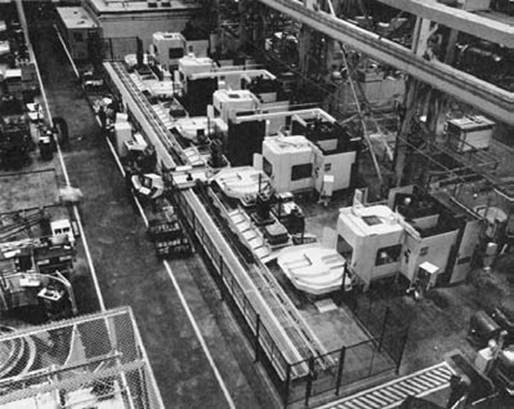
Un SMF contempla conceptos como: Automatizacion Flexible, Maquinas CNC, Control Digital Distribuido, manejo y almacenamiento de materiales automático, y Tecnología de grupos.
Definición y Clasificación
En el ámbito de la ingeniería industrial contemporánea, la conceptualización de los sistemas de producción trasciende la mera operatividad mecánica para constituirse como una amalgama sistémica de recursos humanos, tecnológicos y procedimentales.
Un sistema de producción se define formalmente como una colección de personas, equipos y procedimientos organizados con el propósito específico de ejecutar las operaciones de manufactura de una empresa, integrando dos componentes fundamentales: las instalaciones físicas y los sistemas de apoyo a la manufactura.
Las instalaciones comprenden el equipamiento, su distribución espacial (layout) y la infraestructura fabril, mientras que los sistemas de apoyo abarcan los procedimientos de gestión, diseño de productos y funciones de negocio necesarios para resolver problemas técnicos y logísticos.
Es imperativo distinguir el sistema de producción del sistema de manufactura.
Mientras que el primero engloba la totalidad de la empresa, el sistema de manufactura se define como un agrupamiento lógico de equipos y trabajadores que ejecutan físicamente las operaciones de procesamiento y ensamble sobre las piezas o productos; es el punto de contacto directo donde se "toca" el producto.
Estos sistemas constituyen el núcleo técnico de la fábrica y su diseño está intrínsecamente ligado a la naturaleza del producto y a la demanda del mercado.
Modelado matemático de la actividad fabril
Para evaluar la escala y complejidad de un sistema de manufactura, se emplean modelos matemáticos que relacionan la variedad de productos con el volumen de producción.
La producción total anual de una fábrica ( ) puede conceptualizarse como la suma de las cantidades de todos los estilos de productos fabricados:
Donde:
·
 es
el número total de diseños o estilos de productos distintos.
es
el número total de diseños o estilos de productos distintos.
·
es
la cantidad anual del estilo de producto  .
.
En un modelo simplificado basado en valores promedio, se utilizan las siguientes relaciones funcionales para determinar el nivel de actividad de procesamiento en una planta:
- Cantidad total de unidades producidas ( ):
- Número total de piezas fabricadas anualmente ( ):
- Número total de operaciones de procesamiento ( ):
En estas ecuaciones, representa el promedio de componentes por producto y el promedio de pasos de procesamiento por componente.
CLASIFICACIÓN DE LOS SISTEMAS DE MANUFACTURA
La taxonomía de los sistemas de manufactura se articula principalmente bajo dos dimensiones críticas: la participación del factor humano y la relación entre el volumen de producción y la variedad del producto.
Clasificación por participación del trabajador
Atendiendo al grado de intervención humana en el ciclo de trabajo, se identifican tres categorías fundamentales:
- Sistemas de trabajo manual: Consisten en uno o más trabajadores realizando tareas (como ensamble o manejo de materiales) sin el auxilio de herramientas motorizadas, utilizando únicamente herramientas manuales.
- Sistemas trabajador-máquina: Son los sistemas más extendidos, donde un operario humano controla y supervisa equipo motorizado, combinando las fortalezas relativas de ambos (precisión y potencia de la máquina con la capacidad de juicio y adaptación del humano).
- Sistemas automatizados: Operan mediante un programa de instrucciones ejecutado por un sistema de control, requiriendo mínima o nula participación humana directa durante el ciclo de trabajo.
Clasificación por volumen y variedad
Existe una correlación inversa entre el volumen de
producción (
) y la variedad de productos ( ).
).
Esta relación define tres rangos de producción que determinan el tipo de instalación y la distribución de planta:
|
Rango de Producción |
Cantidad Anual (unidades) |
Tipo de Instalación |
Distribución de Planta Sugerida |
|
Baja |
1 a 100 |
Taller de trabajo (Job Shop) |
Posición fija o Por procesos |
|
Media |
100 a 10,000 |
Producción por lotes / Celular |
Por procesos o Celular |
|
Alta |
10,000 a +1,000,000 |
Producción masiva |
Por producto (Línea de flujo) |
Distribución de planta y arquitecturas físicas
La disposición física del equipo es un reflejo directo de la estrategia de manufactura adoptada:
· Distribución de posición fija: El producto permanece estacionario debido a su gran tamaño (ej. barcos, aviones) y los recursos se trasladan hacia él.
· Distribución por procesos: El equipo se agrupa según su función (departamentos de tornos, fresas, etc.), ofreciendo máxima flexibilidad para procesar una gran variedad de piezas con rutas distintas.
· Distribución celular: Basada en la tecnología de grupos, organiza máquinas disímiles en celdas dedicadas a fabricar familias de piezas con similitudes geométricas o de procesamiento.
· Distribución por producto: El equipo se ordena en una secuencia lógica de operaciones (línea de producción), optimizando la eficiencia para volúmenes altos con mínima variedad.
MANUFACTURA CELULAR
La manufactura celular es una organización de trabajo que agrupa máquinas disímiles o procesos en celdas, cada una dedicada a la producción de una familia de piezas o productos, o un grupo limitado de familias. Es una aplicación de la tecnología de grupos (TG).
Tecnología de Grupos y Fabricación Celular
La Tecnología de Grupo es una filosofía de fabricación en la que se identifican piezas similares y se agrupan para aprovechar sus similitudes en diseño y producción.
Las similitudes entre las piezas permiten clasificarlas en familias. No es extraño que una fábrica que produce 10,000 piezas diferentes sea capaz de agrupar la mayoría de ellas en 20 o 30 familias de piezas. En cada familia de piezas, los pasos de procesamiento son similares.
Cuando estas similitudes se aprovechan en la producción, mejora la eficiencia operativa. En general, el mejoramiento se obtiene organizando las instalaciones de producción en Celdas de Manufactura.
Cada celda se diseña para producir una familia de piezas (o una cantidad limitada de familias de piezas), con lo que se sigue el principio de la especialización de las operaciones.
La celda incluye equipo especial de producción, herramientas y soportes personalizados para optimizar la producción de las familias de piezas. En efecto, cada celda se convierte en una fábrica dentro de la fábrica.
Estas eficiencias se logran generalmente organizando el equipo de producción en celdas (grupos de máquinas) para facilitar el flujo de trabajo. Organizar el equipo de producción en celdas de máquinas, donde cada celda se especializa en la producción de una familia de piezas, se denomina fabricación celular.
La tecnología de grupo y la fabricación celular son aplicables a una amplia variedad de situaciones de producción.
Las siguientes son las condiciones en las que GT es más apropiado:
En la actualidad, la planta utiliza una producción tradicional por lotes y un diseño tipo proceso, lo que genera una gran cantidad de manipulación de materiales, un alto inventario en proceso y largos plazos de fabricación.
Clasificación y Familias de Piezas
Es posible agrupar las piezas en familias de piezas. Esto es una condición necesaria. Cada celda de máquina GT está diseñada para producir una familia de piezas específica, o un conjunto limitado de ellas, por lo que debe ser posible identificar las familias de piezas fabricadas en la planta. Afortunadamente, en una planta de producción típica de volumen medio, la mayoría de las piezas se pueden agrupar en familias de piezas.
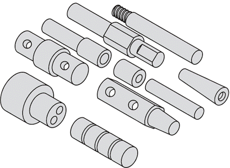
Identificación de familias de piezas y pieza compuesta
Se puede realizar mediante inspección visual de las piezas (o sus fotografías), el análisis de flujo de producción (usando información de las hojas de ruta), o la clasificación y codificación de piezas, que es el método más utilizado, aunque también el más costoso. Un ejemplo de sistema de clasificación y codificación es el creado por H. Opitz en Alemania, que usa un número de código básico de nueve dígitos con datos de diseño y manufactura.
Familia de piezas: Es un grupo de piezas que comparten semejanzas en su forma geométrica, tamaño, o en los pasos de procesamiento utilizados para su manufactura. Aunque siempre hay diferencias entre las piezas de una familia, las similitudes son suficientes para agruparlas.
Concepto de pieza compuesta: Para aprovechar al máximo las similitudes dentro de una familia de piezas, la producción se organiza usando celdas de maquinado especializadas. Una pieza compuesta es una pieza hipotética que incluye todos los atributos de diseño y manufactura de una familia determinada. Una celda diseñada para esta pieza compuesta puede producir cualquier miembro de la familia, omitiendo las operaciones para características no presentes en la pieza particular y permitiendo variaciones de tamaño.
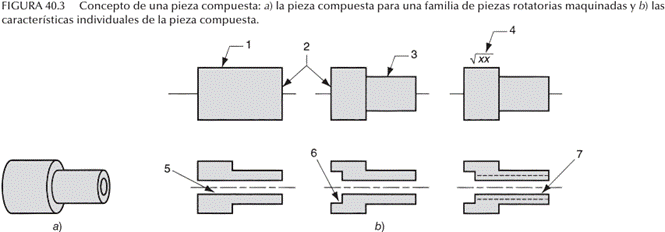
Diseño y tipos de celdas de maquinado
Las celdas de maquinado se clasifican por la cantidad de máquinas y el nivel de automatización:
· Máquina única: Tiene una sola máquina operada manualmente, con soportes y herramientas para las variaciones de la familia de piezas.
· Varias máquinas con manejo manual: Dos o más máquinas operadas manualmente, donde los trabajadores mueven las piezas.
· Varias máquinas con manejo mecanizado: Dos o más máquinas operadas manualmente, pero con un sistema mecanizado para transferir piezas entre ellas, útil para piezas grandes o pesadas, o para aumentar la velocidad de producción.
· Celda flexible de manufactura (FMC): Consiste en máquinas automatizadas con manejo automatizado. Generalmente, incluye tres máquinas o menos, altamente automatizadas y controladas por computadora.
· Sistema flexible de manufactura (FMS): También consiste en máquinas automatizadas con manejo automatizado. Por lo general, se define como un sistema con cuatro o más máquinas.
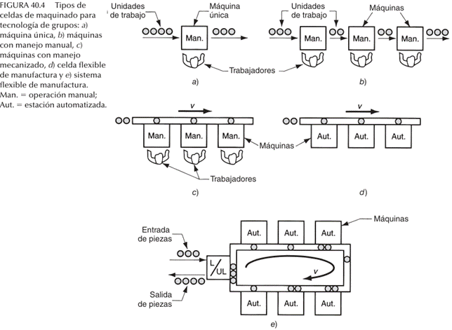
Relación con los sistemas flexibles de manufactura (FMS)
Un FMS es una celda de maquinado de TG altamente automatizada que integra estaciones de procesamiento (usualmente máquinas herramienta CNC), un sistema automatizado de manejo y almacenamiento de materiales, y un sistema de control integrado por computadoras. Un sistema automatizado se considera flexible si cumple con cuatro criterios:
1. Maquinado de diferentes configuraciones de piezas en una mezcla, no por lotes.
2. Permite cambios en el programa de producción y la mezcla de piezas.
3. Continúa funcionando incluso si una máquina falla, reasignando temporalmente el trabajo.
4. Permite la creación de programas de piezas con CN fuera de línea para nuevos diseños, que luego se copian al sistema para su ejecución.
Atributos y beneficios
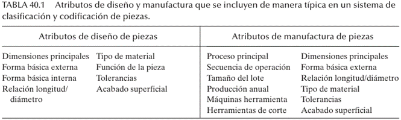
La tecnología de grupo y la fabricación celular ofrecen beneficios sustanciales a las empresas que tienen la perseverancia para implementarlas:
· GT promueve la estandarización de herramientas, accesorios y configuraciones.
· La manipulación de materiales se reduce porque las distancias dentro de una celda de máquina son mucho más cortas que dentro de toda la fábrica.
· Se simplifica la planificación de procesos y la programación de la producción.
· Se reducen los tiempos de preparación, lo que se traduce en plazos de fabricación más bajos.
· Se reduce el trabajo en proceso.
· La satisfacción de los trabajadores generalmente mejora cuando los trabajadores colaboran en una célula GT.
· Se realiza un trabajo de mayor calidad.
Integración de los componentes de un sistema flexible de manufactura
Un Sistema Flexible de Manufactura (FMS, por sus siglas en inglés) consiste en hardware y software que deben integrarse en una unidad eficiente y confiable, y también incluye personal humano.
La integración de estos componentes es crucial para el funcionamiento óptimo del sistema.
1. Componentes de Hardware
Un FMS incluye estaciones de trabajo, un sistema de manejo de material y una computadora de control central.
Estaciones de trabajo:
· Pueden incluir máquinas CNC en un sistema de maquinado.
· También pueden integrar estaciones de inspección, de limpieza de piezas y otras según sea necesario.
· A menudo, se instala un sistema transportador de virutas central debajo del nivel del piso.
· Un FMS también puede incluir estaciones de procesamiento no directas que apoyan la producción, como estaciones de lavado o inspección de piezas/palets.
Sistema de manejo y almacenamiento de material:
· Es el medio para mover las piezas entre las estaciones e incluye una capacidad limitada para almacenarlas.
· Debe ser capaz de mover piezas de forma aleatoria e independiente entre estaciones, lo que permite rutas variables y sustituciones de máquinas si alguna está ocupada o averiada.
· Debe poder manejar una variedad de configuraciones de piezas. Para piezas no rotatorias, esto se logra generalmente mediante palets modulares con características de cambio rápido. Para piezas rotatorias, a menudo se utilizan robots industriales para cargar y descargar máquinas de torneado y mover piezas.
· Los sistemas de manejo pueden incluir transportadores de rodillos, carros enganchados en el piso, vehículos guiados automáticamente (AGV) y robots industriales.
· Un AGVS, por ejemplo, proporciona un sistema versátil de manejo de materiales que complementa la flexibilidad de un FMS.
·
Un Sistema Flexible de Manufactura se basa en los principios de
la tecnología de grupos y se diseña para producir piezas (o productos) dentro
de un rango limitado de estilos, tamaños y procesos, ya sea una familia de
piezas única o un rango limitado de ellas.
El sistema de manejo de materiales es un factor crucial que establece la
distribución física básica (layout) del FMS:
o En línea: Las máquinas y el sistema de manejo están en línea recta, las piezas progresan de una estación a otra en una secuencia definida, a menudo con movimiento bidireccional para mayor flexibilidad.
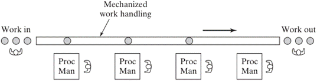
o En ciclo (loop layout): Un transportador o ciclo con estaciones de trabajo en su periferia, permitiendo cualquier secuencia de procesamiento.
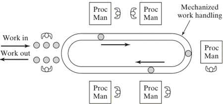
o En escalera: Las estaciones de trabajo se ubican en los "peldaños" de la escalera, similar al ciclo en su flexibilidad de secuencia.
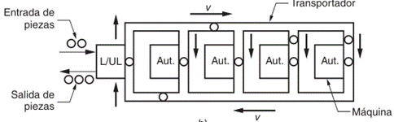
o A campo abierto (open field layout): La configuración más compleja, compuesta por varios ciclos enlazados.
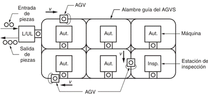
o Celda centrada en un robot (robot-centered cell): Un robot cuyo volumen de trabajo abarca las posiciones de carga/descarga de las máquinas en la celda.
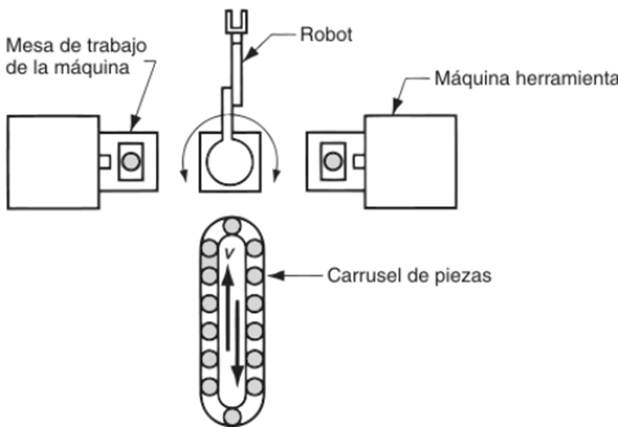
Sistema de control central por computadora:
· Un FMS es controlado por un sistema distribuido de computadoras.
· La computadora central interactúa con otros componentes de hardware.
· Las máquinas individuales y otros componentes suelen tener microcomputadoras como sus unidades de control individuales.
· La función de la computadora central es coordinar las actividades de los componentes para lograr una operación continua del sistema.
2. Software y Funciones de Control
El software de un FMS consiste en módulos asociados a diversas funciones que ejecuta el sistema de manufactura, tales como:
· Programación de piezas por CN: Desarrollo de programas para piezas nuevas, incluyendo paquetes de lenguaje como APT.
· Control de producción: Mezcla de productos, programación de maquinado y otras funciones de planificación.
· Copia de programas por CN: Los comandos del programa de piezas se copian a las estaciones individuales desde la computadora central.
· Control de transporte: Programación y control del sistema de manejo de piezas.
· Administración del sistema: Compilación de informes sobre el rendimiento (utilización, conteo de piezas, velocidades de producción, etc.) y, a veces, incluye la simulación del FMS.
3. Mano de Obra Humana
Aunque un FMS es altamente automatizado, se requiere personal para gestionarlo y operarlo. Las funciones típicas realizadas por humanos incluyen:
· Carga y descarga de piezas en el sistema.
· Cambio y preparación de herramientas de corte.
· Mantenimiento y reparación del equipo.
· Programación de piezas con control numérico (NC part programming).
· Programación y operación del sistema de computadoras.
· Administración general del sistema.
Un FMS es, en esencia, una celda de máquina de tecnología de grupos (GT) altamente automatizada, que integra estaciones de procesamiento (generalmente máquinas herramienta CNC), un sistema automatizado de manejo y almacenamiento de materiales, y un sistema de control integrado por computadoras.
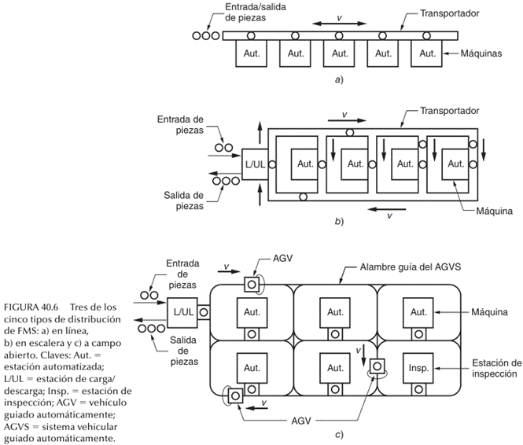
AUTOMATIZACIÓN
El siguiente paso en la mejora de la eficiencia de las operaciones de manufactura fue la Automatización. A mediados de la década de 1940, la industria automotriz en Estados Unidos propuso la palabra automatización para indicar el manejo y proceso automáticos de las partes entre las máquinas de producción.
El término automatización, de la palabra griega automatos que significa “acción por sí mismo", se define generalmente como el proceso de hacer que las máquinas sigan una secuencia predeterminada de operaciones con poca o ninguna intervención humana y con el uso de equipos y dispositivos especializado que realizan y controlan procesos y operaciones.
La mecanización controla una máquina o un proceso mediante diversos dispositivos mecánicos, hidráulicos, neumáticos y eléctricos.
Alcanzó su auge en la década de 1940. A pesar de sus beneficios en las operaciones mecanizadas el trabajador sigue participando en un proceso específico directamente y debe verificar cada paso del desempeño de una máquina.
Los tipos de sistemas de manufactura incluyen:
• Control Numérico (CN) y Robótica Industrial.
• Tecnología de Grupos y Sistemas de Manufactura Flexible (SMF).
• Líneas de Producción.
SMF CONTRA MANUFACTURA CONVENCIONAL
En comparación con los sistemas convencionales de manufactura, los beneficios principales del SMF son los siguientes:
· Las parte se pueden producir de manera aleatoria, en tamaños de Jotes tan pequeños como uno y a un costo unitario inferior.
· Se reducen eliminan la mano de obra directa y los inventarios.
· Los tiempos requeridos para cambios de productos son más cortos.
· Debido a que sistema es de autocorrección, la producción es más confiable y calidad de los productos, uniforme.}
1.2 Definición de SMF.
SISTEMA DE MANUFACTURA FLEXIBLE
La conceptualización de un Sistema de Manufactura Flexible (SMF), conocido internacionalmente como Flexible Manufacturing System (FMS), representa la culminación de la integración tecnológica en el piso de remoción de material y ensamble. En términos formales, un SMF se define como una celda de manufactura altamente automatizada que implementa los principios de la tecnología de grupos (GT), consistente en un conjunto de estaciones de procesamiento generalmente máquinas herramienta de control numérico computarizado (CNC) interconectadas mediante un sistema automatizado de manejo y almacenamiento de materiales, todo ello bajo el régimen de un sistema jerárquico de control computarizado distribuido.
Un Sistema Flexible de Manufactura (FMS) es una celda de maquinado de Tecnología de Grupos (TG) altamente automatizada. Consiste en un grupo de estaciones de procesamiento, que suelen ser máquinas herramienta de Control Numérico por Computadora (CNC), interconectadas por un sistema automatizado de manejo y almacenamiento de material, y controladas por un sistema integrado de computadoras.
Un SMF es capaz de procesar una amplia variedad de estilos de piezas simultáneamente bajo un programa de control numérico en diferentes estaciones de trabajo.
La característica intrínseca que otorga a estos sistemas su denominación de "flexibles" es su capacidad para procesar una variedad de estilos de piezas de forma simultánea en diversas estaciones de trabajo, permitiendo ajustes dinámicos en la mezcla de productos y en los volúmenes de producción en respuesta a los patrones cambiantes de la demanda del mercado.
Desde una perspectiva sistémica, el SMF trasciende la mera automatización rígida al integrar hardware sofisticado con software de gestión de datos en tiempo real.
Según la definición propuesta por Ranky, el SMF se describe como un sistema que gestiona el procesamiento distribuido de datos de alto nivel y el flujo automatizado de materiales, utilizando máquinas de inspección, robots industriales y celdas de ensamble en conjunto con sistemas integrados de almacenamiento.
Esta arquitectura permite que el sistema opere con una intervención humana mínima, a menudo apoyando operaciones desatendidas durante periodos prolongados.
Históricamente, el concepto ha sido denominado también como Sistemas de Manufactura Computarizada (CMS) o Manufactura de Misión Variable (VMS), enfatizando la capacidad de reconfiguración constante del entorno productivo.
FLEXIBILIDAD EN LOS SISTEMAS DE MANUFACTURA
Para que un sistema automatizado sea clasificado rigurosamente como un SMF, debe poseer una serie de elementos primarios y secundarios que aseguren su autonomía operativa y su capacidad de respuesta.
Los componentes primarios incluyen las máquinas herramienta, el sistema de manejo de materiales y la red de control computarizado supervisor.
Los componentes secundarios abarcan la tecnología de procesos de control numérico, el herramental de husillo, los dispositivos de sujeción (fixturización) y la gestión operativa.
La flexibilidad de un sistema no es un atributo binario, sino una capacidad multidimensional que se valida a través de cuatro pruebas críticas de diseño:
· Prueba de variedad de piezas: Capacidad del sistema para procesar diferentes configuraciones de piezas en un modo que no sea por lotes rígidos, permitiendo la mezcla de modelos en la secuencia de producción.
· Prueba de cambio de programación: Aptitud para aceptar alteraciones inmediatas en el programa de producción, ajustando las cantidades y la mezcla de partes de manera fluida.
· Prueba de recuperación de errores: Resiliencia del sistema para recuperarse de fallas o averías del equipo sin que se interrumpa la producción total, mediante la redirección de tareas hacia estaciones redundantes.
· Prueba de pieza nueva: Facilidad para integrar nuevos diseños de piezas en la mezcla de productos existente, lo que implica la creación y descarga de nuevos programas de control numérico sin paros prolongados para reequipamiento.
Flexibilidad
La flexibilidad es un término usando para definir el atributo que permite a un sistema de manufactura de modelo mixto lidiar con un cierto nivel de variación en los estilos de partes o productos sin interrupciones en producción para los cambios entre modelos.
Las celdas flexibles de manufactura y los sistemas flexibles de manufactura consisten en máquinas automatizadas con manejo automatizado.
CARACTERÍSTICAS DE UN SISTEMA FLEXIBLE:
Identificación de las unidades de trabajo.
Diferentes operaciones se requieren en diferentes estilos de partes o productos. El sistema de manufactura debe de identificar la unidad de trabajo para desarrollar la operación correcta.
Rápidos cambios de instrucciones de operación
Las instrucciones o programas de la parte en el caso de un CNC, debe corresponder a la operación correcta para una parte dada.
Rápido cambio de instalación física
Flexibilidad en manufactura significa que las unidades de trabajo diferentes no son producidas en lotes. Para diferentes estilos de unidades de trabajo a ser producido sin pérdida de tiempo entre una unidad y la siguiente, el sistema de manufactura debe ser capaz de hacer los cambios en las fijaciones y herramental en muy corto tiempo.
Sistema de manufactura reconfigurable
Dentro de una era en donde nuevos productos está siendo introducidos en ciclos de vida cada vez más cortos, rediciendo costos de diseño, edificios y la instalación de nuevos sistemas de manufactura. El cambiar todo para la fabricación de un nuevo producto puede ser imposible. Por esto ha surgido lo que se conoce como manufactura reconfigurable, en donde un sistema de manufactura se construye en base a características que le permitan ajustarse en el tiempo a nuevos productos.
CARACTERÍSTICAS DE UN SISTEMA DE MANERA RECONFIGURABLE
Fácil movilidad
Las maquinas herramientas y otras máquinas de producción se diseñan con tres puntos en la base para permitir que pueden ser levantadas y movidas fácilmente por una grúa. Los tres puntos facilitan la nivelación de la maquinas.
Diseño modular de los componentes del sistema
Estos permite que los componentes de Hardware de diferentes constructores de máquinas puedan conectarse juntas.
Arquitectura abierta en componentes de control
Esto permite el intercambio de datos entre paquetes de software entre diferentes proveedores de máquinas.
Estaciones de trabajo CNC
Aunque las máquinas de producción estén dedicadas a un solo productos, siguen siendo CNC que pueden tener actualizaciones de software, cambios en la ingeniería y cambiar el equipo cuando la producción finalmente se acabe.
PRUEBAS DE CRITERIO DE FLEXIBILIDAD
1. Prueba de Variedad de partes: Definir si el sistema pueden operar diversidad de partes no en modo de lotes.
2. Prueba de cambio de calendarización: Verificar si el sistema puede aceptar cambios en la calendarización de la producción, ya sea por mezcla de partes o cantidades de producción.
3. Prueba de recuperación de Errores: El sistema se puede recuperar de fallas en el equipo y paro de la producción, de manera que la producción no se detenga completamente.
4. Prueba de la parte nueva: Verificar que nuevas partes o diseños puedan se introducidos en una mezcla de productos existentes.
TIPOS DE FLEXIBILIDAD
Flexibilidad de máquinas
Capacidad para adaptar una máquina dada (estación de trabajo) en el sistema a un amplio rango de operaciones de producción y estilos de partes.
Entre mayor sea el rango de operaciones y estilos de partes, mayor es la flexibilidad de las maquinas.
Flexibilidad de máquinas (Factores)
· Tiempo de instalación y de cambios
· Facilidad para reprogramar la maquina (facilidad para cargar nuevos programas a la maquina)
· Capacidad de almacenamiento de herramientas habilidad y versatilidad de los trabajadores en el sistema
Flexibilidad de la producción
Rango o universo de estilos de partes que pueden ser producidas por el sistema.
Flexibilidad de la producción (Factores)
· Flexibilidad de la maquina en una estación individual
· Rango de flexibilidades de máquina para todas las estaciones del sistema.
Flexibilidad Mixta
Habilidad para cambiar la mezcla de productos mientras se mantiene la misma cantidad de producción total; esto es, produciendo el mismo número de partes solo que en proporciones diferentes
Flexibilidad Mixta (Factores)
· Similaridad de las partes en la mezcla
· Tiempo contenido de trabajo relatico de las partes producidas
· Flexibilidad de la maquina
Flexibilidad de Ruteo
Capacidad para producir parte a través de secuencias de estaciones de trabajo alternativas en respuesta a paros de equipo, fallo de herramientas, y otras interrupciones de estaciones individuales.
Flexibilidad de Ruteo (Factores)
· Similaridad de partes en la mezcla
· Similaridad de estaciones de trabajo y duplicación de estaciones de trabajo
· Entrenamiento compartido de trabajadores manuales
· Herramienta comunes
Flexibilidad del productos
Facilidad con la cual cambios de diseño pueden ser acomodados. Facilidad con lo cual nuevo productos pueden ser introducidos.
Flexibilidad del productos (Factores)
· Que tan cercanos el diseño de parte nueva empata con la familia de partes existentes.
· Preparación del programa de partes fuera de línea
· Flexibilidad de maquinas
Flexibilidad de volumen
Habilidad para producir partes económicamente en cantidades totales altas y baja de la producción, dada la inversión fija en el sistema.
Flexibilidad de volumen (Factores)
· Nivel de trabajo manual realizado en la producción
· Cantidad invertida de capital de equipo
Flexibilidad de expansión
Facilidad con la cual el sistema puede ser expandido para incrementar las cantidades de producción total.
Flexibilidad de expansión (Factores)
· Gastos por agregar estaciones de trabajo
· Facilidad con lo cual en layout (acomodo) puede ser expandido
· Tipo de sistema de manejo de partes usado
· Facilidad con lo cual trabajadores entrenados pueden agregarse
Modelado matemático de la capacidad y rendimiento del SMF
El análisis técnico de un SMF requiere de modelos deterministas para estimar parámetros críticos de rendimiento, tales como la tasa de producción máxima y la utilización de las estaciones.
El modelo de cuello de botella (bottleneck model) es una herramienta analítica fundamental para este propósito, asumiendo que la capacidad total del sistema está limitada por la estación con la mayor carga de trabajo por servidor.
La carga de trabajo promedio para una estación de
procesamiento  se
define como el tiempo total medio dedicado a procesar una pieza en dicha
estación, modelado por la ecuación:
se
define como el tiempo total medio dedicado a procesar una pieza en dicha
estación, modelado por la ecuación:
Donde:
·
es
la carga de trabajo de la estación  (minutos).
(minutos).
·
es
el tiempo de ciclo de la operación para
la pieza  en
la estación
en
la estación  .
.
· es la frecuencia de la operación.
·
representa
la fracción de la mezcla de productos para el estilo  .
.
La tasa de producción máxima de todas las partes en el sistema ( ), limitada por la estación que constituye el cuello de botella, se calcula mediante la relación entre el número de servidores de dicha estación ( ) y su carga de trabajo ( ):
Este modelo permite determinar el número de servidores necesarios en cada estación para alcanzar una tasa de producción especificada mediante la siguiente función de entero mínimo:
Clasificación por magnitud y nivel de flexibilidad
La taxonomía de los sistemas flexibles permite distinguir entre diversas arquitecturas según su escala y propósito operativo. En función del número de estaciones de trabajo, se establece la siguiente jerarquía:
|
Tipo de Sistema |
Número de Estaciones |
Características Principales |
|
Celda de Máquina Única |
1 |
Operación desatendida con sistema de almacenamiento de piezas. |
|
Celda de Manufactura Flexible (FMC) |
2 a 3 |
Mínimo de dos estaciones conectadas por un sistema de manejo de materiales. |
|
Sistema de Manufactura Flexible (FMS) |
4 o más |
Red compleja de máquinas e infraestructura de control distribuido. |
Asimismo, los sistemas se clasifican según el nivel de flexibilidad diseñado:
- SMF Dedicado: Diseñado para una familia de piezas limitada y estable, optimizando la eficiencia del proceso a través de máquinas especializadas.
- SMF de Orden Variable (Aleatorio): Posee la máxima flexibilidad para manejar grandes familias de piezas con variaciones geométricas sustanciales y cambios frecuentes en el cronograma de producción.
- Manufactura Holónica: Una evolución del SMF que utiliza "holones" o unidades autónomas que cooperan para lograr una agilidad extrema en la producción.
1.3 Historia de los SMF.
BREVIARIO HISTÓRICO
La base de los Sistemas de Manufactura Flexible se encuentra en el desarrollo de tecnologías como el Control Numérico (CN) y la Tecnología de Grupos (TG).
Las primeras investigaciones sobre el Control Numérico se atribuyen a John Parsons y Frank Stulen en la Parsons Corporation a fines de la década de 1940. Parsons diseñó un método que utilizaba datos de coordenadas numéricas para mover la mesa de trabajo de una fresadora y producir piezas complejas para aeronaves.
En 1949, la Fuerza Aérea de Estados Unidos otorgó un contrato a la Parsons Corporation para estudiar la viabilidad del concepto de control numérico para máquinas herramienta. El proyecto fue subcontratado al laboratorio de servomecanismos del Massachusetts Institute of Technology (M.I.T.), donde se adaptó una fresadora vertical de tres ejes con controles numéricos.
Esta investigación en el M.I.T. también condujo a la implementación del lenguaje de programación APT (Automatically Programmed Tools) en 1958, el cual permitía a los usuarios describir instrucciones de maquinado en enunciados sencillos, similares al inglés, para que los sistemas de CN pudieran leerlos.
Los Sistemas de Manufactura Flexible surgieron como una aplicación altamente automatizada de la Tecnología de Grupos (TG), un enfoque que busca agrupar piezas similares para explotar sus semejanzas en diseño y producción89. La implementación de la TG, especialmente cuando se automatiza, a menudo se denomina "sistema flexible de manufactura".
HISTORIA DE LOS SISTEMAS DE MANUFACTURA FLEXIBLE (SMF)
La evolución histórica de los Sistemas de Manufactura Flexible (SMF) representa la convergencia de diversas trayectorias tecnológicas iniciadas tras la Segunda Guerra Mundial, marcando una transición crítica desde la automatización rígida, orientada a la producción masiva, hacia una automatización programable capaz de gestionar la variabilidad de la demanda.
Este desarrollo no fue un evento aislado, sino el resultado de la necesidad imperante de cerrar la brecha de eficiencia entre los talleres de trabajo (job shops) de bajo volumen y las líneas de transferencia de alto volumen, las cuales, aunque extremadamente productivas, carecían de la versatilidad necesaria para enfrentar ciclos de vida de producto cada vez más cortos.
En este contexto, el éxito de la manufactura moderna se ha fundamentado en la capacidad de integrar sistemas de control digital con mecanismos de transporte automatizados, permitiendo que la economía de escala, tradicionalmente asociada a productos homogéneos, se traslade a la producción de lotes pequeños y medianos.
El Paradigma Fundacional: Williamson y el "System 24"
El concepto germinal de un SMF se atribuye formalmente al ingeniero británico David Williamson, quien a mediados de la década de 1960, mientras trabajaba para la compañía Molins Ltd., conceptualizó y patentó lo que denominó el "System 24".
Este diseño pionero fue concebido bajo una premisa revolucionaria para su época: permitir que un grupo de máquinas herramienta operara las 24 horas del día, de las cuales al menos 16 horas funcionarían de manera totalmente desatendida por operarios humanos.
El sistema integraba por primera vez el control computarizado sobre máquinas de control numérico (NC), la producción de una variedad de piezas en una misma secuencia y el uso de almacenes de herramientas para operaciones de maquinado multifuncionales.
|
Hito Histórico |
Año |
Acontecimiento Clave |
|
Invención del Control Numérico (NC) |
1952 |
Desarrollado en el MIT para el maquinado de perfiles complejos en aviación. |
|
Patente del primer robot industrial |
1961 |
George Devol introduce el concepto de manipulador programable. |
|
Patente del "System 24" |
1965 |
David Williamson (Molins) define el primer sistema flexible integral. |
|
Primer SMF operativo en EE. UU. |
1967 |
Instalado por Sundstrand en la planta de Ingersoll-Rand. |
|
Introducción de los PLC |
1969 |
Richard Morley desarrolla el MODICON 084 para reemplazar relevadores rígidos. |
Aunque el "System 24" de Molins no logró alcanzar una implementación comercial masiva inmediata debido a que las capacidades de computación de la época aún no eran lo suficientemente robustas para soportar su complejidad operativa, sentó las bases filosóficas de la manufactura desatendida y la integración sistémica.
Los principios establecidos por Williamson forzaron a la industria a reconsiderar la organización del flujo de trabajo, priorizando la reducción de los tiempos muertos y la optimización del manejo de materiales.
Maduración Tecnológica: NC, PLC y la Robótica
El desarrollo de los SMF está intrínsecamente ligado al progreso del Control Numérico (NC), cuya primera demostración industrial de factibilidad ocurrió en 1952 en el Massachusetts Institute of Technology (MIT) utilizando una fresadora Cincinnati Hydro-Tel.
A finales de la década de 1960 y principios de la de 1970, la conexión de computadoras digitales directamente a las máquinas herramienta permitió la evolución hacia el Control Numérico Computarizado (CNC) y el Control Numérico Directo (DNC), facilitando la gestión centralizada de programas de piezas y eliminando la dependencia de las cintas de papel perforadas.
Simultáneamente, la introducción de los Controladores Lógicos Programables (PLC) alrededor de 1969 proporcionó una alternativa flexible a los tableros de relevadores cableados, permitiendo que la lógica de control de las secuencias de producción fuera fácilmente modificable mediante software.
La consolidación de estas tecnologías permitió el surgimiento de los siguientes elementos críticos:
· Servomecanismos de Precisión: Capaces de ejecutar trayectorias complejas con errores mínimos.
· Robótica Industrial: Tras la patente de George Devol en 1961, los robots comenzaron a integrarse en las celdas de manufactura para tareas de carga y descarga, aumentando la autonomía del sistema.
· Sistemas de Transporte Automatizado: El uso de vehículos guiados automáticamente (AGV) y transportadores inteligentes permitió el movimiento aleatorio de piezas entre estaciones, rompiendo la rigidez de la línea de transferencia tradicional.
La Expansión Global y los Modelos Matemáticos de Rendimiento
A finales de la década de 1960, el primer SMF funcional en los Estados Unidos fue instalado por la compañía Sundstrand para la empresa Ingersoll Rand, diseñado para procesar una familia de piezas de fundición de diversos tamaños.
Durante la década de 1970, el modelo de manufactura flexible se expandió rápidamente a nivel global, con instalaciones significativas en la República Federal de Alemania (1969), la Unión Soviética (1972) y Japón, donde Fuji Xerox lideró la implementación de estos sistemas.
Hacia 1985, se estimaba la existencia de aproximadamente 300 instalaciones de SMF en todo el mundo, con una participación predominante de las grandes empresas de los sectores automotriz y aeroespacial.
Para gestionar la complejidad inherente a estos sistemas, la ingeniería industrial desarrolló métricas de rendimiento basadas en modelos deterministas y estocásticos.
Uno de los parámetros fundamentales es la cantidad total de
unidades producidas anualmente (
), la cual se puede modelar como el producto de la variedad de estilos ( ) y la cantidad promedio por estilo (
):
) y la cantidad promedio por estilo (
):
Asimismo, la relación entre el trabajo en proceso (WIP) y el tiempo de entrega de manufactura (MLT) se consolidó a través de la Ley de Little, permitiendo a los gerentes de planta predecir el comportamiento del inventario en sistemas de estado estable:
Donde:
· es el número esperado de unidades en el sistema.
· es la tasa de procesamiento de unidades.
· es el tiempo medio que una unidad permanece en el sistema.
Tendencias Modernas: Hacia el CIM y los Sistemas Reconfigurables
A partir de la década de 1980, el enfoque se desplazó de la optimización de máquinas individuales hacia la integración total de la empresa mediante la Manufactura Integrada por Computadora (CIM).
Los SMF dejaron de ser considerados "islas de automatización" para convertirse en subsistemas dentro de una arquitectura jerárquica de red digital que abarca desde el diseño asistido por computadora (CAD) hasta la logística de distribución.
La historia reciente de los SMF destaca una transición hacia sistemas más modulares y escalables conocidos como Sistemas de Manufactura Reconfigurables (RMS).
Estos sistemas buscan ajustar no solo la mezcla de productos, sino también la capacidad física del sistema mediante el cambio de componentes modulares en respuesta a fluctuaciones de mercado impredecibles.
El legado de Williamson y las primeras instalaciones de Sundstrand han culminado en la actual era de la manufactura ágil, donde la flexibilidad es un atributo estratégico fundamental para la competitividad global.
1.4 Componentes de un SMF.
COMPONENTES DE UN SISTEMA DE MANUFACTURA FLEXIBLE (SMF)
La arquitectura de un Sistema de Manufactura Flexible (SMF), comúnmente denominado FMS por sus siglas en inglés (Flexible Manufacturing System), se fundamenta en la integración sinérgica de hardware avanzado y sistemas lógicos de control que permiten una autonomía operativa sin precedentes en la producción de lotes medianos.
Un SMF no es simplemente una colección de máquinas automáticas, sino una entidad holística diseñada para procesar una familia de partes bajo una gestión computarizada que coordina el flujo de materiales y datos en tiempo real.
La robustez de estos sistemas emana de la articulación de cuatro pilares fundamentales que garantizan su viabilidad técnica y económica: las estaciones de trabajo, el sistema de manejo y almacenamiento de materiales, el sistema de control computarizado y el recurso humano especializado.
Cada uno de estos componentes debe diseñarse no solo para cumplir su función individual, sino para interactuar de manera fluida con los demás, superando las pruebas de flexibilidad de mezcla, volumen y recuperación de errores.
Estaciones de Procesamiento y Trabajo
Las estaciones de procesamiento constituyen el núcleo de transformación física del SMF, donde se ejecuta el valor agregado sobre la materia prima o componentes base.
En la mayoría de las aplicaciones contemporáneas, estas estaciones consisten predominantemente en máquinas herramienta de Control Numérico Computarizado (CNC), tales como centros de maquinado horizontales o verticales equipados con cambiadores automáticos de herramientas (ATC) y almacenes de herramientas de alta capacidad.
No obstante, la versatilidad del concepto SMF permite la integración de diversas tecnologías de procesamiento según las necesidades de la familia de productos.
Las tipologías de estaciones de trabajo más representativas en un entorno de manufactura flexible incluyen los siguientes elementos:
· Centros de Maquinado CNC: Equipados para realizar múltiples operaciones de corte como fresado, taladrado y mandrinado en un solo montaje, minimizando el tiempo de tránsito entre estaciones.
· Estaciones de Carga y Descarga (L/UL): Representan la interfaz física entre el SMF y el resto de la planta, donde se montan las piezas brutas sobre tarimas (pallets) y se desmontan los productos terminados.
· Estaciones de Ensamble: Utilizan comúnmente robots industriales programables para unir componentes, permitiendo variaciones en la secuencia y el patrón de movimiento para diferentes estilos de productos.
· Estaciones de Inspección: Incluyen máquinas de medición por coordenadas (CMM) o sistemas de visión artificial que verifican la precisión dimensional y la calidad superficial en línea, alimentando datos al sistema de control para ajustes adaptativos.
· Otras Estaciones Especializadas: Dependiendo de la aplicación, un SMF puede integrar estaciones de forjado, prensas de lámina metálica, sistemas de limpieza o estaciones de tratamiento térmico.
Sistema de Manejo y Almacenamiento de Materiales
El sistema de manejo de materiales (MHS, por sus siglas en inglés) es el componente responsable de la movilidad aleatoria e independiente de las piezas entre las estaciones de trabajo, rompiendo la rigidez de las líneas de transferencia convencionales.
Este subsistema define la disposición física o layout del SMF y debe ser capaz de manejar diversas configuraciones de partes, asegurando que cada estación sea provista con el trabajo necesario para maximizar su utilización.
La integración de este sistema permite que el SMF funcione como una unidad cohesiva, gestionando tanto el transporte primario entre estaciones como el posicionamiento secundario de alta precisión en la máquina.
Las funciones críticas y el equipamiento del MHS se describen a continuación:
- Transporte Primario: Encargado del movimiento macroscópico de piezas entre estaciones y áreas de almacenamiento; utiliza tecnologías como Vehículos Guiados Automáticamente (AGV), transportadores de rodillos o sistemas de carros sobre rieles,.
- Transporte Secundario: Ubicado en cada estación, consiste en cambiadores automáticos de tarimas (pallets) o brazos robóticos que transfieren la pieza desde el sistema de transporte primario al husillo o mesa de la máquina con la precisión requerida para el proceso,.
- Almacenamiento Temporal: Los sistemas SMF suelen incluir áreas de amortiguamiento (buffers) o sistemas automatizados de almacenamiento y recuperación (AS/RS) para gestionar el inventario en proceso (WIP) y evitar el desabastecimiento de las estaciones.
- Limpieza y Recolección de Desechos: Integrado frecuentemente bajo el nivel del piso, este sistema gestiona la remoción automática de virutas y el reciclaje de fluidos de corte para mantener la autonomía del sistema.
Sistema de Control Computarizado
El sistema de control computarizado actúa como el "cerebro" del SMF, coordinando de manera jerárquica y distribuida las actividades de las estaciones de procesamiento y el manejo de materiales para lograr un flujo de producción armónico. Este sistema debe gestionar una vasta cantidad de datos dinámicos, incluyendo programas de control numérico, estados de las máquinas, trayectorias de transporte y prioridades de producción.
La arquitectura típica de control se divide en niveles, desde el control de dispositivos individuales (PLCs y CNCs) hasta el computador anfitrión (host) del SMF que se comunica con los sistemas empresariales de nivel superior como el MRP.
|
Función de Control |
Descripción Técnica |
|
Control de Estaciones |
Gestión individual de los ciclos de operación de cada máquina mediante controladores CNC. |
|
Distribución de Instrucciones |
Descarga de programas de piezas (DNC) desde la computadora central a las unidades de control locales. |
|
Control de Producción |
Gestión de la mezcla y tasa de lanzamiento de partes basada en la demanda diaria y disponibilidad de recursos. |
|
Control de Tráfico y Lanzadera |
Coordinación del sistema de manejo de materiales, activando interruptores y gestionando colisiones entre vehículos. |
|
Administración de Herramientas |
Monitoreo de la vida útil de las herramientas, planificación de cambios y seguimiento de ubicaciones en el sistema. |
|
Monitoreo de Desempeño |
Recopilación y resumen de datos operativos como utilización de máquinas y reportes de estado para la gerencia. |
Recursos Humanos
A pesar de los altos niveles de automatización, el recurso humano permanece como un componente indispensable para la gestión, mantenimiento y recuperación de los SMF.
En un entorno flexible, el rol del trabajador evoluciona de la operación manual directa hacia tareas de supervisión técnica y resolución de problemas complejos que la inteligencia artificial aún no puede emular. El éxito del sistema depende de un personal altamente calificado capaz de interactuar con interfaces computarizadas sofisticadas y de intervenir eficazmente ante eventos estocásticos imprevistos.
Las funciones primordiales del personal en un SMF incluyen:
· Carga y Descarga de Materia Prima: Montaje manual de piezas en los dispositivos de sujeción o tarimas en las estaciones de entrada del sistema.
· Preparación de Herramental: Configuración y preajuste de las herramientas de corte en el área de pre-ajuste antes de su introducción al sistema.
· Mantenimiento y Reparación: Ejecución de programas de mantenimiento preventivo y reparación correctiva de los sistemas mecánicos, electrónicos e hidráulicos del FMS.
· Programación y Gestión de Datos: Desarrollo de nuevos programas de piezas CNC y administración del sistema operativo y de la red de comunicaciones.
· Administración del Sistema: Supervisión general de las operaciones, toma de decisiones estratégicas ante fallas críticas y optimización de los flujos de trabajo.
COMPONENTES DE HARDWARE
Estaciones de trabajo (Workstations): Incluyen principalmente máquinas CNC en sistemas de maquinado, pero pueden ser también estaciones de inspección, limpieza de piezas, y otras necesarias.
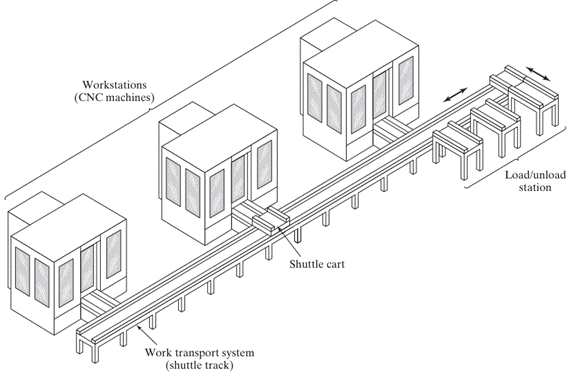
Sistema de manejo y almacenamiento de material (Material Handling and Storage System): Es el medio para mover las piezas entre las estaciones y ofrece una capacidad limitada para almacenarlas. Ejemplos de equipos de manejo incluyen transportadores de rodillos, carros enganchados al piso, vehículos guiados automáticamente (AGV) y robots industriales.
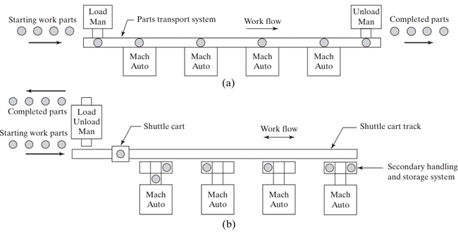
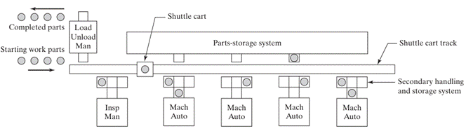
Las piezas no rotatorias a menudo se mueven en "tarimas" fijas, diseñadas para el sistema de manejo y con soportes que alojan las diversas configuraciones geométricas de las piezas. Las piezas rotatorias pueden ser manejadas por robots, si el peso no es un factor restrictivo.
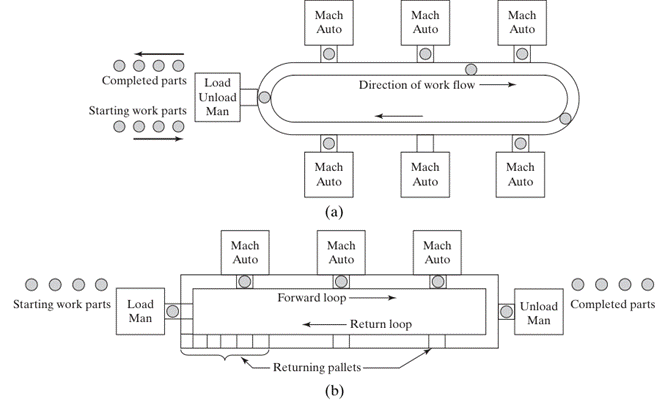
Computadora de control central (Central Control Computer): Es la interfaz principal con los otros componentes de hardware. Aunque las máquinas individuales y otros componentes suelen tener microcomputadoras para su control específico, la computadora central coordina todas las actividades para una operación continua del sistema.
Las funciones realizadas por el sistema de control informático FMS se pueden dividir en las siguientes categorías:
1. Control de estación de trabajo. En un FMS completamente automatizado, las estaciones individuales de procesamiento o ensamble generalmente operan bajo algún tipo de control por computadora, como CNC.
2. Distribución de instrucciones de control a las estaciones de trabajo. Los programas de piezas se almacenan en la computadora central y se descargan a las máquinas. Para este propósito se utiliza el control numérico distribuido. El sistema DNC permite el envío de nuevos programas y la edición de programas existentes según sea necesario.
3. Control de producción. La mezcla y la tasa a la que las diferentes piezas se lanzan al sistema deben ser gestionadas, con base en las tasas de producción diaria especificadas para cada tipo de pieza, el número de piezas en bruto disponibles y el número de pallets aplicables. Esto se logra dirigiendo un pallet aplicable al área de carga/descarga y proporcionando instrucciones al operador para cargar la pieza de trabajo deseada.
4. Control de tráfico. Esto se refiere a la gestión del sistema principal de manejo de materiales que mueve piezas entre estaciones. El control de tráfico se lleva a cabo mediante la activación de interruptores en ramificaciones y puntos de unión, deteniendo piezas en ubicaciones de transferencia de máquinas-herramienta y moviendo pallets a las estaciones de carga/descarga.
5. Control de transporte (shuttle). Esta función está relacionada con la operación y control del sistema de manejo secundario en cada estación de trabajo. Debe coordinarse con el control de tráfico y sincronizarse con la operación de la máquina-herramienta a la que sirve.
6. Control de herramientas. Se ocupa de gestionar dos aspectos de las herramientas de corte: (a) la ubicación de las herramientas, lo que implica llevar un seguimiento de las herramientas de corte en cada estación de trabajo y asegurarse de que las herramientas correctas estén disponibles en cada estación para las piezas que deben procesarse allí; y (b) la supervisión de la vida útil de la herramienta, que implica comparar la vida útil esperada de cada herramienta de corte con el tiempo acumulado de mecanizado de la herramienta, y alertar a un trabajador cuando sea necesario reemplazarla.
7. Monitoreo y reporte de desempeño. El sistema de control por computadora recopila datos sobre la operación y el desempeño del sistema de manufactura flexible. Los datos se resumen periódicamente y se preparan informes de desempeño del sistema para la gerencia. Los elementos incluidos son: utilización de máquinas, proporción de tiempo productivo e improductivo, cantidades de producción y estado de las herramientas de corte (ubicación y vida útil). Además de los informes sobre estos datos, se espera que la gerencia tome acciones correctivas cuando la operación actual del FMS se desvíe significativamente de los valores esperados. El control de producción usa los reportes para indicar la probable fuente del problema cuando la producción es menor a la esperada. Los datos también se usan en programas de mantenimiento preventivo y reparación.
SOFTWARE Y FUNCIONES DE CONTROL
El software de un SMF se compone de módulos asociados a diversas funciones que el sistema ejecuta. Las funciones típicas incluyen:
• Control de máquina: Usualmente, control numérico por computadora (CNC).
• Control de pieza de trabajo: Monitoreo del estado de cada pieza, los soportes de tarima, y los pedidos para carga/descarga.
• Administración de herramientas: Incluye control de inventario, estado del ciclo de vida de las herramientas, cambio y reformado, y transporte hacia y desde el esmerilado.
• Control de transporte: Programación y control del sistema de manejo de piezas de trabajo.
• Administración del sistema: Compilación de informes de gestión sobre el desempeño (utilización, conteo de piezas, velocidades de producción, etc.) y, en ocasiones, simulación del SMF.
MANO DE OBRA HUMANA
Aunque los SMF son altamente automatizados, el personal humano sigue siendo un componente adicional y esencial. Sus actividades incluyen:
• Carga y descarga de piezas del sistema.
• Cambio y preparación de herramientas de corte.
• Mantenimiento y reparación del equipo.
• Programación de piezas con control numérico.
• Programación y operación del sistema de computadoras.
• Administración general del sistema.
Modelado Matemático de los Componentes (Análisis de Carga)
Para el análisis técnico de un SMF, se emplean modelos deterministas que permiten estimar la carga de trabajo de cada componente y del sistema de transporte.
La carga de trabajo promedio para una estación de
procesamiento  (
) es el tiempo total acumulado dedicado a procesar una pieza en dicha estación,
considerando la mezcla de productos del sistema.
(
) es el tiempo total acumulado dedicado a procesar una pieza en dicha estación,
considerando la mezcla de productos del sistema.
La carga de trabajo se modela matemáticamente como:
Donde:
·
es
el tiempo de ciclo de la operación para
la parte en
la estación  .
.
· representa la frecuencia de la operación.
·
es
la fracción de la mezcla de partes para el estilo  .
.
Para el sistema de manejo de materiales (designado como estación ), la carga de trabajo ( ) depende del número medio de transportes ( ) y del tiempo medio de transporte ( ):
,
Este modelado permite identificar la estación que constituye
el "cuello de botella", la cual presentará el valor máximo de la
relación ,
donde es
el número de servidores o máquinas en la estación  .
.
La tasa de producción máxima del sistema ( ) estará limitada por este componente crítico,:
1.5 Clasificación de los SMF.
CELDAS FLEXIBLES DE MANUFACTURA (FMC) VS. SISTEMAS FLEXIBLES DE MANUFACTURA (FMS)
• Celda Flexible de Manufactura (FMC): Generalmente se refiere a sistemas con tres máquinas o menos.
• Sistema Flexible de Manufactura (FMS): Consiste en cuatro o más máquinas.
Ambos son altamente automatizados y controlados por computadora. Sin embargo, esta distinción en el número de máquinas no está universalmente aceptada.
TIPOS DE DISTRIBUCIÓN DEL SMF
El sistema de manejo de materiales es el que establece la distribución básica del SMF. Se distinguen cinco tipos de distribución:
1. En línea (In-line): Utiliza un sistema de transferencia lineal para mover las piezas entre las estaciones de procesamiento y las de carga/descarga. A menudo, tiene capacidad de movimiento en dos direcciones, pero si es unidireccional, los diferentes estilos de piezas deben seguir la misma secuencia básica de procesamiento.
2. En ciclo (Loop): Consiste en un transportador o ciclo con estaciones de trabajo ubicadas en su periferia. Permite cualquier secuencia de procesamiento, ya que es posible acceder a cualquier estación desde otra.
3. En escalera (Ladder): Las estaciones de trabajo se ubican en los "peldaños" de la escalera. Esta configuración también permite cualquier secuencia de procesamiento.
4. A campo abierto (Open field): Es la configuración más compleja, compuesta por varios ciclos enlazados.
5. Celda centrada en un robot (Robot-centered cell): Consiste en un robot cuyo volumen de trabajo incluye las posiciones de carga/descarga de las máquinas en la celda.
CLASIFICACIÓN DE LOS SISTEMAS DE MANUFACTURA FLEXIBLE (SMF)
La taxonomía de los Sistemas de Manufactura Flexible (SMF) es fundamental para comprender su implementación estratégica en el entorno industrial contemporáneo.
Dado que cada sistema se diseña para una aplicación específica es decir, para una familia de partes y procesos predefinida, cada SMF es una entidad de ingeniería única y personalizada.
No obstante, la ingeniería de manufactura ha establecido criterios técnicos rigurosos para categorizarlos, permitiendo a los diseñadores seleccionar la arquitectura óptima basada en el volumen de producción, la variedad de productos y los requerimientos cinemáticos del flujo de materiales.
Estas clasificaciones no solo responden a la magnitud física del sistema, sino también a su comportamiento dinámico ante la incertidumbre del mercado y la variabilidad operativa.
Clasificación por el número de estaciones de trabajo
Uno de los criterios más tangibles para la diferenciación de estos sistemas es el número de máquinas o estaciones de procesamiento que integran la red productiva.
Aunque la distinción puede ser en ocasiones subjetiva, se han establecido límites técnicos basados en la complejidad del sistema de manejo de materiales y la sofisticación del control computarizado:
- Celda de Máquina Única (SMC): Consiste en una sola máquina de control numérico computarizado (CNC) integrada con un sistema de almacenamiento de piezas que permite una operación desatendida por periodos superiores a un ciclo de trabajo. Aunque posee flexibilidad en términos de programación y variedad de partes, carece de redundancia, por lo que una avería detiene la producción totalmente.
- Celda de Manufactura Flexible (FMC): Estructuralmente se define por la integración de dos o tres estaciones de procesamiento interconectadas mecánicamente por un sistema de manejo de partes y electrónicamente por una unidad de control central. A diferencia del SMF a gran escala, la FMC suele gestionar flujos de datos y materiales menos complejos, pero ofrece una recuperación de errores limitada debido al bajo número de servidores.
- Sistema de Manufactura Flexible (FMS): Representa la configuración más compleja, constituida por cuatro o más estaciones de procesamiento enlazadas por un sistema de manejo de materiales robusto y un control computarizado distribuido. Esta arquitectura permite la redundancia de máquinas, minimizando el impacto de las paradas por mantenimiento o averías.
|
Tipo de Sistema |
N° de Estaciones |
Sistema de Manejo de Materiales |
Complejidad del Control |
|
Celda de Máquina Única |
1 |
Almacenamiento local (carrusel) |
Baja a Media |
|
Celda Flexible (FMC) |
2 - 3 |
Transferencia mecanizada simple |
Media |
|
Sistema Flexible (FMS) |
4+ |
Manejo automatizado complejo (AGV, transportadores) |
Alta (Distribuido) |
Clasificación por el nivel de flexibilidad operativa
Más allá de la escala física, los sistemas se categorizan según el grado de adaptabilidad intrínseco diseñado en su arquitectura. Esta clasificación es crítica para alinear la capacidad del sistema con la volatilidad de la demanda y el ciclo de vida de los productos.
El SMF Dedicado se concibe para la producción de una familia de partes limitada y estable, donde la población total de componentes es conocida de antemano.
En este escenario, la ingeniería prioriza la eficiencia y la tasa de producción sobre la versatilidad extrema.
A menudo, estos sistemas operan de forma similar a una línea de transferencia flexible, donde la secuencia de procesos es casi idéntica para todos los modelos del mix.
Por otro lado, el SMF de Orden Variable (o aleatorio) está diseñado para entornos de alta incertidumbre donde la familia de partes es extensa y las variaciones geométricas son sustanciales.
Este sistema requiere máquinas de propósito general y un sistema de control capaz de gestionar secuencias de procesamiento dinámicas y reconfigurables en tiempo real.
La evaluación de la capacidad productiva en estos sistemas se rige por el modelo del "cuello de botella", donde la tasa de producción máxima ( ) está dictada por la estación con la mayor carga de trabajo acumulada por servidor.
Matemáticamente, esta relación se expresa como:
Donde:
- es el número de servidores en la estación cuello de botella.
- es la carga de trabajo promedio en la estación crítica (minutos).
Clasificación por configuración de diseño (Layout)
La distribución física de las estaciones de trabajo, condicionada por el sistema de transporte de materiales, define la topología operativa del SMF. Las configuraciones estándar incluyen:
- Distribución en Línea: Las máquinas y el sistema de manejo se disponen en una secuencia lineal. En su forma más simple, el flujo es unidireccional; sin embargo, para aumentar la flexibilidad de ruta, se emplean sistemas de transferencia bidireccional o estaciones secundarias de almacenamiento.
- Distribución en Ciclo (Loop): Las estaciones se organizan alrededor de un circuito cerrado de transporte. Esto permite que cualquier parte pueda ser dirigida a cualquier estación, facilitando la recirculación de piezas si una máquina está ocupada.
- Distribución en Escalera: Es una evolución de la configuración en ciclo, donde las estaciones se ubican en "peldaños" transversales que conectan dos líneas de transporte paralelas. Este diseño reduce las distancias de tránsito y optimiza el tiempo de transferencia entre procesos.
- Distribución a Campo Abierto: Compuesta por múltiples ciclos, ramificaciones y desviaciones, esta topología es ideal para familias de piezas muy grandes y procesos con rutas altamente variables. Suele gestionarse mediante sistemas de vehículos guiados automáticamente (AGV).
- Celda Centrada en Robot: Utiliza uno o más robots industriales como núcleo del sistema de manejo de materiales, siendo especialmente eficiente para el procesamiento de piezas rotatorias que requieren un posicionamiento preciso.
Otras clasificaciones técnicas
Desde una perspectiva funcional y de ingeniería de procesos, los SMF también se clasifican según la naturaleza de las operaciones ejecutadas y el grado de integración sistémica:
- Por tipo de operación: Se distingue entre sistemas de procesamiento (remoción de material, conformado) y sistemas de ensamble (unión de componentes), siendo raros los sistemas que combinan ambos de forma extensiva.
- Por tipo de parte: Clasificación entre sistemas para partes rotatorias (ejes, discos) y partes no rotatorias (bloques, carcasas), lo cual impacta directamente en la selección del herramental y los dispositivos de sujeción.
- SMF Secuencial vs. Modular: El sistema secuencial fabrica lotes de una sola pieza seguidos de una preparación para el siguiente, mientras que el modular permite una expansión escalonada de las capacidades de manufactura mediante la integración de nuevos nodos a un sistema anfitrión sofisticado.
En síntesis, la clasificación de los SMF permite un balanceo técnico entre la flexibilidad y la productividad. Un SMF diseñado correctamente debe optimizar el tiempo de entrega de manufactura (MLT), el cual se modela bajo el supuesto de carga máxima como la sumatoria de las cargas de trabajo de todas las estaciones más el tiempo de transporte y el tiempo de espera:
Donde representa la carga del sistema de manejo de materiales y el tiempo medio de espera por colas en las estaciones.
1.6 Estado del arte.
ESTADO DEL ARTE EN LOS SISTEMAS DE MANUFACTURA INTEGRADA POR COMPUTADORA
La manufactura integrada por computadora (CIM) ha evolucionado de ser una mera automatización de tareas aisladas a convertirse en una infraestructura de información holística que controla el flujo de datos entre todas las unidades funcionales de una empresa.
En la actualidad, el estado del arte se define por la transición hacia la "agilidad" y la "reconfigurabilidad", donde los sistemas no solo deben ser capaces de producir una variedad de partes, sino de alterar su propia estructura física y lógica de manera casi instantánea para responder a demandas de mercado volátiles.
Este paradigma contemporáneo se sustenta en la convergencia de la inteligencia artificial, la computación distribuida y la metrología avanzada, permitiendo que las fábricas modernas operen bajo el concepto de "lotes de tamaño uno" con la eficiencia de la producción masiva.
INTEGRACIÓN DE INTELIGENCIA ARTIFICIAL (IA) Y SISTEMAS EXPERTOS
La incorporación de técnicas de IA representa uno de los pilares fundamentales del estado del arte, permitiendo que los sistemas de manufactura posean capacidades de percepción, cognición y razonamiento que anteriormente eran exclusivas del factor humano.
Los sistemas expertos contemporáneos se articulan mediante una base de conocimientos que codifica la lógica de expertos humanos y un motor de inferencia que aplica dicha lógica para resolver problemas de planeación, programación de la producción y diagnóstico de fallas en tiempo real.
· Sistemas Expertos en Programación (Scheduling): El uso de herramientas como ISIS permite realizar programaciones dinámicas basadas en la satisfacción de restricciones, manejando la complejidad combinatoria del taller.
· Diagnóstico y Recuperación de Errores: Los sistemas actuales no solo detectan desviaciones mediante sensores, sino que clasifican el error y ejecutan acciones correctivas automáticas para restaurar la operación normal, minimizando el tiempo muerto.
· Lógica Difusa (Fuzzy Logic): Se aplica en situaciones donde la evidencia es incierta o parcial, permitiendo que las máquinas tomen decisiones basadas en "grados de pertenencia" en lugar de valores binarios rígidos.
SISTEMAS DE MANUFACTURA RECONFIGURABLES (RMS) Y EL PARADIGMA DE AGILIDAD
El estado del arte ha trascendido la flexibilidad tradicional para enfocarse en la reconfigurabilidad. Mientras que un SMF convencional está diseñado para una familia de partes fija, un RMS permite ajustar la capacidad de producción y la funcionalidad del sistema mediante el cambio de componentes modulares.
Esta capacidad es crítica en una era donde los ciclos de vida de los productos se han reducido drásticamente.
Las características esenciales que definen a estos sistemas avanzados son:
|
Característica |
Descripción Técnica |
|
Modularidad |
Diseño de componentes (hardware y software) que pueden ser reemplazados o actualizados fácilmente. |
|
Integrabilidad |
Uso de interfaces estándares y protocolos para la integración rápida de módulos. |
|
Escalabilidad |
Capacidad de expandir o contraer la capacidad productiva añadiendo o restando recursos. |
|
Convertibilidad |
Habilidad para transformar la funcionalidad del sistema para nuevos requerimientos. |
|
Diagnósticabilidad |
Habilidad para identificar el estado del sistema y diagnosticar causas raíz de defectos de calidad. |
La agilidad, por su parte, se manifiesta en la formación de asociaciones virtuales y en la capacidad de entregar valor al cliente a través de una respuesta inmediata.
La relación matemática fundamental que rige el rendimiento en estos sistemas de estado estable es la Ley de Little, que vincula el inventario en proceso (WIP) con la tasa de procesamiento ( ) y el tiempo de entrega ( ):
ARQUITECTURAS DE COMUNICACIÓN E INTEROPERABILIDAD: MAP, TOP Y MTCONNECT
La integración sistémica actual se basa en la eliminación de las "islas de automatización" mediante protocolos de comunicación estandarizados que garantizan la interoperabilidad entre equipos de diversos fabricantes.
El modelo de Interconexión de Sistemas Abiertos (OSI) de la ISO, con sus siete capas funcionales, proporciona el marco de referencia para estos estándares.
· MAP (Manufacturing Automation Protocol): Desarrollado originalmente por General Motors, este estándar utiliza redes de paso de token para asegurar comunicaciones determinísticas y robustas en el piso de taller.
· TOP (Technical and Office Protocol): Liderado por Boeing, este protocolo complementa al MAP integrando las funciones administrativas y de oficina con las de la planta.
· MTConnect: Representa la vanguardia en la recopilación automatizada de datos; es un protocolo de código abierto basado en estándares de Internet que permite la recuperación de datos de estado de las máquinas para calcular métricas como la Efectividad Global del Equipo (OEE).
La tasa de producción máxima de un sistema (
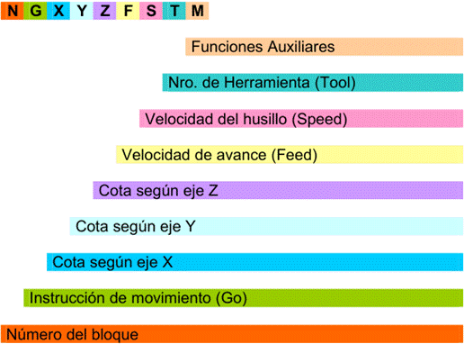
), limitada por la estación cuello de botella, se modela considerando el número de servidores ( ) y la carga de trabajo promedio ( ):INSPECCIÓN 100% AUTOMATIZADA Y METROLOGÍA DE PRECISIÓN
El enfoque moderno del control de calidad ha migrado del muestreo estadístico tradicional a la inspección 100% automatizada e integrada en el proceso. El uso de máquinas de medición por coordenadas (CMM) controladas por computadora y sistemas de visión artificial permite verificar la conformidad dimensional de cada pieza fabricada sin interrumpir el flujo de producción.
- Sistemas de Visión: Utilizan procesadores de imagen de alta velocidad para identificar partes, guiar robots y realizar inspecciones de acabado superficial en niveles microscópicos.
- Sensores Inteligentes: Estos dispositivos integran el sensor, el acondicionamiento de señal y un microprocesador en un solo paquete, permitiendo el autodiagnóstico y la compensación de errores en la fuente.
- Ingeniería Inversa: El uso de CMMs permite tomar una pieza física existente y construir un modelo computarizado de su geometría basándose en mediciones de superficie masivas.
Modelado Mediante Redes de Petri y Análisis Estocástico
Dada la naturaleza asíncrona y concurrente de los sistemas de manufactura modernos, las herramientas tradicionales de modelado (como las ecuaciones diferenciales) resultan insuficientes.
El estado del arte recurre a las Redes de Petri (PN) para especificar, modelar y controlar sistemas complejos, permitiendo detectar de manera formal problemas de interbloqueo (deadlocks) y conflictos de recursos.
· Análisis Cualitativo: Utiliza las Redes de Petri para demostrar si un sistema puede alcanzar estados deseados o si existen trayectorias que conduzcan a paros totales.
· Simulación Orientada a Objetos: Combina modelos físicos, fuentes de información y objetos de decisión para predecir el comportamiento del sistema ante variables estocásticas como fallas mecánicas imprevistas.
Para la evaluación de la eficiencia de estas redes de
producción, se analizan los tiempos de ciclo y la utilización de las
estaciones. La carga de trabajo para una estación  (
)
se calcula como:
(
)
se calcula como:
Donde es el tiempo de ciclo, la frecuencia de la operación y la fracción de la mezcla de partes.
1.7 Justificación de su utilización.
JUSTIFICACIÓN
La implementación de un Sistema de Manufactura Flexible (SMF o FMS, por sus siglas en inglés) representa una decisión estratégica de gran envergadura que trasciende el simple reemplazo de maquinaria obsoleta.
En el paradigma industrial contemporáneo, caracterizado por una competencia global intensificada y ciclos de vida de productos cada vez más breves, la viabilidad de un SMF se fundamenta en su capacidad para amalgamar la eficiencia de la producción en masa con la versatilidad de los talleres de trabajo (job shops). La justificación para transitar hacia estas arquitecturas automatizadas no reside únicamente en indicadores financieros tradicionales, sino en una visión holística que considera la agilidad operativa, la consistencia en la calidad y la reducción drástica de tiempos muertos como pilares de la competitividad a largo plazo.
De acuerdo con la literatura técnica, la adopción de un SMF es particularmente imperativa cuando las empresas enfrentan demandas volátiles que exigen una producción de volumen medio con una variedad de productos media a alta.
Racionalidad estratégica y adaptabilidad al mercado
Desde una perspectiva estratégica, el SMF se justifica como un "arma competitiva" que permite a las organizaciones responder casi instantáneamente a las fluctuaciones del mercado y a las preferencias individuales de los clientes.
En una era donde el "tiempo de llegada al mercado" (time-to-market) determina el éxito o fracaso de un producto, la capacidad de un sistema para asimilar cambios de diseño o introducir nuevas variantes sin paros prolongados para reequipamiento resulta invaluable.
Esta habilidad se traduce en una "economía de alcance" (economies of scope), permitiendo que la planta fabrique lotes de tamaño uno con una eficiencia de costo similar a la de las grandes series, mitigando así el riesgo de obsolescencia de inventarios.
Los beneficios estratégicos percibidos por los usuarios de sistemas flexibles pueden categorizarse de la siguiente manera:
· Respuesta dinámica a la demanda: Capacidad de alterar la mezcla de producción y las cantidades en tiempo real para satisfacer pedidos urgentes o cambios repentinos en las órdenes de los clientes.
· Mitigación del riesgo de inversión: Debido a que el equipo es reprogramable y de propósito general, la inversión no está ligada a un único diseño de producto. Si un producto fracasa en el mercado, el sistema puede reconfigurarse para fabricar una línea diferente.
· Mejora de la imagen corporativa: La implementación de tecnologías de vanguardia eleva la percepción de calidad y sofisticación técnica de la empresa ante sus clientes y competidores.
Justificación operativa: utilización y eficiencia del proceso
La operatividad de un SMF permite una utilización de la maquinaria sustancialmente superior a la observada en talleres convencionales.
Mientras que una máquina herramienta en un taller de lotes típico puede presentar niveles de utilización de entre el 40% y el 50%, un SMF correctamente gestionado suele alcanzar tasas superiores al 75% o incluso 90%. Esta eficiencia se logra a través de la operación desatendida durante turnos nocturnos o descansos ("fábricas de luces apagadas"), el cambio automático de herramientas y tarimas (pallets), y la gestión computarizada que minimiza el tiempo en que las máquinas permanecen sin carga de trabajo.
Para cuantificar el rendimiento operativo, se utilizan modelos deterministas que permiten predecir la tasa de producción máxima ( ), la cual está limitada por la estación que constituye el cuello de botella del sistema:
Donde:
- representa el número de servidores (máquinas) en la estación crítica.
- es la carga de trabajo promedio en dicha estación (minutos/pieza).
Esta relación matemática evidencia que la capacidad del sistema no depende solo de la velocidad individual de las máquinas, sino de la armonización de las cargas de trabajo a través de toda la celda flexible.
Impacto financiero y reducción de inventarios
La justificación económica de los SMF a menudo se centra en la reducción del capital inmovilizado en forma de trabajo en proceso (WIP, Work-in-Process). Al eliminar la producción por lotes rígidos y permitir que las piezas fluyan continuamente de una estación a otra, los tiempos de entrega de manufactura (MLT) se reducen drásticamente, lo que a su vez disminuye los niveles de inventario en planta.
La relación entre el inventario y el tiempo de entrega se puede modelar mediante la Ley de Little, fundamental en la teoría de colas aplicada a la manufactura:
Donde:
· es la tasa de procesamiento por hora de la planta.
· es el tiempo medio que una unidad permanece en el sistema.
Al reducir el mediante la eliminación de tiempos de espera y transporte ineficiente, el disminuye proporcionalmente, liberando flujo de caja y reduciendo los costos de almacenamiento y manejo.
|
Beneficio Económico |
Descripción Técnica |
|
Menos máquinas requeridas |
Debido a la alta utilización, se necesitan menos unidades físicas para igualar la capacidad de un taller convencional. |
|
Reducción de espacio físico |
El SMF ocupa generalmente entre un 25% y un 50% menos de superficie que un arreglo de máquinas independientes de capacidad equivalente. |
|
Costos de mano de obra directa |
Reducción significativa del personal operativo, aunque se requiere un incremento en personal técnico altamente calificado. |
|
Consistencia en la calidad |
La automatización reduce la variabilidad humana, minimizando los costos por desperdicio (scrap) y retrabajo. |
Modelado del retorno de inversión y recuperación de capital
Dada la alta intensidad de capital inicial de un SMF (que puede oscilar entre millones de dólares), las empresas suelen emplear análisis de periodo de recuperación (payback period) para comparar la inversión adicional requerida por un sistema flexible en contraposición con sistemas convencionales.
La justificación financiera de la inversión adicional ( ) se basa en los ahorros anuales proyectados, principalmente derivados de la reducción de costos de mano de obra y de inventario.
Una de las fórmulas de ingeniería económica para estimar el periodo de recuperación es:
Donde:
· y son los costos de capital del SMF y del sistema convencional, respectivamente.
· y representan el número de trabajadores requeridos en cada sistema.
· es el costo de mano de obra por hora.
·
 es
el número de turnos trabajados por año (típicamente de 2000 horas cada uno).
es
el número de turnos trabajados por año (típicamente de 2000 horas cada uno).
Es vital reconocer que el SMF a menudo supera las pruebas de rentabilidad cuando se consideran horizontes temporales de largo plazo y se incluyen beneficios intangibles, como la capacidad de absorber cambios de ingeniería sin necesidad de reinversiones masivas en herramental específico.
2. Tecnologías para la información integrada por computadora.
2.1 Conceptos básicos.
MANUFACTURA INTEGRADA POR COMPUTADORA
La Manufactura Integrada por Computadora (CIM, por sus siglas en inglés) representa un cambio paradigmático en la gestión industrial, evolucionando de la simple automatización de tareas aisladas denominadas "islas de automatización" hacia una infraestructura de información holística que amalgama todas las funciones de una empresa.
En términos técnicos, el CIM se define como el uso generalizado de sistemas computacionales para diseñar productos, planificar la producción, controlar las operaciones y realizar las diversas funciones de procesamiento de información necesarias en una firma manufacturera.
A diferencia de sistemas más limitados como el CAD/CAM, que se centran en la integración del diseño y la ingeniería de manufactura, el CIM abarca también las funciones de negocio relacionadas con la producción, desde la entrada del pedido por el cliente hasta el embarque del producto final.
Desde una perspectiva estratégica, el CIM no debe considerarse meramente como un producto físico o un software, sino como una estrategia empresarial que utiliza componentes físicos y una metodología conceptual para integrar dichos componentes.
Esta integración busca optimizar la respuesta ante los cambios en la demanda del mercado y mejorar la utilización de materiales, maquinaria y personal, permitiendo la fabricación de productos de alta calidad a un costo mínimo.
En este ecosistema digital, el éxito operativo depende de la integridad de una base de datos común, donde la salida de una actividad sirve de entrada para la siguiente, eliminando la duplicidad de tareas y reduciendo errores por interpretación manual.
Las Dimensiones y Funciones del Soporte a la Manufactura
Un sistema de producción se articula a través de dos componentes mayores: las instalaciones físicas (fábrica, equipos y distribución) y los sistemas de apoyo a la manufactura.
Estos últimos comprenden los procedimientos utilizados por la empresa para gestionar la producción y resolver los problemas técnicos y logísticos. En la arquitectura del CIM, estos sistemas de apoyo se dividen funcionalmente en cuatro áreas críticas:
- Funciones de Negocio: Representan el inicio y el fin de la secuencia de procesamiento de información. Incluyen el marketing, el pronóstico de ventas, la entrada de pedidos y la facturación al cliente.
- Diseño del Producto: Actividad donde se definen las especificaciones geométricas y materiales. En un entorno integrado, se apoya en el Diseño Asistido por Computadora (CAD) para crear modelos que servirán de base para las etapas posteriores.
- Planeación de la Manufactura: Convierte las especificaciones del diseño en planes de acción. Incluye la planeación de procesos (CAPP), la programación maestra y la planeación de requerimientos de materiales (MRP).
- Control de la Manufactura: Gestiona y controla las operaciones físicas en la fábrica, incluyendo el control de procesos, el monitoreo de equipos y el control de calidad.
Taxonomía de la información en el entorno CIM
La información es el recurso fundamental que impulsa al sistema integrado, siendo considerada por la alta gerencia como el "quinto factor de producción" junto al material, capital, maquinaria y mano de obra.
Para una gestión eficiente, la información en la planta se clasifica en tres categorías principales que rigen la operatividad:
|
Categoría de Datos |
Descripción y Ejemplos |
Aplicación en el Sistema |
|
Datos Técnicos |
Descripción del diseño, procesos y pruebas. Incluye geometría (CAD), programas de control numérico (NC) y tolerancias. |
Impulsa las herramientas y las actividades físicas en el taller. |
|
Datos Logísticos |
Controlan el flujo de materiales y productos. Incluye cantidades, calendarios de producción, rutas y niveles de inventario. |
Responde a las preguntas: ¿qué se debe hacer?, ¿cuándo? y ¿cuánto?. |
|
Datos Administrativos |
Información para gestionar la operación como negocio. Incluye costos de labor, materiales, nóminas y reportes de eficiencia. |
Utilizados por la gerencia para reportes de desempeño y contabilidad. |
Estas fuentes de datos no son independientes; por ejemplo, la planeación de procesos actúa como el "puente crítico" entre el diseño y la manufactura, traduciendo la información del modelo geométrico al lenguaje de producción.
Interdependencias organizacionales y fuentes de datos
La manufactura moderna es un proceso impulsado por datos que emanan de tres fuentes principales: el desarrollo (ingeniería), el cliente (marketing) y la propia manufactura.
La interdependencia entre estas áreas es tal que un cambio en una afecta inmediatamente a las otras.
Por ejemplo, el departamento de mercadotecnia identifica las necesidades del cliente y genera datos de demanda; el desarrollo traduce esto en datos de definición del producto (geometría y especificaciones); y la manufactura utiliza estos datos, junto con su propia información operativa, para ejecutar la producción.
Para articular estas interdependencias, el CIM requiere una arquitectura de red que permita:
· Acceso en tiempo real: Los gerentes y el personal técnico deben tener acceso instantáneo al estado de la planta, las tasas de producción y los problemas de calidad.
· Integración de la cadena de suministro: El sistema debe extenderse hacia los proveedores y clientes para proporcionar estimaciones realistas de entrega y actualizaciones de inventario.
· Disciplinas de datos: El éxito de la integración depende de la precisión y actualidad de la base de datos central; cualquier transacción no registrada erosiona la exactitud del modelo del sistema y puede invalidar los planes de producción.
AUTOMATIZACIÓN Y SISTEMAS DE PRODUCCIÓN
La Automatización es una filosofía en la Tecnología de la Ingeniería que integra la ingeniería mecánica, la electrónica y el control inteligente por computadora en el diseño y la manufactura de productos y procesos. La mecanización controla una máquina o un proceso mediante diversos dispositivos mecánicos, hidráulicos, neumáticos y eléctricos, cuyo auge se alcanzó en la década de 1940.
Un Sistema de Manufactura se define como una colección de equipo integrado y recursos humanos que realizan una o más operaciones de procesamiento y/o ensamble sobre un material de trabajo inicial, una pieza o un conjunto de piezas. El equipo integrado incluye máquinas de producción, sistemas de manejo de material, dispositivos de posicionamiento y sistemas computacionales. Los recursos humanos son esenciales para mantener el equipo en funcionamiento.
CONTROL NUMÉRICO
El Control Numérico (CN) es una forma de automatización programable en la que un programa, que contiene datos alfanuméricos codificados, controla las acciones de una parte del equipo. Estos datos representan posiciones relativas entre una cabeza de trabajo y una pieza.
El principio operativo del CN es controlar el movimiento de la cabeza de trabajo en relación con la pieza de trabajo y la secuencia en la cual se realizan los movimientos. Los componentes bás7icos de un sistema de CN son:
1. Programa de piezas: Es el conjunto detallado de comandos que el equipo de procesamiento debe seguir. Cada comando especifica una posición o movimiento que la herramienta de trabajo realizará en relación con la pieza procesada. En aplicaciones de máquinas herramienta, esto incluye la velocidad de rotación del husillo, la dirección del eje, la velocidad de avance, las instrucciones de cambio de herramientas y otros comandos operativos. Tradicionalmente, se codificaban en cinta de papel perforada, pero hoy se usan cintas magnéticas y transferencia electrónica.
2. Unidad de Control de Máquina (MCU): En la tecnología moderna, la MCU es una microcomputadora que almacena y ejecuta el programa, convirtiendo cada comando en acciones del equipo de procesamiento. Incluye hardware (microcomputadora, interfaz con equipo de procesamiento, elementos de control de retroalimentación, lector de cinta opcional) y software (control del sistema, algoritmos de cálculo, traducción del programa de piezas de CN a un formato utilizable por la MCU). También permite editar el programa. Debido a que la MCU es una computadora, se utiliza el término Control Numérico por Computadora (CNC) para distinguirlo de tecnologías anteriores basadas en dispositivos electrónicos incorporados.
3. Equipo de Procesamiento: Realiza la secuencia de pasos para transformar la pieza de trabajo, operando bajo el control de la MCU según las instrucciones del programa de piezas.
Los beneficios del Control Numérico (CN), en comparación con los métodos manuales alternativos, incluyen:
· Facilita la programación de piezas.
· Permite la recuperación rápida de diseños.
· Reduce la duplicación de diseños.
· Promueve la estandarización del diseño.
· Mejora la estimación y cuantificación de costos.
· Permite la planificación de procesos asistida por computadora (CAPP).
El desarrollo del lenguaje APT (Automatically Programmed Tools), un lenguaje de programación de piezas fue patrocinado por la Fuerza Aérea de Estados Unidos en el MIT, y su implementación se realizó en 1958 para controlar máquinas CN.
CONTROL NUMÉRICO COMPUTARIZADO
Factor humano y las maquinas CNC
En esta sección se era el tipo de concomiendo y/o habilidades que debe poseer un operado CNC. El operación de CNC deberán tener conocimiento de geometría, álgebra y trigonometría, también deberá conoce sobre las selección y diseño de herramientas de corte y dominar las técnicas de sujeción.
Ejes y Movimientos
El torno y centro de maquinados de control numérico tienen similitudes de su operación y en los códigos que se manejan dentro del programa de Control Numérico que se les suministre.
Las instrucciones del programa de control numérico que mueven la herramienta tienen una relación directa con el tipo de movimiento y el eje o ejes en los cuales se lleva a cabo.
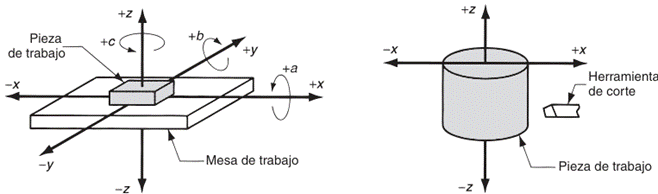
ROBÓTICA INDUSTRIAL
Un robot industrial se compone de un manipulador mecánico y un controlador. El manipulador tiene uniones que posicionan y orientan el extremo respecto a su base. La unidad controladora (hardware y software electrónicos) opera las uniones de forma coordinada para ejecutar un ciclo de trabajo programado.
Los sistemas de control en robótica se clasifican en:
· Reproducción punto a punto (PTP): Se almacenan las posiciones finales, pero no se controla la trayectoria recorrida entre ellas.
· Reproducción con control de trayectoria continua (CP): Se almacenan trayectorias de movimiento o el controlador las calcula. Es adecuado para movimientos continuos irregulares, como la pintura por aspersión.
· Control inteligente: Los robots pueden responder a sensores sofisticados (como visión artificial), tomar decisiones ante errores, realizar cálculos y comunicarse con humanos.
MECATRÓNICA
La mecatrónica es una filosofía en la Tecnología de la Ingeniería que implica la integración coordinada y el desarrollo concurrente de la ingeniería mecánica, la electrónica y el control inteligente por computadora. Este enfoque multidisciplinario se aplica en el diseño y la manufactura de productos y procesos.
Como resultado, los productos mecatrónicos suelen reemplazar funciones mecánicas con electrónicas, lo que proporciona mayor flexibilidad, facilidad de rediseño y reprogramación, y la capacidad de recopilar y reportar datos de manera automatizada.
La mecatrónica reúne áreas tecnológicas como sensores y sistemas de medición, sistemas de microprocesadores, sistemas de actuación, así como el análisis del comportamiento de sistemas y sistemas de control.
Los sistemas integrados se utilizan cuando los microprocesadores se construyen dentro de los sistemas. En mecatrónica, estos sistemas generalmente no están diseñados para ser programados por el usuario final, sino que vienen con un programa predefinido por el fabricante.
Un microprocesador puede verse como una colección de compuertas lógicas y elementos de memoria cuyas funciones lógicas se implementan mediante software.
CONTROLADORES LÓGICOS PROGRAMABLES (PLC)
Un Controlador Lógico Programable (PLC) es un dispositivo electrónico digital que utiliza una memoria programable para almacenar instrucciones y para llevar a cabo funciones lógicas, de secuencia, de sincronización, de conteo y aritméticas para controlar máquinas y procesos.
Está diseñado específicamente para ser programado con facilidad. Los PLC son llamados "lógicos" porque su programación se centra en la ejecución de operaciones lógicas y de conmutación.
Los PLCs fueron diseñados originalmente para sustituir el cableado físico de relés en sistemas de control lógico y de temporización, ofreciendo flexibilidad y facilidad de reprogramación.
Ventajas de los PLC
· Permiten modificar un sistema de control sin tener que volver a alambrar las conexiones de los dispositivos de entrada y salida, solo digitando instrucciones en un teclado.
· Son más rápidos que los sistemas basados en relevadores.
· Ofrecen un sistema flexible para controlar sistemas muy diversos en naturaleza y complejidad.
· Son fáciles de usar y programar para implementar funciones lógicas de control.
La estructura básica de un PLC incluye:
· Una Unidad de Procesamiento Central (CPU).
· Una memoria (ROM para sistema operativo y datos corregidos, RAM para el programa del usuario y búfer temporal de E/S).
· Unidades de entrada/salida.
· Un temporizador (con una frecuencia típica de 1 a 8 MHz para sincronización).
· Un sistema de buses que transporta información y datos entre la CPU, la memoria y las unidades de E/S.
El ciclo de escaneo del PLC implica:
1. Escanear todas las entradas y copiarlas en la RAM.
2. Buscar, traer, decodificar y ejecutar todas las instrucciones del programa (lógicas).
3. Guardar las señales de salida producidas en la sección de E/S de la RAM.
4. Al final del ciclo, enviar las salidas de la RAM a los canales de salida, que conservan su estado hasta la siguiente actualización.
2.2 Lenguajes de programación.
LENGUAJES DE PROGRAMACIÓN EN EL ENTORNO INDUSTRIAL INTEGRADO
La comunicación entre el intelecto humano y la arquitectura de hardware en una planta de manufactura se articula a través de una jerarquía de lenguajes de programación, los cuales actúan como el vehículo para codificar la lógica de control, la secuencia de operaciones y la gestión de datos técnicos.
En el contexto de la manufactura integrada por computadora (CIM), estos lenguajes no solo deben gestionar el movimiento físico de los actuadores, sino también garantizar la integridad del flujo de información digital entre las diversas unidades funcionales de la empresa.
La evolución de estos lenguajes ha permitido transitar de sistemas de automatización rígidos hacia entornos de fabricación altamente flexibles y ágiles, donde el rediseño y la reprogramación son procesos eficientes que responden dinámicamente a las fluctuaciones de la demanda del mercado.
Así, el software se constituye como el elemento "invisible" pero vital que impulsa la operatividad del sistema, diferenciándose claramente del hardware físico que compone la maquinaria de producción.
Jerarquía de Abstracción: Lenguajes de Bajo, Medio y Alto Nivel
Dentro de la taxonomía de la programación industrial, los lenguajes se clasifican según su grado de abstracción con respecto a los circuitos lógicos del procesador.
En la base de esta estructura se encuentra el lenguaje de máquina o código objeto, representado íntegramente por secuencias binarias de ceros y unos que corresponden directamente a los estados de conmutación (encendido/apagado) de la unidad central de procesamiento (CPU).
Cada instrucción en este nivel consta generalmente de un código de operación (op-code) y un operando que designa una dirección de memoria o un dispositivo de entrada/salida.
Aunque es el único lenguaje que el procesador interpreta de forma nativa, su programación manual resulta extraordinariamente laboriosa, tediosa y propensa a errores catastróficos para el operador humano.
Situado en un nivel de abstracción inmediatamente superior, el lenguaje ensamblador sustituye las secuencias binarias por códigos mnemónicos (como ADD, MOV o LDAA) que facilitan la memorización y la identificación de las operaciones por parte del programador.
Este lenguaje sigue estando orientado a la arquitectura específica de la máquina, lo que permite un control muy eficiente de los recursos del hardware y tiempos de ejecución optimizados, aunque carece de portabilidad entre diferentes familias de procesadores.
La conversión del código mnemónico a código de máquina se realiza mediante un programa denominado ensamblador, el cual reemplaza cada símbolo por su equivalente binario.
Finalmente, los lenguajes de alto nivel (como FORTRAN, PASCAL o C) están orientados a la resolución de problemas específicos y utilizan estructuras sintácticas similares al lenguaje humano junto con notaciones matemáticas tradicionales.
Estos lenguajes son independientes de la máquina, lo que permite que un programa escrito para una arquitectura pueda ejecutarse en otra mediante el uso de un compilador o un intérprete. En la manufactura, el lenguaje C ha ganado una importancia capital debido a su capacidad para combinar funciones de alto nivel con la potencia y flexibilidad de un lenguaje estructurado, permitiendo operaciones rápidas con menor cantidad de código.
PROGRAMACIÓN DE PIEZAS POR CNC
En las aplicaciones de máquinas herramienta, la tarea de programación se denomina "programación de piezas por control numérico". Las técnicas más importantes son:
Programación de Piezas Asistida por Computadora
Implica el uso de un lenguaje de programación de alto nivel para trabajos más complejos.
Lenguaje APT (Automatically Programmed Tools)
El primer lenguaje fue el de Herramientas Programadas Automáticamente (APT), desarrollado en el MIT alrededor de 1960.
APT es un lenguaje de programación de piezas en el que un usuario describe las instrucciones de mecanizado en enunciados simples, similares al idioma inglés, que son codificados para que el sistema de CN pueda leerlos. En APT, la tarea de programación de piezas se divide en dos pasos:
Definición de una configuración geométrica de pieza: El programador define la geometría de la pieza usando elementos básicos como puntos, líneas, planos, círculos y cilindros a través de enunciados de geometría APT. Por ejemplo:
1. P1 = POINT/25.0, 150.0
2. L1 = LINE/P1, P2
Se utilizan enunciados APT adicionales para definir parámetros de operación como velocidades de avance, velocidades de husillo, tamaños de herramientas y tolerancias.
Especificación de la trayectoria de la herramienta y la secuencia de operación: Esto incluye comandos para definir la trayectoria de movimiento de la herramienta y para evitar ambigüedades, como GOLFT (ir a la izquierda), GORGT (ir a la derecha), GOFWD (ir hacia adelante), GOBACK (ir hacia atrás), GOUP (ir hacia arriba) y GODOWN (ir hacia abajo).
El lenguaje APT también ofrece características como macros, similares a las subrutinas de FORTRAN. Los ejes de movimiento principalmente se designan con las letras X, Y y Z. Los códigos G00 y G01 se asocian a uno o varios valores de coordenadas X, Y o Z según sea el dato. Las instrucción G01 requiere la especificación del valor de avance, el cual se proporciona en el proceso de torneado en unidades de distancia por vuelta, ya sea en.
mm/rev pul/rev
Para el proceso de fresado, el avance se proporciona normalmente en unidades de distancia por tiempo, ya sea en mm/min o pul/min.
Programación Manual de Piezas - Programación para CN
Es el método más fácil y económico para trabajos de maquinado sencillos punto por punto, como operaciones de taladrado. Utiliza datos numéricos básicos y códigos alfanuméricos especiales.
Un bloque de instrucciones se compone de una serie de "palabras" identificadas por un prefijo. La secuencia usual de palabras en un bloque es:
1. N-word (número de secuencia)
2. G-word (palabra preparatoria)
3. X, Y, Z coordenadas (ejes lineales)
4. F-word (velocidad de avance)
5. S-word (velocidad del husillo)
6. T-word (selección de herramienta, si aplica)
7. M-word (comando misceláneo) Un ejemplo de comando para taladrado sería: n010x70.0 y85.5 f175 s500.
El programador describe las instrucciones de maquinado en enunciados parecidos al inglés, que la computadora procesa para generar comandos de bajo nivel.
· Programación de Piezas Asistida por Sistemas CAD/CAM: Avanza un paso más al usar un sistema gráfico computarizado CAD/CAM que interactúa con el programador, proporcionando verificación visual inmediata de los comandos. Permite recuperar la definición geométrica de la pieza de la base de datos de diseño y utiliza rutinas de software (macros) para automatizar la generación de trayectorias de herramienta.
· Ingreso Manual de Datos (MDI): Un operador de máquina introduce el programa de piezas directamente en la fábrica, usando una pantalla CRT en los controles de la máquina. Este método es adecuado para talleres especializados con capacitación mínima.
ESTRUCTURA DE UN BLOQUE DE PROGRAMACION CNC
G-CODE
MOVIMIENTO G00
Se dice que un movimiento libre de la herramienta sin que ésta tenga contacto alguno con la pieza es un movimiento en vacío, y si se desea que éste se ejecute a la máxima velocidad permisible por la máquina, entonces se codifica con la instrucción G00, conociéndose también como interpolación lineal en vacío, ya que los movimientos con este código siempre se realizan en línea recta.
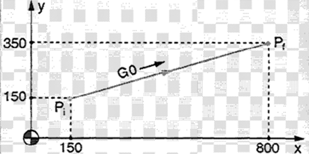
MOVIMIENTO G01
Por otra parte, cuando la herramienta está en contacto con la pieza, se prefiere un movimiento con una velocidad de avance especifica. Si el movimiento se realiza en línea recta, se la instrucción G01, conociéndose como codifica con interpolación lineal con corte.
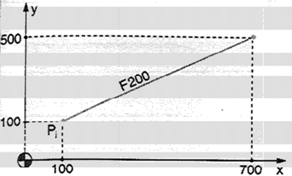
INTERPOLACIÓN CIRCULAR
Pero si el movimiento es circular, entonces se codifica con G02 (a favor de las manecillas del reloj) o con G03 (en contra de las manecillas del reloj) y se le llama interpolación circular.
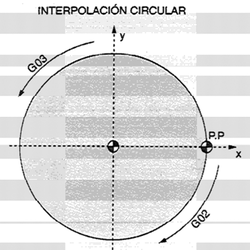
Es el movimiento similar al movimiento lineal, pero se pueden realizar movimiento Circulares a una cierta velocidad de avance, utilizándose como ya se dijo, los códigos G02 y G03.
Cero Pieza
En una maquina CNC, el cero pieza es el punto de referencia en la pieza de trabajo desde el cual se toman todas las medidas y coordenadas durante el mecanizado. También se conoce como Cero Pieza o punto de origen de la pieza (WCS – Work Coordinate System).
Es especificado por el operario o programado antes del mecanizado.
Difiere del cero máquina, ya que, el cero maquina es un pinto fijo determinado por el fabricante de la máquina, mientras que el cero pieza es un punto variable definido por el usuario.
Sistema de Referencia en un Programa CNC
El sistema de referencia en un programa CNC es el conjunto de puntos y ejes utilizados para definir la posición y los movimientos de la herramienta dentro del espacio de trabajo de la máquina.
Este sistema establece un marco de referencia a partir del cual se especifican las coordenado de un programa de control numérico.
COORDENADAS ABSOLUTAS
G90
Las coordenadas absolutas en un programa para CNC (Control Numérico Computarizado) se refiere a un sistema de referencia fijo, en el cual todas las posiciones de las herramientas se especifican en relación con un punto de origen predefinido en la máquina.
COORDENADAS RELATIVAS
G91
En un programa para CNC, las coordenadas relativas (también llamadas Incrementales) son aquellas que se establecen con respecto a la posición actual de la herramienta en lugar de un pinto de origen fijo).
PROGRAMACIÓN DE ROBOTS
Lenguajes de Alto Nivel y Robótica
Lenguajes de Robótica: Se utilizan para instruir al robot sobre cómo realizar acciones como mover un manipulador a través de una trayectoria en el espacio, controlar el actuador final y recibir señales de sensores.
Ejemplos incluyen WAVE, VAL, AML, MCL, TL-10, IRL, PLAW, y SIGLA39. VAL y LM permiten la programación directa.
Los robots modernos se programan mediante dos métodos básicos:
Programación de Ejemplo (Lead-through Programming): El programador mueve el manipulador a través de la secuencia de posiciones del ciclo de trabajo, y el controlador las registra.
· Con energía: Se usa una caja de control (enchufe de enseñanza) para guiar el manipulador. Común para robots de reproducción punto a punto.
· Manual: El programador mueve físicamente la muñeca del manipulador. Común para robots de trayectoria continua, como en pintura por aspersión.
Lenguajes de Programación de Computadoras: Permiten integrar funciones que no implican movimiento, como cálculos, procesamiento de datos, lógica de decisiones, interacción con equipo externo y sensores.
Lenguajes como FORTRAN, PASCAL o C se utilizan a menudo para controlar sistemas de manejo de materiales y almacenamiento/recuperación.
ADA es un lenguaje que, aunque desarrollado para aplicaciones militares, ha encontrado amplio uso en aplicaciones científicas e industriales como el control de procesos.
Lenguajes especializados para robótica y control numérico
El control numérico (CN) y la robótica industrial demandan lenguajes que puedan gestionar coordenadas espaciales, orientaciones y trayectorias complejas de forma síncrona.
El estándar universal para la programación de máquinas herramienta es el sistema APT (Automatically Programmed Tools), el cual utiliza un vocabulario de más de 300 palabras similares al inglés para definir geometrías, tolerancias y movimientos de las herramientas.
Un programa APT típicamente se divide en la definición geométrica de la pieza y la especificación de la secuencia de trayectorias del cortador.
En robótica, han surgido lenguajes específicos como VAL (Versatile Assembly Language), AML y KAREL. Estos lenguajes permiten programar tanto movimientos explícitos como tareas implícitas basadas en la entrada de sensores de alta fidelidad, como sistemas de visión o sensores de fuerza.
Por ejemplo, en el lenguaje VAL II, se pueden definir correcciones en tiempo real en respuesta a sensores externos mediante comandos de alteración dinámica.
La ejecución de una instrucción en un programa embebido consume una cantidad finita de ciclos de reloj, lo que puede modelarse mediante relaciones lineales para determinar el tiempo de retardo generado. Un ejemplo de esta relación funcional para un lazo de retardo en lenguaje ensamblador es:
Donde:
·
 representa
el número total de ciclos de reloj consumidos.
representa
el número total de ciclos de reloj consumidos.
· es el número de iteraciones o lazos que el programa ejecuta antes de que la condición de salida sea verdadera.
· Los valores constantes corresponden a las instrucciones de carga inicial y las rutinas de retorno de la subrutina.
Programación de Controladores Lógicos Programables (PLC)
La norma IEC-61131-3 estandariza cuatro lenguajes de programación para PLC, siendo los más utilizados:
· Lenguaje de Contactos (Ladder Logic): Emula la estructura de los esquemas eléctricos, representando una red de contactos y bobinas. Hay dos barras de potencial con circulación de corriente de izquierda a derecha, con una zona de prueba (condiciones para la acción) y una zona de acción (resultado). Cada escalón de un programa en escalera representa una línea del programa.
· Lenguaje Lista de Instrucciones: Consiste en una serie de instrucciones ejecutadas secuencialmente, similar al lenguaje ensamblador. Se estructura como el lenguaje de contactos, con códigos de prueba ( AND, OR) y códigos de acción (ST, STN, R, JMP).
Programación de Microprocesadores y Microcontroladores
Software: Se refiere a todas las instrucciones que indican a un microprocesador o microcontrolador qué hacer.
Código Máquina
Los microprocesadores operan en código binario (ceros y unos). Escribir programas directamente en este código es tedioso y propenso a errores.
Lenguaje Ensamblador
El lenguaje ensamblador es un código taquigráfico que utiliza términos sencillos e identificables (mnemónicos) en lugar de código binario para representar las instrucciones de un microprocesador.
Los mnemónicos son códigos "auxiliares para la memorización" que describen las operaciones que realiza una instrucción, facilitando la comprensión y reduciendo errores en comparación con el código de máquina binario.
Un programa en lenguaje ensamblador es una serie de instrucciones para un ensamblador que produce el programa en código de máquina. Cada instrucción se presenta en una línea y puede contener de uno a cuatro campos:
· Etiqueta: Nombre dado a una entrada en la memoria. Consta de letras, números y otros caracteres, y debe ser única.
· Código de Operación (OP-code): Especifica cómo manipular los datos, indicado por su mnemónico (por ejemplo, LDA A para cargar el acumulador A). Este campo nunca puede estar vacío. También puede contener directivas para el ensamblador (seudo operaciones) que no se traducen a código de máquina, como ORG (definir dirección de inicio del programa), EQU, SET, DEF (definir símbolos), RMB, RES (reservar memoria).
· Modos de Direccionamiento: Describen cómo se especifica la ubicación de los datos. Incluyen: inmediato (el dato es parte de la instrucción), directo (la instrucción da la dirección completa del dato), indirecto (la instrucción da una dirección donde se encuentra la dirección del dato), registro (el dato está en un registro interno), indexado (la dirección se calcula sumando un offset al contenido de un registro de índices), e inherente o implicado (la instrucción implica la dirección).
· Operando: Contiene la dirección de los datos que se van a manipular durante la operación especificada en el código de operación. También se conoce como campo de direcciones. Los datos pueden ser hexadecimales, decimales, octales o binarios.
· Comentario: Opcional, permite al programador incluir explicaciones para mejorar la legibilidad del programa. Es ignorado por el ensamblador durante la compilación.
· Subrutinas: Bloques de código reutilizables. Se invocan con instrucciones como JSR (Jump to Subroutine) o CALL, y se retorna con RTS (Return from Subroutine) o RET. La pila (stack) se utiliza para almacenar temporalmente los valores del contador de programa y otros registros para asegurar el retorno correcto.
· Tablas de Consulta: Son útiles para buscar valores en lugar de realizar cálculos complejos, especialmente para relaciones no lineales.
Modos de Direccionamiento para especificar la ubicación de los datos:
Inmediato: El dato que sigue al mnemónico es el valor que se va a operar. Se usa para cargar un valor predeterminado en un registro o localidad de memoria.
Ejemplo (Motorola): LDA B #$25 (Carga el número hexadecimal 25 en el acumulador B).
Directo, Absoluto, Extendido o de Página Cero: El byte de datos que sigue al código de operación da directamente una dirección que define la localidad de los datos a usar.
Ejemplo (Motorola): LDAA $25 (Carga en el acumulador el contenido de la localidad de memoria 0025).
Implicado o Inherente: La dirección está implícita en la instrucción.
Ejemplo (Motorola/Intel): CLR A (Limpia el acumulador A).
Registro: El operando se especifica como el contenido de uno de los registros internos.
Ejemplo (Intel): ADD R7,A (Suma el contenido del acumulador al registro R7).
Indirecto: Los datos se encuentran en una localidad de memoria cuya dirección está dada por la instrucción.
Ejemplo (PIC): movf INDF,w (Carga el registro de trabajo w usando el contenido de FSR como apuntador a la localidad del dato).
Indexado: La dirección de los datos se mantiene en un registro de índices, y se le suma un offset para determinar la dirección final del operando.
Ejemplo (Motorola): LDA A $FF,X (Carga el acumulador A con los datos de la dirección dada por la suma del contenido del registro de índices y FF).
Relativo: Se usa con instrucciones de ramificación. Un byte llamado "dirección relativa" indica el desplazamiento en direcciones que se sumará al contador de programa si la ramificación se produce.
Ejemplo (Motorola): BEQ $04 (Si el resultado es cero, la siguiente dirección es la actual + 4 bytes).
Lenguaje C
El lenguaje C es un lenguaje de programación de alto nivel utilizado a menudo para programar microprocesadores, ofreciendo ventajas de facilidad de manejo y portabilidad del programa entre diferentes microprocesadores, ya que solo requiere el compilador adecuado para traducir el código C a código máquina. El C está estandarizado por el ANSI (American National Standards Institute).
Características principales de los programas en C:
· Palabras clave (keywords): Palabras reservadas con significado específico (ej., int para enteros, if para control de flujo). Deben escribirse en minúsculas.
· Instrucciones: Elementos del programa que terminan con punto y coma. Se pueden agrupar en bloques entre llaves {}.
· Funciones: Bloques autónomos de código con un nombre que realizan un conjunto de acciones (similares a subrutinas). Se invocan por su nombre seguido de paréntesis ().
· Retorno: Una función puede devolver un valor. El tipo de retorno se especifica antes del nombre de la función (ej., int main()), o void si no devuelve nada. La palabra clave return finaliza la función.
· Funciones de bibliotecas estándar: C cuenta con bibliotecas de funciones predefinidas (ej., math.h para matemáticas, stdio.h para entrada/salida) que se invocan por su nombre y se especifican en la cabecera del programa.
· Preprocesado: Programas que se ejecutan antes de la compilación, identificados por # al principio de la línea (ej., #include <stdio.h>).
· Comentarios: Se usan /* y */ para incluir explicaciones, ignoradas por el compilador.
· Variables: Localidades de memoria con un nombre que pueden guardar valores. Se especifican con palabras clave como char (caracteres), int (enteros con signo), float (números de punto flotante) o double (doble precisión).
· Operadores aritméticos: +, -, *, /, % (módulo), ++ (incremento), -- (decremento).
Desarrollo de Programas en C:
1. Creación del código fuente: Escribir la secuencia de instrucciones en lenguaje C.
2. Compilación del código fuente: Traducción a código de máquina. El compilador detecta errores y ejecuta los comandos del preprocesado.
3. Vinculación para crear un archivo ejecutable: El compilador enlaza el código generado con las funciones de biblioteca para obtener un único archivo ejecutable.
4. Archivos de encabezado: Se usan al principio del programa para definir funciones, registros y puertos de microcontroladores, facilitando la portabilidad.
ESTÁNDARES INTERNACIONALES DE CONTROL LÓGICO (IEC 61131-3)
La necesidad de estandarizar la programación de los controladores lógicos programables (PLC) llevó a la Comisión Electrotécnica Internacional a publicar la norma IEC 61131-3.
Este estándar define cinco lenguajes fundamentales que permiten a ingenieros y técnicos configurar la lógica de control de manera intuitiva y robusta.
La norma garantiza que estos lenguajes puedan interactuar entre sí, permitiendo niveles de sofisticación que abarcan desde el control discreto hasta algoritmos de control continuo de alta complejidad.
|
Lenguaje |
Abreviatura |
Tipo |
Aplicaciones Sugeridas |
|
Diagrama de Escalera |
LD |
Gráfico |
Control discreto y lógica de relevadores,. |
|
Diagrama de Bloques Funcionales |
FBD |
Gráfico |
Control continuo y algoritmos matemáticos. |
|
Gráfico de Funciones Secuenciales |
SFC |
Gráfico |
Control de secuencias y procesos por etapas. |
|
Lista de Instrucciones |
IL |
Textual |
Control discreto de bajo nivel con mnemónicos. |
|
Texto Estructurado |
ST |
Textual |
Lógica compleja, computación y manejo de datos. |
El Diagrama de Escalera (LD) es el lenguaje más extendido, diseñado para mimetizar los esquemas de circuitos eléctricos de relevadores.
Utiliza símbolos gráficos de contactos (condiciones de entrada) y bobinas (resultados de salida) organizados en rungos (escalones).
Por otro lado, el Texto Estructurado (ST) ofrece una sintaxis similar a lenguajes como Pascal o C, permitiendo el uso de operadores lógicos, aritméticos y de control de flujo (como IF-THEN-ELSE o WHILE-DO), lo que facilita enormemente el procesamiento de señales que no son de naturaleza puramente binaria.
LÓGICA SIMBÓLICA E INTELIGENCIA ARTIFICIAL EN MANUFACTURA
La vanguardia en la programación industrial integra la Inteligencia Artificial (IA) mediante lenguajes simbólicos como LISP (LISt Processing) y PROLOG (PROgramming in LOGic).
A diferencia de los lenguajes procedimentales que especifican paso a paso cómo realizar una tarea, estos lenguajes se centran en definir qué tarea debe realizarse mediante declaraciones de hechos y reglas de inferencia.
Estos sistemas expertos son fundamentales en el diagnóstico de fallas, la planeación de procesos automatizada (CAPP) y la programación dinámica de la producción en entornos altamente concurrentes.
La lógica de estos sistemas a menudo se expresa mediante ecuaciones booleanas para determinar el estado de una salida en función de múltiples condiciones de entrada:
Esta expresión denota que la salida será verdadera si cualquiera de las condiciones o es verdadera (operación OR), y simultáneamente la condición también es verdadera (operación AND).
Este determinismo lógico es el pilar sobre el cual se construye la automatización programable contemporánea, permitiendo que las máquinas "razonen" ante eventos estocásticos en el piso de taller.
2.3 Generación y transferencia de programas.
GENERACIÓN DE PROGRAMAS
La transición entre el diseño conceptual de un componente y su materialización física en el piso de taller constituye uno de los procesos más críticos dentro de la Manufactura Integrada por Computadora (CIM).
Esta fase, denominada generación de programas, implica la decodificación de especificaciones geométricas y tecnológicas para transformarlas en un flujo binario o alfanumérico ejecutable por controladores lógicos y unidades de control de máquina (MCU).
Históricamente, este proceso ha evolucionado desde la codificación manual exhaustiva hasta la síntesis automática basada en modelos sólidos tridimensionales, donde la transferencia de datos ha pasado de soportes físicos frágiles, como la cinta de papel, a redes de datos distribuidas bajo protocolos de arquitectura abierta.
La integridad de esta transferencia es vital, pues cualquier discrepancia entre el modelo de diseño y la instrucción de máquina compromete la precisión dimensional y la repetibilidad del sistema, pilares fundamentales de la ingeniería de precisión.
Las técnicas más importantes para la programación de piezas son:
1. Programación manual de piezas: Es el método más fácil y económico para trabajos de maquinado sencillos punto por punto (como el taladrado). Utiliza datos numéricos básicos y códigos alfanuméricos especiales.
2. Programación de piezas asistida por computadora: Implica el uso de un lenguaje de programación de alto nivel (como APT) diseñado para trabajos más complejos que la programación manual.
3. Programación de piezas asistida por sistemas CAD/CAM: Utiliza un sistema gráfico computarizado para interactuar con el programador, proporcionando una verificación visual inmediata de la geometría y la trayectoria de la herramienta, permitiendo corregir errores de inmediato.
4. Ingreso Manual de Datos (MDI): Un operador de máquina ingresa el programa en la fábrica a través de una pantalla CRT en los controles de la máquina, utilizando un procedimiento controlado por menús que requiere una capacitación mínima.
Programación Manual de Piezas
Para trabajos de mecanizado sencillos, como operaciones de taladrado, la programación manual de piezas es a menudo el método más fácil y económico.
Utiliza datos numéricos básicos y códigos alfanuméricos especiales para definir los pasos del proceso.
Un ejemplo de comando para una operación de taladrado es:
N010 X70.0 Y85.5 F175 S500
· N010: Número de secuencia del enunciado.
· X70.0 Y85.5: Posiciones de coordenadas (x = 70.0 mm, y = 85.5 mm).
· F175: Velocidad de avance (175 mm/min).
· S500: Velocidad de giro (500 rev/min).
El programa de piezas CN completo consiste en una secuencia de enunciados similares.
Metodologías de generación de programas de piezas
La planificación y documentación de la secuencia de pasos de procesamiento para una máquina de Control Numérico (CN) o un robot industrial se puede abordar mediante diversas metodologías, cuya selección depende de la complejidad de la geometría y el volumen de producción.
En términos generales, estas técnicas se categorizan según el grado de asistencia computacional y la ubicación donde se genera el código:
· Programación manual: El programador prepara el código de bajo nivel (lenguaje máquina o código G) basándose directamente en el dibujo de ingeniería. Este método utiliza el sistema decimal codificado en binario (BCD) para representar coordenadas y funciones auxiliares. Es un proceso propenso a errores humanos y extremadamente laborioso para geometrías complejas.
· Programación asistida por computadora (APT): Se emplean lenguajes de alto nivel como el Automatically Programmed Tool (APT), que permite al programador definir la geometría y las trayectorias mediante enunciados similares al inglés. El sistema procesa estos enunciados para generar datos de ubicación del cortador (CLDATA).
· Programación basada en CAD/CAM: El programador accede directamente a la base de datos de diseño. El software extrae la configuración geométrica del modelo sólido y genera automáticamente la trayectoria de la herramienta, permitiendo simulaciones visuales antes de la ejecución física.
· Ingreso manual de datos (MDI): También conocido como programación conversacional, permite que el operador de la máquina introduzca las instrucciones directamente en la MCU mediante menús interactivos en el taller.
|
Método de Programación |
Nivel de Abstracción |
Aplicación Ideal |
Ventajas Principales |
|
Manual |
Bajo (Código G/M) |
Operaciones sencillas punto a punto |
Bajo costo de software |
|
APT |
Alto (Simbólico) |
Geometrías 3D complejas |
Independencia de la máquina |
|
CAD/CAM |
Integrado (Gráfico) |
Manufactura compleja y moldes |
Simulación y reducción de errores |
|
MDI |
Medio (Interactivo) |
Talleres pequeños, lotes únicos |
Programación en sitio sin expertos |
ALMACENAMIENTO DE PROGRAMAS
Originalmente, el medio común para codificar el programa era la cinta de papel perforada de 1 pulgada de ancho. Hoy en día, la cinta perforada ha sido reemplazada por cintas magnéticas, disquetes y transferencia electrónica de programas desde una computadora.
La vinculación del control numérico directo (DNC) con el control numérico por computadora (CNC) forma el concepto de Control Numérico Distribuido, que proporciona una ubicación de almacenamiento central para todos los programas y la capacidad de descargarlos (download) a las microcomputadoras que controlan máquinas individuales.
CN
· Tradicionalmente, se usaban cintas de papel perforado.
· Actualmente, se usan cintas magnéticas y transferencia electrónica desde una computadora central.
· Dispositivos de memoria secundaria de alta capacidad (discos duros y dispositivos de estado sólido) se instalan permanentemente en la unidad de control CNC para almacenar programas, macros y otro software.
Microprocesadores y Microcontroladores
· ROM (Read-Only Memory): Para programas fijos o "firmware" que están disponibles al encender el sistema.
· PROM (Programmable ROM): ROM que el usuario puede programar una vez.
· EPROM (Erasable Programmable ROM): Puede ser programada y modificada, borrándose con luz ultravioleta.
· EEPROM (Electrically Erasable Programmable ROM): Permite programar y borrar electrónicamente.
· RAM (Random Access Memory): Para software cargado desde periféricos, que se pierde al apagar el sistema.
TRANSFERENCIA DE PROGRAMAS
La transferencia de programas y datos es vital para la operación integrada de los sistemas.
Interfaces de Entrada/Salida (I/O): Proporcionan la comunicación entre los diversos componentes del sistema CNC, otros sistemas informáticos y el operador. Transmiten y reciben datos y señales a/desde dispositivos externos.
El panel de control del operador es la interfaz básica para estas comunicaciones.
Buses: Son vías paralelas por donde se desplazan las señales digitales (datos, direcciones, control) entre las diferentes secciones de un microprocesador.
Los buses externos interconectan microprocesadores, microcontroladores, computadoras y PLCs, y estos a su vez se conectan con equipos periféricos.
Comunicación Serial y Paralela
Serial: Los datos se transmiten bit a bit. El UART (Universal Asynchronous Receiver/Transmitter) es un componente esencial que convierte datos seriales a paralelos y viceversa. Las interfaces comunes incluyen RS-232, lazo de corriente de 20 mA, buses I2C, CAN, Firewire y USB.
· Transmisión Asíncrona: El receptor y el transmisor usan sus propias señales de reloj. Cada palabra de datos lleva bits de arranque y paro para sincronización.
· Transmisión Síncrona: El transmisor y el receptor comparten una señal de reloj común.
Paralela: Múltiples bits de datos se envían simultáneamente, lo que acelera la transmisión. Las interfaces paralelas comunes incluyen el GPIB (General Purpose Interface Bus).
Redes: Sistemas como la Manufactura Integrada por Computadora (CIM) involucran redes extensas para la comunicación de datos entre un gran número de máquinas relacionadas. El modelo de Interconexión de Sistemas Abiertos (OSI) es un estándar de comunicación.
El flujo de procesamiento: del lenguaje fuente al código objeto
Para que un programa de alto nivel sea inteligible por una máquina herramienta, debe someterse a una transformación sistémica que involucra un procesador y un post-procesador.
El procesador interpreta el lenguaje fuente (como APT) y realiza cálculos aritméticos y geométricos para determinar la trayectoria óptima.
Sin embargo, dado que cada controlador de máquina (Fanuc, Siemens, Allen-Bradley, etc.) posee una sintaxis y capacidades únicas, se requiere un software de traducción específico denominado post-procesador.
Este flujo se puede modelar considerando la generación de
pulsos necesarios para el movimiento de los ejes. En un sistema de
posicionamiento de ciclo abierto, el número de pulsos (
) requeridos para un movimiento lineal ( ) se rige por la relación entre el paso del tornillo guía (
) se rige por la relación entre el paso del tornillo guía ( ) y el ángulo de paso del motor (
):
) y el ángulo de paso del motor (
):
Asimismo, la frecuencia de impulsos ( ) para alcanzar una velocidad de avance específica ( ) se determina mediante:
Donde representa el número de pasos por revolución del motor.
La precisión final del programa generado también está limitada por la resolución de control ( ), la cual es el mayor valor entre la resolución electromecánica y la resolución del registro de control del microprocesador:
Donde  es
la longitud del eje y
es
la longitud del eje y  el
número de bits en el registro de control.
el
número de bits en el registro de control.
Protocolos y estándares de comunicación (MAP/TOP)
La interoperabilidad entre equipos de distintos fabricantes dentro de un sistema integrado se garantiza mediante protocolos estandarizados.
El Protocolo de Automatización de la Manufactura (MAP), basado en el modelo de Interconexión de Sistemas Abiertos (OSI) de siete capas, es el estándar predominante para asegurar comunicaciones determinísticas en ambientes industriales ruidosos.
- Capa Física: Define los medios de transmisión (cable coaxial, fibra óptica) y los niveles de señal.
- Capa de Enlace de Datos: Gestiona la detección de errores y el paso de token para evitar colisiones en la red.
- Capa de Aplicación (MMS): Los Servicios de Mensajería de Manufactura (MMS) permiten que computadoras y controladores intercambien instrucciones específicas de manufactura de forma transparente.
La transferencia síncrona, a diferencia de la asíncrona, utiliza una señal de reloj común para coordinar el flujo de bits, permitiendo velocidades de transmisión significativamente superiores necesarias para la integración de celdas de manufactura flexible (FMS) donde el tiempo de respuesta es crítico.
En estos entornos, la transferencia eficiente de datos no solo incluye el programa de corte, sino también tablas de compensación de herramientas y parámetros de configuración del sistema.
PLANIFICACIÓN DE PROCESOS ASISTIDA POR COMPUTADORA (CAPP)
La Planificación de Procesos Asistida por Computadora (CAPP) es la automatización de la función de planificación de procesos mediante sistemas de computadora. Surge como una alternativa necesaria ante la jubilación de ingenieros con conocimientos especializados en procesos de manufactura.
Los sistemas CAPP se diseñan basándose en dos enfoques principales:
Sistemas CAPP de Recuperación (o Variables)
Estos sistemas se basan en la tecnología de grupos y la clasificación y codificación de piezas. Un plan de procesos estándar para cada número de código de piezas se almacena en archivos de computadora.
El funcionamiento es el siguiente:
1. El usuario identifica el código de tecnología de grupos (TG) para la pieza.
2. Se busca el código TG en un archivo de la familia de piezas para determinar si existe una hoja de ruta estándar.
3. Si se encuentra, se recupera y se muestra al usuario.
4. El plan estándar se examina y se edita si se requieren modificaciones para la pieza nueva. La capacidad de alterar un plan existente es la razón por la que se les llama sistemas variables.
5. Si no hay un plan para el código específico, el usuario puede buscar un código similar y editar el plan existente, o crear uno nuevo. Este nuevo plan se convierte en el estándar para el nuevo código de pieza.
6. Finalmente, el plan se formatea para imprimir la hoja de ruta, y se pueden usar otros programas para determinar condiciones de corte, tiempos estándar o estimados de costos.
Sistemas CAPP Generadores
Estos sistemas crean el plan de procesos utilizando procedimientos sistemáticos que podría aplicar un planificador humano, en lugar de recuperar y editar planes existentes.
En un sistema CAPP completamente generador, la secuencia de procesos se planifica sin asistencia humana y sin planes estándar predefinidos.
El diseño de un sistema CAPP generador es un problema en el campo de los sistemas expertos (una rama de la inteligencia artificial).
Los ingredientes necesarios para un sistema CAPP completamente generador son:
1. Base de conocimientos: Captura y codifica el conocimiento técnico y la lógica que usan los planificadores de procesos exitosos.
2. Descripción de piezas compatible con computadoras: Proporciona todos los datos pertinentes para planificar la secuencia de procesos. Puede ser el modelo geométrico de CAD o un número de código de tecnología de grupos detallado.
3. Motor de inferencia: Aplica la lógica de planificación y la identificación de procesos de la base de datos a la descripción de una pieza dada para sintetizar un nuevo plan de procesos.
Los beneficios de CAPP incluyen:
· Racionalización y estandarización del proceso.
· Aumento de la productividad de los planificadores de procesos.
· Reducción del tiempo de preparación de planes.
· Mejora de la legibilidad de las hojas de ruta.
· Capacidad de interfaz con otros programas (estimación de costos, estándares de trabajo).
Arquitecturas de transferencia de datos: DNC y Redes
Una vez generado el programa, su transferencia al piso de taller ha evolucionado hacia arquitecturas de Control Numérico Distribuido (DNC).
En los sistemas pioneros de Control Numérico Directo, una computadora central se conectaba a múltiples máquinas mediante un enlace "detrás del lector de cinta" (BTR), enviando el código bloque por bloque en tiempo real.
La fragilidad de esta dependencia centralizada, donde el paro de la computadora anfitriona detenía toda la planta, dio paso al Control Numérico Distribuido.
En el DNC moderno, el sistema funciona como una red de área local (LAN) donde programas completos se descargan desde un servidor central a la memoria local de la MCU o del microcontrolador de la máquina.
Este paradigma permite:
· Comunicación bidireccional para el retorno de datos operativos y estadísticas de rendimiento.
· Gestión centralizada de bibliotecas de programas, asegurando que se utilice siempre la última versión aprobada.
· Eliminación de soportes físicos de almacenamiento en el punto de trabajo.
2.4 Programación de sistemas de mecanizado y corte.
PROGRAMACIÓN DE SISTEMAS DE MECANIZADO Y CORTE
La programación de sistemas de mecanizado y corte, enmarcada en la tecnología de Control Numérico (CN o NC), constituye el proceso fundamental de traducir las especificaciones de diseño de un componente en instrucciones operativas inteligibles para una unidad de control de máquina (MCU).
En el contexto de la ingeniería de precisión, el CN se define como una forma de automatización programable en la cual las acciones mecánicas de un equipo son gobernadas por un programa que contiene datos alfanuméricos codificados, los cuales representan las posiciones relativas entre un cabezal de trabajo (herramienta) y la pieza de trabajo.
Este paradigma de control permite una repetibilidad extrema y la capacidad de producir geometrías complejas que serían inalcanzables mediante la intervención manual, facilitando la transición hacia la producción de lotes medianos y pequeños con una eficiencia comparable a la producción en masa.
El éxito de este proceso depende de la rigurosa planificación y documentación de la secuencia de pasos de procesamiento, donde el programador de piezas debe poseer conocimientos avanzados de mecanizado, trigonometría y cinemática de máquinas herramienta.
SISTEMA DE COORDENADAS Y CONTROL DE MOVIMIENTOS
Para especificar las posiciones en CN se utiliza un sistema de ejes de coordenadas estándar, que incluye los tres ejes lineales (x, y, z) del sistema cartesiano y, opcionalmente, tres ejes rotatorios (a, b, c). Los ejes rotatorios se utilizan para girar la pieza o para orientar la herramienta.
· Los sistemas de CN más sencillos (ej. graficadores) utilizan un plano x-y.
· Las máquinas herramienta más complejas pueden tener control de cinco ejes (tres lineales y dos rotatorios) para formas geométricas complejas.
· En tornos CNC, la trayectoria de corte de la herramienta se define en el plano x-z.
El movimiento relativo entre el elemento de procesamiento y la pieza de trabajo se puede lograr fijando la pieza a una mesa y moviendo esta, o manteniendo la pieza estacionaria y moviendo la cabeza de trabajo.
Sistemas de ejes coordenados y cinemática del movimiento
Para la programación efectiva de equipos de CN, es imperativo definir un sistema de ejes estándar que permita especificar la posición de la herramienta respecto a la pieza.
La mayoría de estos sistemas se fundamentan en las coordenadas cartesianas, utilizando la regla de la mano derecha para establecer la orientación de los ejes primarios y rotatorios.
· Ejes Lineales (X, Y, Z): En piezas planas y prismáticas, los ejes X y Y suelen controlar el movimiento horizontal de la mesa, mientras que el eje Z rige el posicionamiento vertical o la profundidad de penetración de la herramienta.
· Ejes Rotatorios (A, B, C): Estos ejes permiten la rotación angular alrededor de los ejes X, Y y Z, respectivamente, facilitando el maquinado de superficies en ángulos compuestos y la orientación tridimensional de la cabeza de trabajo.
· Sistemas Rotacionales: En tornos de CN, la trayectoria se define típicamente en el plano X-Z, donde el eje Z es paralelo al eje de rotación de la pieza y el eje X representa la posición radial de la herramienta.
ANÁLISIS TÉCNICO DE LOS PARÁMETROS DE CORTE Y REMOCIÓN
El diseño de un programa de mecanizado requiere el cálculo preciso de variables de proceso que aseguren la integridad de la herramienta y la calidad superficial requerida.
La tasa de remoción de material ( ) es un parámetro crítico para evaluar la eficiencia del proceso, modelada para operaciones de torneado mediante la siguiente relación funcional:
Donde:
· es la velocidad de corte superficial.
· es el avance por revolución.
· es la profundidad de corte.
Para operaciones de fresado, la velocidad de avance lineal ( ) se ajusta en función del número de dientes del cortador ( ) y la carga por diente ( ), según la ecuación:
El tiempo de maquinado (
) para una longitud de corte dada ( ), considerando una tolerancia de aproximación (
), considerando una tolerancia de aproximación ( ), se modela como:
), se modela como:
ESTRUCTURA DEL PROGRAMA DE PIEZAS POR CN
Los programas de CN consisten en una secuencia de bloques de instrucciones, cada uno conteniendo información específica para la operación. Las palabras clave incluyen:
· Palabras N (N-word): Número de secuencia del bloque.
· Palabras G (G-word - Preparatory Word): Indican funciones preparatorias que establecen el modo de operación, como tipo de movimiento (ej. posicionamiento rápido, interpolación lineal o circular).
· Coordenadas (X, Y, Z, A, B, C): Especifican las posiciones de los ejes.
· Palabra F (F-word - Feed Rate): Velocidad de avance de la herramienta.
· Palabra S (S-word - Spindle Speed): Velocidad de giro del husillo.
· Palabra T (T-word - Tool Selection): Selecciona la herramienta a utilizar.
· Palabras M (M-word - Miscellaneous Command): Comandos misceláneos para controlar funciones de la máquina (encender/apagar husillo, cambio de herramienta, encender/apagar refrigerante).
Formato de dirección de palabra y sintaxis de programación
La estructura lógica de un programa de CN se organiza en bloques de instrucciones, donde cada bloque representa una orden completa para la máquina.
El estándar internacional predominante es el formato de "dirección de palabra" (word address format), que utiliza un prefijo de letra seguido de un valor numérico para definir cada parámetro operativo.
|
Prefijo de Palabra |
Función Técnica |
Aplicación |
|
N |
Número de secuencia |
Identifica el orden cronológico del bloque en el programa. |
|
G |
Función preparatoria |
Establece el modo de control (ej. G01 para interpolación lineal). |
|
X, Y, Z |
Coordenadas de posición |
Definen el destino del movimiento en el espacio cartesiano. |
|
F |
Velocidad de avance |
Determina la tasa de desplazamiento de la herramienta (mm/min o in/min). |
|
S |
Velocidad del husillo |
Define la velocidad rotacional de la herramienta o pieza (RPM). |
|
T |
Selección de herramienta |
Comanda el cambio automático en máquinas con torretas o ATC. |
|
M |
Función miscelánea |
Controla auxiliares como el flujo de refrigerante o el sentido de giro. |
Tipos de Movimientos en CNC
· Punto a Punto (Point-to-Point): La herramienta se mueve a una posición definida, pero la trayectoria para llegar a ese punto no se controla de forma precisa. Es adecuado para operaciones como el taladrado o el punzonado.
· Contorno (Contouring): La trayectoria de la herramienta se controla de forma precisa, permitiendo el mecanizado de perfiles complejos, como en el fresado y torneado. Puede ser en dos (2D) o tres (3D) dimensiones.
NOMENCLATURA Y SIGNIFICADO DE LAS LETRAS (CÓDIGOS G Y M)
Los movimientos de los diferentes componentes en las máquinas y herramientas siguen un conjunto de normas en cuanto a su nomenclatura y sentido de movimiento. Los estándares clave son ISO 6983 "Automation systems and integration - Numerical control of machines - Program format and definitions of address words" y RS-274-D (EIA/ISO G-Code).
· Códigos G (Funciones Preparatorias): Son funciones que se relacionan con acciones de coordinación directa con el corte en la máquina-herramienta. Generalmente se encuentran al inicio del renglón (bloque) de código y preparan al controlador para aceptar o interpretar las instrucciones que le siguen.
· Códigos M (Funciones Misceláneas o Auxiliares): Se desempeñan tradicionalmente como un interruptor de encendido/apagado para actividades periféricas relacionadas con el corte. Son diferentes de máquina a máquina, y cada fabricante puede usarlas como mejor le convenga.
Cero Pieza (Work Coordinate System - WCS)
En una máquina CNC, el cero pieza (también conocido como punto de origen de la pieza o WCS) es el punto de referencia en la pieza de trabajo desde el cual se toman todas las medidas y coordenadas durante el mecanizado. Es especificado por el operario o programador antes del mecanizado. Se diferencia del cero máquina, que es un punto fijo determinado por el fabricante de la máquina, mientras que el cero pieza es un punto variable definido por el usuario.
APLICACIONES DE CORTE POR CN
· Máquinas de colocación de cinta y de devanado de filamentos para compuestos.
· Máquinas para soldadura por fusión (arco y resistencia).
· Máquinas para inserción de componentes en ensambles electrónicos.
· Máquinas de dibujo.
· Máquinas de medición de coordenadas para inspección.
· Procesos de corte térmico como el corte por llama, plasma y láser.
METODOLOGÍAS AVANZADAS DE GENERACIÓN DE PROGRAMAS
La evolución tecnológica ha desplazado la programación manual hacia métodos asistidos por computadora que minimizan el error humano y optimizan las trayectorias de corte.
· Programación Asistida por Computadora (APT): Utiliza un lenguaje simbólico de alto nivel que permite definir geometrías y movimientos mediante enunciados similares al inglés (ej. GOTO/P1), los cuales son procesados y transformados por un post-procesador en código G específico para la máquina destino.
· Integración CAD/CAM: Es la metodología más avanzada en la que el programador recupera el modelo geométrico directamente de la base de datos de diseño y genera automáticamente la trayectoria del cortador, permitiendo simulaciones visuales para detectar colisiones o interferencias antes de la ejecución física.
· STEP-NC: Representa la vanguardia en investigación, buscando reemplazar los códigos G y M tradicionales con un lenguaje que asocia directamente las instrucciones de procesamiento con el modelo geométrico contenido en la base de datos CAD, eliminando la necesidad de interpretación manual.
La precisión final del sistema de posicionamiento está intrínsecamente ligada a la resolución de control ( ), la cual se define por las limitaciones mecánicas del tornillo guía y la resolución electrónica del controlador.
La exactitud se modela considerando la resolución y la
distribución de errores mecánicos ( ):
):
2.5 Taladros.
TALADROS Y EL PROCESO DE TALADRADO
El taladrado es una de las operaciones de maquinado más comunes que utilizan el control numérico. La programación manual de piezas es a menudo el método más fácil y económico para trabajos sencillos de taladrado punto por punto.
El taladrado se define fundamentalmente como una operación de maquinado sustractivo destinada a la creación de orificios circulares en una pieza de trabajo mediante el uso de una herramienta rotatoria denominada broca.
A diferencia del mandrinado, que se utiliza para agrandar orificios preexistentes, el taladrado es un proceso generativo primario que utiliza una herramienta cilíndrica con dos bordes cortantes en su extremo, la cual avanza de manera lineal y paralela a su eje de rotación hacia el interior de la pieza de trabajo.
Esta operación es omnipresente en la manufactura moderna, representando uno de los rubros de costo más elevados en industrias como la automotriz, donde el procesamiento de monobloques y cabezas de motor requiere de cientos de orificios precisos para el ensamblaje de componentes y la circulación de fluidos.
La naturaleza de este proceso implica desafíos cinemáticos considerables, ya que la velocidad de corte varía desde un máximo en el diámetro exterior de la broca hasta prácticamente cero en el centro del eje, donde el borde del cincel debe empujar el material hacia afuera en lugar de cortarlo eficazmente.
Cinemática y parámetros fundamentales del corte
Para el análisis técnico de un sistema de taladrado, es imperativo definir las variables de entrada que rigen la formación de la viruta y la tasa de remoción de material.
La velocidad de corte ( ) se especifica convencionalmente como la velocidad superficial en el diámetro exterior de la broca, y se relaciona con la velocidad de rotación del husillo ( ) mediante la siguiente expresión:
Donde:
· es la velocidad de rotación en rev/min.
· es la velocidad de corte en m/min (o pies/min).
·
 es
el diámetro exterior de la broca en m (o pies).
es
el diámetro exterior de la broca en m (o pies).
El avance ( ) se define como la distancia que la broca penetra en la pieza por cada revolución completa, expresada comúnmente en mm/rev (o pulgadas/rev). Para propósitos de programación en máquinas de control numérico, este valor debe convertirse en una velocidad de avance lineal ( ):
La eficiencia del proceso se mide a través de la velocidad de remoción de material ( ), la cual, ignorando el efecto de la punta cónica inicial, se modela como el producto del área transversal del orificio y la velocidad de avance:
Finalmente, el tiempo de maquinado (
) para orificios pasados debe considerar una tolerancia de aproximación ( ) debido al ángulo de la punta de la broca (
), lo que asegura que el diámetro completo atraviese el espesor (
) debido al ángulo de la punta de la broca (
), lo que asegura que el diámetro completo atraviese el espesor ( ) de la pieza:
) de la pieza:
Donde  se
estima geométricamente como:
se
estima geométricamente como:
MORFOLOGÍA Y GEOMETRÍA DE LA BROCA HELICOIDAL
La herramienta predominante en estas operaciones es la broca helicoidal estándar, cuya geometría es una obra de ingeniería diseñada para balancear la rigidez estructural con la capacidad de evacuación de desechos. Sus componentes principales y características geométricas se detallan a continuación:
· Cuerpo y Estrías: El cuerpo posee dos estrías espirales (canales) que actúan como conductos para extraer la viruta del orificio y permitir el ingreso del fluido de corte.
· Ángulo de la Hélice: Generalmente de 30°, este ángulo determina la eficacia del flujo de viruta; valores mayores facilitan la evacuación en materiales blandos, mientras que valores menores aumentan la rigidez en materiales duros.
· Alma (Web): Es el espesor del material en el centro del cuerpo de la broca que proporciona el soporte mecánico necesario; su espesor aumenta hacia el zanco para resistir el torque generado.
· Punta Cónica y Labios: La punta suele tener un ángulo de 118°, terminando en dos labios o bordes cortantes que realizan la remoción del metal.
· Borde de Cincel: Localizado en el centro exacto, este borde no corta sino que desplaza el material por extrusión, lo que requiere una fuerza de empuje significativa y puede causar que la broca "camine" o se desvíe si no se utiliza un centrado previo.
CLASIFICACIÓN DE LAS MÁQUINAS TALADRADORAS
La diversidad de requisitos en cuanto a tamaño de pieza y precisión ha dado lugar a una variada gama de máquinas herramienta diseñadas para soportar el husillo y la pieza de trabajo con la rigidez necesaria.
|
Tipo de Taladro |
Características Principales |
Aplicación Característica |
|
Vertical o de Columna |
El más común; consta de mesa ajustable, cabezal con husillo y base robusta. |
Taladrado general en piezas medianas. |
|
De Banco |
Versión compacta montada sobre mesa para orificios de pequeño diámetro. |
Trabajos ligeros y de precisión. |
|
Radial |
Posee un brazo radial móvil para posicionar el cabezal en piezas de gran tamaño. |
Maquinado de piezas pesadas y voluminosas. |
|
Múltiple (Gang Drill) |
Serie de 2 a 6 taladros verticales con mesa común y husillos independientes. |
Operaciones secuenciales (centrado, taladrado, escariado). |
|
CNC de Torreta |
Máquina de 3 ejes con cambiador automático de herramientas (hasta 8 o más). |
Manufactura automatizada y compleja. |
Operaciones relacionadas y secundarias
Es común que el taladrado sea solo el primer paso en la generación de una cavidad funcional, requiriendo operaciones posteriores para refinar la geometría o las propiedades de la superficie.
Estas operaciones incluyen:
· Escariado (Rimado): Utilizado para agrandar ligeramente un orificio, proporcionando tolerancias dimensionales más estrechas (hasta ±0.025 mm) y acabados superficiales superiores.
· Roscado Interior (Machueleado): Proceso de cortar roscas internas mediante un machuelo de dientes múltiples; la remoción de viruta es crítica para evitar la ruptura de la herramienta.
· Abocardado (Counterboring): Generación de un orificio escalonado con fondo plano para alojar cabezas de pernos que no deben sobresalir de la superficie.
· Avellanado (Countersinking): Similar al abocardado, pero con forma cónica para tornillos de cabeza plana.
· Centrado: Operación inicial para establecer la ubicación exacta y guiar la punta de la broca principal.
· Refrenteado (Spotfacing): Maquinado de una superficie plana localizada alrededor de un orificio para asegurar el asiento correcto de una arandela o tuerca.
MATERIALES Y MANTENIMIENTO DE LA HERRAMIENTA
El rendimiento de un taladro depende críticamente de la compatibilidad entre el material de la herramienta y la pieza de trabajo.
Los materiales más comunes son los aceros de alta velocidad (HSS), específicamente las series M1, M7 y M10, debido a su balance entre tenacidad y dureza.
Para aplicaciones de alta producción o materiales abrasivos, se utilizan brocas de carburo sólido o con punta de carburo (K20/C2), las cuales permiten velocidades de corte significativamente mayores.
El recubrimiento de las brocas con nitruro de titanio (TiN) o carbonitruro de titanio es una práctica estándar para reducir el coeficiente de fricción y aumentar la resistencia al desgaste, prolongando la vida de la herramienta hasta en un factor de diez.
El fallo de una broca suele manifestarse por ruptura debido a atascamiento de virutas, desgaste excesivo por velocidades elevadas o sobrecalentamiento por falta de lubricación adecuada.
El reacondicionamiento mediante rectificado simétrico de los labios es vital para asegurar que las fuerzas de corte se distribuyan equitativamente y evitar orificios sobredimensionados.
COMANDOS DE TALADRADO
Un comando típico de taladrado en un programa de CN podría especificar el número de secuencia (n), las coordenadas (x, y), la velocidad de avance (f) y la velocidad de giro (s).
Los parámetros para la programación en ciclos de perforado o taladrado incluyen:
· Q: Profundidad de corte en ciclos de perforado.
· R: Radio de arco o profundidad en ciclos de taladrado.
Un ejemplo de programación para taladrados pasantes es el ciclo fijo G83.
CICLOS FIJOS PARA TALADRADO
Para simplificar la programación de operaciones repetitivas, los sistemas CNC utilizan ciclos fijos (canned cycles).
Algunos ciclos fijos comunes para taladrado son:
· G81: Ciclo fijo de taladrado simple.
· G82: Ciclo fijo de taladrado con temporización.
· G83: Ciclo fijo de taladrado profundo (picoteo).
· G85: Ciclo fijo de taladrado/escariado.
· G87: Ciclo fijo de cajera rectangular (puede incluir taladrados).
Requerimientos de Potencia y Energía
En el mecanizado, la energía específica (U) es la cantidad de energía requerida para remover una unidad de volumen de material. Los valores de los caballos de fuerza unitarios y la energía específica aumentan al reducirse el espesor de viruta antes del corte (to), lo cual se conoce como el efecto de tamaño.
Ejemplo de cálculo de potencia en taladrado: Aunque los ejemplos específicos dados en las fuentes para cálculos de potencia están en torneado, los principios son aplicables.
La potencia de corte (Pc) puede calcularse usando la energía específica (U) y la velocidad de remoción de material (RMR):
Pc = U * RMR
Donde U se mide en J/mm³ (o in-lb/in³) y RMR es la tasa de remoción de material.
Tolerancias
En las operaciones de perforado, las tolerancias típicas se expresan usualmente como tolerancias sesgadas bilaterales (por ejemplo, +0.010/–0.002).
2.6 Tornos.
TORNOS Y EL PROCESO DE TORNEADO
El torneado se erige como una de las operaciones de manufactura más fundamentales y antiguas, habiéndose consolidado durante la Revolución Industrial como el proceso por excelencia para la generación de geometrías rotacionales o de simetría axial.
En su acepción más técnica, el torneado consiste en la remoción de material de la periferia de una pieza de trabajo en rotación mediante la acción de una herramienta de corte de un solo filo, la cual se desplaza de manera lineal y paralela al eje de giro.
Este proceso, típicamente ejecutado en máquinas herramienta denominadas tornos, permite transformar piezas en bruto provenientes de procesos primarios como la fundición, el forjado o la extrusión en componentes terminados con tolerancias dimensionales rigurosas y acabados superficiales controlados.
La versatilidad del torno moderno, particularmente en sus variantes de Control Numérico Computarizado (CNC), permite no solo el cilindrado recto, sino también la ejecución de perfiles complejos, roscados e incluso operaciones de taladrado y mandrinado en una sola instalación.
Cinemática y Parámetros Operativos del Corte
La eficiencia y precisión de una operación de torneado dependen de la selección estocástica y técnica de las condiciones de corte, que comprenden la velocidad de rotación, el avance y la profundidad de corte.
La velocidad de rotación ( ) del husillo se correlaciona intrínsecamente con la velocidad de corte superficial requerida ( ), la cual se mide en la periferia de la pieza de trabajo.
Es imperativo ajustar esta velocidad conforme el diámetro de la pieza varía para mantener una velocidad de corte constante y garantizar la integridad del acabado superficial.
Los modelos matemáticos fundamentales que rigen el comportamiento del torno se presentan a continuación:
- Velocidad de rotación ( ): Se define en función de la velocidad de corte superficial ( ) y el diámetro original de la pieza ( ).
- Velocidad de avance lineal ( ): Representa la tasa de desplazamiento de la herramienta a lo largo de la longitud de la pieza por unidad de tiempo.
- Tasa de remoción de material ( ): Define la eficiencia volumétrica del proceso, siendo el producto de la velocidad de corte, el avance y la profundidad de corte ( ).
- Tiempo de maquinado (
): Tiempo requerido para completar un pase longitudinal de longitud
_archivos/image104.gif) ,
considerando a menudo una tolerancia de aproximación.
,
considerando a menudo una tolerancia de aproximación.
Donde:
· es el diámetro inicial de la pieza.
· es el avance por revolución (mm/rev).
· es la profundidad de corte, que determina el diámetro final ( ).
Clasificación y Componentes del Torno Mecánico
El torno mecánico o de motor representa la arquitectura arquetípica de esta familia de máquinas, caracterizándose por ser una herramienta versátil operada manualmente en entornos de baja a mediana producción.
Su estructura robusta, generalmente fabricada en hierro fundido gris o nodular por sus propiedades de amortiguamiento de vibraciones, proporciona la rigidez necesaria para soportar las fuerzas de corte tangenciales, longitudinales y radiales generadas durante el proceso.
La precisión de la máquina emana de la alineación exacta entre el cabezal, que impulsa el husillo, y el contrapunto, que ofrece soporte axial a piezas esbeltas.
Los subsistemas principales que componen un torno se detallan a continuación:
· Bancada (Bed): Constituye el armazón rígido que soporta los componentes principales y sobre el cual se encuentran las guías rectificadas de alta precisión.
· Cabezal (Headstock): Aloja el motor, las poleas y el sistema de engranajes que transmiten el torque al husillo hueco.
· Carro (Carriage): Ensamble móvil que se desliza sobre las guías; incluye la corredera transversal para movimientos radiales y la torreta para el montaje de herramientas.
· Contrapunto (Tailstock): Dispositivo ajustable que permite el montaje de centros (vivos o muertos) para soporte de la pieza, o brocas para operaciones de taladrado axial.
· Tornillo Guía y Barra de Avance: Mecanismos que traducen el movimiento rotatorio del motor en desplazamientos lineales controlados del carro para operaciones de cilindrado y roscado.
Diversidad de Operaciones de Torneado
La funcionalidad del torno trasciende la simple generación de cilindros, permitiendo una plétora de operaciones que satisfacen diversos requisitos geométricos sobre la pieza de trabajo.
Cada operación requiere una configuración específica de la herramienta de una sola punta o de herramientas de forma, adaptándose a la cinemática requerida.
|
Operación |
Descripción Técnica |
Resultado Geométrico |
|
Careado (Facing) |
Alimentación radial de la herramienta sobre el extremo de la pieza. |
Superficie plana perpendicular al eje. |
|
Roscado (Threading) |
Avance lineal sincronizado con la rotación para producir surcos helicoidales. |
Roscas externas o internas. |
|
Mandrinado (Boring) |
Torneado interno en orificios preexistentes para agrandar o rectificar. |
Diámetros internos precisos. |
|
Tronzado (Parting) |
Alimentación radial profunda hasta separar una sección de la pieza. |
Corte transversal completo. |
|
Moleteado (Knurling) |
Formado por presión (no corte) para crear una textura rugosa regular. |
Superficies de agarre o perillas. |
|
Torneado Ahusado |
Avance en ángulo respecto al eje de rotación. |
Formas cónicas. |
Sistemas de Sujeción de la Pieza (Workholding)
La integridad dimensional del torneado está supeditada a la estabilidad de la pieza de trabajo bajo la carga dinámica de corte.
Se emplean diversos mecanismos de sujeción que se fijan al husillo y aseguran el centrado y la transmisión de torque.
La elección del dispositivo depende de la geometría de la pieza, su peso y el volumen de producción requerido.
Los métodos de sujeción más representativos incluyen:
- Mandril o Chuck: Dispositivo con mordazas (generalmente 3 o 4) que aprietan la pieza. Los de tres mordazas suelen ser autocentrantes, mientras que los de cuatro permiten ajustes independientes para piezas irregulares.
- Boquilla (Collet): Buje cónico dividido que se contrae radialmente al ser empujado o jalado en el husillo. Es ideal para piezas redondas pequeñas, ofreciendo un contacto circunferencial casi total.
- Montaje entre Centros: Utiliza un perro de arrastre fijado al trabajo y dos centros (en cabezal y contrapunto). Es el método preferido para piezas largas con alta relación longitud/diámetro.
- Plato de Arrastre (Faceplate): Disco con ranuras para atornillar o sujetar piezas de formas asimétricas o irregulares que no pueden ser alojadas en mandriles convencionales.
Centros de Torneado y Automatización CNC
En el espectro de la manufactura moderna, los tornos han evolucionado hacia los Centros de Torneado CNC, máquinas altamente automatizadas que integran capacidades de múltiples ejes y cambio automático de herramientas.
A diferencia de los tornos mecánicos, estos sistemas operan bajo el control de una microcomputadora (MCU) que ejecuta programas de piezas codificados con datos alfanuméricos, garantizando una repetibilidad extrema y la capacidad de producir contornos tridimensionales complejos.
Los avances tecnológicos en estos sistemas incluyen:
· Torretas Múltiples: Permiten el montaje de hasta 12 o más herramientas, algunas de las cuales pueden ser motorizadas para realizar operaciones de fresado lateral.
· Ejes Adicionales (Eje C y Eje Y): Permiten posicionar la pieza en ángulos específicos y realizar maquinados descentrados, transformando el torno en una máquina de multitarea.
· Supervisión en Tiempo Real: Sensores de monitoreo de herramientas que detectan el desgaste o ruptura y realizan ajustes adaptativos o detienen el ciclo de trabajo para prevenir fallas catastróficas.
· Manejo Automatizado: Integración de cargadores de barras y robots industriales para la carga y descarga ininterrumpida de piezas, optimizando la utilización del equipo durante turnos múltiples.
En los tornos CN, aunque la pieza rota, no es uno de los ejes controlados. La trayectoria de corte de la herramienta se define en el plano x-z.
La programación manual de piezas puede usarse para trabajos de contorneado simples que involucran solo dos ejes.
Para la programación en torno, se deben considerar las siguientes directrices:
· Todas las medidas deben ser declaradas en centésimas de milímetro, y para este curso, se considera el uso de la herramienta derecha.
· La máxima profundidad que puede penetrar el cortador en el eje de las X es de 0.5 milímetros por pasada.
· De acuerdo con la forma establecida del cero pieza, no existen X negativas (para la superficie de la pieza). Las Z positivas son desplazamientos sin corte, y las Z negativas son desplazamientos con corte.
· La instrucción G00 (movimiento rápido) solo se podrá acercar a la pieza hasta una Z de 500.
· El Sistema de Referencia Absoluto (G92) se programa para que todas las coordenadas de desplazamiento de la herramienta se proporcionen a partir de un punto de referencia fijo.
Para este curso en el torno, este punto se ubicará al frente de la pieza y en el centro del eje de rotación. La instrucción G92 también necesita información del punto donde se encuentra la herramienta en el momento en que inicia el programa de maquinado.
CICLOS FIJOS PARA TORNEADO
Para el torneado en tornos CNC, existen ciclos fijos que simplifican la programación de operaciones repetitivas como desbaste o ranurado.
Algunos ejemplos incluyen:
· G66: Ciclo fijo de seguimiento de perfil.
· G68: Ciclo fijo de ranurado.
· G81: Ciclo fijo de torneado de tramos rectos.
· G85: Ciclo fijo de torneado de tramos curvos.
Los comandos M para Torno incluyen:
· M08: Refrigerante activado.
· M09: Refrigerante desactivado.
· M10: Abrir chuck.
· M11: Cerrar chuck.
· M19: Paro exacto del husillo.
· M30: Final del programa con regreso al principio del programa.
Requerimientos de Potencia y Energía
Las operaciones de torneado consumen potencia que se puede calcular a partir de la energía específica del material.
Problema 21.18 (adaptado): Potencia consumida en torneado de acero inoxidable En una operación de torneado de acero inoxidable (dureza 200 HB), velocidad de corte 200 m/min, avance 0.25 mm/rev y profundidad de corte 7.5 mm, con una eficiencia mecánica del torno del 90%. Para un acero inoxidable 304, la energía específica U puede ser aproximadamente 2.6 J/mm³ (valor hipotético basado en).
La tasa de remoción de material (RMR) para torneado es:
RMR = v f d
Donde v = velocidad de corte, f = avance, d = profundidad. RMR = (200 m/min) * (0.25 mm/rev) * (7.5 mm) = (200,000 mm/min) * (0.25 mm) * (7.5 mm) = 375,000 mm³/min
La potencia de corte (Pc) es:
Pc = U RMR = (2.6 J/mm³) * (375,000 mm³/min) * (1 min / 60 s) = 16,250 J/s = 16.25 kW
La potencia requerida del torno (Ptorno) es:
Ptorno = Pc / Eficiencia = 16.25 kW / 0.90 = 18.06 kW
Vida de las Herramientas y Ecuación de Taylor
La tecnología de las herramientas de corte tiene dos aspectos principales: el material de la herramienta y la configuración geométrica. La vida de las herramientas es un prerrequisito para la revisión de materiales.
Una versión aumentada de la ecuación de Taylor para la vida de las herramientas incluye los efectos de la velocidad de corte (v), el avance (f), la profundidad de corte (d) y la dureza del material de trabajo (H):
vTn fm dp Hq = K
Donde:
· v = velocidad de corte (mm/min o ft/min)
· T = vida de la herramienta (min)
· f = avance (mm/rev o in/rev)
· d = profundidad de corte (mm o in)
· H = dureza (en una escala apropiada)
· n, m, p, q = exponentes determinados experimentalmente (valores menores que 1.0).
· K = una constante.
Los valores de los exponentes m y p son menores que 1.0, lo que indica que la velocidad de corte tiene un efecto mayor en la vida de la herramienta, seguida por el avance.
El desarrollo de nuevos materiales ha aumentado los valores de n y C (de la ecuación vTn = C).
2.7 Fresadoras.
FRESADORAS: TECNOLOGÍA Y MECÁNICA DEL PROCESO DE FRESADO
El fresado es una operación de mecanizado importante que se controla con CN. Para trabajos de contorneado simples que involucran solo dos ejes, la programación manual de piezas puede ser suficiente.
El fresado constituye una de las operaciones de maquinado más versátiles y fundamentales en la ingeniería de manufactura contemporánea. Mecánicamente, se define como un proceso de remoción de material en el cual una pieza de trabajo se desplaza frente a una herramienta cilíndrica rotatoria equipada con múltiples bordes o filos cortantes, denominados dientes.
A diferencia del taladrado, donde la herramienta avanza de manera paralela a su eje de rotación, en el fresado el eje de la herramienta es perpendicular a la dirección del avance, lo que permite la generación de superficies planas, cavidades, ranuras y contornos complejos con un alto grado de precisión dimensional y repetitividad.
Debido a su naturaleza de corte interrumpido, los dientes de la fresa entran y salen del material en cada revolución, sometiendo los filos a ciclos constantes de fuerzas de impacto y choques térmicos, lo que exige materiales de herramientas con alta tenacidad y resistencia al desgaste.
Clasificación Cinemática: Fresado Periférico y Frontal
Las operaciones de fresado se categorizan primordialmente según la orientación del eje de rotación del cortador respecto a la superficie de trabajo y la porción de la herramienta que ejecuta la remoción de material.
· Fresado Periférico (Simple): En esta configuración, el eje de rotación del cortador es paralelo a la superficie de trabajo. El corte se realiza mediante los bordes situados en la periferia exterior de la herramienta. Dentro de esta categoría, se distingue el fresado de placa, donde el ancho del cortador excede el de la pieza, y el ranurado, donde el cortador es más estrecho para generar canales específicos.
· Fresado Frontal (de Careado): El eje del cortador es perpendicular a la superficie de la pieza. El maquinado se ejecuta mediante la acción combinada de los filos de corte en el extremo plano y la periferia de la herramienta. Esta técnica es ideal para producir superficies planas de gran extensión con alta eficiencia.
· Fresado Terminal (End Milling): Es una variante del fresado frontal donde el cortador (fresa frontal) posee un diámetro menor al ancho del trabajo, permitiendo la creación de ranuras, perfiles periféricos y cavidades profundas (bolsas).
MECÁNICA DEL MOVIMIENTO: FRESADO CONVENCIONAL VS. CONCURRENTE
Una decisión crítica en la planeación de procesos de fresado es la dirección de rotación del cortador en relación con el avance de la pieza, lo cual altera drásticamente la formación de la viruta y la integridad de la superficie.
|
Característica |
Fresado Convencional (Hacia arriba) |
Fresado Concurrente (Hacia abajo/Trepado) |
|
Formación de Viruta |
El espesor comienza en cero y aumenta al máximo. |
El espesor inicia al máximo y disminuye a cero. |
|
Efecto de Superficie |
Los dientes rozan antes de cortar; menor vida útil si hay cascarilla. |
Corte inmediato; mejor acabado superficial y vida de herramienta. |
|
Fuerzas en la Pieza |
Tiende a levantar la pieza del soporte. |
Empuja la pieza hacia abajo contra la mesa. |
|
Requerimientos |
Adecuado para máquinas antiguas con juego en engranes. |
Requiere eliminación de juego (backlash) en el avance. |
Análisis de las Condiciones de Corte
La optimización del proceso de fresado requiere el cálculo preciso de variables cinemáticas y dinámicas.
La velocidad de rotación del husillo (
) se deriva de la velocidad de corte superficial ( ) deseada para el binomio herramienta-material:
) deseada para el binomio herramienta-material:
Donde  representa
el diámetro exterior del cortador. El avance (
) en fresado se especifica usualmente como carga de viruta o avance por diente
(
), que debe convertirse a una velocidad de avance lineal de la mesa (
) para la programación de la máquina:
representa
el diámetro exterior del cortador. El avance (
) en fresado se especifica usualmente como carga de viruta o avance por diente
(
), que debe convertirse a una velocidad de avance lineal de la mesa (
) para la programación de la máquina:
Donde es el número de dientes del cortador.
La eficiencia del proceso se evalúa mediante la velocidad de remoción de material ( ), que para un corte de ancho y profundidad se modela como:
El tiempo de maquinado ( ) para una longitud de pieza debe incorporar la distancia de aproximación ( ) necesaria para que el cortador alcance el contacto pleno con el material:
Para el fresado periférico de placa, la distancia de aproximación se calcula mediante la relación geométrica:
TIPOLOGÍA Y ESTRUCTURA DE LAS MÁQUINAS FRESADORAS
La arquitectura de las fresadoras ha evolucionado para proporcionar la rigidez necesaria ante las altas fuerzas de corte y garantizar la precisión en múltiples ejes.
- Máquinas de Codo y Columna: Es el diseño básico y versátil donde la columna soporta el husillo y el "codo" soporta la mesa de trabajo, permitiendo movimientos en los ejes X, Y y Z.
- Fresadoras Tipo Bancada: Diseñadas para producción masiva, la mesa se monta directamente sobre una bancada rígida, limitando el movimiento longitudinal pero permitiendo profundidades de corte mucho mayores.
- Fresadoras de Perfiles y Trazadoras: Utilizadas históricamente para duplicar contornos complejos a partir de plantillas, hoy han sido ampliamente superadas por las tecnologías de control numérico.
- Fresadoras CNC y Centros de Maquinado: Representan el estado del arte, integrando cambiadores automáticos de herramientas (ATC) y pallets para operar con mínima intervención humana y alta flexibilidad.
CONSIDERACIONES DE DISEÑO PARA LA MANUFACTURA (DFM)
Para asegurar la viabilidad económica y técnica del fresado, el diseño de las piezas debe seguir criterios que minimicen el desgaste de herramental y el tiempo de proceso:
· Radios de Esquina: Se deben evitar esquinas internas puntiagudas; el radio de la esquina de la cavidad debe coincidir, o ser preferiblemente mayor, al radio del cortador para evitar concentraciones de esfuerzo y vibraciones.
· Rigidez Estructural: Las piezas con secciones transversales delgadas deben contar con soportes adicionales para resistir las fuerzas de sujeción y corte sin deflexión.
· Estandarización: Siempre que la función lo permita, deben especificarse chaflanes en lugar de radios complejos, facilitando el uso de cortadores estándar y reduciendo el costo de herramental.
COMPENSACIÓN DE RADIO DE HERRAMIENTA
Una función importante en el fresado CNC es la compensación de radio de herramienta, que ajusta automáticamente la trayectoria programada para que el filo de la herramienta siga el perfil deseado de la pieza.
· G41: Compensación de radio de herramienta a la izquierda del perfil.
· G42: Compensación de radio de herramienta a la derecha del perfil.
CICLOS FIJOS PARA FRESADO
Similar a los taladros y tornos, las fresadoras CNC utilizan ciclos fijos para operaciones de fresado repetitivas:
· G87: Ciclo fijo de cajera rectangular.
· G88: Ciclo fijo de cajera circular.
2.8 Rectificadoras.
RECTIFICADORAS (GRINDING MACHINES)
Las rectificadoras son máquinas herramienta controladas numéricamente60 que también se consideran como equipos en las estaciones de trabajo de los Sistemas de Manufactura Flexible (FMS). Las máquinas para esmerilado (rectificado) son un tipo de máquina herramienta controlada numéricamente.
El rectificado se define fundamentalmente como un proceso de remoción de material mediante la acción de partículas abrasivas duras que se encuentran aglutinadas en una rueda o disco de rectificado.
En el paradigma de la ingeniería de manufactura, esta operación se sitúa como un proceso de acabado crítico, capaz de proporcionar una precisión dimensional extrema y acabados superficiales superiores a los obtenidos mediante procesos de maquinado convencional.
La versatilidad del rectificado permite su aplicación en una vasta gama de materiales, desde metales blandos hasta aceros endurecidos, e incluso materiales no metálicos como cerámicas y silicio, lo cual resulta prohibitivo para herramientas de corte tradicionales debido a la dureza del sustrato.
Técnicamente, cada grano abrasivo en la periferia del disco actúa como una herramienta de corte individual de geometría irregular y ángulo de ataque altamente negativo, lo que genera microvirutas a través de un proceso de deformación plástica severa en la zona de contacto.
La herramienta abrasiva: Constitución y parámetros estructurales
Una rueda de rectificado es una estructura compleja compuesta primordialmente por granos abrasivos y un material aglutinante que mantiene la integridad del disco. La eficacia de la operación depende de cinco parámetros fundamentales: el material abrasivo, el tamaño del grano, el tipo de aglutinante, la dureza del disco (grado) y su estructura o porosidad.
La porosidad es un elemento esencial, ya que proporciona el espacio necesario para el alojamiento de las virutas generadas y facilita la circulación de fluidos refrigerantes, evitando que el disco se "tape" y pierda su capacidad de corte.
Los materiales abrasivos se categorizan en convencionales y superabrasivos, según se detalla en la siguiente tabla técnica:
|
Categoría |
Material Abrasivo |
Aplicaciones Típicas |
Dureza Knoop (HK) |
|
Convencional |
Óxido de Aluminio ( ) |
Aceros al carbono y aleaciones ferrosas. |
2,100 |
|
Convencional |
Carburo de Silicio ( ) |
Metales no ferrosos, cerámicos y vidrio. |
2,500 |
|
Superabrasivo |
Nitruro de Boro Cúbico ( ) |
Aceros endurecidos y aleaciones aeroespaciales. |
5,000 |
|
Superabrasivo |
Diamante |
Carburos cementados, cerámicas y vidrio. |
7,000 |
En cuanto a los aglutinantes, el tipo vitrificado (cerámico) es el más extendido debido a su alta rigidez y resistencia química.
Otros tipos incluyen los resinoides (termofijos), que ofrecen mayor flexibilidad, y los aglutinantes metálicos, utilizados predominantemente para fijar superabrasivos en el perímetro de discos con núcleo metálico.
El sistema de marcado estándar ANSI permite identificar estas características mediante una secuencia alfanumérica que especifica desde el tamaño de grano (donde números altos indican granos más finos) hasta la dureza de la unión (de la A, blanda, a la Z, dura).
Materiales Abrasivos y Características de la Rueda
Los materiales abrasivos de mayor importancia comercial incluyen:
· Óxido de aluminio
· Carburo de silicio
· Nitruro de boro cúbico
· Diamante
El tamaño del grano de las partículas abrasivas es crucial: los granos pequeños producen mejores acabados, mientras que los tamaños mayores permiten mayores velocidades de remoción de material. Los tamaños de grano en las ruedas de esmeril suelen fluctuar entre 8 (muy grueso) y 250 (muy fino).
El material aglutinante sujeta los granos abrasivos y establece la forma y la integridad estructural de la rueda de esmeril. Debe ser resistente, tenaz, duro y capaz de soportar altas temperaturas y fuerzas centrífugas, además de permitir el desalojo de los granos gastados para exponer nuevos. Los tipos de aglutinantes incluyen:
· B: Resina
· M: Metal
· V: Vitrificado
El sistema de especificación de ruedas de esmeril de la ANSI utiliza números y letras para identificar el tipo de abrasivo, tamaño de grano, dureza, estructura y material aglutinante. La dureza de la rueda, por ejemplo, se designa en una escala de A (suave) a Z (duro).
Cinemática y mecánica del proceso de rectificado
La cinemática del rectificado se distingue por velocidades
periféricas muy elevadas y profundidades de corte extremadamente pequeñas en
comparación con el fresado tradicional. La velocidad tangencial de la rueda ( ) se determina por su diámetro (
) se determina por su diámetro ( ) y su velocidad de rotación (
) mediante la relación fundamental:
) y su velocidad de rotación (
) mediante la relación fundamental:
La velocidad de remoción de material (
) en una operación de superficie plana, considerando la velocidad de avance de
la pieza (
), la anchura de la trayectoria ( ) y la profundidad de corte o avance radial (
), se modela como:
) y la profundidad de corte o avance radial (
), se modela como:
Un aspecto técnico diferencial del rectificado es la
geometría de la viruta. El espesor de la viruta sin deformar ( ) es una función estocástica dependiente del número de granos activos por
unidad de área (
) es una función estocástica dependiente del número de granos activos por
unidad de área ( ) y de la relación de aspecto del grano (
) y de la relación de aspecto del grano ( ):
):
La longitud promedio de la viruta ( ) se estima geométricamente a través del arco de contacto:
Debido a los ángulos de ataque altamente negativos (promedio
de a
)
y al efecto de tamaño, la energía específica ( ) requerida en el rectificado es sustancialmente mayor que en el maquinado
convencional.
) requerida en el rectificado es sustancialmente mayor que en el maquinado
convencional.
Esta ineficiencia energética se traduce en una generación masiva de calor que debe ser gestionada para evitar daños metalúrgicos en el sustrato.
FENOMENOLOGÍA DEL DESGASTE Y MANTENIMIENTO DEL DISCO
El desgaste de las piedras de rectificado no es un proceso lineal simple, sino que involucra tres mecanismos cinéticos distintos: el desgaste por rozamiento del grano (atrición), la fractura del grano y la fractura del aglutinante.
La fractura del grano, asociada a la friabilidad del abrasivo, es deseable hasta cierto punto, ya que permite la exposición continua de nuevos bordes afilados (autoafilado). La eficiencia del disco se cuantifica mediante la relación de rectificado ( ):
Para restaurar la integridad geométrica y la capacidad de corte de un disco que ha sufrido "satinado" o "tapado", se recurre a los procedimientos de afilado (dressing) y ajuste (truing).
El ajuste produce un círculo real y concentricidad en el disco, mientras que el afilado acondiciona los granos para generar nuevos bordes de corte.
En entornos de alta precisión, se utilizan herramientas con punta de diamante controladas por CNC para realizar un afilado continuo o periódico que garantice la estabilidad del proceso.
TIPOLOGÍA DE LAS MÁQUINAS RECTIFICADORAS
Las máquinas rectificadoras se clasifican según la configuración de la pieza de trabajo y el movimiento relativo del disco. Las categorías principales son:
· Rectificadoras de Superficies Planas: Utilizan husillos horizontales o verticales y mesas de trabajo que pueden ser alternativas (oscilantes) o rotatorias.
· Rectificadoras Cilíndricas (Exteriores e Interiores): Se emplean para piezas de revolución. En la variante externa, la pieza rota entre centros mientras el disco avanza transversalmente o por penetración.
· Rectificadoras Sin Centros (Centerless): Ideales para alta producción de piezas esbeltas; la pieza se soporta sobre una cuchilla entre un disco de rectificado y un disco regulador inclinado que controla el avance axial.
· Rectificado de Avance Lento (Creep-Feed Grinding): Un proceso de remoción a gran escala donde se utilizan profundidades de corte muy grandes ( hasta 6 mm) a velocidades de trabajo extremadamente bajas, permitiendo formar perfiles completos en un solo pase.
CONSIDERACIONES TÉRMICAS Y FLUIDOS DE RECTIFICADO
Las temperaturas en la zona de contacto pueden alcanzar los , lo que genera riesgos de quemaduras superficiales, grietas térmicas y esfuerzos residuales de tensión.
La temperatura superficial ( ) se relaciona con los parámetros del proceso según:
) se relaciona con los parámetros del proceso según:
Para mitigar estos efectos, es imperativo el uso de fluidos de rectificado (emulsiones o aceites) que cumplan funciones de refrigeración, lubricación y lavado de virutas.
La selección del fluido es crítica: los aceites son superiores para la lubricación en procesos como el rectificado de roscas, mientras que las soluciones acuosas son más efectivas para la eliminación de calor en operaciones de alta velocidad.
OPERACIONES DE RECTIFICADO (ESMERILADO)
Las rectificadoras son elementos que se consideran en los Sistemas de Manufactura Flexible (FMS). El esmerilado es una operación de remoción de material donde las virutas son extremadamente pequeñas, lo que requiere valores muy altos de energía específica.
Energía Específica en Esmerilado
En el esmerilado, la energía específica (U) es considerablemente mayor que en el mecanizado convencional, aproximadamente diez veces más alta. Esto se debe principalmente al efecto de tamaño, ya que el espesor de la viruta en el esmerilado es mucho menor.
La ecuación para la energía específica en el esmerilado es:
U = (Fc * v) / (vw * w * d)
Donde:
· U = energía específica (J/mm³ o in-lb/in³)
· Fc = fuerza de corte necesaria para el trabajo (N o lb)
· v = velocidad de la rueda (m/min o ft/min)
· vw = velocidad del trabajo (mm/min o in/min)
· w = ancho del corte (mm o in)
· d = profundidad de corte (mm o in)
Temperaturas de Corte en Esmerilado
El esmerilado genera altas temperaturas que pueden causar daño superficial en la pieza de trabajo. Para mitigar el daño térmico, se pueden aplicar varias estrategias:
· Disminuir la profundidad de corte (d).
· Disminuir la velocidad de la rueda (v).
· Disminuir el número de partículas activas por pulgada cuadrada en la rueda de esmeril (C).
· Incrementar la velocidad de trabajo (vw).
· Utilizar un fluido de corte.
Las ruedas de esmeril desgastadas, así como aquellas con alta dureza y estructura densa, tienden a causar más problemas térmicos.
La temperatura de corte (T) se puede estimar con la siguiente relación (parcialmente visible en la fuente):
T = K2 * ( (d * r * C) / (v * Ds) )0.75 * (vw)0.5
Donde K2 es una constante de proporcionalidad, r es la razón de remoción de material y Ds el diámetro del husillo (interpretación basada en el contexto y notación similar a otras ecuaciones de mecanizado).
2.9 Centros de mecanizado. Equipos de corte por láser, plasma y agua.
Centros de mecanizado y sistemas de corte por energía térmica e hidrodinámica
El paradigma de la manufactura moderna se ha desplazado de la utilización de máquinas herramienta convencionales y aisladas hacia la implementación de centros de mecanizado altamente integrados y sistemas de corte no tradicionales.
Esta evolución responde a la necesidad de minimizar los tiempos de configuración, reducir el manejo de piezas y aumentar la precisión dimensional mediante el mecanizado en una sola montura.
Los centros de mecanizado consolidan operaciones de fresado, taladrado y mandrinado, mientras que las tecnologías de corte por láser, plasma y chorro de agua expanden las fronteras de la procesabilidad de materiales de alta dureza y configuraciones geométricas complejas.
La integración de estos equipos bajo control numérico computarizado (CNC) permite la fabricación de componentes con tolerancias micrométricas y acabados superficiales de alta integridad, fundamentales para las industrias aeroespacial, automotriz y médica.
CENTROS DE MECANIZADO (MACHINING CENTERS)
Los centros de mecanizado son máquinas herramienta altamente automatizadas que tienen la capacidad de cambiar sus propias herramientas de corte para realizar diversas operaciones de mecanizado bajo el control de un programa de CN.
Los centros de mecanizado son componentes fundamentales en los Sistemas de Manufactura Flexible (FMS), y pueden operar con tres a cinco ejes para realizar diversas operaciones de mecanizado
Esto permite una mayor flexibilidad y automatización en la producción.
Un centro de mecanizado se define como una máquina herramienta de control numérico altamente automatizada, capaz de ejecutar múltiples operaciones de corte sobre una pieza de trabajo en una sola instalación.
Las características que distinguen fundamentalmente a un centro de mecanizado de una máquina CNC convencional son su configuración multipropósito y su capacidad de cambio automático de herramientas (ATC).
Estos sistemas están diseñados para operar de manera desatendida durante periodos prolongados, integrando funciones de monitoreo de herramientas, medición en proceso mediante sondas y gestión automatizada de virutas.
La arquitectura de estos centros se clasifica primordialmente por la orientación de su husillo:
· Centros de Mecanizado Vertical (VMC): El husillo se sitúa sobre un eje vertical respecto a la mesa de trabajo, siendo ideales para el mecanizado de partes planas o cavidades de moldes que requieren acceso superior.
· Centros de Mecanizado Horizontal (HMC): El husillo se orienta horizontalmente, lo que facilita el mecanizado de piezas cúbicas o prismáticas al permitir el acceso a múltiples caras laterales mediante mesas giratorias o de indexación. Su configuración favorece la evacuación de virutas por gravedad.
· Centros de Mecanizado Universal (UMC): Equipados con cabezales pivotantes o mesas inclinables, estos centros permiten orientar el husillo en cualquier ángulo entre la vertical y la horizontal, proporcionando hasta cinco ejes de control simultáneo para geometrías de extrema complejidad.
Para cuantificar la eficiencia operativa, el tiempo de ciclo total ( ) en una estación de mecanizado con capacidad de almacenamiento de una pieza se modela considerando el tiempo de procesamiento y el tiempo de reposicionamiento:
Donde:
· es el tiempo de maquinado por pieza.
·
 es
el tiempo necesario para que el operador cargue y descargue la pieza en la
posición externa.
es
el tiempo necesario para que el operador cargue y descargue la pieza en la
posición externa.
· representa el tiempo de reposicionamiento del cambiador automático de tarimas (APC).
Centros de torneado y máquinas multitarea
El éxito de los centros de mecanizado impulsó el desarrollo de los Centros de Torneado CNC, los cuales trascienden las capacidades del torno mecánico al integrar torretas múltiples, husillos opuestos y herramientas motorizadas.
Los centros de torneado-fresado (mill-turn centers) añaden un eje C de posicionamiento angular en el husillo principal y herramientas rotatorias que permiten realizar operaciones de fresado y taladrado descentrado en piezas cilíndricas.
La tendencia actual se dirige hacia las Máquinas Multitarea, configuraciones híbridas que combinan la arquitectura de un centro de mecanizado con las capacidades de un torno, permitiendo que una sola máquina realice torneado, fresado, taladrado y, en versiones avanzadas, rectificado o tallado de engranes.
Estas máquinas minimizan el error acumulado por la transferencia de piezas entre estaciones y reducen drásticamente el inventario de trabajo en proceso.
|
Característica |
Centro de Mecanizado (HMC/VMC) |
Centro de Torneado |
|
Operación Primaria |
Fresado / Taladrado. |
Torneado. |
|
Movimiento Principal |
Herramienta rotatoria. |
Pieza rotatoria. |
|
Herramental |
Almacén de herramientas (ATC). |
Torreta de indexación. |
|
Ejes Típicos |
3 a 5 ejes. |
2 a 4 ejes. |
EQUIPOS DE CORTE POR LÁSER, PLASMA Y AGUA (PROCESOS DE MAQUINADO NO TRADICIONALES)
Existen literalmente docenas de procesos de mecanizado no tradicionales, muchos de los cuales son únicos en su rango de aplicaciones.
Estos procesos a menudo se clasifican según la forma principal de energía que utilizan para la remoción de materiales.
· Maquinado con Chorro Abrasivo (AJM): Es un proceso de remoción de materiales que utiliza un flujo de gas a alta velocidad que contiene pequeñas partículas abrasivas.
Se usan presiones de 0.2 a 1.4 MPa para propulsar el gas por orificios de boquilla a velocidades de 2.5 a 5.0 m/s.
Los gases pueden incluir aire seco, nitrógeno, dióxido de carbono y helio. No debe confundirse con el corte con chorro de agua abrasiva.
· Corte con Chorro de Agua Abrasiva (WJC): Es un proceso de corte que utiliza un chorro de agua de alta presión mezclado con abrasivos para cortar materiales.
· Corte con Arco de Plasma (PAC): Utiliza un chorro de plasma a muy alta temperatura. Las temperaturas en el corte con arco de plasma se aproximan a 16,500 °C (30,000 °F).
· Maquinado por Haz de Láser (LBM): Utiliza un rayo láser de alta energía para cortar o remover material.
Equipos de corte por rayo láser (Laser Beam Machining - LBM)
El maquinado por rayo láser utiliza un haz de luz altamente coherente, monocromático y colimado para remover material mediante procesos de fusión y vaporización.
La densidad de potencia concentrada es suficiente para procesar cualquier metal conocido, cerámicos, plásticos e incluso diamantes.
El proceso se caracteriza por una zona afectada por el calor (HAZ) mínima y la ausencia de fuerzas mecánicas de corte, lo que lo hace ideal para materiales frágiles o delgados.
El rendimiento del corte por láser depende de la densidad de potencia ( ) y la longitud de onda, modelándose la densidad de potencia sobre la superficie de la siguiente manera:
Donde:
· es el factor de transferencia de calor del sistema.
·
 y
representan
el voltaje de aceleración y la corriente del haz, respectivamente.
y
representan
el voltaje de aceleración y la corriente del haz, respectivamente.
·
 es
el área de la superficie de trabajo donde se enfoca el haz.
es
el área de la superficie de trabajo donde se enfoca el haz.
La profundidad de corte ( ) en el proceso LBM se relaciona inversamente con la velocidad de avance (
) y el diámetro del punto enfocado (
):
) en el proceso LBM se relaciona inversamente con la velocidad de avance (
) y el diámetro del punto enfocado (
):
Siendo  una
constante propia del material y
una
constante propia del material y  la
potencia de entrada del láser. Los sistemas industriales suelen emplear láseres
de para
materiales no metálicos y de para
metales, a menudo asistidos por un chorro de gas (oxígeno o gas inerte) para
expulsar el material fundido y mejorar la calidad del corte.
la
potencia de entrada del láser. Los sistemas industriales suelen emplear láseres
de para
materiales no metálicos y de para
metales, a menudo asistidos por un chorro de gas (oxígeno o gas inerte) para
expulsar el material fundido y mejorar la calidad del corte.
Equipos de corte por arco de plasma (Plasma Arc Cutting - PAC)
El corte por arco de plasma emplea un gas ionizado eléctricamente (plasma) que fluye a través de una boquilla a alta velocidad y temperaturas que oscilan entre 10,000 °C y 14,000 °C.
El arco se establece entre un electrodo de tungsteno y la pieza de trabajo conductora, fundiendo el metal y expulsándolo de la ranura de corte mediante la energía cinética del chorro.
· Capacidades: El PAC es notable por su alta productividad en el corte de placas gruesas de acero al carbono, acero inoxidable y aluminio, superando al láser en espesores mayores a 25 mm.
· Limitaciones: Genera superficies de corte más rugosas y una zona afectada por el calor más profunda en comparación con el láser.
· Gases: Se utilizan nitrógeno, argón, hidrógeno o mezclas de estos como gases primarios, dependiendo del material base.
Equipos de corte por chorro de agua (WJC y AWJC)
El corte por chorro de agua (WJC) aprovecha la fuerza de un flujo de agua a ultra alta presión (hasta 400 MPa) y velocidades de hasta 900 m/s para erosionar el material.
Es un proceso de corte en frío que elimina el riesgo de distorsión térmica y cambios metalúrgicos en la superficie.
Existen dos variantes principales de esta tecnología:
- Corte por chorro de agua puro (WJC): Utilizado exclusivamente para materiales blandos y no metálicos como textiles, plásticos, cuero y productos alimenticios.
- Corte por chorro de agua abrasivo (AWJC): Se introducen partículas abrasivas (como granate, óxido de aluminio o carburo de silicio) en la corriente de agua para permitir el corte de metales, cerámicos y materiales compuestos de gran espesor.
Los parámetros críticos del proceso incluyen la presión hidráulica y el diámetro de la boquilla (típicamente de 0.1 a 0.4 mm), los cuales dictan la energía cinética del chorro.
Aunque es un proceso más lento que el plasma, su precisión y la ausencia de efectos térmicos lo posicionan como una herramienta indispensable en el mecanizado de componentes aeronáuticos y materiales compuestos avanzados.
APLICABILIDAD Y DAÑO SUPERFICIAL
Los procesos no tradicionales se utilizan típicamente para geometrías de piezas con características especiales y para materiales de trabajo que no se procesan fácilmente con técnicas convencionales.
La aplicabilidad de estos procesos varía según el material:
· Aluminio: Buena aplicación para WJC, EDM, EBM, LBM, PAC, CHM, Fresado, Esmerilado.
· Acero: Buena aplicación para WJC, EDM, EBM, LBM, PAC, CHM, Fresado, Esmerilado.
· Superaleaciones: Buena aplicación para EDM, EBM, LBM, PAC.
· Cerámicas: Buena aplicación para USM, EBM, LBM, PAC.
· Vidrio: Buena aplicación para USM, EBM, LBM.
En cuanto al daño superficial, algunos procesos no tradicionales producen muy poco daño metalúrgico, mientras que otros, especialmente los procesos térmicos (como EDM, EBM, LBM, PAC), causan un daño considerable a las superficies.
Es importante recordar que estos procesos se usan cuando los métodos convencionales no son prácticos o económicos.
2.10 Integración CAD/CAM.
CAD/CAM
La integración de Diseño Asistido por Computadora (CAD) y Manufactura Asistida por Computadora (CAM) es crucial para la automatización avanzada, especialmente en la programación de piezas. Con la llegada del diseño asistido por computadora (CAD), la información geométrica necesaria para la programación de piezas ya reside en la computadora.
La nueva generación de sistemas CAD/CAM combina el diseño con la capacidad de generar programas para máquinas de control numérico.
Sinergia Sistémica y Arquitectura de Información
La integración de los sistemas de Diseño Asistido por Computadora (CAD) y Manufactura Asistida por Computadora (CAM) representa la consolidación de un flujo de información ininterrumpido que abarca desde la concepción analítica de un componente hasta su realización física en el taller.
Tradicionalmente, las funciones de diseño y producción operaban bajo un esquema secuencial, separado por lo que se denominaba un "muro" institucional, donde los ingenieros de diseño entregaban especificaciones sin considerar plenamente las capacidades operativas de la planta.
La arquitectura CAD/CAM moderna elimina esta fragmentación mediante la implementación de una base de datos común, transformando el proceso en un continuum de actividades de ingeniería donde la salida de una fase alimenta dinámicamente a la siguiente.
Esta convergencia tecnológica no solo busca automatizar tareas aisladas, sino optimizar la totalidad del ciclo de vida del producto, incrementando la productividad, mejorando la calidad intrínseca y reduciendo drásticamente el "time-to-market" en un mercado global hipercompetitivo.
LA BASE DE DATOS COMPARTIDA: EL NÚCLEO DE LA INTEGRACIÓN
El elemento fundamental que cohesiona un sistema CAD/CAM integrado es la existencia de una base de datos centralizada y neutral, la cual sirve como el único repositorio de verdad técnica para toda la organización.
En este entorno, el modelo geométrico tridimensional desarrollado por el diseñador no es simplemente una representación visual, sino un compendio de especificaciones materiales, dimensionales y topológicas que el sistema CAM puede interrogar para generar trayectorias de herramientas y planes de proceso.
La integridad de esta base de datos asegura que las modificaciones de ingeniería se propaguen instantáneamente a través de todas las funciones de manufactura, evitando la redundancia de datos y eliminando los errores de transcripción manual que caracterizaban a los sistemas analógicos.
Para facilitar esta interoperabilidad entre plataformas de diversos proveedores, se han establecido protocolos de intercambio de datos estandarizados que actúan como traductores universales:
· IGES (Initial Graphics Exchange Specification): Permite el intercambio de modelos de alambre y superficies entre sistemas CAD disímiles, siendo adoptado como norma ANSI en 1981.
· STEP (Standard for the Exchange of Product Model Data): Representa una evolución hacia la descripción completa de los datos del producto a lo largo de su ciclo de vida, facilitando no solo el intercambio de archivos sino también el archivado y uso compartido de bases de datos sólidas.
· EDIF (Electronic Design Interchange Format): Estándar especializado para la transferencia de datos de diseño electrónico, particularmente en la fabricación de circuitos integrados.
PROGRAMACIÓN DE PIEZAS ASISTIDA POR CAD/CAM
Esta técnica de programación lleva la asistencia por computadora a un nivel superior al utilizar un sistema gráfico CAD/CAM. Permite al programador interactuar visualmente con el diseño mientras prepara el programa, corrigiendo errores de inmediato.
Beneficios Clave
Los beneficios clave de la integración CAD/CAM incluyen:
· Información geométrica residente: La geometría del producto, creada en CAD, puede ser directamente utilizada para la programación de piezas. Esto ahorra un tiempo valioso, ya que el programador de CN recupera la base de datos de diseño existente en lugar de reconstruir la pieza desde cero.
· Verificación visual: Los sistemas CAD/CAM permiten una verificación visual inmediata del proceso de programación. A medida que el programador introduce la configuración geométrica o diseña la trayectoria de una herramienta, puede ver cómo los comandos de movimiento afectarán la herramienta en relación con la pieza, permitiendo corregir errores al instante.
· Automatización de trayectorias de herramienta: Existen rutinas de software especiales disponibles comercialmente que automatizan la generación de trayectorias de herramienta para operaciones comunes, como el perfilado por fresado, el fresado de cavidades o el contorneado de superficies. Esto se logra mediante comandos macro que el programador puede solicitar.
· Compatibilidad con CAPP: La planificación de procesos asistida por computadora (CAPP), especialmente los sistemas generadores, pueden utilizar el modelo geométrico de la pieza elaborado en un sistema gráfico computarizado durante el diseño del producto como descripción de la pieza compatible con la computadora.
PLANEACIÓN DE PROCESOS ASISTIDA POR COMPUTADORA (CAPP)
La CAPP es la automatización de la función de planeación de procesos mediante sistemas de computadoras. Surge como una alternativa necesaria ante la jubilación de personal con conocimientos especializados.
Existen dos enfoques principales para los sistemas CAPP:
Sistemas CAPP de Recuperación (o Variables): Se basan en la Tecnología de Grupos y en la clasificación y codificación de piezas.
· Almacenan un plan de procesos estándar para cada número de código de pieza.
· El usuario identifica el código de Tecnología de Grupos (TG) de la pieza, busca un plan estándar, lo recupera y, si es necesario, lo edita para la pieza específica. La capacidad de editar planes existentes es por lo que se les llama "variables".
· El paso final es el formateado del plan de procesos, que imprime la hoja de ruta.
Sistemas CAPP Generadores: Crean el plan de procesos utilizando procedimientos sistemáticos que un planificador humano aplicaría, sin asistencia humana y sin planes estándar predefinidos.
El diseño de un sistema CAPP generador es un problema en el campo de los sistemas expertos, una rama de la inteligencia artificial.
Planeación de Procesos Asistida por Computadora (CAPP) como puente integrador
La Planeación de Procesos Asistida por Computadora (CAPP) constituye el eslabón crítico que traduce el lenguaje del diseño al lenguaje de la fabricación, actuando como el "cerebro" logístico del sistema integrado.
En un flujo de trabajo optimizado, el sistema CAPP accede directamente al modelo sólido en la base de datos CAD para identificar características geométricas y atributos tecnológicos, determinando automáticamente la secuencia de operaciones, la selección de máquinas-herramienta y los parámetros de corte óptimos.
Este nivel de integración permite que el diseño y la planificación ocurran de manera casi simultánea, facilitando lo que se conoce como ingeniería concurrente.
|
Metodología CAPP |
Mecanismo de Integración |
Aplicación Típica |
|
Recuperación (Variante) |
Basado en Tecnología de Grupos (GT); recupera y edita planes estándar para familias de piezas similares. |
Talleres con alta estandarización y familias de piezas bien definidas. |
|
Generativa |
Emplea lógica de inferencia y bases de conocimiento de expertos para crear planes desde cero basándose en la geometría. |
Entornos de alta complejidad y gran variedad de diseños únicos. |
|
Híbrida (Semigenerativa) |
Combina la edición de planes existentes con la generación lógica de pasos específicos de manufactura. |
Sistemas que requieren un balance entre automatización y flexibilidad manual. |
Ingredientes necesarios
1. Base de conocimientos: Contiene el conocimiento técnico de manufactura y la lógica de los planificadores de procesos.
2. Descripción de piezas compatible con computadoras: Puede ser el modelo geométrico CAD o un número de código de TG detallado.
3. Motor de inferencia: Capacidad para aplicar la lógica de planeación y la identificación de procesos a una descripción de piezas dada, sintetizando un nuevo plan de procesos.
Beneficios de CAPP
· Racionalización y estandarización del proceso.
· Aumento de la productividad de los planificadores.
· Reducción del tiempo para preparar planes de procesos.
· Mejora de la legibilidad de las hojas de ruta.
· Capacidad de crear interfaces con otros programas de aplicación (estimación de costos, estándares de trabajo).
MODELADO MATEMÁTICO DE LA EFICIENCIA POR INTEGRACIÓN
La cuantificación del impacto de la integración CAD/CAM en la productividad se puede analizar mediante modelos de tiempo de procesamiento y costos operativos.
La reducción del tiempo de entrega de manufactura ( ) es una consecuencia directa de la eliminación de pasos manuales en la transferencia de datos.
El tiempo total de producción para un lote de piezas ( ) en un entorno integrado puede modelarse considerando el tiempo de preparación ( ), que se minimiza mediante el uso de herramientas y configuraciones de grupos, y el tiempo de ciclo de operación ( ):
Donde es la cantidad de piezas en el lote.
En un sistema ideal de manufactura celular integrada, el tiempo de preparación tiende a cero ( ), lo que permite que el tiempo de producción se aproxime directamente al tiempo de ciclo multiplicado por la cantidad ( ), facilitando la producción de lotes de tamaño unitario.
Asimismo, la precisión en la programación de piezas mediante la integración CAD/CAM se ve reflejada en la resolución de control ( ) del sistema, la cual debe ser mayor o igual a la precisión mecánica requerida por el diseño. La exactitud de posicionamiento ( ) se define por la resolución y la variabilidad mecánica ( ):
La integración asegura que estos parámetros de diseño se comuniquen sin distorsión a las unidades de control de máquina (MCU), garantizando que la pieza física sea un duplicado fiel del modelo matemático original.
INGENIERÍA CONCURRENTE Y DISEÑO PARA LA MANUFACTURABILIDAD (DFM)
La integración tecnológica facilita la adopción de la ingeniería concurrente, un enfoque donde todas las disciplinas involucradas en el ciclo de vida del producto colaboran desde las etapas conceptuales.
Este paradigma se apoya en herramientas de Diseño para Manufactura y Ensamble (DFMA), que permiten al diseñador evaluar en tiempo real si una geometría particular es económica de fabricar o si presenta dificultades para el ensamble automatizado.
Mediante la simulación por computadora, es posible perturbar el diseño y observar el efecto en los costos de producción antes de autorizar cualquier inversión física.
Los beneficios tangibles de esta integración concurrente incluyen:
· Reducción de prototipos físicos: El uso de modelos sólidos y análisis de elemento finito (FEA) permite validar el comportamiento mecánico y térmico digitalmente, eliminando la necesidad de costosas maquetas físicas.
· Estandarización del diseño: Las bibliotecas de piezas estándar y las reglas de diseño embebidas en el software CAD fomentan el uso de componentes comunes, simplificando la logística y reduciendo el inventario.
· Optimización de recursos: El sistema puede seleccionar automáticamente el herramental más apropiado y las condiciones de corte basándose en la disponibilidad de la planta y las propiedades del material en la base de datos.
· Simulación de manufactura: Antes de la ejecución física, el software CAM permite verificar las trayectorias de la herramienta para evitar colisiones y asegurar que se cumplan las tolerancias geométricas especificadas.
2.11 Transformación de máquinas convencionales.
Transformación de máquinas convencionales
La transformación de maquinaria convencional en sistemas automatizados, proceso técnicamente denominado retrofitting o modernización, constituye una de las estrategias más críticas para la optimización del capital en la industria manufacturera contemporánea.
Este procedimiento no consiste simplemente en la adición periférica de componentes electrónicos, sino en una reingeniería sistémica que busca migrar de un control basado exclusivamente en la pericia del operador donde la calidad es una variable dependiente de las habilidades psicomotrices hacia un paradigma de control numérico (CN) o control lógico programable (PLC) que garantiza la repetibilidad y la precisión dimensional bajo estándares digitales.
En un contexto global de alta competitividad, la transformación de máquinas se justifica frecuentemente por la necesidad de procesar materiales de ingeniería de reciente creación, cuya dureza o tenacidad imposibilitan el maquinado manual eficiente, o para obtener configuraciones geométricas de extrema complejidad que serían inalcanzables sin la asistencia de una unidad de control de máquina (MCU).
Desde la perspectiva de la gestión de activos, el retrofitting permite a las empresas extender el ciclo de vida de máquinas cuya estructura mecánica (bancadas, columnas y armazones de hierro fundido) aún posee una rigidez y estabilidad térmica superiores, pero cuyos sistemas de control y actuación son obsoletos en la era de la información.
La integración de tecnologías de microcomputación en máquinas herramienta convencionales permite que procesos anteriormente rígidos regidos por levas, cronómetros y relevadores electromecánicos se transformen en sistemas de automatización programable, capaces de alternar entre diferentes configuraciones de producto con tiempos de preparación (setup) mínimos.
Esta transición es vital para las industrias que operan bajo el modelo de producción por lotes, donde la flexibilidad para aceptar cambios en el diseño del producto determina la supervivencia comercial.
EVOLUCIÓN DEL CONTROL NUMÉRICO
El Control Numérico (CN) en el maquinado ha impulsado el desarrollo de máquinas herramienta altamente automatizadas, incluyendo los centros de mecanizado, que pueden cambiar sus propias herramientas bajo un programa de CN.
La introducción del término CNC (Control Numérico por Computadora) resalta el paso de los dispositivos electrónicos incorporados a la integración de microcomputadoras como unidades de control de máquina (MCU).
La Evolución de las máquinas convencionales hacia sistemas más automatizados y controlados por computadora representa una transformación significativa en la manufactura. Las fuentes indican varios aspectos de esta evolución:
· Paso de CN a CNC: La tecnología del Control Numérico original evolucionó hacia el Control Numérico por Computadora (CNC). La diferencia principal es que la Unidad de Control de Máquina (MCU) en CNC es una microcomputadora que almacena y ejecuta el programa, a diferencia de las tecnologías predecesoras que se basaban completamente en dispositivos electrónicos incorporados. Esta adopción de microcomputadoras permite mayor flexibilidad y capacidad de edición de programas.
· Integración en Sistemas de Manufactura Flexible (FMS): Máquinas convencionales como tornos, fresadoras, taladradoras y rectificadoras pueden ser integradas en FMS, donde se coordinan mediante un control centralizado. Esta integración implica la adaptación de equipos existentes o la adquisición de nuevas máquinas con capacidades CNC para trabajar en conjunto.
· Uso de Controladores Lógicos Programables (PLC): Los PLC fueron originalmente diseñados para reemplazar los sistemas de control basados en relevadores cableados, ofreciendo una forma más flexible y rápida de controlar máquinas y procesos. Esto permite modernizar máquinas convencionales al sustituir sus controles mecánicos o electromecánicos por la lógica programable de un PLC sin necesidad de recablear físicamente las conexiones de entrada/salida.
· Automatización Programable: La automatización programable permite adaptar el equipo de producción a variaciones en la configuración del producto mediante "programas" de instrucciones. Esto es relevante para máquinas convencionales que se adaptan a la fabricación de diferentes lotes de productos, requiriendo reprogramación entre lotes.
· Limitaciones y oportunidades: Las fuentes señalan que "las máquinas herramienta no siempre han ido al paso de la tecnología de las herramientas de corte", mencionando limitaciones en la potencia, rigidez, cojinetes de husillos y el uso extendido de equipos viejos en la industria. Esto sugiere la necesidad o la oportunidad de transformar estos equipos convencionales mediante la incorporación de tecnologías de control y programación modernas para aprovechar al máximo las capacidades de las herramientas de corte avanzadas.
Reemplazo de Tecnologías Antiguas
La cinta de papel perforado, tradicionalmente utilizada para almacenar programas de piezas de CN, ha sido reemplazada por cintas magnéticas y la transferencia electrónica de programas desde una computadora central. Los discos duros y dispositivos de estado sólido ahora almacenan programas directamente en la unidad de control CNC.
Los Controladores Lógicos Programables (PLC) fueron concebidos para sustituir la conexión física de relés en sistemas de control lógicos y de temporización, ofreciendo una mayor flexibilidad y facilidad de modificación sin necesidad de recablear.
Racionalidad económica y toma de decisiones
La decisión de transformar una máquina convencional en lugar de adquirir un centro de maquinado de última generación implica un análisis exhaustivo de costos y beneficios.
Aunque un equipo nuevo de control numérico computarizado (CNC) posee ventajas tecnológicas intrínsecas, su costo de inversión inicial puede ser prohibitivo para pequeñas y medianas empresas.
El retrofitting se presenta como una alternativa de menor desembolso de capital que permite alcanzar niveles de productividad y calidad comparables a los de equipos nuevos.
Sin embargo, esta decisión debe ponderar no solo el costo directo de los componentes, sino también el riesgo de inactividad durante la conversión y el costo de capacitación del personal operativo.
Para evaluar la viabilidad de la transformación, la ingeniería de manufactura suele emplear modelos de retorno de inversión (ROI) y periodos de recuperación de capital. Los beneficios tangibles derivados de la conversión se resumen en la siguiente taxonomía:
· Ahorro en mano de obra directa: La automatización reduce la intervención humana constante, permitiendo que un solo operario supervise múltiples máquinas.
· Reducción de inventario y WIP: La mayor flexibilidad y menores tiempos de preparación permiten producir lotes más pequeños, optimizando el flujo de caja.
· Mejora de la calidad y reducción de desperdicio: El control digital elimina la variabilidad inherente al factor humano, reduciendo las tasas de rechazo y el reproceso.
· Estandarización del diseño: Al integrar la máquina a un entorno CAD/CAM, se facilita la recuperación y reutilización de programas de piezas similares.
|
Factor de Evaluación |
Máquina Convencional |
Máquina Transformada (Retrofit) |
|
Control de Calidad |
Dependiente del operario |
Consistente y repetible |
|
Flexibilidad |
Limitada por herramental fijo |
Alta mediante reprogramación |
|
Mantenimiento |
Mecánico simple |
Electrónico complejo |
|
Utilización de Equipo |
Baja (1 turno típico) |
Alta (posible 2 o 3 turnos) |
MECATRÓNICA Y SISTEMAS INTEGRADOS
La mecatrónica ha permitido el reemplazo de funciones mecánicas por electrónicas, resultando en productos con mayor flexibilidad, facilidad de rediseño y reprogramación, y capacidad de recopilar datos automáticamente.
Un ejemplo son las básculas de baño, donde los resortes mecánicos pueden ser reemplazados por celdas de carga y microprocesadores que proporcionan una lectura digital, simplificando la mecánica a expensas de transferir la complejidad al software.
Reingeniería del hardware y sistemas de actuación
La transformación física de una máquina convencional requiere la sustitución de los mecanismos de transmisión de potencia manual por sistemas de actuación eléctrica precisos.
En las máquinas tradicionales, los movimientos de los ejes se rigen usualmente por tornillos guía convencionales y volantes de mano; en una máquina transformada, estos se reemplazan por tornillos sinfín de bolas de alta eficiencia y motores servomotores o motores paso a paso.
La principal distinción técnica radica en la eliminación del juego mecánico (backlash) y la fricción excesiva, lo cual es imperativo para lograr la precisión micrométrica que demanda el control digital.
El corazón del sistema de posicionamiento en una máquina transformada es la relación entre el controlador digital y el actuador.
En sistemas de ciclo abierto, se utilizan comúnmente motores
paso a paso donde el desplazamiento lineal (
) es una función del número de pulsos (
), el ángulo de paso (
) y el paso del tornillo ( ):
):
Para aplicaciones de mayor exigencia, la transformación debe incluir un sistema de ciclo cerrado que incorpore codificadores ópticos o resolvers para proporcionar retroalimentación de posición en tiempo real.
Este lazo de control permite corregir errores de posición provocados por fuerzas de resistencia o dilatación térmica, asegurando que la herramienta siga la trayectoria programada con una fidelidad absoluta.
Integración del sistema de control y software
Una vez modernizada la base mecánica, la integración de la Unidad de Control de Máquina (MCU) constituye el paso final para alcanzar la autonomía operativa.
La MCU moderna es esencialmente una microcomputadora dedicada que interpreta programas de piezas codificados en lenguajes como el APT o códigos G/M.
Esta unidad no solo coordina los movimientos de los ejes, sino que también gestiona funciones auxiliares mediante controladores lógicos programables (PLC) integrados, tales como el control del refrigerante, el enclavamiento de seguridad de las puertas y la indexación de torretas de herramientas.
El software de la máquina transformada debe ser capaz de procesar algoritmos de interpolación lineal y circular para generar contornos complejos, además de compensar automáticamente el desgaste y la longitud de las herramientas mediante el uso de sondas de contacto.
La arquitectura de información de una máquina modernizada se puede modelar a través de su capacidad de resolución de control ( ), la cual debe ser el valor máximo entre la resolución electromecánica y la capacidad del registro del controlador:
Donde:
· es el número de pasos o ranuras por revolución del sensor.
·
 es
el rango total del eje.
es
el rango total del eje.
·
 es
el número de bits en el registro de almacenamiento.
es
el número de bits en el registro de almacenamiento.
Impacto en la precisión y repetibilidad del sistema
La eficacia de la transformación de una máquina convencional se mide finalmente por su exactitud y repetibilidad.
La exactitud del sistema de posicionamiento tras la modernización es una función combinada de la resolución de control y la variabilidad mecánica intrínseca de la estructura (errores por deflexión, vibración o desgaste de guías), la cual suele seguir una distribución normal con una desviación estándar ( ). La precisión global se puede modelar matemáticamente como:
Asimismo, la repetibilidad del sistema, definida como la capacidad de retornar a un punto direccionable previamente programado, se establece como el rango de errores mecánicos asociados al eje:
Es imperativo que durante el proceso de transformación se minimice mediante el rectificado de las guías y el ajuste de los rodamientos del husillo.
Una estructura de máquina herramienta mecánicamente deficiente anulará los beneficios de un controlador electrónico avanzado, ya que no se pueden alcanzar tolerancias dimensionales estrechas si la rigidez estática y dinámica es inadecuada para soportar las fuerzas de corte generadas por las nuevas trayectorias optimizadas de la herramienta.
3. Tecnologías para el diseño de productos o procesos.
3.1 Clasificación.
ROBÓTICA INDUSTRIAL
El robot industrial, por su naturaleza de manipulador multifuncional y reprogramable, constituye un elemento central en la automatización flexible moderna.
La selección adecuada de un robot para el diseño de un producto o proceso exige una comprensión rigurosa de las diversas taxonomías empleadas en la ingeniería robótica, ya que las capacidades operativas y de integración están intrínsecamente ligadas a su configuración física y a su sistema de control subyacente. La clasificación de los robots puede realizarse atendiendo a múltiples criterios, incluyendo la arquitectura mecánica, el tipo de control de movimiento, la fuente de energía y la complejidad tecnológica o nivel de "inteligencia".
CLASIFICACIÓN
La clasificación de los robots industriales es una necesidad metodológica dada la amplitud y diversidad de tareas que pueden desempeñar en el entorno de manufactura, desde la simple transferencia de materiales hasta operaciones complejas de ensamble asistido por visión.
A continuación, se detallan los sistemas de clasificación más relevantes en la disciplina.
Clasificación Basada en el Sistema de Control y la Trayectoria
Una de las clasificaciones más funcionales se basa en el nivel de sofisticación del control y la capacidad del robot para gestionar su trayectoria. Los controladores modernos de robots suelen utilizar microprocesadores y pueden clasificarse en cuatro categorías fundamentales:
1. Control de Secuencia Limitada (Limited-sequence Control): Este es el tipo de control más elemental, diseñado únicamente para ciclos de movimiento sencillos, como las operaciones de "tomar y colocar" (pick-and-place). La programación se realiza a través de la configuración de límites o topes mecánicos en cada articulación, y un secuenciador regula la ordenación de los movimientos. Es fundamental notar que estos sistemas carecen de servocontrol para lograr un posicionamiento preciso de la articulación y son a menudo impulsados neumáticamente. Estos robots simples y económicos también son denominados robots bang-bang.
2. Reproducción con Control Punto a Punto (Playback with Point-to-Point Control, PTP): Representan una forma más avanzada de control (Playback robots) puesto que el controlador posee memoria para registrar la secuencia de movimientos, ubicaciones y otros parámetros (como la velocidad) durante un ciclo de trabajo. En el control PTP, se graban posiciones individuales del brazo del robot en la memoria. Cada "punto" en el programa consiste en un conjunto de valores (típicamente cinco o seis) que representan las ubicaciones de cada articulación del manipulador. Durante la ejecución, se utiliza un control de retroalimentación para confirmar que las articulaciones individuales alcanzan las ubicaciones especificadas, pero es importante recalcar que la trayectoria recorrida entre los puntos no es coordinada ni controlada de manera precisa.
3. Reproducción con Control de Trayectoria Continua (Playback with Continuous Path Control, CP): En contraste con el PTP, este control es indispensable en aplicaciones donde la trayectoria del manipulador es crítica, como en la pintura por aspersión o la soldadura continua con arco eléctrico. En este modo, se almacenan trayectorias de movimiento continuas en la memoria. Para movimientos irregulares, la trayectoria se define mediante una serie de puntos estrechamente espaciados que se aproximan a la curva deseada. Los robots con capacidad de trayectoria continua también pueden realizar movimientos PTP.
4. Control Inteligente (Intelligent Control): Estos robots exhiben un comportamiento que simula la inteligencia, incluyendo la capacidad de interactuar con su entorno, tomar decisiones lógicas ante errores, realizar cálculos durante el ciclo de movimiento y responder a entradas sensoriales avanzadas, como la visión artificial. La inteligencia robótica se implementa a través de controladores basados en microprocesadores potentes y el uso de lenguajes de programación avanzados. Estos sistemas avanzados son capaces de realizar movimientos PTP y de trayectoria continua.
Clasificación por Configuración Geométrica (Anatomía del Brazo)
El manipulador mecánico del robot se clasifica por su configuración de brazo y cuerpo, determinada por la disposición de sus articulaciones. Las articulaciones se clasifican en cinco tipos básicos: la articulación lineal (L), la articulación ortogonal (O), la articulación rotacional (R), la articulación de torsión (T) y la articulación de revolución (V). Existen cinco configuraciones básicas comunes de brazo y cuerpo en los robots industriales comerciales:
1. Polar (Coordenadas Esféricas): Posee dos articulaciones rotacionales (R o V) y una articulación prismática (P, que permite un movimiento de alcance lineal). Fue la configuración utilizada en el primer robot comercial, el Unimate. El volumen de trabajo es cuasi-esférico.
2. Cilíndrica: Cuenta con dos articulaciones lineales (L o O) y una articulación rotacional (R o T), creando un espacio de trabajo con forma cilíndrica. Es adecuada para espacios de trabajo redondos.
3. Coordenadas Cartesianas (Rectilínea o Pórtico): Consta de tres articulaciones ortogonales (tipo O), logrando movimientos lineales en un espacio de trabajo rectangular tridimensional. Se usa a menudo para acceso superior en la carga y descarga de máquinas. El robot Pórtico (Gantry) es un tipo de robot cartesiano con una estructura que minimiza la deflexión. La posición en el espacio cartesiano se describe de manera simple por las variables de las articulaciones lineales :
4. Brazo Articulado (Articulated o Revolute): Utiliza tres articulaciones rotacionales (R) para posicionar el robot. Se asemeja al brazo humano con movimientos de cintura, hombro y codo.
5. SCARA (Selective Compliance Assembly Robot Arm): Similar a la configuración articulada, pero sus ejes de rotación en hombro y codo son verticales, lo que proporciona una rigidez significativa en la dirección vertical, mientras mantiene una docilidad (cumplimiento) relativa en el plano horizontal, siendo ideal para tareas de ensamble.
Clasificación por Sistema de Accionamiento
El accionamiento de las articulaciones del robot se logra mediante tres tipos de sistemas de potencia, cada uno seleccionado en función de los requisitos de fuerza, velocidad y precisión de la aplicación:
· Sistemas de Accionamiento Eléctrico: Utilizan motores eléctricos (servomotores o motores paso a paso) como actuadores. Es el sistema preferido en los robots industriales sofisticados debido a los avances en la tecnología de motores, su fácil adaptación al control por computadora y su precisión relativa. Son comunes en tareas de ensamble y aplicaciones que requieren movimiento fino y silencioso.
· Sistemas de Accionamiento Hidráulico: Emplean pistones lineales y actuadores de paleta rotatoria. Permiten diseñar robots con gran capacidad de elevación y fuerza, siendo utilizados en robots grandes que manejan cargas pesadas.
· Sistemas de Accionamiento Neumático: Utilizan gas comprimido. Típicamente se limitan a robots más pequeños empleados en aplicaciones sencillas de transferencia de piezas. Estos sistemas son a menudo asociados con robots de control de secuencia limitada.
Clasificación por Nivel de Tecnología (o Inteligencia)
Los robots también se clasifican por su nivel de sofisticación en el control y su capacidad de programación:
· Baja Tecnología (Low-technology Robots): Corresponden a los robots de secuencia limitada o pick-and-place.
· Tecnología Media (Medium Technology Robots): Robots con mayor capacidad de memoria y facilidades de enseñanza (programación), típicamente servo-controlados y con 4 a 6 grados de libertad, utilizados para carga/descarga de máquinas.
· Alta Tecnología (High-technology Robots) o Robots Inteligentes: Poseen controladores avanzados que exhiben inteligencia artificial, capaces de interactuar con sensores y realizar tareas complejas como el ensamble.
Clasificación por Aplicaciones Industriales
Las aplicaciones de los robots industriales se agrupan en tres categorías primarias, diseñadas para reemplazar a los trabajadores humanos en tareas específicas, particularmente aquellas que son peligrosas, repetitivas o difíciles de manejar:
· Manejo de Materiales: Involucra el movimiento de materiales, piezas o herramientas. Ejemplos incluyen la transferencia de materiales (colocación de piezas), la carga y descarga de máquinas, el paletizado (colocar piezas sobre tarimas) y el despaletizado.
· Operaciones de Procesamiento: El robot manipula una herramienta para realizar una operación de manufactura directa. Aplicaciones típicas son la soldadura de puntos (común en líneas de ensamble automotriz), la soldadura continua con arco, la pintura por aspersión, el corte y el esmerilado o rebabeo.
· Ensamble e Inspección: El robot se utiliza para tareas de ensamble de piezas o componentes, y para la inspección dimensional o de acabado superficial.
Fundamentos de Precisión Posicional en la Clasificación
Dado que la clasificación del robot se relaciona intrínsecamente con su capacidad de posicionamiento, los parámetros de precisión son cruciales.
El manipulador robótico es, en última instancia, un sistema de posicionamiento.
La resolución de control es un factor que limita la capacidad del robot para dividir el rango de movimiento de una articulación en puntos estrechamente espaciados a los que el controlador puede moverla.
Para un sistema de posicionamiento de ciclo abierto impulsado por un motor paso a paso, la resolución de control electromecánica ( ) se calcula en función del paso del tornillo guía ( ) y la cantidad de pasos por revolución del motor ( ), asumiendo una relación de engranajes 1:1:
Donde se
expresa en unidades de longitud (mm o in),  es
el paso del tornillo guía (mm/rev o in/rev), y es
la cantidad de pasos/rev. Estos valores determinan la precisión mínima que
puede alcanzar un robot de este tipo, influyendo directamente en la categoría
de tareas de manufactura para las que puede ser clasificado como apto.
es
el paso del tornillo guía (mm/rev o in/rev), y es
la cantidad de pasos/rev. Estos valores determinan la precisión mínima que
puede alcanzar un robot de este tipo, influyendo directamente en la categoría
de tareas de manufactura para las que puede ser clasificado como apto.
|
Clasificación de robots |
Criterios clave de definición |
Fuentes de energía asociadas |
|
Control Secuencia Limitada |
Posicionamiento mediante topes mecánicos; No-servo; ciclos simples (pick-and-place). |
Neumático (típico), Eléctrico. |
|
Control Punto a Punto (PTP) |
Reproducción de posiciones discretas registradas; servo-controlado; trayectoria no coordinada. |
Eléctrico, Hidráulico. |
|
Control Trayectoria Continua (CP) |
Reproducción de trayectoria completa (o calculada) registrada; servo-controlado; esencial para pintar/soldar. |
Eléctrico, Hidráulico. |
|
Control Inteligente |
Capacidades de decisión, sensores avanzados (visión), computación y comunicación; combina PTP y CP. |
Eléctrico (preferido). |
|
Configuración Cartesiana |
Tres articulaciones lineales ortogonales (X, Y, Z); gran volumen de trabajo, alta precisión. |
Eléctrico (Gantry), Hidráulico. |
|
Configuración SCARA |
Articulaciones de rotación verticales; rigidez vertical y docilidad horizontal; ideal para ensamble. |
Eléctrico (típico para ensamble). |
|
Robots Móviles (AGVs) |
Capaces de movimiento programable, a menudo confinados a caminos guía (2D). |
Eléctrico (batería). |
3.2 Lenguajes de programación.
LENGUAJES DE PROGRAMACIÓN
La programación de sistemas automatizados, ya sean de diseño (CAD), de control de máquinas (NC y Robótica) o de gestión de procesos (CIM), constituye la interfaz crítica a través de la cual los ingenieros transmiten la lógica operativa y las especificaciones geométricas a la infraestructura digital.
La diversidad de tareas en la manufactura ha generado una taxonomía de lenguajes de programación, cada uno diseñado para optimizar la interacción entre el humano y la máquina en dominios específicos, desde la descripción abstracta de geometrías complejas hasta el control secuencial de bajo nivel en tiempo real.
La selección rigurosa del lenguaje de programación es un factor determinante en la eficiencia, la flexibilidad y la capacidad de integración del sistema de manufactura en su conjunto.
LENGUAJES SIMBÓLICOS DE ALTO NIVEL PARA CONTROL NUMÉRICO (CN)
El control numérico (CN), al ser una forma de automatización programable, requiere un programa que contenga datos alfanuméricos codificados para controlar las acciones del equipo.
Si bien las primeras máquinas CN utilizaban codificación de bajo nivel, la complejidad inherente a la definición de trayectoria de la herramienta y la geometría de la pieza impulsó el desarrollo de lenguajes de programación simbólicos de alto nivel.
El Lenguaje Automatically Programmed Tools (APT)
El sistema de herramientas programadas automáticamente (APT, por sus siglas en inglés) representa el lenguaje de programación de piezas de alto nivel más prevalente y poderoso en la industria del Control Numérico.
APT fue concebido por el matemático Douglas Ross en el Laboratorio de Servomecanismos del MIT en la década de 1950.
Su desarrollo fue patrocinado por la Fuerza Aérea de los Estados Unidos en 1956 y la investigación posterior condujo a su implementación en 1958. APT es reconocido como un esfuerzo pionero no solo en la tecnología CN, sino también en conceptos de programación por computadora y Diseño Asistido por Computadora (CAD).
APT se caracteriza por ser un lenguaje compuesto, con un vocabulario extenso que supera las 300 palabras similares al idioma inglés, permitiendo que el usuario describa las instrucciones de maquinado de manera que fueran familiares a los operadores de máquinas. APT permite la descripción de geometrías tridimensionales y trayectorias de herramienta complejas, liberando al programador de la tarea de calcular manualmente los movimientos relativos entre la herramienta y la pieza de trabajo.
El proceso de APT implica una secuencia rigurosa de traducción y post-procesamiento para convertir las instrucciones de alto nivel en códigos de máquina específicos:
1. El programador ingresa el programa utilizando el lenguaje APT.
2. El módulo de traducción de entrada verifica la sintaxis (errores de formato, puntuación, etc.) y convierte los elementos geométricos en un formato procesable por la computadora.
3. El sistema realiza los cálculos aritméticos y geométricos necesarios, generando un archivo intermedio denominado CL Data (Cutter Location Data). Este archivo contiene las coordenadas X, Y y Z sucesivas de la posición final de la herramienta.
4. El post-procesador, que es específico para cada máquina herramienta y su controlador, traduce los datos CL Data al código de máquina final (a menudo en forma de cinta perforada para los sistemas más antiguos).
El lenguaje APT incorpora varios tipos de declaraciones funcionales:
· Declaraciones de Geometría: Definen puntos, líneas y superficies (ejemplo: PT1 = POINT/7, 8).
· Declaraciones de Movimiento: Indican el recorrido de la herramienta (ejemplo: GOTO/P2, FROM/1.0, 2.0, 3.0).
· Declaraciones de Post-Procesador: Definen parámetros operativos, cruciales para la ejecución específica de la máquina (ejemplo: FEDRAT/30 para velocidad de avance, SPINDL/1000 para velocidad del husillo).
· Declaraciones Auxiliares: Proporcionan información de apoyo o control (ejemplo: CUTTER/.100 para diámetro de la herramienta, OUTTOL/.001 para tolerancia exterior).
APT incluye además características avanzadas como Macros (rutinas reutilizables, similares a subrutinas de FORTRAN) y Loops (ciclos de repetición).
Extensiones y Alternativas de APT
Dada la magnitud y los requisitos computacionales de APT, se han desarrollado numerosos lenguajes derivados que se basan en sus conceptos, a menudo como subconjuntos más sencillos o adaptados a arquitecturas específicas o geografías:
· ADAPT (Adaptation of APT): Intento inicial de adaptar las rutinas más comunes de APT para computadoras más pequeñas. Posee capacidades completas en 2D y limitadas en 3 ejes.
· EXAPT (Extended Subset of APT): Desarrollado en Alemania Occidental, con versiones para taladrado (EXAPTI), torneado (II) y fresado (III).
· COMPACT II: Desarrollado por MDSI, uno de los lenguajes más populares junto con APT. Un rasgo distintivo es su capacidad para convertir enunciados de lenguaje a códigos de control de máquina en una sola iteración, eliminando la etapa de post-procesamiento.
Lenguajes de Control de Bajo Nivel (Códigos G y M)
En la implementación directa del control numérico por computadora (CNC), la Unidad de Control de Máquina (MCU) utiliza códigos de bajo nivel definidos por estándares como el RS-274-D de la EIA/ISO (G-Code).
Los movimientos de los componentes de la máquina son controlados por este programa de datos alfanuméricos.
Funciones de Programación Típicas de CN (Códigos)
|
Letra |
Descripción o Significado (ejemplos) |
|
G |
Función preparatoria (movimientos, interpolaciones, ciclos, etc.). Estas funciones están directamente relacionadas con la coordinación del corte en la máquina-herramienta. |
|
M |
Función miscelánea o auxiliar (ej. M03: giro del husillo en sentido horario; M06: cambio programado de herramienta; M08: activar refrigerante). |
|
S |
Velocidad del husillo en revoluciones por minuto (Spindle speed). |
|
T |
Selección de la herramienta (Tool selection). |
|
X, Y, Z |
Coordenadas en los ejes principales de la máquina. |
Ejemplo de Interpolación Lineal (G01)
En el contexto de la interpolación lineal (G01), un bloque
de programa define las coordenadas finales y el avance ( ). El avance puede considerarse en unidades de longitud por minuto (o
pulgada/rev).
). El avance puede considerarse en unidades de longitud por minuto (o
pulgada/rev).
La especificación de una velocidad de avance ( ) o velocidad del husillo (
) mediante enunciados de post-procesador en APT se traduce en el código de
control numérico.
) o velocidad del husillo (
) mediante enunciados de post-procesador en APT se traduce en el código de
control numérico.
LENGUAJES DE PROGRAMACIÓN DE ROBOTS
Al igual que las máquinas CN, los robots modernos utilizan computadoras digitales como controladores. Los lenguajes textuales surgieron como un método de programación adecuado para la robótica cuando se incrementó la complejidad de las tareas y la necesidad de incorporar lógica de decisión en el ciclo de trabajo.
Estos lenguajes combinan la capacidad lógica y computacional de los lenguajes informáticos con la enseñanza de posiciones.
Lenguajes Explícitos (Nivel de Robot)
Los lenguajes explícitos o de nivel de robot son necesarios para desarrollar la mayoría de las aplicaciones comerciales sofisticadas hoy en día.
Estos lenguajes textuales permiten funciones que la programación por enseñanza (leadthrough) no puede ofrecer fácilmente:
· Capacidades sensoriales avanzadas (incluyendo entradas y salidas digitales y analógicas).
· Lógica de programa sofisticada (instrucciones condicionales y branching).
· Cálculos y procesamiento de datos similar a los lenguajes de programación generales.
· Comunicación con otros sistemas computacionales.
La programación de movimiento en estos lenguajes requiere una combinación de enunciados textuales para describir el movimiento y técnicas de leadthrough para definir la posición y orientación (método conocido como programación en línea/fuera de línea).
La declaración de movimiento básica es la instrucción MOVE:
Donde es una variable que define una posición y orientación, que típicamente se enseña al robot mediante la caja de control (teach pendant).
Entre los lenguajes de nivel de robot más conocidos se encuentran:
· VAL (Unimation, uno de los primeros lenguajes comerciales). VAL II es una versión estructurada que soporta entradas de sensores de alto nivel para alterar la trayectoria en tiempo real.
· AML (A Manufacturing Language, desarrollado por IBM). AML es un lenguaje compilado.
· MCL (Manufacturing Control Language, desarrollado por McDonnell Douglas), que es una extensión del lenguaje APT para la programación de unidades flexibles.
· RAIL (Automatix) y AL (Arm Language, de Stanford University).
Lenguajes Implícitos (Nivel de Tarea)
Los lenguajes de nivel de tarea representan el nivel más alto de abstracción en la programación de robots. En lugar de instruir al manipulador sobre los movimientos específicos que debe realizar, el usuario define el objetivo o las metas de la tarea.
Ejemplos de instrucciones pueden ser términos conversacionales como "insertar perno" o "apretar tuerca".
Estos lenguajes requieren un modelo geométrico del robot y de su entorno de trabajo para que el sistema traduzca automáticamente la especificación de la tarea en un programa de nivel de robot.
Aunque son prometedores por su facilidad de uso, la programación de nivel de tarea se encuentra predominantemente en fase de investigación y no está ampliamente disponible comercialmente.
LENGUAJES DE CONTROL DE LÓGICA Y SISTEMAS ABIERTOS
El control de las operaciones en tiempo real en la planta (como PLCs y controladores de máquinas) requiere lenguajes diseñados para la lógica discreta y la interacción directa con el hardware.
Lenguajes de Controladores Lógicos Programables (PLCs)
Los Controladores Lógicos Programables (PLCs) son sistemas de control de estado sólido con memoria programable por el usuario, utilizados para implementar funciones lógicas, de secuencia, sincronización, conteo y aritméticas.
El método más común de programación para PLCs es el Diagrama de Lógica Escalera (Ladder Logic Diagram), que imita la lógica de relés cableados. Este formato gráfico es muy adecuado para la definición de lógica discreta y control secuencial.
Sin embargo, debido a las limitaciones de la lógica de escalera en aplicaciones complejas que involucran datos no binarios, control analógico, o cálculos extensos, se han adoptado otros formatos:
· Lista de Instrucciones (IL): Lenguaje textual de bajo nivel que utiliza mnemónicos.
· Mnemónicos Booleanos: Utiliza enunciados lógicos booleanos para representar la lógica de relés.
· Texto Estructurado (ST): Lenguaje de alto nivel basado en texto (similar a C o PASCAL) que permite una programación altamente estructurada y la evaluación de expresiones matemáticas complejas. Su ventaja principal es la capacidad de realizar cálculos y procesamiento de datos más allá de lo binario.
Los PLCs avanzados pueden realizar funciones aritméticas básicas (suma, resta, multiplicación, división) para el desarrollo de algoritmos de control más complejos.
Lenguajes de Sistemas de Control Integrado
Para sistemas de control más grandes, como los Controladores de Automatización Programables (PACs) y sistemas de manufactura flexible (FMS), donde la integración de red y el control de movimiento son críticos, se emplean lenguajes de alto nivel más potentes.
· C y C++: Lenguajes de programación versátiles, a menudo utilizados para programar PACs. El C++ fue utilizado en la implementación de prototipos de control de sistemas FMS.
· Ada: Utilizado en aplicaciones industriales, control de procesos y sistemas de manufactura robótica. Ada también ha sido explorado como lenguaje de implementación para el software de control de FMS, a menudo en conjunción con redes de Petri (PNs) para la especificación de tareas y la sincronización.
LENGUAJES DE PROPÓSITO GENERAL Y DE INTELIGENCIA ARTIFICIAL
Lenguajes de Propósito General (Nivel de Computación)
Existen lenguajes de programación de alto nivel que se desarrollaron para hacer el trabajo de programación más eficiente y que están orientados a la aplicación o tipo de tarea involucrada:
· FORTRAN (FORmula TRANslation): Uno de los primeros y más utilizados lenguajes de alto nivel, destinado principalmente a la solución de problemas de ingeniería y científicos. Es muy eficiente para tareas de cálculo matemático.
· COBOL (COmmon Business-Oriented Language): Diseñado para el procesamiento de datos a gran escala en aplicaciones de negocios.
· C y C++: El lenguaje C, compatible con la programación estructurada, es una herramienta poderosa y portátil, a menudo usada en sistemas operativos (como UNIX) y en el desarrollo de software de sistema y aplicaciones.
Lenguajes Orientados a Objetos (OO)
La tendencia actual en la ingeniería de software de manufactura, incluyendo CAD/CAM y FMS, favorece el uso de lenguajes orientados a objetos, como C++ y Smalltalk.
El enfoque OO facilita el modelado de sistemas complejos de manufactura y promueve la reutilización de componentes.
En la implementación de prototipos de sistemas expertos para FMS, se ha utilizado Smalltalk/V junto con Prolog/V.
Lenguajes de Inteligencia Artificial (IA)
Para el desarrollo de sistemas de IA, sistemas expertos y robótica avanzada, se emplean lenguajes que se enfocan en la lógica simbólica y las relaciones entre objetos, en lugar de cálculos numéricos o procedimientos estrictos.
· LISP (LISt Processing): Este es el lenguaje de facto para la investigación en IA en los EE. UU.. Se centra en la manipulación de listas y es adecuado para la programación funcional y la resolución de problemas recursiva.
· PROLOG (PROgramming in LOGic): Desarrollado en 1973, este lenguaje se asocia con la lógica de predicados. Se utiliza para sistemas expertos debido a su capacidad para representar implicaciones y realizar búsquedas orientadas a objetivos, basándose en declaraciones que definen relaciones entre objetos y datos.
Ambos lenguajes de IA utilizan un enfoque no procedimental (nonprocedural) que difiere de los lenguajes tradicionales de cómputo.
USO DE LENGUAJES EN MICROPROCESADORES Y MICROCONTROLADORES
En el nivel de control más bajo, los microprocesadores y microcontroladores son programados mediante Lenguaje Ensamblador o lenguajes de alto nivel compilados como C.
· Lenguaje Ensamblador: Lenguaje de bajo nivel que utiliza códigos simbólicos (mnemónicos) que se traducen en código de máquina (binario) por un programa llamado ensamblador. El ensamblador es diferente para distintos microprocesadores.
· Lenguaje C: Es un lenguaje de alto nivel que se utiliza a menudo en lugar del ensamblador para programar microcontroladores. La principal ventaja de C sobre el ensamblador es que es más fácil de manejar, y un mismo programa puede usarse con microprocesadores diferentes utilizando el compilador apropiado.
El programa C requiere archivos de encabezado (ej. <stdio.h>, <math.h>, o archivos específicos como <reg.51.h> para el Intel 8051) para definir funciones estándar, registros y puertos.
El código de máquina (o código objeto) es el nivel más bajo de lenguaje y está escrito en formato binario, siendo compatible directamente con el hardware de la máquina.
Todos los programas deben reducirse finalmente a código de máquina para su ejecución.
Representación de Lógica en Lenguaje Ensamblador (Ejemplo de Control Condicional)
En el control mediante microprocesadores, la lógica de programa se implementa mediante comandos de control de flujo. Por ejemplo, una rutina en lenguaje ensamblador para un microprocesador podría ser:
|
Dirección |
Instrucción |
Comentarios |
|
0 |
LDA $2000 |
Lee el dato de entrada del puerto |
|
1 |
AND A #$01 |
Borra todos los bits excepto el bit 0 (lógica) |
|
2 |
BEQ $03 |
Si el interruptor es bajo (resultado 0), salta 3 líneas |
|
3 |
JMP $3000 |
Si el interruptor es alto, ejecuta JMP a |
|
4 |
Continúa... |
Continúa aquí si el interruptor es bajo |
Este ejemplo ilustra cómo los lenguajes de bajo nivel gestionan la lógica condicional basada en las entradas de los sensores o dispositivos externos.
3.3 Programación de robots.
PROGRAMACIÓN DE ROBOTS
La capacidad de un robot industrial para ejecutar un trabajo útil depende intrínsecamente de la implementación de un programa riguroso que defina su ciclo de movimiento y las acciones periféricas de soporte.
Un programa robótico, desde una perspectiva ingenieril, se establece como la trayectoria espacial que debe seguir el manipulador, complementada por comandos para acciones auxiliares esenciales para completar el ciclo de trabajo.
Estas acciones complementarias abarcan la activación y desactivación de la pinza (sujetador), la ejecución de lógica de toma de decisiones, y la comunicación efectiva con otros dispositivos dentro de la célula de manufactura.
El programa es, en esencia, la instrucción codificada y almacenada en la memoria del controlador digital del robot que le confiere su característica fundamental de máquina flexible y reprogramable.
Existen tres metodologías fundamentales y diferenciadas para la programación de robots industriales modernos que utilizan controladores basados en computadoras digitales: la programación por enseñanza guiada (leadthrough), los lenguajes de programación textuales similares a los lenguajes de computadora, y la programación fuera de línea (off-line programming).
La elección de la técnica adecuada depende de la complejidad de la tarea, la necesidad de incorporar lógica avanzada y la criticidad de evitar el tiempo de inactividad de la producción.
METODOLOGÍA DE PROGRAMACIÓN POR ENSEÑANZA GUIADA (LEADTHROUGH PROGRAMMING)
Esta técnica, precursora en la robótica industrial (datan de principios de la década de 1960), instruye al robot mediante la demostración física de la tarea a realizar.
El programador guía el manipulador a través de la secuencia de movimientos requerida, mientras el controlador registra simultáneamente la información para su posterior reproducción.
Una ventaja significativa de los métodos de enseñanza guiada es su accesibilidad; pueden ser aprendidos fácilmente por el personal de taller, ya que mover físicamente el brazo del robot a través de la ruta de movimiento deseada es un medio lógico e intuitivo de enseñar el ciclo de trabajo.
No se requiere que el programador posea conocimientos especializados en programación de computadoras.
Sin embargo, estos métodos presentan desventajas operativas notables, particularmente en entornos de manufactura avanzada:
· Interrupción de la Producción: La programación requiere la interrupción de la producción regular, resultando en tiempo de inactividad de la célula robótica o de la línea de producción. Esto hace que los métodos de enseñanza guiada sean más apropiados para tiradas de producción relativamente largas y menos económicos para lotes pequeños.
· Limitaciones Lógicas: La caja de control (pendant) y los dispositivos asociados son limitados en términos de la lógica de toma de decisiones que puede integrarse en el programa, haciendo más sencillo escribir instrucciones lógicas complejas utilizando un lenguaje de programación textual.
· Incompatibilidad con CIM: Estos métodos se desarrollaron antes de la proliferación del control informático, lo que los hace menos compatibles con tecnologías modernas como CAD/CAM, bases de datos de manufactura y redes de comunicación locales, elementos esenciales para alcanzar la Manufactura Integrada por Computadora (CIM).
Clasificación de los Procedimientos de Enseñanza Guiada
La enseñanza guiada se ejecuta a través de dos procedimientos principales, determinados por la naturaleza del movimiento requerido:
1. Enseñanza Guiada con Energía (Powered Leadthrough): Este método es el más común para robots de reproducción con control de punto a punto (PTP). El programador utiliza un control portátil denominado enchufe para enseñanza (teach pendant), el cual contiene interruptores de palanca y/o botones de contacto para impulsar eléctricamente las articulaciones del manipulador a las posiciones deseadas, registrando cada posición en la memoria secuencialmente.
2. Enseñanza Guiada Manual (Manual Leadthrough): Esta técnica es idónea para la programación de robots de trayectoria continua (CP), donde la trayectoria es irregular (por ejemplo, en aplicaciones de pintura por aspersión). El operador toma físicamente la herramienta o el extremo del brazo y lo mueve a través de la secuencia de movimientos, registrando la trayectoria en la memoria. La ruta se registra como una serie de puntos estrechamente espaciados, los cuales son recreados durante la reproducción.
LENGUAJES DE PROGRAMACIÓN TEXTUALES PARA ROBOTS
El advenimiento de las computadoras digitales como unidades de control robótico propició el desarrollo de lenguajes de programación textuales, que se han vuelto el método preferido a medida que la complejidad de las tareas exige la incorporación de lógica de decisión y capacidades sensoriales avanzadas en el ciclo de trabajo.
Estos lenguajes suelen ser una combinación de métodos en línea y fuera de línea, puesto que, aunque la lógica del programa se escribe textualmente, la definición de las ubicaciones físicas del robot a menudo se sigue realizando mediante técnicas de enseñanza guiada.
Funciones Aportadas por Lenguajes Textuales
Los lenguajes textuales proporcionan capacidades que la programación por enseñanza guiada no puede lograr fácilmente:
· Capacidades sensoriales mejoradas, incluyendo el manejo de entradas y salidas tanto analógicas como digitales.
· Capacidades de salida superiores para el control de equipos externos.
· Lógica de programa que supera las limitaciones de los métodos leadthrough.
· Cálculos y operaciones de procesamiento de datos comparables a los lenguajes de programación de propósito general.
· Comunicación y capacidad de entrelazado con otros sistemas informáticos.
Programación de Movimiento, Lógica y Datos
La programación de movimiento en estos lenguajes requiere una sintaxis explícita para describir la acción. La instrucción de movimiento fundamental es de la forma:
donde es una variable que define una posición y orientación en el espacio.
Para definir la variable de posición en la memoria, el programador mueve el robot al punto deseado (usando leadthrough) y utiliza enunciados de registro como HERE P1 o LEARN P1.
La lógica de programa avanzada se implementa mediante estructuras de control de flujo, como sentencias condicionales y subrutinas.
Las subrutinas son eficientes para realizar cálculos o secuencias de movimiento repetitivas en múltiples puntos del programa. Las sentencias de ramificación o salto permiten alterar la secuencia de ejecución del programa:
La lógica booleana es esencial para el control de entrada/salida y la toma de decisiones.
Por ejemplo, en una aplicación de carga de máquina, un robot podría requerir que se cumplan múltiples condiciones (detección de pieza, prensa terminada, pieza anterior retirada) antes de iniciar un ciclo.
Si las entradas sensoriales se definen como variables binarias (0 = OFF, 1 = ON), la condición de inicio del ciclo podría representarse lógicamente como:
donde representa el estado ON (1) de cada sensor.
Ejemplos de Lenguajes Textuales (Nivel Robot)
Existen numerosos lenguajes de programación de robots, y aunque no hay un estándar único, los siguientes son algunos ejemplos desarrollados por fabricantes y universidades:
· VAL (Unimation) y VAL II: VAL fue uno de los primeros lenguajes comerciales. VAL II (utilizado en robots PUMA) permite el uso de entradas de sensores de alto nivel para modificar la trayectoria del robot en tiempo real.
· AML (A Manufacturing Language, IBM).
· AL (Arm Language, Stanford University).
· MCL (Manufacturing Control Language, McDonnell-Douglas).
Lenguajes a Nivel de Tarea (Task-Level)
Representan el nivel más alto de abstracción en la programación robótica. Estos lenguajes buscan liberar al usuario de la necesidad de especificar cada movimiento articular o cartesiano, permitiendo definir los objetivos de la tarea en términos conversacionales de manufactura, como "insertar perno" o "apretar tuerca".
Su desarrollo se basa en el requisito de que el sistema de control genere automáticamente la secuencia de movimientos detallados necesarios para cumplir la meta. Para lograr esto, se requiere un modelo geométrico detallado del robot y su entorno de trabajo.
PROGRAMACIÓN FUERA DE LÍNEA (OFF-LINE PROGRAMMING) Y SIMULACIÓN
La programación fuera de línea es el método más eficiente para programar robots y aborda la principal limitación económica de los métodos de enseñanza guiada: el tiempo de inactividad.
Permite que el programa del robot se prepare en una terminal de computadora remota (a menudo usando software CAD) y se descargue en el controlador para su ejecución sin interrumpir la producción.
Simulación Gráfica y Validación
La programación fuera de línea requiere obligatoriamente alguna forma de simulación gráfica por computadora para validar los programas, análogo al procedimiento de post-procesamiento en la programación de piezas CN.
· Modelado de la Célula: Los procedimientos de programación fuera de línea comercialmente disponibles utilizan la simulación para construir un modelo tridimensional de la célula robótica, que puede incluir el robot, máquinas herramienta, transportadores y otros equipos.
· Conversión de Lenguaje: Una vez que el programa se ha desarrollado y validado mediante la simulación (a menudo a través de secuencias de movimiento), este se convierte al lenguaje textual específico del robot particular que se utilizará en la célula. Este paso es el equivalente al post-procesamiento en la programación de piezas CN.
Calibración y Ajuste de Precisión
Un desafío inherente a la programación fuera de línea es la necesidad de corregir las diferencias geométricas entre el modelo 3D idealizado en la computadora y la configuración física real de la célula.
Para que el robot pueda interactuar de manera confiable con el equipo (como cargar o descargar una máquina), debe tener la ubicación precisa de los puntos de operación en su memoria de control.
Se emplea un procedimiento de calibración para corregir el modelo 3D, sustituyendo los valores aproximados del modelo con datos de ubicación reales obtenidos de la célula.
Aunque la calibración implica la pérdida de algo de tiempo de producción, este tiempo es mínimo en comparación con el tiempo que se perdería programando la tarea completamente en línea.
CONSIDERACIONES MATEMÁTICAS EN EL CONTROL DE MOVIMIENTO
Aunque la programación textual de robots tiende a ser simbólica, la precisión y el control del movimiento se basan en principios matemáticos rigurosos, especialmente aquellos compartidos con el control numérico (CN).
Un componente clave, particularmente en los sistemas de control de punto a punto (PTP), es el control de posicionamiento mediante motores de paso (stepper motors) o servomotores acoplados a tornillos guía.
Ecuación Fundamental del Ángulo de Paso
En los sistemas de posicionamiento que utilizan motores de paso (de ciclo abierto), el ángulo de paso ( ), es el desplazamiento angular discreto causado por un pulso eléctrico.
Este ángulo se relaciona inversamente con la cantidad de pasos por revolución ( ), la cual debe ser un valor entero:
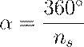
Cálculo de Pulsos para un Desplazamiento Lineal
Para determinar la cantidad de pulsos (
) necesarios para mover una mesa de trabajo (o un eje lineal de robot) una
distancia especificada  ,
se debe considerar el paso del tornillo guía (
), la cantidad de pasos por revolución del motor (
) y la razón de engranes (
) entre el motor y el tornillo guía.
,
se debe considerar el paso del tornillo guía (
), la cantidad de pasos por revolución del motor (
) y la razón de engranes (
) entre el motor y el tornillo guía.
En un sistema de posicionamiento, la cantidad de pulsos requeridos para un incremento es:
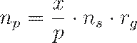
Donde es la cantidad de pasos por revolución del motor. Esta ecuación se puede expresar, mediante la sustitución de y reordenando las relaciones de movimiento, para sistemas de ciclo abierto:
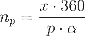
Esta fórmula, para el caso general con una razón de engranes , requiere un ajuste para reflejar que es el ángulo de paso del motor, mientras que el ángulo de rotación efectivo del tornillo guía es .
Frecuencia de Pulsos y Velocidad de Viaje
Para que la mesa o articulación se mueva a una velocidad de viaje específica ( o en la dirección del eje) en mm/min o in/min, se requiere una frecuencia de tren de pulsos ( ), medida en Hz (pulsos/s):
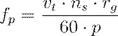
Donde:
· : Frecuencia del tren de pulsos (Hz).
· ( ): Velocidad de viaje/alimentación de la mesa (mm/min o in/min).
· : Pasos/rev del motor.
· : Razón de engranes (giros del motor por giro del tornillo guía).
·
 :
Paso del tornillo guía (mm/rev o in/rev).
:
Paso del tornillo guía (mm/rev o in/rev).
· : Factor de conversión para segundos a minutos.
Estas consideraciones son vitales para la planeación y el control de los movimientos de precisión requeridos en las aplicaciones robóticas de alto rendimiento.
3.4 Aplicaciones.
APLICACIONES
La convergencia de las tecnologías de diseño y manufactura asistidas por computadora (CAD/CAM) y la robótica ha generado un espectro vasto y sofisticado de aplicaciones ingenieriles a lo largo de todo el ciclo de vida del producto.
Estas aplicaciones abarcan desde la conceptualización inicial y el análisis estructural riguroso hasta el control directo de las operaciones físicas en la planta, logrando así la meta fundamental de la Manufactura Integrada por Computadora (CIM): reducir el esfuerzo manual y administrativo, optimizar el uso de recursos y garantizar una calidad consistente en la producción.
APLICACIONES FUNDAMENTALES DE DISEÑO ASISTIDO POR COMPUTADORA (CAD/CAE)
El diseño asistido por computadora (CAD) se define como cualquier actividad de diseño que involucra el uso efectivo de sistemas informáticos para crear, modificar, analizar, optimizar y documentar un diseño de ingeniería.
Esta tecnología no solo sustituye la laboriosa tarea de dibujo manual, sino que dota al diseñador de capacidades analíticas y de visualización que eran prohibitivas antes de la era digital.
Modelado, Visualización y Documentación
Las aplicaciones más comunes de CAD se centran en la representación y la documentación digital del producto. Los sistemas CAD actuales facilitan la creación de modelos geométricos complejos, siendo el modelado sólido la técnica preferida.
· Modelado Geométrico: Permite la creación de modelos de productos en dos dimensiones (2D) o tres dimensiones (3D), incluyendo modelos de wireframe, superficies esculpidas y modelos sólidos. El modelado 3D es fundamental para el diseño mecánico y para transferir datos a la manufactura.
· Dibujo Automatizado y Documentación: Los sistemas CAD actúan como un "procesador de dibujos" que agiliza el proceso de delineación, dimensionamiento y acotación. Esto resulta en una mejor documentación, mayor estandarización en los planos y una legibilidad superior en comparación con los dibujos manuales. Además, el CAD/CAM crea una base de datos fundamental para la manufactura, que incluye la geometría, las dimensiones y las especificaciones de materiales.
· Visualización Avanzada: El uso de color y animación en los modelos CAD mejora la capacidad del usuario para visualizar objetos complejos. La animación es particularmente útil para simular el funcionamiento de mecanismos y piezas móviles, sustituyendo a menudo los modelos físicos de cartón o plástico que se utilizaban anteriormente.
Análisis e Ingeniería Asistida por Computadora (CAE)
Una aplicación crítica del CAD es la integración de software de análisis de ingeniería, lo que se denomina Ingeniería Asistida por Computadora (CAE).
Estos sistemas permiten evaluar el rendimiento de un diseño antes de su fabricación física.
Las aplicaciones clave de CAE incluyen:
· Análisis de Propiedades de Masa: Cálculo automatizado de características físicas de un objeto sólido, tales como volumen, área superficial, peso y centro de gravedad.
· Verificación de Interferencia: Examen de modelos geométricos 3D compuestos por múltiples componentes para identificar si existen colisiones o interferencias entre las piezas, esencial para el análisis de ensamblajes mecánicos y sistemas complejos.
· Análisis Estructural y de Transferencia: Realización de cálculos de esfuerzo-deformación, análisis de transferencia de calor y simulación dinámica. El método de Análisis de Elementos Finitos (FEA) es una técnica poderosa que, asistida por computadora, se vuelve práctica para analizar la tensión y la deformación en componentes mecánicos bajo condiciones estáticas y dinámicas.
· Optimización del Diseño: Los sistemas CAD/CAE permiten a los diseñadores "perturbar e incluso optimizar" el rendimiento de un diseño de manera relativamente sencilla. Por ejemplo, se puede realizar un diseño sin documentos, como en el caso del Boeing 777, que fue construido directamente a partir de software CAD/CAM, sin prototipos o maquetas.
APLICACIONES DE MANUFACTURA ASISTIDA POR COMPUTADORA (CAM)
La Manufactura Asistida por Computadora (CAM) abarca la aplicación de la tecnología informática en la planeación y el control de la función de manufactura. Sus aplicaciones se dividen en dos esferas principales, reflejando el nivel de interacción de la computadora con las operaciones de la planta.
Planeación de la Manufactura (Soporte Indirecto)
Estas aplicaciones utilizan la computadora para el apoyo indirecto de la función de producción, proporcionando información esencial para la planificación y gestión.
· Planeación de Procesos Asistida por Computadora (CAPP): Se enfoca en la preparación de hojas de ruta que listan la secuencia de operaciones y centros de trabajo requeridos para producir un producto. La automatización de CAPP produce planes de proceso más lógicos y consistentes.
· Programación de Piezas con Control Numérico (NC): Generación de instrucciones de control para máquinas herramienta, siendo el uso de CAD/CAM para esta tarea mucho más eficiente para geometrías complejas que la programación manual.
· Balanceo de Líneas Asistido por Computadora: Uso de programas informáticos para encontrar la mejor asignación de elementos de trabajo entre las estaciones de una línea de ensamblaje.
· Otras Funciones de Planeación: Incluyen la estimación de costos, el desarrollo de estándares de trabajo, y la planeación de la producción y de inventarios.
Control de la Manufactura (Control Directo)
Esta categoría se relaciona con sistemas informáticos que controlan y gestionan las operaciones físicas en la fábrica. Estas aplicaciones son la materialización del concepto CAM en la planta.
· Control de Procesos: Incluye el control de calidad y el monitoreo de procesos.
· Control de Equipos Automatizados: Regula las operaciones de sistemas de producción automatizados, tales como líneas de transferencia, sistemas de ensamblaje automatizados, robótica, control numérico (CNC) y sistemas flexibles de manufactura (FMS).
· Control de Transporte y Manejo de Materiales: Gestión de sistemas de manejo automatizado de materiales, como los vehículos guiados automáticamente (AGVs).
APLICACIONES ESPECÍFICAS DE LA ROBÓTICA INDUSTRIAL
Un robot industrial se define como un manipulador multifuncional y reprogramable. Sus aplicaciones, impulsadas por la necesidad de mejorar la productividad y la calidad, se clasifican en tres grandes categorías: manejo de materiales, operaciones de procesamiento y ensamble e inspección.
Históricamente, el uso inicial de robots se enfocó en reemplazar a los humanos en trabajos peligrosos, tediosos o repetitivos.
Manejo y Transferencia de Materiales
En estas aplicaciones, el robot mueve materiales o piezas de un lugar a otro, requiriendo un sujetador diseñado para las piezas específicas.
· Transferencia de Materiales (Pick-and-Place): Operación básica donde el robot recoge una pieza y la deposita en una nueva ubicación, incluyendo la transferencia entre transportadores. A menudo, un robot de secuencia limitada es suficiente para estas tareas. Los robots Delta son utilizados para operaciones de alta velocidad, como la recolección y el empaquetado.
· Carga y Descarga de Máquinas: Transferencia de piezas hacia y/o desde una máquina de producción.
o Fundición y Moldeo: Descarga de piezas de máquinas de fundición a troquel (die casting) o de moldeo de plástico (injection molding), a menudo en ambientes de calor y humo peligrosos para humanos.
o Maquinado de Metales: Carga de piezas en bruto y descarga de piezas terminadas de máquinas herramienta. Los robots a menudo utilizan sujetadores dobles (dual grippers) para manejar las diferencias de tamaño antes y después del maquinado.
o Prensado y Forjado: Carga de planchas en prensas para reducir el riesgo humano en operaciones de prensa y manejo de tochos calientes en operaciones de forjado.
· Paletizado y Despaletizado: Operaciones de carga o descarga de materiales organizados en paletas, así como operaciones de apilamiento e inserción de piezas en contenedores.
Operaciones de Procesamiento y Herramientas
El robot manipula una herramienta como actuador final para realizar una operación en la pieza de trabajo. El robot debe controlar la posición relativa de la herramienta y transmitir señales de control para su operación (encendido, apagado).
· Soldadura: Aplicación más popular de robots. Soldadura por puntos (común en ensamblaje de carrocerías automotrices), soldadura continua con arco eléctrico, y soldadura láser.
· Pintura por Aspersión: El robot manipula la boquilla de pintura para seguir una trayectoria continua y uniforme (operación de trayectoria continua, CP).
· Maquinado y Acabado: Utilización de un eje giratorio (spindle) como actuador final para operaciones como taladrado, routing, rectificado (grinding) o desbarbado (deburing). El robot debe ser lo suficientemente fuerte para soportar las fuerzas de corte. La desbarbadora robótica se realiza con un sistema de retroalimentación de fuerzas para el control de la trayectoria.
· Corte Avanzado: Uso de herramientas especializadas como chorro de agua o corte por láser. La tobera de chorro de agua o la pistola láser se dirigen a lo largo de la trayectoria de corte deseada.
Ensamble e Inspección
Estas son actividades intensivas en mano de obra y repetitivas, que son candidatos lógicos para la aplicación de robots.
· Ensamble: Implica agregar componentes o fijarlos a la unidad de trabajo. Las tareas van desde el movimiento de piezas (manejo de material) hasta la manipulación de una herramienta (ej., destornillador automático). Los robots SCARA son especialmente adecuados para tareas de ensamble electrónico debido a su rigidez vertical y docilidad horizontal.
· Inspección: El robot juega dos roles principales:
o Carga/Descarga de máquinas de inspección/prueba.
o Manipulación de un dispositivo de inspección (sonda mecánica o sensor de visión) para examinar el producto, similar a una operación de procesamiento.
APLICACIONES ANALÍTICAS Y CONTROL DEL MOVIMIENTO
La programación y el control de estas aplicaciones robóticas se basan en algoritmos geométricos y de control.
El controlador digital del robot ya sea CN o robot, requiere el cálculo continuo de posiciones y movimientos.
Cinemática Directa y Posicionamiento
En el diseño y programación de robots articulados, es necesario determinar la posición cartesiana (X, Y, Z) del efector final a partir de las variables articulares ( ).
Por ejemplo, para un tipo de robot articulado, las coordenadas se pueden obtener mediante ecuaciones trigonométricas que relacionan las variables de articulación:
Donde , y representan las variables de articulación (distancias o ángulos). Estos cálculos aseguran que el robot se posicione y oriente correctamente para ejecutar la tarea específica de la aplicación.
Control de Velocidad en Aplicaciones de Maquinado y Transferencia
La planeación de la manufactura y el control de las máquinas CN o robots requieren la definición de velocidades de operación.
En el contexto de las aplicaciones de maquinado (control numérico asistido por CAD/CAM), las instrucciones definen parámetros operacionales clave, como las velocidades del husillo ( ) y las velocidades de avance o alimentación ( ).
· S: Velocidad del husillo en revoluciones por minuto (Spindle speed).
· F: Velocidad de avance o alimentación (ej. en in/min o mm/min).
· G: Función preparatoria (movimientos, interpolaciones, ciclos, etc.). Por ejemplo, G00 se utiliza para el desplazamiento rápido sin corte.
Las aplicaciones de robótica y CN, por lo tanto, no solo dependen de la codificación de la trayectoria (por ejemplo, PTP o CP), sino de la capacidad del sistema de control para ejecutar las funciones definidas por la siguiente data codificada:
3.5 Robots comerciales.
ROBOTS COMERCIALES
El robot industrial moderno se consolida como la manifestación física más tangible de la automatización programable, desempeñando un papel crítico en la transformación de los sistemas de producción hacia modelos de manufactura flexible y la consecución de la Manufactura Integrada por Computadora (CIM).
Un robot industrial se define formalmente, según el estándar ISO 8373, como un manipulador multifuncional y reprogramable de control automático, con capacidad de programación en tres o más ejes, destinado al movimiento de materiales, piezas, herramientas o dispositivos especializados a través de movimientos programados variables para la ejecución de una variedad de tareas.
Esta dualidad de reprogramabilidad y multifuncionalidad es lo que lo distingue de la maquinaria especializada de un solo propósito. El desarrollo de la tecnología robótica siguió a la del control numérico (CN), compartiendo ambas la característica de utilizar computadoras digitales dedicadas para el control coordinado de múltiples ejes o articulaciones.
ARQUITECTURA Y COMPONENTES CLAVE DE LOS SISTEMAS ROBÓTICOS
Un sistema robótico industrial no se compone de una entidad única, sino de un conjunto integrado de hardware y software diseñado para simular capacidades antropomórficas, siendo el brazo mecánico o manipulador su rasgo más evidente.
La complejidad operativa y la precisión exigidas por las aplicaciones industriales determinan la sofisticación de sus componentes principales:
· Manipulador (Brazo y Cuerpo): Es la estructura mecánica rígida compuesta por eslabones (uniones) conectados en serie mediante articulaciones (ejes) prismáticas o de revolución. Típicamente, los robots poseen de cinco a seis articulaciones para proporcionar la libertad de movimiento necesaria para colocar y orientar el extremo de la muñeca. La función primordial del ensamble de brazo y cuerpo es la colocación (posicionamiento) del objeto o herramienta.
· Ensamblaje de Muñeca: Se sitúa en el extremo del brazo y su función primaria es orientar el efector final de manera adecuada. Usualmente consta de dos o tres ejes adicionales (conocidos como roll, pitch y yaw).
· Actuador Final (End Effector): Es la herramienta especializada que se conecta al extremo de la muñeca para realizar la tarea específica, siendo el elemento que ejecuta el trabajo del robot. Se divide en dos categorías generales:
o Sujetadores (Grippers): Diseñados para asir y mover piezas durante el ciclo de trabajo, utilizados en aplicaciones de manejo de material y carga/descarga de máquinas. Suelen ser pinzas mecánicas, o dispositivos de vacío, magnéticos o de presión de aire.
o Herramientas: Utilizadas cuando el robot debe realizar una operación de procesamiento, como pistolas de soldadura por puntos o arco, boquillas para pintar por aspersión, ejes rotatorios o destornilladores automáticos.
· Controlador: Un sistema basado en microprocesadores que contiene el hardware y software para operar las articulaciones de forma coordinada y ejecutar el ciclo de trabajo programado.
CONFIGURACIONES GEOMÉTRICAS COMUNES EN ROBOTS COMERCIALES
Aunque teóricamente existen 125 combinaciones posibles de tres articulaciones para el ensamble de brazo y cuerpo de un manipulador, solo unas pocas configuraciones dominan el mercado industrial comercial.
La geometría del manipulador determina en gran medida el volumen de trabajo (work volume o work envelope), definido como el espacio tridimensional dentro del cual el robot puede manipular el extremo de su muñeca.
Las configuraciones más comunes en los robots comerciales incluyen:
- Robot Articulado (o de Brazo Articulado, Jointed-Arm):
- Geometría: Similar a la estructura hombro-codo-brazo de un ser humano, consta de tres articulaciones rotacionales (R) que proporcionan una gran flexibilidad.
- Volumen de Trabajo: Cuasi-esférico.
- Uso Comercial: Muy común, utilizado en una amplia variedad de tareas industriales, desde soldadura hasta ensamblaje. Un ejemplo es el Unimate PUMA.
- Robot de Coordenadas Cartesianas (o Rectilíneo, Gantry):
- Geometría: Emplea tres articulaciones ortogonales (tipo O o L) para lograr movimientos lineales en los ejes X, Y y Z. A menudo se construye como una estructura de pórtico (gantry) para minimizar la deflexión.
- Volumen de Trabajo: Rectangular o en forma de caja.
- Uso Comercial: Comúnmente utilizado para ensamblaje, acceso elevado (carga/descarga) y tareas que requieren precisión lineal.
- Robot SCARA (Brazo Robótico de Ensamble Selectivamente Dócil):
- Geometría: Es una variación del robot articulado donde los ejes de rotación del hombro y el codo son verticales. Esta disposición le confiere gran rigidez en la dirección vertical, pero docilidad (flexibilidad) en el plano horizontal.
- Uso Comercial: Diseñado específicamente para tareas de inserción vertical en operaciones de ensamblaje (ej. ensamblaje de tarjetas de circuito impreso).
- Robot de Configuración Polar (o Esférica):
- Geometría: Consiste en un brazo deslizante (articulación L) que puede rotar sobre un eje vertical (T) y un eje horizontal (R).
- Volumen de Trabajo: Es una esfera parcial o cuña esférica.
- Uso Comercial: Fue la configuración utilizada por el primer robot comercial, el Unimate, en la década de 1960.
- Robot Delta:
- Geometría: Diseño inusual con tres brazos articulados unidos a una base superior. Utiliza dos articulaciones rotacionales (R) por brazo (la segunda sin motor, ).
- Uso Comercial: Se emplea para movimientos de alta velocidad de objetos pequeños, como en aplicaciones de envasado y pick-and-place.
ESPECIFICACIONES DE RENDIMIENTO Y EJEMPLOS COMERCIALES
La viabilidad de un robot comercial para una aplicación dada se mide a través de parámetros de rendimiento técnicos y operacionales.
Métricas de Precisión
Una métrica fundamental para todos los robots (dado que son sistemas de posicionamiento) es la repetibilidad. La repetibilidad se define como el grado en que un robot es capaz de devolver el Punto Central de la Herramienta (Tool Center Point o TCP) repetidamente a la misma posición.
En aplicaciones de ensamblaje, los requisitos de precisión y repetibilidad son particularmente exigentes, donde los robots más precisos pueden tener repetibilidades de hasta ( ).
Carga Útil y Fuentes de Energía
La carga útil (payload) es el peso máximo que un robot puede transportar a velocidades normales. La fuente de energía del robot afecta significativamente esta capacidad.
· Eléctricos: Son más precisos y adecuados para manejar piezas pequeñas, siendo los preferidos en aplicaciones de ensamblaje.
· Hidráulicos y Neumáticos: Tienen la capacidad de manejar partes y cargas más pesadas, aunque los sistemas hidráulicos suelen estar asignados a aplicaciones de levantamiento pesado.
Ejemplos de Robots Comerciales (FANUC)
Los fabricantes líderes ofrecen gamas de robots con especificaciones variadas, evidenciando la segmentación del mercado por aplicación.
|
Modelo (Fabricante) |
Configuración/Ejes |
Carga Útil Nominal |
Repetibilidad (mm) |
Aplicaciones Clave |
|
S-900iH/iL/iW (FANUC) |
6 Ejes |
|
No especificada (Alta inercia) |
Manejo de materiales pesados, soldadura por puntos pesada. |
|
LR Mate 100i (FANUC) |
5 Ejes (Benchtop) |
(6.6–8.8 lb) |
( ) |
Ensamblaje, manipulación de materiales ligeros. |
El modelo Unimate PUMA (utilizando el lenguaje VAL) es un ejemplo histórico importante de un robot articulado de 6 ejes, pequeño y de alta precisión, diseñado para tareas de ensamblaje.
FUNDAMENTOS CINEMÁTICOS EN EL CONTROL DE POSICIONAMIENTO
El control preciso de los robots comerciales, particularmente aquellos con control de trayectoria continua (CP) o punto a punto (PTP), se basa en transformaciones cinemáticas que convierten las posiciones deseadas en coordenadas cartesianas a los ángulos y desplazamientos articulares requeridos.
La relación entre las variables de articulación (ej. distancias o ángulos ) y las coordenadas cartesianas finales (X, Y, Z) es fundamental para la programación y simulación de trayectorias. A continuación, se presentan las ecuaciones de cinemática directa (que definen la posición cartesiana a partir de las variables de las uniones) para las configuraciones geométricas primarias:
Robot de Coordenadas Cartesianas
En esta configuración, el movimiento es puramente lineal en los tres ejes. Las coordenadas X, Y, Z son directamente iguales a las variables de articulación (a, b, c):
Robot de Configuración Cilíndrica
Esta configuración incluye una rotación ( ) y dos movimientos lineales (a y c). Las coordenadas cartesianas se determinan mediante transformaciones polares en el plano XY:
Donde  es
la extensión radial, es
el ángulo de rotación alrededor del eje Z y
es
la extensión radial, es
el ángulo de rotación alrededor del eje Z y  es
la altura vertical.
es
la altura vertical.
Robot de Configuración Esférica
Esta configuración utiliza una articulación lineal ( ) y dos rotacionales ( y ). La posición cartesiana se define por proyecciones tridimensionales:
Donde es la extensión del brazo (distancia lineal), es la rotación horizontal (acimut) y es el ángulo de elevación.
El controlador robótico debe resolver continuamente estas ecuaciones (o sus inversas, la cinemática inversa) para coordinar los movimientos articulares en tiempo real, garantizando que el efector final siga la trayectoria programada con la precisión y velocidad requeridas por la aplicación comercial.
3.6 Integración CAM.
TECNOLOGÍAS PARA EL DISEÑO DE PRODUCTOS O PROCESOS
La evolución de la manufactura contemporánea hacia la denominada "fábrica del futuro" se sustenta en la transición de procesos aislados hacia un ecosistema digital unificado donde la información fluye sin solución de continuidad desde la concepción teórica hasta la ejecución física.
En este contexto, las tecnologías de diseño y producción han dejado de ser meras herramientas de asistencia para convertirse en la infraestructura crítica que garantiza la competitividad global a través de la optimización de recursos y la reducción drástica de los tiempos de respuesta al mercado.
La implementación de estos sistemas integrales permite gestionar la complejidad creciente de los productos modernos, los cuales, en muchos casos, serían imposibles de fabricar mediante métodos convencionales debido a sus requisitos de precisión extrema y geometrías sofisticadas.
INTEGRACIÓN CAM (CAD/CAM Y BASES DE DATOS)
La integración CAM representa el paradigma de la ingeniería concurrente, donde se busca eliminar el "muro" tradicional que separaba los departamentos de diseño y producción.
En un sistema integrado, la interfaz fundamental es una base de datos común que permite a los ingenieros de manufactura acceder al modelo geométrico tridimensional tan pronto como es creado por el diseñador.
Esta conectividad permite que los programas de control numérico se generen automáticamente a partir de las características del modelo de CAD, eliminando la necesidad de redefinir la geometría manualmente y reduciendo así la probabilidad de errores catastróficos.
La integración tecnológica se facilita mediante el uso de formatos de intercambio de datos neutrales como IGES (Initial Graphics Exchange Specification) y STEP, los cuales permiten la interoperabilidad entre hardware y software de diferentes proveedores.
Gracias a esto, es posible realizar simulaciones dinámicas del proceso de maquinado en entornos virtuales para verificar colisiones y optimizar trayectorias antes de comprometer materiales reales en el taller.
El resultado sistémico de esta integración es un ciclo de producción cerrado donde el diseño dicta la manufactura y la retroalimentación de planta optimiza el diseño original.
3.7 Definición.
DEFINICIÓN DE LA MANUFACTURA ASISTIDA POR COMPUTADORA (CAM)
En el marco de la ingeniería de manufactura contemporánea, la Manufactura Asistida por Computadora, frecuentemente abreviada como CAM (Computer-Aided Manufacturing), trasciende la mera utilización de periféricos computacionales para posicionarse como un ecosistema integral de tecnologías digitales aplicadas a la optimización de la producción industrial.
Técnicamente, el CAM se define como el uso efectivo y sistemático de la tecnología computacional para asistir en todas las fases de la planeación, gestión y control de las operaciones de una instalación de manufactura, estableciendo una interfaz crítica entre los recursos humanos y los activos físicos de la organización.
A diferencia del diseño asistido (CAD), que se orienta primordialmente hacia la síntesis y el análisis geométrico del producto, el CAM se enfoca en la orquestación de los procesos necesarios para la materialización física del diseño, abarcando desde la generación de programas de control numérico hasta la administración de sistemas complejos de transporte y almacenamiento.
La esencia del paradigma CAM reside en su capacidad para actuar como el "sistema nervioso" de la planta, transformando datos alfanuméricos y modelos geométricos en instrucciones cinemáticas precisas que gobiernan el equipo de procesamiento.
Esta tecnología no solo mejora la consistencia cualitativa de las piezas fabricadas al mitigar la variabilidad inherente al factor humano, sino que también permite la implementación de regímenes de producción de alta agilidad, esenciales para la manufactura de pequeños lotes en entornos de Manufactura Integrada por Computadora (CIM).
CLASIFICACIÓN FUNCIONAL DE LAS APLICACIONES CAM
Para una comprensión taxonómica rigurosa, las aplicaciones de la tecnología CAM se dividen en dos vertientes fundamentales que operan en diferentes niveles de interacción con el proceso físico de producción,:
· Planeación de la Manufactura (Soporte Indirecto): En esta categoría, la computadora funciona como una herramienta de soporte analítico y logístico. No existe una conexión directa en tiempo real entre el procesador y el equipo de la planta,. Su objetivo es proporcionar la inteligencia necesaria para la gestión eficiente de los recursos.
· Control de la Manufactura (Intervención Directa): Esta vertiente implica sistemas computacionales diseñados para gobernar, monitorear y gestionar las operaciones físicas en tiempo real. Aquí, la computadora se integra directamente en el lazo de control de las máquinas, actuando sobre actuadores y procesando señales de sensores de retroalimentación.
A continuación, se presenta una tabla detallada que desglosa las actividades específicas comprendidas en cada una de estas categorías fundamentales:
|
Categoría CAM |
Actividades Técnicas y Logísticas |
Impacto en el Sistema de Producción |
|
Planeación |
CAPP (Planeación de Procesos), Programación NC, Estimación de Costos, Balanceo de Líneas, Estándares de Trabajo. |
Optimización de la ruta de fabricación y reducción del lead time administrativo. |
|
Control |
Control de Procesos, Control de Calidad Digital, Supervisión de Celdas (SCADA), Monitoreo de Estado de Máquinas. |
Incremento de la utilización de activos y garantía de la integridad superficial del producto. |
LA INTERFAZ TÉCNICA: MCU Y PROCESAMIENTO DE DATOS
El componente operativo central de un sistema CAM es la Unidad de Control de Máquina (MCU), la cual ha evolucionado de la lógica cableada (hardwired) a sistemas de Control Numérico Computarizado (CNC) basados en microprocesadores de alta velocidad.
La MCU ejecuta un "programa de piezas" que contiene la secuencia lógica de comandos necesarios para procesar una unidad de trabajo específica.
En términos de modelado matemático, la precisión de un sistema CAM depende de su capacidad de posicionamiento y resolución de control. La Resolución de Control ( ) es una función tanto del hardware electromecánico como de la capacidad de almacenamiento de bits del controlador.
Matemáticamente, para un sistema con un paso de tornillo de
potencia  y
un número de pasos por revolución ,
la resolución del hardware (
) se expresa como:
y
un número de pasos por revolución ,
la resolución del hardware (
) se expresa como:
Simultáneamente, la resolución dictada por el registro del controlador ( ) depende de la longitud del recorrido del eje ( ) y del número de bits ( ) del registro:
La resolución de control efectiva del sistema CAM será el valor máximo entre ambas:
INTEGRACIÓN CAD/CAM Y EL CONCEPTO DE BASE DE DATOS COMÚN
La definición moderna de CAM es indisociable de su integración con el CAD. El objetivo final es automatizar la transición entre el diseño y la fabricación mediante una base de datos común.
En un sistema ideal, el modelo geométrico sólido generado en el entorno CAD sirve como entrada directa para los algoritmos de generación de trayectorias de herramientas (toolpaths), eliminando la necesidad de redibujar o reinterpretar la pieza.
Esta integración se orquesta a través de los siguientes elementos técnicos:
· Modelado Geométrico: Descripción matemática exhaustiva contenida en la memoria de la computadora.
· Post-procesamiento: Traducción de las instrucciones generales del lenguaje CAM (como CLDATA) a códigos específicos de máquina ( -codes y -codes) que la MCU puede interpretar.
· Simulación Dinámica: Evaluación virtual de la operación de maquinado para detectar interferencias y colisiones antes del compromiso de materiales físicos.
La eficiencia de remoción de material (
), parámetro vital para la planeación económica en sistemas CAM, se modela en
operaciones de torneado mediante la relación entre la velocidad de corte ( ), el avance (
) y la profundidad de corte (
):
), el avance (
) y la profundidad de corte (
):
Donde el tiempo de maquinado ( ) para una longitud de pieza se define por:
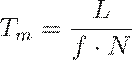
Siendo la velocidad rotacional del husillo, calculada como:
Donde es el diámetro inicial de la pieza de trabajo.
3.8 Historia.
HISTORIA Y EVOLUCIÓN DE LA MANUFACTURA ASISTIDA POR COMPUTADORA (CAM)
La génesis de la manufactura asistida por computadora no puede entenderse como un evento aislado, sino como el resultado de una convergencia tecnológica entre la necesidad crítica de precisión en la industria aeroespacial de la posguerra y el desarrollo incipiente de la computación digital.
Históricamente, el proceso de remoción de material mediante máquinas herramienta se remonta a la Revolución Industrial, periodo en el cual se establecieron los fundamentos de procesos convencionales como el taladrado y el fresado; sin embargo, durante más de un siglo, estas máquinas permanecieron ligadas a la destreza manual de un operador.
El cambio de paradigma ocurrió a finales de la década de 1940, cuando la complejidad geométrica de los nuevos componentes para aeronaves y misiles superó las capacidades de los métodos de trazado y ajuste manual, exigiendo una precisión matemática que solo la automatización programable podía ofrecer.
Esta transición marcó el nacimiento del Control Numérico (NC), que funcionaría como el precursor tecnológico directo de lo que hoy denominamos sistemas CAM modernos.
LOS ORÍGENES: JOHN PARSONS Y EL CONCEPTO "CARDAMATIC"
El desarrollo del control numérico se atribuye fundamentalmente a John Parsons y su socio Frank Stulen, quienes a finales de los años 40, en la Parsons Corporation, experimentaron con el uso de datos de coordenadas contenidos en tarjetas perforadas para definir y maquinar los contornos de superficies de perfiles alares.
Parsons denominó originalmente a su invento la máquina fresadora "Cardamatic", debido a que los datos numéricos de posición se almacenaban en dichas tarjetas.
· Pionerismo en Michigan: Parsons visualizó un sistema donde los datos de coordenadas tridimensionales se generarían automáticamente para controlar la posición de la mesa de una fresadora.
· Contrato de la Fuerza Aérea: En 1949, la Fuerza Aérea de los Estados Unidos, reconociendo el potencial para reducir los crecientes costos de la fabricación de piezas con contornos sofisticados, otorgó a Parsons un contrato para el desarrollo de un prototipo funcional.
· Colaboración con el MIT: Debido a la complejidad del proyecto, Parsons subcontrató al Laboratorio de Servomecanismos del Instituto Tecnológico de Massachusetts (MIT) para realizar estudios de ingeniería de sistemas y desarrollar la máquina bajo principios electrónicos.
LA PRIMERA MÁQUINA NC Y EL SALTO TECNOLÓGICO DEL MIT
La investigación en el MIT rápidamente reveló que las tasas de transferencia de datos requeridas para el control de movimiento fluido no podían alcanzarse con tarjetas perforadas, lo que llevó a la adopción de cintas de papel perforadas o cintas magnéticas como medio de almacenamiento.
En marzo de 1951, el término "control numérico" fue adoptado formalmente tras un concurso interno entre el personal del proyecto.
El hito definitivo ocurrió en marzo de 1952, cuando se demostró exitosamente el primer prototipo de máquina NC: una fresadora vertical Cincinnati Hydro-Tel modificada con controles combinados analógico-digitales.
Este controlador primitivo constaba de 292 tubos de vacío y ocupaba un área mayor que la propia máquina herramienta, pero lograba un control simultáneo de movimiento en tres ejes con una precisión y repetibilidad sin precedentes en la industria de la época.
EVOLUCIÓN DEL SOFTWARE: DOUGLAS ROSS Y EL LENGUAJE APT
A medida que el hardware de las máquinas NC se estabilizaba, surgió una nueva limitación: el tiempo y la dificultad técnica necesarios para calcular manualmente las trayectorias de las herramientas para geometrías complejas.
La solución provino nuevamente de la investigación patrocinada por la Fuerza Aérea en el MIT, bajo la dirección del matemático Douglas Ross, quien concibió el sistema de Herramientas Programadas Automáticamente o APT (Automatically Programmed Tool) en 1958. Ross diseñó un sistema de programación en el cual:
· El usuario preparaba instrucciones utilizando enunciados similares al inglés.
· La computadora traducía estas instrucciones a un lenguaje procesable.
· El sistema realizaba los cálculos aritméticos y geométricos para ejecutar los comandos y generar los puntos de corte.
· Se introdujo el concepto de "post-procesador" para convertir los datos generales de ubicación de la herramienta (CL DATA) en códigos específicos interpretables por diferentes controladores de máquinas.
DE DNC A CNC Y LA INTEGRACIÓN CIM
Durante la década de 1960 y principios de los 70, la integración de computadoras digitales con máquinas herramienta dio lugar a nuevas configuraciones operativas. A mediados de los 60, surgió el Control Numérico Directo (DNC), donde una computadora central (mainframe) controlaba múltiples máquinas en tiempo real, eliminando la dependencia de los poco fiables lectores de cinta perforada.
Con la llegada de los circuitos integrados y la miniaturización de la electrónica, a principios de los 70 fue económicamente viable dedicar una computadora pequeña a cada máquina, naciendo así el Control Numérico Computarizado (CNC).
El término Manufactura Integrada por Computadora (CIM) fue acuñado por Joseph Harrington en 1973/1974 para describir la visión de una fábrica donde todos los procesos, desde el diseño conceptual hasta el producto terminado, estuvieran vinculados por un flujo de información digital.
Cronología del Desarrollo del CAM y Control Numérico
|
Año |
Hito Tecnológico |
Descripción Clave |
|
1947-1949 |
Concepto Cardamatic |
John Parsons propone el uso de tarjetas perforadas para control de posición. |
|
1951 |
Término "Control Numérico" |
Se formaliza el nombre del sistema de control de máquinas. |
|
1952 |
Primer Prototipo NC |
Demostración en el MIT de una fresadora de 3 ejes controlada electrónicamente. |
|
1958 |
Lenguaje APT |
Douglas Ross desarrolla el primer lenguaje de alto nivel para programación de piezas. |
|
1966 |
Direct Numerical Control (DNC) |
Una computadora central controla varias máquinas puenteando el lector de cinta. |
|
1971 |
Aparición del CNC |
Se utilizan minicomputadoras dedicadas como Unidades de Control de Máquina (MCU). |
|
1974 |
Concepto CIM |
Joseph Harrington publica la visión de la manufactura totalmente integrada. |
|
1980s |
Integración CAD/CAM |
Los modelos geométricos 3D se convierten en la entrada directa para los sistemas CAM. |
ANÁLISIS MATEMÁTICO DE LA OPTIMIZACIÓN HISTÓRICA EN CAM
El uso de sistemas CAM permitió la aplicación de modelos matemáticos para optimizar las condiciones de corte, algo que anteriormente dependía meramente de tablas empíricas o la intuición del operario.
Un ejemplo fundamental es la implementación computarizada de
la Ecuación de Taylor para la vida de la herramienta, que permite al software
CAM predecir la velocidad de corte óptima ( ) para maximizar la productividad:
) para maximizar la productividad:
Donde:
·
 :
Velocidad de corte (m/min o ft/min).
:
Velocidad de corte (m/min o ft/min).
· : Vida de la herramienta (min).
·
 :
Exponente de endurecimiento por deformación, dependiente del material de la
herramienta.
:
Exponente de endurecimiento por deformación, dependiente del material de la
herramienta.
· : Constante de velocidad para un material específico.
A través de la integración CAM, es posible automatizar el cálculo de la velocidad de rotación del husillo ( ) en función del diámetro de la herramienta ( ) y la velocidad de corte superficial recomendada ( ) en la base de datos tecnológica:
Este tipo de cálculos, realizados en tiempo real por los procesadores CAM, ha sido el motor que ha reducido los tiempos de maquinado en dos órdenes de magnitud en el último siglo.
3.9 Componentes principales.
ARQUITECTURA Y COMPONENTES PRINCIPALES DE LOS SISTEMAS DE MANUFACTURA ASISTIDA
La materialización de un diseño digital en un objeto físico a través de sistemas de Manufactura Asistida por Computadora (CAM) requiere una infraestructura tecnológica sofisticada que integra hardware de precisión, potencia de cómputo y lógica algorítmica.
Un sistema CAM, en su acepción más amplia, no es una entidad aislada, sino un ecosistema compuesto por tres pilares fundamentales que interactúan de manera sinérgica: el programa de instrucciones (o programa de pieza), la unidad de control de máquina (MCU) y el equipo de procesamiento físico.
En la ingeniería moderna, esta tríada se ha expandido para incluir interfaces de comunicación avanzadas y una variedad de accesorios periféricos que permiten la automatización de funciones secundarias como el cambio de herramientas, la lubricación y la inspección en tiempo real.
La efectividad de un sistema CAM depende de la fidelidad con la que el flujo de datos digitales se traduce en desplazamientos mecánicos, una tarea que recae primordialmente en la unidad de control, considerada habitualmente como el cerebro del sistema.
EL PROGRAMA DE INSTRUCCIONES: EL FLUJO LÓGICO DE LA MANUFACTURA
El programa de pieza constituye el conjunto detallado de comandos, estructurados paso a paso, que gobiernan las acciones del equipo de procesamiento.
En las aplicaciones de máquinas-herramienta, estos comandos no solo especifican las coordenadas espaciales ( ) que debe alcanzar la punta de la herramienta, sino que también codifican variables tecnológicas críticas como la velocidad de rotación del husillo, la tasa de avance y la selección de la herramienta adecuada.
Tradicionalmente, esta información se almacenaba en cintas perforadas de una pulgada de ancho, pero la evolución tecnológica ha migrado hacia medios de almacenamiento magnético, discos ópticos y, más recientemente, la transferencia electrónica directa desde servidores centrales a través de redes locales (DNC).
Los elementos estructurales de un bloque de instrucción en un programa CAM típico incluyen:
· Comandos Geométricos: Especifican la posición final del efector o la trayectoria a seguir (interpolación lineal o circular).
· Funciones Preparatorias (G-codes): Configuran el estado de la máquina para interpretar los datos de movimiento (ej. sistemas de coordenadas absolutas o incrementales).
· Parámetros Tecnológicos: Definen la dinámica del proceso, donde se aplican ecuaciones cinemáticas fundamentales para asegurar la integridad de la pieza.
· Funciones Misceláneas (M-codes): Controlan los eventos no relacionados con el movimiento, como el flujo de refrigerante o el sentido de rotación del husillo.
LA UNIDAD DE CONTROL DE MÁQUINA (MCU): PROCESAMIENTO Y EJECUCIÓN
La Unidad de Control de Máquina (MCU) representa el componente de hardware que distingue a la tecnología CNC de sus ancestros de lógica cableada. Técnicamente, se trata de una microcomputadora dedicada y hardware de control relacionado que almacena el programa y lo ejecuta convirtiendo cada comando lógico en acciones mecánicas discretas.
La MCU está integrada por una unidad central de procesamiento (CPU), una jerarquía de memorias y una interfaz de entrada/salida (I/O).
La CPU se subdivide funcionalmente en una sección de control, que recupera datos de la memoria y genera señales de activación, y una unidad lógico-aritmética (ALU) encargada de realizar los cálculos de interpolación y compensación de herramienta necesarios para mantener la precisión dimensional.
|
Subsistema de la MCU |
Función Técnica Principal |
Componentes Asociados |
|
Unidad Central (CPU) |
Gestión de recursos y ejecución de algoritmos de control. |
ALU, registros, unidad de control. |
|
Memoria de Sistema |
Almacenamiento del software operativo y rutinas de diagnóstico. |
ROM, EPROM. |
|
Memoria de Aplicación |
Almacenamiento de programas de pieza y macros de usuario. |
RAM, Disco Duro, Estado Sólido. |
|
Interfaz de I/O |
Comunicación con el operador y dispositivos externos. |
Teclado, pantalla CRT/LCD, puertos seriales. |
|
Controles de Ejes |
Generación de señales de potencia para los motores de accionamiento. |
Servocontroladores, amplificadores. |
EQUIPO DE PROCESAMIENTO: LA INTERFAZ FÍSICA
El equipo de procesamiento es el componente que realiza el trabajo productivo real, transformando la materia prima en una pieza terminada mediante la ejecución de pasos dirigidos por la MCU. En el ámbito del maquinado, esto incluye la bancada, el husillo, la mesa de trabajo y los motores de accionamiento.
Estos últimos actúan como los músculos del sistema, recibiendo señales eléctricas y convirtiéndolas en par motor y movimiento lineal o rotatorio a través de mecanismos como los tornillos de bolas.
La naturaleza del equipo de procesamiento varía según la aplicación, pudiendo tratarse de un torno, una fresadora, un robot de ensamble o una máquina de medición por coordenadas (CMM).
Para garantizar la precisión en estos sistemas, se emplean dos arquitecturas de control de movimiento:
- Sistemas de Lazo Abierto: Utilizan motores paso a paso que ejecutan desplazamientos angulares discretos en respuesta a trenes de pulsos, sin verificar la posición final alcanzada.
- Sistemas de Lazo Cerrado: Emplean servomotores y sensores de retroalimentación (como codificadores ópticos) que miden la posición real y corrigen cualquier desviación respecto al comando original, siendo esenciales para operaciones de alta carga y precisión.
ANÁLISIS CINEMÁTICO Y DINÁMICO DE LOS COMPONENTES
La eficiencia de un sistema CAM se evalúa mediante la relación entre las capacidades del hardware y los requisitos de procesamiento.
Para ello, se emplean ecuaciones que vinculan la rotación del motor con el avance lineal de la máquina. La velocidad de rotación del husillo ( ) se deriva de la velocidad de corte superficial ( ) y el diámetro de la herramienta ( ):
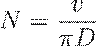
Asimismo, la velocidad de avance de la mesa ( ) en una operación de fresado depende del número de dientes del cortador ( ) y la carga de viruta por diente ( ):
En sistemas de posicionamiento, el número de pulsos (
) requeridos para un desplazamiento lineal (
) en un sistema con tornillo de avance de paso ( ) y un motor de pasos con ángulo de paso (
) se modela como:
) y un motor de pasos con ángulo de paso (
) se modela como:
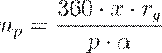
Donde representa la relación de engranaje entre el motor y el tornillo. Para sistemas de lazo cerrado, la frecuencia de los pulsos generados por el codificador ( ) permite monitorear la velocidad de avance real ( ):
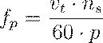
Siendo el número de ranuras o pulsos por revolución del disco del codificador. Estos cálculos son fundamentales para que la MCU determine si el equipo de procesamiento está cumpliendo con las especificaciones del programa de instrucciones.
4. Tecnologías para la planeación y el control de manufactura de productos.
4.1 Manejo de materiales. Selección de un sistema.
MANEJO DE MATERIALES: SELECCIÓN Y OPTIMIZACIÓN SISTÉMICA
El manejo de materiales se define formalmente, de acuerdo con la industria especializada, como el movimiento, protección, almacenamiento y control de materiales y productos a través de los procesos de manufactura, distribución, consumo y desecho.
En la arquitectura de un sistema de producción moderno, esta disciplina constituye la "logística interna", encargada de la dinámica de los componentes dentro de una instalación, a diferencia de la logística externa que se ocupa del transporte entre ubicaciones geográficas distintas.
La relevancia económica de este subsistema es crítica, ya que se estima que el manejo de materiales consume una parte significativa del costo total de producción, representando en muchos casos la mayoría del costo de mano de obra directa en la fábrica debido al tiempo que los materiales pasan esperando o siendo trasladados en lugar de ser procesados.
Por tanto, la selección de un sistema de manejo no es una decisión aislada, sino una optimización de la interfaz entre las estaciones de procesamiento y el flujo de información digital que cohesiona la manufactura integrada por computadora (CIM).
CRITERIOS TÉCNICOS PARA LA SELECCIÓN DEL SISTEMA
La configuración de un sistema de manejo de materiales debe satisfacer requisitos de seguridad, eficiencia, oportunidad y precisión, garantizando que los materiales correctos lleguen en las cantidades exactas a las ubicaciones designadas sin sufrir daños estructurales.
La ingeniería de diseño debe evaluar simultáneamente múltiples variables para determinar la tecnología de transporte y posicionamiento más adecuada.
Los criterios fundamentales para la selección incluyen:
· Configuración de la pieza de trabajo: Dimensiones, peso, forma y estado físico (sólido, líquido o gaseoso).
· Requerimientos de tiempo de proceso: La sincronización entre la entrega de la materia prima y la cadencia de la máquina para evitar tiempos muertos.
· Volúmenes de producción: Las tasas de flujo (throughput) requeridas dictan si se opta por sistemas de transporte fijo como transportadores o sistemas flexibles como vehículos guiados automáticamente (AGV).
· Habilidad del operador y seguridad ambiental: La transición hacia sistemas automatizados busca reducir el riesgo humano y la variabilidad en la calidad, especialmente en entornos hostiles con ruido, calor o químicos reactivos.
|
Atributo del Material |
Medida o Descriptor |
Impacto en el Diseño del Sistema |
|
Estado Físico |
Sólido, líquido o gas |
Define el contenedor y el modo de transporte (tubería vs. banda). |
|
Tamaño |
Volumen, longitud, ancho, altura |
Determina las dimensiones de los pasillos y la capacidad de los transportadores. |
|
Peso |
Peso por pieza o por unidad de volumen |
Condiciona la potencia de los motores y los requisitos de carga inercial. |
|
Riesgo de Daño |
Frágil, quebradizo, robusto |
Exige sistemas de amortiguamiento o sujeción especializada. |
|
Riesgo de Seguridad |
Explosivo, inflamable, tóxico, corrosivo |
Obliga a implementar protocolos de contención y equipo a prueba de chispas. |
EL PRINCIPIO DE CARGA UNITARIA
El "Principio de Carga Unitaria" constituye uno de los pilares de la eficiencia logística. Define la carga unitaria como la masa total que se mueve o maneja en un solo ciclo operativo. Esta carga puede ser una sola pieza, un contenedor con múltiples componentes o una tarima (pallet) cargada con cajas.
La justificación técnica para el uso de cargas unitarias se basa en la reducción drástica de la cantidad de viajes necesarios, la disminución del tiempo de carga y descarga, y la protección del producto contra daños mecánicos. En sistemas automatizados, la estandarización de contenedores y tarimas es imperativa para asegurar la compatibilidad con robots, transportadores y sistemas de almacenamiento y recuperación automatizados (AS/RS).
ANÁLISIS CUANTITATIVO Y MODELADO DE TRANSPORTE
Para determinar el número de unidades de transporte necesarias (como montacargas o AGVs) y optimizar las tasas de entrega, se emplean modelos matemáticos que consideran la cinemática del movimiento y la disponibilidad del equipo. El tiempo total de un ciclo de entrega ( ) para un vehículo de velocidad constante ( ) se modela como:
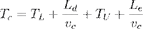
Donde:
· es el tiempo de carga en la estación de origen.
· es la distancia recorrida con carga.
· es el tiempo de descarga en la estación de destino.
· es la distancia recorrida en vacío hasta el siguiente ciclo.
La capacidad operativa de cada vehículo, expresada en
entregas por hora (
), debe ajustarse por factores de disponibilidad ( ), tráfico (
) y eficiencia del operador (
):
), tráfico (
) y eficiencia del operador (
):
Finalmente, el número de vehículos requeridos ( ) para satisfacer una tasa de flujo total del sistema ( ) se calcula dividiendo la carga de trabajo total ( ) entre el tiempo disponible por vehículo ( ):
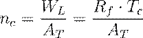
INTERACCIÓN CON LA DISTRIBUCIÓN DE PLANTA (LAYOUT)
La selección del sistema de manejo es indisociable del tipo de distribución de planta empleado en la instalación. En una distribución por proceso (taller de trabajo), el flujo es errático y requiere transportadores flexibles como montacargas o carros manuales. En una distribución por producto (línea de flujo), el movimiento es unidireccional y de alta frecuencia, favoreciendo el uso de transportadores fijos y sistemas de transferencia sincrónica o asincrónica. Por último, en una distribución de posición fija (productos de gran escala como aviones), el sistema de manejo debe ser móvil y de alta capacidad, recurriendo a grúas viajeras y polipastos de gran tonelaje para mover los componentes hacia el producto estático. La integración exitosa asegura que el sistema de manejo no se convierta en un cuello de botella que reduzca la utilización de las costosas máquinas herramienta CNC.
4.2 Transportadores.
SISTEMAS DE TRANSPORTE DE MATERIALES DE RUTA FIJA
Un transportador se define técnica y mecánicamente como un aparato diseñado para el desplazamiento de materiales a granel o unidades discretas de trabajo dentro de una instalación industrial, siguiendo generalmente una ruta fija que puede estar integrada en el piso, sobre este o suspendida en el techo.
Estos sistemas representan una de las soluciones más económicas y confiables para la transferencia masiva de cargas entre ubicaciones específicas, permitiendo la integración de diversas etapas del proceso productivo.
En el marco de la ingeniería de manufactura, los transportadores no solo cumplen una función logística de movimiento, sino que en aplicaciones como las líneas de ensamble manual, actúan como mecanismos de regulación del ritmo de trabajo, obligando al operario a mantener una cadencia de producción constante y predecible. La sofisticación de estos equipos varía desde implementaciones puramente mecánicas accionadas por gravedad hasta sistemas altamente complejos controlados por computadoras dedicadas o controladores lógicos programables (PLC), que gestionan la lógica de ruteo mediante sensores y mecanismos de desvío.
CLASIFICACIÓN CINEMÁTICA Y MODOS DE TRANSFERENCIA
La operatividad de un sistema de transportadores se categoriza primordialmente en función de la naturaleza del movimiento impartido a las unidades de carga. Esta distinción es fundamental para el diseño de la interfaz entre el sistema de transporte y las estaciones de procesamiento.
· Transferencia Continua: En este régimen, los transportadores se desplazan a una velocidad constante ( ) sin interrupciones programadas. Este modo es arquetípico en industrias de alto volumen, como las plantas embotelladoras, donde el flujo constante maximiza el rendimiento volumétrico.
· Transferencia Sincrónica (Intermitente): Caracterizada por el movimiento simultáneo de todas las unidades de trabajo o tarimas hacia la siguiente estación mediante una acción discontinua y rápida. Su principal desventaja radica en que una falla en cualquier punto de la línea detiene la totalidad del flujo, y los intervalos entre operaciones deben basarse estrictamente en la estación más lenta o "estación cuello de botella".
· Transferencia Asincrónica (No Sincrónica): Bajo este modelo, cada unidad de trabajo se desplaza de forma independiente hacia la siguiente estación tan pronto como se completa su procesamiento actual. Este sistema, a menudo denominado de "carga y liberación", ofrece una flexibilidad superior al permitir la formación de colas o búferes de inventario en proceso (WIP) entre estaciones, lo que ayuda a mitigar las variaciones en los tiempos de ciclo y evita la inactividad de las máquinas por falta de material.
DIVERSIDAD TECNOLÓGICA DE LOS SISTEMAS DE TRANSPORTE
A continuación se presenta un resumen de las tipologías más representativas en el entorno industrial:
|
Tipo de Transportador |
Mecanismo de Potencia y Soporte |
Aplicaciones Características |
|
De Rodillos |
Tubos perpendiculares (rodillos) accionados por bandas o cadenas. |
Cargas con fondo plano como tarimas, cajas o contenedores. |
|
De Banda |
Bucle continuo de elastómero reforzado soportado por un marco con rodillos. |
Materiales a granel (forma artesa) o unidades individuales (banda plana). |
|
Trolley Elevado |
Carros con ruedas que corren sobre un riel suspendido accionados por cadena o cable. |
Transporte de subensambles entre departamentos y almacenamiento aéreo. |
|
Power-and-Free |
Dos rieles superpuestos; el superior contiene la cadena motriz y el inferior los carros desconectables. |
Sistemas asincrónicos complejos que requieren acumulación y ruteo variable. |
|
Cart-on-Track |
Carros individuales impulsados por un tubo giratorio mediante una rueda de fricción ajustable. |
Maquinado y soldadura robótica donde se requiere alta precisión de posicionamiento. |
|
Towline (piso) |
Carros de cuatro ruedas impulsados por cadenas o cables en zanjas bajo el nivel del piso. |
Manejo de materiales pesados en plantas de manufactura y almacenes. |
La selección de la tecnología de transporte específica depende de los atributos físicos del material (tamaño, peso, configuración de la base) y de los requerimientos dinámicos de la planta.
ANÁLISIS CUANTITATIVO DE LA DINÁMICA DEL TRANSPORTE
Para el dimensionamiento de un sistema de transporte lineal, es imperativo modelar las variables de flujo y tiempo.
Si consideramos un transportador operando a una velocidad constante para mover materiales entre una estación de carga y una de descarga separadas por una distancia , el tiempo de entrega ( ) se expresa como:
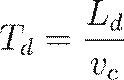
La tasa de flujo de piezas ( ) en el transportador está intrínsecamente ligada al espaciamiento entre los contenedores o unidades de carga ( ) y a la cantidad de piezas por contenedor ( ).
Esta relación se define matemáticamente de la siguiente manera:
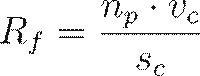
Es fundamental que la tasa de carga ( ) en la estación de origen no exceda la capacidad física del transportador ni la capacidad ergonómica del trabajador, cumpliéndose que:
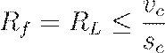
En sistemas de lazo cerrado con una longitud total de circuito , el número total de portadores o carros ( ) requeridos es:
Para estos sistemas de bucle continuo, el tiempo de ciclo total ( ) necesario para que un portador complete una revolución íntegra se modela como:
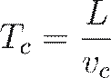
TRANSPORTADORES RECIRCULANTES Y PRINCIPIOS DE KWO
Un sistema de transporte recirculante permite que los portadores cargados o vacíos permanezcan en el sistema durante múltiples revoluciones, actuando como un búfer dinámico.
Para optimizar estos sistemas, se aplican los tres principios fundamentales desarrollados por Kwo:
1. Regla de la Velocidad: La velocidad operativa del transportador debe situarse en un rango donde el límite inferior sea dictado por las tasas requeridas de carga ( ) y descarga ( ), y el límite superior por la capacidad física de los operarios para manipular las cargas. Matemáticamente, debe cumplirse que:
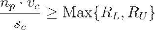
Y simultáneamente:
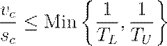
Donde y son los tiempos de carga y descarga por portador, respectivamente.
2. Restricción de Capacidad: La capacidad de flujo del sistema debe ser al menos igual a los requerimientos de la planta para absorber fluctuaciones y compensar la distancia de entrega:
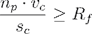
3. Principio de Uniformidad: Las cargas deben estar distribuidas de manera homogénea a lo largo de toda la longitud del transportador. Esto evita la saturación de secciones específicas del sistema (donde todos los portadores están llenos) y la inanición en otras (donde todos están vacíos), minimizando así los tiempos de espera en las estaciones de carga y descarga.
4.3 Vehículos guiados automáticamente.
VEHÍCULOS GUIADOS AUTOMÁTICAMENTE (AGV)
El sistema de vehículos guiados automáticamente (AGVS) representa un paradigma avanzado en el manejo de materiales, definido como un conjunto de vehículos autopropulsados e independientemente operados que se desplazan a lo largo de trayectorias definidas sin intervención humana directa.
Estos sistemas se distinguen de otros mecanismos de transporte, como los vehículos guiados por riel o los transportadores, por su capacidad de navegación en rutas no obstructivas y su alta adaptabilidad a cambios en la distribución de la planta.
Históricamente, la tecnología AGV emergió en la década de 1950 con los desarrollos de Barrett Electronics, evolucionando desde sistemas basados en tubos de vacío hasta la sofisticación actual que emplea microprocesadores y sensores ópticos para el control y la toma de decisiones en tiempo real.
En el contexto de la manufactura integrada por computadora (CIM), los AGVs son componentes críticos que facilitan la flexibilidad operativa necesaria para la producción de lotes pequeños y medianos, permitiendo el movimiento eficiente de materias primas, productos en proceso (WIP) y bienes terminados entre diversas estaciones de trabajo, almacenes automatizados (AS/RS) y muelles de carga.
RACIONALIDAD TÉCNICA Y APLICACIONES INDUSTRIALES
La implementación de una flota de AGVs se justifica primordialmente por la necesidad de reducir los costos operativos derivados de la mano de obra directa y aumentar la seguridad en entornos industriales peligrosos.
A diferencia de los métodos manuales, los AGVs garantizan una consistencia excepcional en la entrega y son capaces de operar de forma ininterrumpida durante múltiples turnos, requiriendo únicamente periodos breves de recarga de batería que, en sistemas modernos, se realizan de forma automática mediante estaciones de contacto en el piso.
Su versatilidad les permite integrarse en diversas configuraciones de planta, desde talleres con distribución por proceso hasta líneas de ensamblado flexibles. Las aplicaciones fundamentales de la tecnología AGVS se categorizan de la siguiente manera:
· Operaciones de trenes sin conductor: Movimiento de grandes volúmenes de material sobre distancias prolongadas, utilizando vehículos de remolque que arrastran múltiples carros.
· Almacenamiento y distribución: Interconexión con sistemas AS/RS para el transporte de unidades de carga estandarizadas (tarimas o contenedores) entre el área de recepción y el almacenamiento.
· Líneas de ensamble: Uso de AGVs como estaciones de trabajo móviles, permitiendo que el ensamblaje se realice directamente sobre el vehículo, lo cual facilita la personalización masiva de productos (por ejemplo, en la industria automotriz).
· Sistemas de manufactura flexible (FMS): Distribución dinámica de piezas hacia centros de maquinado CNC, donde el AGV actúa como el enlace logístico que asegura la alimentación constante de las máquinas.
CLASIFICACIÓN Y TIPOLOGÍA DE LOS VEHÍCULOS
La diversidad de requisitos en el manejo de materiales ha dado lugar a una especialización morfológica y funcional de los AGVs. Cada tipo de vehículo posee una capacidad de carga y mecanismos de transferencia específicos para interactuar con el equipo periférico de la planta.
|
Tipo de AGV |
Características Principales |
Aplicaciones Típicas |
|
Vehículo de remolque (Towing) |
Capacidad de arrastre de hasta 50,000 lbs; remolca trenes de 5 a 10 trailers. |
Transporte masivo entre almacenes y producción. |
|
Cargador de unidad de carga (Unit Load) |
Equipado con rodillos motorizados o plataformas elevadoras para carga/descarga automática. |
Movimiento de tarimas individuales en almacenes y FMS. |
|
Camión de tarimas (Pallet Truck) |
Permite la operación manual y automática; carga tarimas a nivel del piso. |
Sistemas de distribución de baja complejidad. |
|
Montacargas (Fork Truck) |
Posee horquillas con movimiento vertical para alcanzar estantes elevados. |
Almacenamiento en racks y depósitos de alta densidad. |
|
Vehículo de carga ligera |
Capacidad limitada (típicamente < 250 kg); dimensiones reducidas para pasillos estrechos. |
Manufactura electrónica y transporte de oficinas. |
|
Vehículo de línea de ensamble |
Adaptado para transportar subensambles a través de estaciones de montaje. |
Fabricación de motores y carrocerías automotrices. |
SISTEMAS DE GUÍA Y CINEMÁTICA DE DIRECCIÓN
El sistema de guía es el núcleo tecnológico que define la trayectoria del AGV. Los métodos de navegación han evolucionado desde trayectorias físicas rígidas hasta sistemas de navegación "libre" basados en software.
1. Guía por cable enterrado: Un generador de frecuencia induce un campo magnético en un cable enterrado (1–15 kHz). Sensores a bordo detectan la intensidad del campo y controlan el motor de dirección para centrar el vehículo sobre el cable.
2. Cintas ópticas o magnéticas: Emplean sensores fotosensibles que siguen líneas pintadas o cintas de látex fluorescentes. La cinta magnética ofrece la ventaja de permitir redefiniciones rápidas de la ruta sin intervención estructural en el piso.
3. Vehículos guiados por láser (LGV): Utilizan un escáner láser giratorio que detecta balizas reflectantes posicionadas en las paredes de la instalación. El sistema emplea algoritmos de triangulación para calcular la posición exacta en coordenadas x-y.
4. Navegación inercial: Se basa en giroscopios y odómetros de rueda para rastrear el desplazamiento. Transpondedores magnéticos enterrados en puntos estratégicos sirven para corregir la deriva acumulada por el sistema de navegación estimada (dead reckoning).
En cuanto a la cinemática de dirección, se distinguen dos enfoques principales:
· Control por velocidad diferencial: El vehículo gira mediante el ajuste independiente de la velocidad de las ruedas motrices situadas a los costados del chasis, similar al movimiento de un tanque.
· Dirección por rueda controlada: Utiliza una rueda delantera motriz y directriz que sigue mecánicamente la trayectoria, operando de forma análoga a un automóvil convencional.
GESTIÓN DEL SISTEMA: CONTROL DE TRÁFICO Y DESPACHO
Para garantizar una operación eficiente y prevenir colisiones en flotas con múltiples vehículos, el AGVS requiere una arquitectura de gestión robusta que coordine el tráfico y asigne las tareas de transporte.
· Control de tráfico: Se implementa comúnmente mediante el control de zona, donde el trazado se divide en segmentos virtuales.
La regla operativa establece que solo un vehículo puede ocupar una zona a la vez, bloqueando el acceso a los vehículos seguidores mediante señales de comunicación inalámbrica o control centralizado.
Alternativamente, el mapeo hacia adelante (forward sensing) utiliza sensores ultrasónicos u ópticos en cada vehículo para detectar obstáculos o vehículos precedentes dentro de un rango de seguridad, deteniendo el movimiento automáticamente si la distancia se reduce críticamente.
· Despacho de vehículos: Las misiones de transporte pueden asignarse mediante tableros de control a bordo, estaciones de llamada remotas o, de forma más sofisticada, a través de una computadora central de gestión que optimiza las rutas y minimiza el tiempo de espera de las estaciones de trabajo basándose en el inventario y las prioridades de producción.
ANÁLISIS CUANTITATIVO DE LA LOGÍSTICA AGV
El dimensionamiento de una flota de AGVs requiere el cálculo del tiempo de ciclo de entrega y la capacidad de transporte por vehículo.
El tiempo de ciclo ideal ( ) para un vehículo se modela considerando los tiempos de carga, descarga y tránsito:
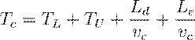
Donde:
· : Tiempo de carga en la estación de origen (min).
· : Tiempo de descarga en la estación de destino (min).
· : Distancia recorrida con carga (m o ft).
· : Distancia recorrida en vacío entre entregas (m o ft).
· : Velocidad promedio del vehículo (m/min o ft/min).
La tasa de entregas por hora por vehículo ( ) se ajusta mediante el factor de tráfico ( ), que considera las demoras por interferencia y bloqueo (típicamente 0.85 a 1.0):
Donde es la disponibilidad o factor de fiabilidad del equipo. El número total de vehículos ( ) necesarios para satisfacer una demanda de flujo total ( ) se determina como:
MODELADO DE CONTROL Y PREVENCIÓN DE BLOQUEOS (PETRI NETS)
En sistemas de alta complejidad, la gestión de AGVs asíncronos en trayectorias bidireccionales presenta riesgos de punto muerto (deadlock), donde dos o más vehículos se bloquean mutuamente en una sección del camino.
El modelado mediante Redes de Petri Orientadas a Recursos (ROPN) y Redes de Petri Coloreadas (CROPN) permite analizar formalmente estas condiciones y desarrollar políticas de control que garanticen la vivacidad (liveness) del sistema.
Las estrategias modernas incluyen:
· Evitación de punto muerto en circuitos y ciclos: Algoritmos que aseguran que siempre exista al menos un espacio libre en cualquier circuito cerrado para permitir el avance de los vehículos.
· Enfoque de reserva de ruta: El sistema reserva los nodos y carriles necesarios antes de iniciar el movimiento del vehículo, resolviendo conflictos de precedencia antes de la ejecución física.
· Ruteo de tiempo mínimo: Algoritmos que no solo evitan bloqueos sino que calculan la trayectoria dinámicamente para maximizar el rendimiento global (throughput).
4.4 Mecanismos guiados por riel.
MECANISMOS GUIADOS POR RIEL: SISTEMAS DE TRANSFERENCIA ASINCRÓNICA Y TRANSPORTE DE CARGA PESADA
Los sistemas de vehículos guiados por riel (RGV, por sus siglas en inglés) constituyen la tercera categoría fundamental de los equipos de transporte de materiales en entornos de manufactura automatizada. Estos sistemas se definen técnicamente como vehículos motorizados que son dirigidos y soportados por un sistema de rieles fijos, el cual puede consistir en un solo riel (monorriel) o en dos rieles paralelos.
La distinción arquitectónica primordial entre los RGV y los sistemas de vehículos guiados automáticamente (AGV) radica en la rigidez de su trayectoria; mientras que los AGV poseen rutas no obstructivas y flexibles, los RGV dependen de una infraestructura física permanente que delimita su movimiento, pero que a su vez les otorga una estabilidad mecánica superior para el manejo de subensambles masivos.
En la jerarquía de la flexibilidad de transporte, los mecanismos guiados por riel se posicionan en un punto intermedio: son intrínsecamente más versátiles que los transportadores convencionales de ruta única debido a su capacidad de operación asincrónica y ruteo variable, pero menos flexibles que los AGV debido a la restricción física del riel.
CLASIFICACIÓN ESTRUCTURAL: MONORRIELES Y SISTEMAS DE PISO
La tipología de los mecanismos guiados por riel se divide según la disposición espacial del sistema de soporte y la ubicación de la carga en relación con la infraestructura de la planta.
· Sistemas de monorriel suspendido: Comúnmente instalados en los techos de fábricas y almacenes, estos sistemas utilizan un solo riel para guiar carros motorizados de los cuales se suspende la carga. Históricamente, sus aplicaciones se remontan a la industria del procesamiento de carne antes de 1900, aunque en la manufactura contemporánea son omnipresentes en el sector automotriz para el transporte de motores y carrocerías a través de las diversas estaciones de montaje.
· Sistemas de rieles paralelos (Fijos al piso): En esta configuración, las vías suelen sobresalir o estar empotradas en el piso de la instalación. Esta arquitectura es preferible para el movimiento de pallets de gran formato o piezas prismáticas que requieren una base de soporte extremadamente rígida para interactuar con centros de maquinado CNC.
· Shuttles guiados por riel: Son unidades de transferencia especializadas, a menudo controladas por controladores lógicos programables (PLC) o control numérico, diseñadas para la distribución programada de piezas en sistemas de producción a menor escala, generalmente alimentando un grupo reducido de tres o cuatro máquinas.
DINÁMICA OPERATIVA Y SUMINISTRO ENERGÉTICO
Una de las ventajas competitivas más significativas de los RGV frente a los sistemas impulsados por baterías es su mecanismo de alimentación eléctrica.
A diferencia de los AGV, que requieren periodos de inactividad de entre 8 y 16 horas para la recarga, los vehículos guiados por riel obtienen su energía de manera continua a través de un riel electrificado (un "tercer riel"), similar a los sistemas de tránsito rápido urbano.
Este suministro ininterrumpido permite que el sistema opere a velocidades de traslación sustancialmente más elevadas que un AGV convencional, optimizando los tiempos de ciclo en líneas de alta cadencia.
Sin embargo, la implementación de rieles electrificados introduce consideraciones de seguridad industrial críticas, como el riesgo de choque eléctrico, que no están presentes en los sistemas autónomos de batería.
Operativamente, los RGV funcionan de manera asincrónica, lo que significa que cada vehículo puede moverse independientemente de los demás, permitiendo variaciones en las rutas mediante el uso de interruptores de vía, plataformas giratorias (turntables) y secciones de vía especializadas que facilitan el flujo de diferentes cargas hacia destinos disímiles.
COMPARATIVA TÉCNICA DE SISTEMAS DE TRANSPORTE VEHICULAR
Para la selección de un sistema de transporte en un Centro de Manufactura Flexible (FMS), es imperativo evaluar las capacidades de carga y la flexibilidad de ruteo.
La siguiente tabla resume las diferencias operativas entre los mecanismos guiados por riel y sus contrapartes:
|
Atributo Técnico |
Mecanismos guiados por riel (RGV) |
Vehículos guiados automáticamente (AGV) |
|
Fuente de Energía |
Riel electrificado (continuo) |
Baterías a bordo (requiere carga) |
|
Ruteo |
Flexible mediante switches físicos |
Altamente flexible (vía software) |
|
Velocidad |
Alta (limitada por la vía) |
Moderada (limitada por seguridad) |
|
Instalación |
Costosa y permanente |
Moderada y adaptable |
|
Uso Típico |
Cargas pesadas / Líneas fijas |
Lotes variables / WIP flexible |
MODELADO MATEMÁTICO DEL CICLO DE ENTREGA Y CAPACIDAD DEL SISTEMA
Al ser los RGV sistemas de transporte basados en vehículos, su análisis cuantitativo se rige por los modelos de flujo vehicular.
El tiempo de ciclo ideal para una entrega ( ) se modela ignorando los efectos de aceleración y desaceleración, asumiendo una velocidad constante ( ) proporcionada por el motor de c.d. del vehículo:
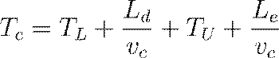
Donde:
· : Tiempo de carga en la estación de origen (min).
· : Distancia de viaje con carga (m o ft).
· : Tiempo de descarga en el destino (min).
· : Distancia de viaje en vacío para el siguiente ciclo.
La capacidad operativa del sistema, expresada en la tasa de
entregas por vehículo por hora (
), debe ajustarse por la disponibilidad del equipo ( ) y el factor de tráfico (
), el cual es crítico en sistemas de rieles donde los vehículos no pueden
rebasarse entre sí:
) y el factor de tráfico (
), el cual es crítico en sistemas de rieles donde los vehículos no pueden
rebasarse entre sí:
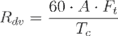
Para determinar el número total de vehículos ( ) necesarios para satisfacer un requerimiento de flujo total de entregas ( ) en la planta, se emplea la relación:
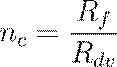
INTEGRACIÓN Y CONSIDERACIONES DE DISEÑO
La integración de los RGV en sistemas de manufactura compleja, como los centros de maquinado para partes prismáticas, requiere que el vehículo no solo transporte el material, sino que interactúe con mecanismos de intercambio de pallets (shuttle mechanisms).
En configuraciones avanzadas, el propio RGV puede estar equipado con transportadores de pallets rotatorios o en tándem, actuando como una estación de preparación móvil que intercambia piezas directamente con la mesa de trabajo de la máquina herramienta.
Desde la perspectiva del diseño para la manufactura, el uso de RGV impone una restricción de diseño lineal o segmentada en la planta.
Si bien la flexibilidad de ruteo es posible, las curvas cerradas son mecánicamente costosas, lo que favorece los layouts de tipo "espina dorsal" o trayectorias de rieles paralelos donde el vehículo sirve a dos filas enfrentadas de estaciones de trabajo.
Esta configuración minimiza el "backlash" o juego mecánico y maximiza la precisión en el acoplamiento de la carga en las estaciones de descarga.
4.5 Sistemas manuales.
SISTEMAS MANUALES: EL PAPEL DEL FACTOR HUMANO EN LA MANUFACTURA CONTEMPORÁNEA
En el ecosistema de la manufactura moderna, la persistencia de los sistemas manuales no debe interpretarse como una obsolescencia tecnológica, sino como una respuesta estratégica a la complejidad inherente de ciertas operaciones que aún superan las capacidades de la automatización rígida o flexible.
Un sistema de trabajo manual se define técnicamente como aquel en el que uno o más trabajadores ejecutan tareas de procesamiento o ensamble sin el auxilio de herramientas motorizadas, o bien utilizando herramientas manuales o portátiles motorizadas de baja complejidad.
En este paradigma, el ser humano no solo actúa como el efector final que interactúa físicamente con la pieza de trabajo, sino que también cumple funciones cognitivas de control, supervisión y toma de decisiones en tiempo real, lo que le otorga una adaptabilidad inalcanzable para los sistemas robóticos convencionales en entornos no estructurados.
La integración de estos sistemas en la planta se fundamenta en la capacidad única del trabajador para sentir estímulos inesperados, desarrollar soluciones creativas ante problemas geométricos o de ajuste, y aprender de la experiencia acumulada durante los ciclos de producción.
RACIONALIDAD TÉCNICA Y LIMITACIONES DE LA AUTOMATIZACIÓN
La decisión de implementar sistemas manuales en lugar de celdas automatizadas suele estar dictada por factores tanto económicos como de viabilidad tecnológica.
Existen tareas que, debido a problemas de acceso físico a la ubicación del trabajo, requerimientos extremos de destreza manual o la necesidad de una coordinación mano-ojo altamente sofisticada, resultan prohibitivas de automatizar con el estado actual de la técnica.
En industrias como la aeroespacial o la de bienes de capital personalizados, donde los volúmenes de producción son bajos y los diseños son únicos (variedad de producto "dura"), la versatilidad del operario humano supera la inversión de capital que requeriría la reprogramación y retooling de un sistema robótico.
A continuación se presentan las situaciones primordiales en las que el trabajo manual es preferido sobre la automatización:
· Complejidad tecnológica insuperable: Tareas que involucran materiales flexibles o frágiles, o que requieren juicios cualitativos de inspección basados en la percepción sensorial.
· Ciclos de vida de producto reducidos: En mercados con ventanas de oportunidad estrechas, el tiempo necesario para diseñar y fabricar herramental automatizado impediría un lanzamiento oportuno.
· Fluctuaciones dinámicas en la demanda: Los sistemas manuales permiten ajustar la capacidad de producción mediante la adición o reducción de mano de obra, evitando los altos costos fijos de un sistema automatizado subutilizado.
· Mitigación del riesgo de falla de producto: Para productos nuevos con éxito de mercado incierto, la manufactura manual minimiza el riesgo de perder inversiones masivas en automatización si el producto fracasa.
· Limitaciones de capital inicial: Muchas organizaciones recurren al trabajo manual debido a la incapacidad de financiar la adquisición de maquinaria CNC o sistemas integrados de manufactura.
METODOLOGÍAS DE TRABAJO: DIVISIÓN DEL TRABAJO Y ERGONOMÍA
La eficiencia de los sistemas manuales modernos se sustenta en el principio de la "división del trabajo" o especialización del labor, introducido teóricamente por Adam Smith y perfeccionado por la administración científica de Taylor.
Este principio postula que al subdividir un contenido de trabajo complejo en tareas mínimas racionales y asignar cada una a un especialista, se incrementa drásticamente la destreza del trabajador y se eliminan los tiempos perdidos por cambios de herramienta o posición.
En una línea de ensamble manual, el producto fluye secuencialmente a través de estaciones donde operarios situados en posiciones fijas agregan valor de forma progresiva.
La configuración física de estas estaciones puede permitir que el trabajador opere de pie (ideal para productos grandes como automóviles) o sentado (para tareas de precisión en electrónica), buscando siempre minimizar la fatiga y optimizar la economía de movimientos.
|
Atributo de Comparación |
Humano (Sistema Manual) |
Máquina (Sistema Automatizado) |
|
Respuesta a estímulos |
Capacidad de reaccionar ante lo inesperado. |
Realiza tareas repetitivas con consistencia. |
|
Toma de decisiones |
Basada en datos incompletos y juicios. |
Rápida en decisiones rutinarias programadas. |
|
Adaptabilidad |
Alta flexibilidad ante cambios de diseño. |
Almacena y recupera grandes volúmenes de datos. |
|
Aplicación de fuerza |
Limitada y sujeta a fatiga. |
Capaz de aplicar altas fuerzas y potencia. |
MODELADO CINEMÁTICO Y MÉTRICAS DE DESEMPEÑO
Para el diseño de sistemas manuales eficaces, la ingeniería de manufactura emplea modelos cuantitativos que permiten estimar la capacidad productiva y los requerimientos de personal.
El parámetro fundamental es el contenido total de trabajo ( ), que representa la suma de los tiempos de todos los elementos mínimos de trabajo racional necesarios para completar una unidad.
La capacidad del sistema está limitada por el tiempo de ciclo ( ), el cual debe considerar tanto el tiempo de servicio real en la estación ( ) como el tiempo de reubicación ( ) necesario para que el trabajador o la pieza se posicionen para el siguiente ciclo.
La relación matemática para determinar el número teórico mínimo de trabajadores ( ) para una tasa de producción requerida ( ) se modela como:
Donde representa la eficiencia de la línea o proporción de tiempo de funcionamiento.
Sin embargo, en la práctica, este valor debe ajustarse por la eficiencia del balanceo de línea ( ), que cuantifica el tiempo ocioso derivado de la imposibilidad de distribuir el trabajo equitativamente entre las estaciones.
Así, la cantidad real de trabajadores ( ) se expresa como:
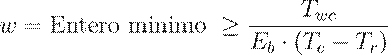
Un factor crítico en este modelado es la gestión del ritmo (pacing). Los sistemas manuales pueden operar bajo un ritmo rígido, dictado por un transportador sincrónico, o con margen de tolerancia, permitiendo colas o búferes entre estaciones que absorben la variabilidad intrínseca del rendimiento humano.
La eficiencia de estos sistemas se ve penalizada stocásticamente por fenómenos de "hambre" (starving), cuando un trabajador no tiene piezas para procesar, o "bloqueo" (blocking), cuando no puede liberar su pieza a la siguiente estación.
4.6 Sistemas para almacenaje.
SISTEMAS DE ALMACENAJE: ARQUITECTURA, GESTIÓN Y OPTIMIZACIÓN DE INVENTARIOS
La función primordial de un sistema de almacenamiento de materiales consiste en retener inventarios durante periodos de tiempo determinados y facilitar el acceso eficiente a dichos recursos cuando los procesos de manufactura o distribución lo requieran.
En la ingeniería de manufactura, el almacenamiento no se limita a un espacio estático de depósito, sino que se integra dinámicamente con los sistemas de transporte para asegurar la continuidad operativa de las estaciones de trabajo, evitando fenómenos de "inanición" (starving) o bloqueos por saturación.
Históricamente, muchas instalaciones han operado bajo esquemas manuales ineficientes en términos de utilización de suelo y recursos humanos; no obstante, la convergencia con la automatización ha permitido el desarrollo de sistemas capaces de maximizar la densidad volumétrica y el rendimiento transaccional, integrando tecnologías de identificación automática (AIDC) para un control de inventarios en tiempo real.
La selección de una tecnología específica de almacenamiento debe basarse en un análisis riguroso de la variedad de materiales, que en una planta típica abarcan desde materias primas y componentes comprados hasta productos terminados y registros de planta.
MÉTRICAS DE DESEMPEÑO EN SISTEMAS DE ALMACENAMIENTO
Para justificar la inversión de capital y los gastos operativos en sistemas de almacenamiento, la ingeniería industrial emplea diversas medidas de desempeño que permiten evaluar la eficacia sistémica.
Estas métricas no son independientes entre sí, y a menudo presentan relaciones de compromiso (trade-offs) que el diseñador debe optimizar.
· Capacidad de Almacenamiento: Puede medirse como el espacio volumétrico total disponible o, de manera más común en sistemas unitarios, como el número total de compartimentos disponibles para alojar unidades de carga (tarimas o contenedores).
· Densidad de Almacenamiento: Se define como la relación entre el volumen disponible para el almacenamiento real y el volumen total de la instalación. Un diseño eficiente busca minimizar el espacio desperdiciado en pasillos y alturas excesivas.
· Accesibilidad: Es la capacidad de acceder a cualquier artículo o unidad de carga almacenada. Existe una relación inversa entre densidad y accesibilidad: a mayor densidad (como en el almacenamiento en bloque), menor es la facilidad para extraer una unidad de carga específica ubicada en el interior.
· Rendimiento (Throughput): Representa la tasa horaria a la que el sistema puede recibir e introducir cargas en el almacenamiento, o recuperar y entregar cargas a la estación de salida.
· Utilización y Disponibilidad: La utilización es la proporción de tiempo que el sistema realiza operaciones de almacenamiento y recuperación (S/R) respecto al tiempo disponible. La disponibilidad mide la fiabilidad del equipo y su capacidad para operar durante las horas programadas.
ESTRATEGIAS DE UBICACIÓN Y GESTIÓN DE INVENTARIOS
La organización interna del stock se rige por estrategias de ubicación que impactan directamente en el rendimiento transaccional.
El concepto de Unidad de Mantenimiento de Existencias (SKU) es fundamental para identificar de forma única cada tipo de artículo almacenado.
1. Almacenamiento Aleatorio (Randomized Storage): Los artículos entrantes se depositan en el lugar más cercano disponible. Esta estrategia maximiza la utilización del espacio, ya que los niveles de inventario de diferentes SKU se promedian en el sistema.
2. Almacenamiento Dedicado (Dedicated Storage): Cada SKU tiene asignada una ubicación específica. Aunque requiere más espacio total para acomodar los niveles máximos de inventario de cada SKU, permite mayores tasas de rendimiento si los artículos de alta rotación se ubican cerca de los puntos de entrada y salida.
3. Ubicación por Clases (Class-based): Es un híbrido donde el sistema se divide en zonas según el nivel de actividad (rotación), y dentro de cada zona se utiliza una ubicación aleatoria para reducir el número total de compartimentos requeridos.
CLASIFICACIÓN DE LOS SISTEMAS DE ALMACENAMIENTO
Los sistemas se dividen en dos grandes categorías: métodos convencionales y sistemas automatizados. Los métodos convencionales son generalmente intensivos en mano de obra y requieren el uso de vehículos industriales como montacargas.
|
Método de Almacenamiento |
Ventajas Principales |
Aplicaciones Típicas |
|
Bloque (Bulk Storage) |
Densidad máxima, bajo costo. |
Stock de baja rotación, cargas grandes. |
|
Estanterías (Rack Systems) |
Buena densidad y accesibilidad. |
Cargas paletizadas en almacenes. |
|
Repisas y Cajones |
Organización de piezas pequeñas. |
Herramental, refacciones. |
|
AS/RS y Carruseles |
Alto rendimiento, control digital. |
WIP, distribución de alta velocidad. |
SISTEMAS AUTOMATIZADOS DE ALMACENAMIENTO Y RECUPERACIÓN (AS/RS)
Un AS/RS consiste en una estructura de racks atendida por una máquina de almacenamiento y recuperación (S/R) que realiza movimientos lineales en los ejes bajo un grado definido de automatización.
Estos sistemas pueden operar sin intervención humana, integrándose directamente con el sistema de información de la planta para el seguimiento preciso del inventario.
Los tipos principales de AS/RS incluyen:
· Unit Load AS/RS: Diseñado para manejar cargas masivas sobre palés estándar.
· Miniload AS/RS: Optimizado para el manejo de piezas pequeñas en bandejas o contenedores.
· Deep-lane AS/RS: Sistema de alta densidad donde las cargas se almacenan en racks profundos con flujo por gravedad o mecanismos de transferencia.
· Módulo de Elevación Vertical (VLM): Estructura vertical donde un extractor entrega bandejas a una estación de trabajo a nivel del suelo, ahorrando una superficie considerable de planta.
ANÁLISIS CUANTITATIVO DE SISTEMAS DE ALMACENAMIENTO
El dimensionamiento técnico de un AS/RS requiere el cálculo de la capacidad y el tiempo de ciclo. Para una estructura de una sola fila, la capacidad total de almacenamiento se expresa como:
Donde es el número de compartimentos horizontales y el número de compartimentos verticales. Las dimensiones físicas de la estructura ( ) se calculan añadiendo tolerancias ( ) a las dimensiones unitarias de la carga ( ) para permitir el movimiento libre del palé y considerar los soportes estructurales:
En cuanto al rendimiento, el tiempo de ciclo para una orden simple ( ) asume que la máquina S/R viaja a la ubicación media del rack y regresa:
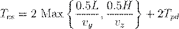
Donde y son las velocidades horizontal y vertical, respectivamente, y es el tiempo de recogida y depósito (P&D).
Para ciclos de comando dual ( ), que incrementan la eficiencia al realizar un almacenamiento y una recuperación en un solo viaje, la ecuación se modela como:
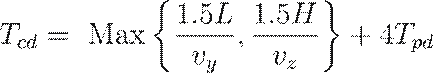
SISTEMAS DE ALMACENAMIENTO POR CARRUSELES
Un carrusel consiste en una serie de canastas suspendidas de un transportador de cadena que gira sobre un riel ovalado para entregar los artículos a una estación de carga y descarga.
Estos sistemas son valorados por su alta fiabilidad y rendimiento en operaciones de "recogida y carga" de componentes electrónicos y herramental.
La circunferencia del carrusel ( ) se determina por su longitud ( ) y ancho ( ):
Para un sistema con velocidad constante y almacenamiento aleatorio, el tiempo medio de ciclo ( ) en un carrusel bidireccional se estima considerando que la distancia media de viaje es :
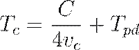
Siendo el tiempo manual o automatizado para extraer la pieza en la estación de operación.
4.7 Sistemas de simulación en microcomputadoras.
SISTEMAS DE SIMULACIÓN EN MICROCOMPUTADORAS: MODELADO DINÁMICO Y ANÁLISIS ESTOCÁSTICO
La simulación por computadora se define técnica y formalmente como el proceso de diseñar y operar un modelo matemático-lógico de un sistema físico para realizar experimentos numéricos que permitan describir, predecir y optimizar su comportamiento bajo diversas condiciones operativas.
En el contexto de la ingeniería de manufactura contemporánea, la simulación se ha consolidado como la herramienta analítica de mayor frecuencia de uso, permitiendo a los ingenieros evaluar la factibilidad de procesos antes de realizar inversiones masivas en hardware o interrumpir la producción existente.
El advenimiento de microcomputadoras de alto rendimiento ha democratizado el acceso a estas técnicas, migrando de entornos de mainframe con tiempos de respuesta prolongados hacia estaciones de trabajo individuales y computadoras personales (PC) que ofrecen una interactividad sin precedentes mediante interfaces gráficas y animación en tiempo real.
Esta capacidad de "mimetizar" el comportamiento de un sistema permite no solo la identificación proactiva de cuellos de botella y conflictos de recursos, sino también la exploración de escenarios "qué pasaría si" (what-if) que son fundamentales para la toma de decisiones estratégicas y tácticas en entornos de alta incertidumbre.
TIPOLOGÍAS DE SIMULACIÓN Y ENTORNOS DE EJECUCIÓN
La simulación de sistemas de manufactura se articula primordialmente a través de tres metodologías fundamentales, dependiendo de la naturaleza de los cambios de estado en el sistema:
· Simulación de eventos discretos (DES): Es el paradigma predominante en manufactura, donde el estado del sistema cambia únicamente en puntos discretos en el tiempo como consecuencia de la ocurrencia de eventos específicos (llegada de una pieza, fin de un maquinado o falla de un robot).
· Simulación continua: Emplea ecuaciones diferenciales para modelar sistemas donde el estado varía de forma ininterrumpida respecto al tiempo, siendo común en industrias de proceso como la química o petroquímica.
· Simulación híbrida: Integra elementos discretos y continuos para representar sistemas complejos donde las transformaciones físicas continuas son activadas o interrumpidas por eventos discretos.
La implementación en microcomputadoras se realiza mediante lenguajes de programación de propósito general (C, FORTRAN) o a través de lenguajes de simulación especializados como SIMAN, SLAM II, SIMSCRIPT, GPSS y MAP/1, los cuales proporcionan macros y estructuras predefinidas para modelar recursos, colas y transportadores de forma eficiente.
ARQUITECTURA DEL PROCESO DE DESARROLLO DE UNA SIMULACIÓN
El desarrollo de un estudio de simulación riguroso a nivel de ingeniería no es una tarea meramente computacional, sino un proceso sistémico que sigue una serie de fases lógicas obligatorias para garantizar la validez del modelo resultante.
De acuerdo con la Sociedad de Ingenieros de Manufactura (SME), el procedimiento estándar consta de los siguientes pasos:
- Formulación del problema: Definición exhaustiva del sistema a estudiar y los objetivos analíticos.
- Construcción del modelo: Abstracción del sistema real en relaciones matemático-lógicas.
- Adquisición de datos: Identificación y recolección de parámetros operativos (tiempos de ciclo, tasas de falla, distribuciones de demanda).
- Traducción del modelo: Codificación en un software o lenguaje de simulación.
- Verificación: Aseguramiento de que el programa procesa la lógica según lo previsto (depuración de código).
- Validación: Establecimiento de la precisión o correspondencia estadística entre el simulador y el sistema físico real.
- Planeación estratégica y táctica: Definición de las condiciones experimentales para las ejecuciones.
- Experimentación: Ejecución del modelo para obtener vectores de salida.
- Análisis e interpretación: Evaluación estadística de las diferencias de rendimiento y generación de recomendaciones.
- Implementación y documentación: Registro del modelo y uso de los resultados para la toma de decisiones finales.
MODELADO MATEMÁTICO DE PROCESOS ESTOCÁSTICOS EN SIMULACIÓN
En el núcleo de los sistemas de simulación reside el tratamiento de la variabilidad. Un modelo típico de una sola estación de trabajo con llegadas probabilísticas se rige por procesos de Poisson y tiempos de servicio exponenciales.
Si consideramos como
el tiempo promedio entre llegadas y como
el tiempo promedio de maquinado, la utilización del sistema ( ) y el número esperado de piezas en el sistema (
) según la ley de Little pueden modelarse como:
) y el número esperado de piezas en el sistema (
) según la ley de Little pueden modelarse como:
Donde representa el número de servidores y el valor esperado del tiempo de procesamiento.
En una simulación de eventos discretos, el reloj del simulador no avanza de forma uniforme, sino que "salta" al tiempo del próximo evento programado ( ), actualizando las variables de estado y recolectando estadísticas en cada transición.
|
Parámetro de Desempeño |
Indicador en Simulación |
Aplicación Técnica |
|
Throughput |
Tasa de producción (piezas/hora) |
Validación de cumplimiento de demanda anual. |
|
Utilización |
Porcentaje de tiempo activo de recursos |
Identificación de máquinas cuello de botella. |
|
WIP |
Inventario en proceso (unidades) |
Evaluación de costos financieros y espacio en piso. |
|
MTBF / MTTR |
Confiabilidad y mantenibilidad |
Impacto de las paradas no programadas en la eficiencia global. |
APLICACIONES AVANZADAS: AGVS, ROBÓTICA Y FMS
La simulación en microcomputadoras es particularmente crítica en el diseño de Sistemas de Manufactura Flexible (FMS) y sistemas de transporte automatizado.
Para los Vehículos Guiados Automáticamente (AGV), la simulación permite validar algoritmos de despacho y prevención de colisiones en redes de tráfico complejas, donde el tiempo de ciclo ideal ( ) para una flota se calcula considerando las distancias cargado ( ) y vacío ( ) a una velocidad constante ( ):
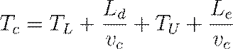
Donde y son los tiempos de carga y descarga respectivamente. Mediante el uso de simuladores, los ingenieros pueden determinar el número óptimo de vehículos ( ) necesarios para satisfacer una demanda de flujo ( ) sin generar congestión excesiva en el sistema.
Asimismo, en celdas robóticas, el modelado permite verificar la cinemática del brazo y asegurar trayectorias libres de colisiones antes de cargar el programa en el controlador físico del robot.
La integración de estos modelos con bases de datos industriales facilita lo que se denomina "simulación automatizada", donde el modelo se actualiza dinámicamente con los datos de producción reales del piso de taller para realizar predicciones de corto plazo o reprogramación inmediata (rescheduling).
4.8 Sistemas para el diseño.
SISTEMAS PARA EL DISEÑO
En la arquitectura de los sistemas de producción modernos, los sistemas para el diseño representan el nexo fundamental entre la conceptualización creativa y la materialización física del producto.
Técnicamente denominados como sistemas de Diseño Asistido por Computadora (CAD) e Ingeniería Asistida por Computadora (CAE), estas herramientas constituyen un ecosistema digital que permite la síntesis, el análisis y la optimización de configuraciones geométricas y funcionales antes de que cualquier recurso material sea comprometido en la fábrica.
El propósito primordial de estos sistemas es extender las capacidades cognitivas del ingeniero, facilitando la exploración de alternativas de diseño complejas mediante el uso de modelos matemáticos robustos y bases de datos integradas que aseguran la consistencia de la información a lo largo de todo el ciclo de vida del producto. En un entorno globalizado y altamente competitivo, la eficacia de los sistemas de diseño no se mide únicamente por la estética o la funcionalidad intrínseca de la parte, sino por su capacidad de integración con los sistemas de manufactura (CAM) y planeación (CAPP), eliminando el tradicional "muro" de incomunicación entre los departamentos de diseño y producción.
EL PROCESO DE DISEÑO Y LA RACIONALIDAD DE SU AUTOMATIZACIÓN
El proceso de diseño ingenieril se caracteriza por ser una actividad iterativa y multidimensional que evoluciona a través de fases críticas de abstracción y refinamiento técnico.
Tradicionalmente, según los modelos de diseño establecidos, como el de Shigley, este proceso comprende seis fases distintivas: el reconocimiento de la necesidad, la definición del problema, la síntesis, el análisis y la optimización, la evaluación y, finalmente, la presentación o documentación. La implementación de sistemas CAD permite que estas fases se ejecuten con una precisión y velocidad inalcanzables por métodos manuales, transformando la documentación técnica de simples representaciones estáticas en modelos paramétricos dinámicos.
La justificación para la adopción de estos sistemas se fundamenta en varios pilares estratégicos que impactan directamente en la rentabilidad de la organización:
· Incremento de la productividad del diseñador: El software reduce el tiempo dedicado a tareas repetitivas y cálculos tediosos, permitiendo que el ingeniero se concentre en la conceptualización intelectual y en la toma de decisiones basada en juicios de valor.
· Mejora drástica de la calidad del diseño: Los sistemas para el diseño permiten un análisis exhaustivo de un mayor número de alternativas de diseño, lo que minimiza la probabilidad de errores catastróficos y optimiza el desempeño funcional del producto final.
· Estandarización y documentación: La creación de una base de datos centralizada asegura que todos los dibujos, listas de materiales y especificaciones técnicas sigan normas uniformes (como ISO o ANSI), lo que facilita enormemente la comunicación con proveedores y el servicio de campo.
· Reducción del "Time-to-Market": La capacidad de realizar prototipado virtual y simulaciones dinámicas acorta significativamente el ciclo de desarrollo, permitiendo una respuesta más ágil a las demandas fluctuantes del mercado.
MODELADO GEOMÉTRICO Y ESTRUCTURAS DE DATOS
El corazón de un sistema de diseño es el modelo geométrico, que se define como una descripción matemática exhaustiva del volumen y la topología de un objeto contenida en la memoria de la computadora.
Históricamente, el modelado evolucionó desde representaciones de "alambre" (wireframe) en dos dimensiones hacia el modelado de sólidos tridimensionales, el cual es capaz de proporcionar una representación exacta y sin ambigüedades de la geometría de la pieza.
En la ingeniería moderna, el modelado de sólidos se divide primordialmente en dos esquemas: la Geometría Sólida Constructiva (CSG) y la Representación de Fronteras (B-Rep).
Mientras que el CSG construye objetos complejos mediante operaciones booleanas (unión, sustracción e intersección) de primitivas geométricas simples como esferas, cubos y cilindros, el esquema B-Rep define al sólido a través de su envolvente de superficies, aristas y vértices.
Para realizar cálculos de propiedades de masa en un modelo sólido, se emplean algoritmos de integración volumétrica. Por ejemplo, el volumen ( ) de un componente cilíndrico elemental, fundamental en el modelado de partes rotatorias, se expresa como:
Donde  representa
el radio y la
longitud axial. A partir de este valor, la masa (
) se determina mediante la densidad (
representa
el radio y la
longitud axial. A partir de este valor, la masa (
) se determina mediante la densidad ( ) del material asignado en la base de datos:
) del material asignado en la base de datos:
|
Característica |
Diseño Convencional (Manual) |
Sistemas de Diseño (CAD/CAE) |
|
Representación |
Dibujos estáticos en papel |
Modelos 3D paramétricos y dinámicos |
|
Análisis |
Cálculos manuales simplificados |
Análisis de Elemento Finito (FEA) integrado |
|
Prototipado |
Modelos físicos costosos y lentos |
Prototipos virtuales y rápidos (SLA, FDM) |
|
Modificaciones |
Redibujado total o parcial |
Actualización automática de geometría y planos |
INGENIERÍA ASISTIDA POR COMPUTADORA (CAE) Y ANÁLISIS FUNCIONAL
La trascendencia de los sistemas de diseño reside en su capacidad para actuar como una plataforma de análisis ingenieril (CAE), permitiendo la validación de las propiedades físicas y el comportamiento dinámico de los componentes antes de su fabricación.
El análisis de elemento finito (FEA) es quizás la herramienta más potente integrada en estos sistemas; consiste en subdividir un objeto complejo en una red de nodos y elementos simples (malla) para resolver ecuaciones diferenciales que describen tensiones, transferencias de calor y flujos de fluidos.
Este método numérico permite obtener soluciones aproximadas de problemas físicos extremadamante complejos que serían imposibles de resolver de forma analítica cerrada.
En un análisis estructural estático, la relación fundamental se modela mediante la ecuación de rigidez:
Donde:
· es la matriz de rigidez global de la estructura.
· es el vector de desplazamientos nodales desconocidos.
· es el vector de cargas externas aplicadas.
Además del FEA, los sistemas de diseño contemporáneos incorporan capacidades de:
· Análisis cinemático y dinámico: Simulación de mecanismos en movimiento para detectar interferencias, colisiones y verificar envolventes de operación.
· Verificación de interferencias: Algoritmos que examinan modelos de ensambles múltiples para asegurar que los componentes encajen perfectamente sin solapamientos espaciales.
· Análisis de tolerancias: Evaluación estadística de cómo las variaciones dimensionales individuales afectan el funcionamiento y la ensamblabilidad global del producto.
INTEGRACIÓN Y DISEÑO PARA LA MANUFACTURABILIDAD (DFM)
El paradigma actual de la manufactura integrada por computadora (CIM) exige que los sistemas de diseño no sean islas de automatización, sino componentes de una estrategia de Ingeniería Concurrente.
El Diseño para la Manufactura (DFM) y el Diseño para el Ensamble (DFA) son metodologías integradas en el software de diseño que guían al ingeniero hacia soluciones que minimizan la cantidad de partes, utilizan componentes estándar y facilitan el acceso para herramientas de montaje y mantenimiento.
Mediante la integración de estas reglas de diseño, los sistemas advierten proactivamente sobre geometrías costosas de maquinar o configuraciones que comprometen la integridad estructural durante el proceso de producción.
Finalmente, la salida de estos sistemas ya no es sólo un dibujo, sino un conjunto de datos digitales que alimentan directamente a:
1. Sistemas de Manufactura Asistida (CAM): Generación automática de trayectorias de herramientas y programas de control numérico (G-codes).
2. Sistemas de Planeación de Procesos (CAPP): Determinación de secuencias operativas óptimas basadas en las características (features) del modelo sólido.
3. Tecnologías de Prototipado Rápido: Fabricación directa capa por capa mediante técnicas como la estereolitografía o el modelado por deposición fundida (FDM), utilizando el archivo de salida STL generado por el sistema de diseño.
4.9 Sistemas de control.
SISTEMAS DE CONTROL: ARQUITECTURAS DE AUTOMATIZACIÓN Y PROCESOS INDUSTRIALES
El control industrial se define técnicamente como la regulación automática de las operaciones unitarias y sus equipos asociados, así como la integración y coordinación de dichas operaciones dentro de un sistema de producción a gran escala.
Un sistema de control robusto es el núcleo de cualquier proceso de automatización, actuando como el mecanismo que traduce un programa de instrucciones en acciones físicas medibles y corregibles.
En el contexto de la ingeniería avanzada, estos sistemas no solo gestionan variables individuales, sino que orquestan la interacción compleja entre máquinas, sistemas de manejo de materiales y personal humano, buscando maximizar la eficiencia y la calidad intrínseca del producto.
La transición de la lógica cableada tradicional hacia los sistemas digitales basados en microprocesadores ha permitido una flexibilidad sin precedentes, donde la funcionalidad del sistema está determinada primordialmente por el software, facilitando la reconfiguración rápida ante cambios en el diseño o en la demanda del mercado.
ELEMENTOS FUNDAMENTALES DE UN SISTEMA AUTOMATIZADO
Todo sistema que califique como automatizado debe integrar tres componentes básicos que interactúan de forma sinérgica para cumplir una tarea específica sin asistencia humana directa,,:
· Energía: Requerida para impulsar el proceso mismo y para operar los elementos del sistema de control.
· Programa de instrucciones: El conjunto de comandos detallados que dirigen los pasos del ciclo de trabajo.
· Sistema de control: El hardware y software encargados de ejecutar las instrucciones y realizar los ajustes necesarios.
La complejidad de los programas de ciclo de trabajo varía significativamente, clasificándose en niveles que van desde el control de punto de ajuste (donde el parámetro es constante) hasta programas inteligentes que exhiben capacidades cognitivas y de aprendizaje.
CLASIFICACIÓN DE LOS SISTEMAS DE CONTROL DE MOVIMIENTO
En la ingeniería de manufactura, el control de posición y trayectoria se divide fundamentalmente en dos paradigmas arquitectónicos basados en la presencia o ausencia de retroalimentación sensorial,,:
1. Sistemas de lazo abierto (Open-loop): Operan sin verificar si el estado final alcanzado es idéntico al valor deseado. Estos sistemas dependen de la alta fiabilidad de sus actuadores (frecuentemente motores paso a paso) y de un modelo exacto de la respuesta del sistema. Son preferibles cuando las fuerzas de resistencia son mínimas o constantes.
2. Sistemas de lazo cerrado (Closed-loop): Utilizan sensores de retroalimentación para comparar continuamente la variable de salida con el parámetro de entrada. Cualquier diferencia, denominada señal de error, se utiliza para dirigir el sistema hacia la convergencia con el valor de consigna. Estos sistemas, también llamados servosistemas, son esenciales en procesos donde se requiere alta precisión bajo condiciones de carga variables.
La dinámica de estos sistemas puede modelarse vectorialmente, donde la salida se define como una función del estado de las entradas , considerando el tiempo de cómputo del controlador:
Donde el vector de entrada se compone de los comandos ( ), la retroalimentación ( ) y los datos almacenados en memoria ( ):
CONTROL CONTINUO Y LAZOS DE CONTROL PID
El control de procesos continuos busca mantener una variable de salida en un nivel específico a pesar de las perturbaciones externas.
El método más sofisticado y ampliamente utilizado para este fin es el control Proporcional-Integral-Derivativo (PID). Este algoritmo evalúa el error del sistema de tres maneras complementarias:
· Acción Proporcional ( ): Produce una respuesta correctiva proporcional a la magnitud actual del error.
· Acción Integral ( ): Responde a la acumulación histórica del error en el tiempo, eliminando el error de estado estable u offset.
· Acción Derivativa ( ): Actúa sobre la velocidad de cambio del error, anticipando desviaciones futuras y proporcionando amortiguamiento al sistema.
La ecuación analítica que define la señal de salida de un controlador PID se expresa como:
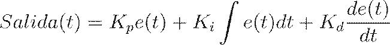
|
Parámetro |
Definición Técnica |
Función en el Lazo |
|
Set-point (SP) |
Valor de referencia o deseado. |
Determina el objetivo del control. |
|
Process Variable (PV) |
Valor medido de la salida real. |
Proporciona retroalimentación del proceso. |
|
Error (e) |
Diferencia algebraica entre SP y PV. |
Es la base de la acción correctiva. |
|
Control Variable (CV) |
Señal enviada al actuador. |
Ejecuta la modificación física del sistema. |
SISTEMAS DE CONTROL DISCRETO
A diferencia del control continuo, el control discreto gestiona parámetros y variables que cambian en momentos específicos y adoptan valores finitos, generalmente binarios (encendido/apagado, abierto/cerrado).
Este tipo de control se subdivide en dos categorías operativas:
· Control Lógico: Se ocupa de cambios impulsados por eventos (event-driven). La salida en cualquier momento está determinada por la combinación actual de las entradas, sin considerar el tiempo.
· Control de Secuencia: Se encarga de cambios impulsados por el tiempo (time-driven). Utiliza dispositivos de temporización internos para iniciar cambios en las variables de salida según una cadencia preestablecida.
JERARQUÍAS Y NIVELES DE AUTOMATIZACIÓN
La integración de los sistemas de control en una planta moderna se organiza en una estructura jerárquica de cinco niveles, lo que permite reducir la complejidad y distribuir la autoridad de toma de decisiones:
- Nivel de Dispositivo: El nivel más bajo, que incluye actuadores, sensores y otros componentes de hardware que forman los lazos de control individuales.
- Nivel de Máquina: Donde los dispositivos se ensamblan en sistemas individuales como máquinas herramientas CNC, robots industriales y transportadores motorizados.
- Nivel de Celda o Sistema: Un grupo de máquinas que trabajan en coordinación, conectadas por un sistema de manejo de materiales y un controlador de celda.
- Nivel de Planta: Se encarga de la planeación y control de la producción, incluyendo el control de inventarios, programación de órdenes y control de piso de taller (SFC).
- Nivel de Empresa: El nivel corporativo que gestiona las funciones comerciales, el sistema de información corporativo y la planeación estratégica global.
CONTROL ADAPTABLE Y TECNOLOGÍAS EMERGENTES
El control adaptable representa una evolución del control PID, diseñado para manejar procesos cuyo entorno varía con el tiempo o cuyas características no son bien conocidas.
Un sistema adaptable monitorea su propio desempeño y altera sus mecanismos de control para optimizar un índice de rendimiento definido (como costo, velocidad o rendimiento).
Las funciones críticas de un controlador adaptable son tres:
1. Identificación: Determinación del valor actual del índice de desempeño basado en mediciones en tiempo real.
2. Decisión: Algoritmo programado que decide qué cambios realizar para mejorar el desempeño.
3. Modificación: Ejecución de los cambios físicos en los parámetros de entrada o del controlador mediante los actuadores disponibles.
En sistemas distribuidos modernos, el uso de SCADA (Control Supervisorio y Adquisición de Datos) permite la centralización de datos históricos y de alarma, facilitando el control de sitios distribuidos a gran escala mientras los controladores locales gestionan los lazos de tiempo real de forma independiente.
4.10 Requerimientos de comunicación y arquitecturas.
REQUERIMIENTOS DE COMUNICACIÓN Y ARQUITECTURAS EN SISTEMAS INTEGRADOS
La convergencia de las tecnologías de información y los procesos de manufactura ha dado lugar a arquitecturas de control sumamente complejas, donde la eficiencia global del sistema depende intrínsecamente de la capacidad de intercambio de datos en tiempo real.
En un entorno de Manufactura Integrada por Computadora (CIM), la arquitectura del sistema se define como el esquema conceptual que permite que el hardware y el software se comuniquen de manera coherente, estableciendo una estructura física de interconexión e interfaces lógicas estandarizadas.
Esta infraestructura actúa como el "sistema nervioso" de la organización, eliminando las denominadas "islas de automatización" grupos de máquinas automatizadas que trabajan aisladas sin comunicación directa con otros sistemas para transformarlas en un ecosistema integrado donde la información fluye bidireccionalmente desde el nivel de dispositivo hasta el nivel estratégico de la empresa.
ARQUITECTURAS DE CONTROL JERÁRQUICO Y DISTRIBUIDO
El diseño de la mayoría de los sistemas de manufactura modernos se fundamenta en una estructura jerárquica de niveles, diseñada para reducir la complejidad técnica y distribuir la autoridad de toma de decisiones de manera lógica.
Esta aproximación, validada por modelos de referencia como el del Instituto Nacional de Estándares y Tecnología (NIST), organiza el control en cinco estratos diferenciados por su horizonte de planeación y velocidad de respuesta:
1. Nivel de Dispositivo: Constituye la base de la pirámide, donde se sitúan sensores, actuadores y componentes de hardware que forman lazos de control individuales (servomotores, interruptores de límite) con tiempos de respuesta en milisegundos.
2. Nivel de Máquina: En este estrato, los dispositivos se integran en máquinas individuales como centros de maquinado CNC, robots industriales y vehículos guiados (AGV), coordinando pasos secuenciales del programa de instrucciones.
3. Nivel de Celda: Agrupa estaciones de trabajo y máquinas conectadas por un sistema de manejo de materiales común, donde el controlador de celda gestiona la secuenciación de lotes, el despacho de partes y la coordinación asincrónica entre recursos.
4. Nivel de Planta (o Taller): Responsable de la gestión logística y operativa del piso de taller, incluyendo el control de inventarios, la planeación de requerimientos de capacidad y la supervisión de la calidad.
5. Nivel de Empresa: El nivel superior que integra el sistema de información corporativo, gestionando funciones comerciales, mercadotecnia, diseño estratégico y planeación agregada de la producción.
Frente a la rigidez del modelo jerárquico puro, las arquitecturas distribuidas ofrecen una mayor robustez al permitir comunicaciones "punto a punto" entre computadoras de un mismo nivel (peer-to-peer), reduciendo la dependencia crítica de una computadora central host. En estos sistemas, si un nodo superior falla, los controladores locales pueden mantener la operación de segmentos específicos de la planta gracias a su capacidad de procesamiento y almacenamiento local.
TOPOLOGÍAS Y MEDIOS DE TRANSMISIÓN EN REDES INDUSTRIALES
La topología de red define la disposición física y lógica de los nodos y enlaces de comunicación dentro de la instalación. La elección de la topología impacta directamente en la confiabilidad y el costo de instalación de la red industrial:
· Topología de Bus: Todos los nodos se conectan en paralelo a un medio de transmisión común (troncal). Es eficiente en términos de cableado y permite añadir estaciones con facilidad, aunque una rotura en el cable principal puede comprometer múltiples nodos.
· Topología de Anillo: Los dispositivos se conectan formando un lazo cerrado donde la señal se regenera en cada nodo. Utiliza protocolos de paso de token para evitar colisiones, asegurando un acceso determinístico al medio.
· Topología de Estrella: Cada nodo se conecta a un conmutador o hub central. Ofrece alta velocidad y aislamiento de fallas, pero presenta un punto único de falla en el nodo central.
|
Medio de Transmisión |
Ventajas |
Aplicaciones Típicas |
|
Par Trenzado |
Bajo costo, fácil instalación. |
Conexiones de corto alcance, niveles de control. |
|
Cable Coaxial |
Alta inmunidad al ruido, gran ancho de banda. |
Redes de banda ancha (MAP), troncales de fábrica. |
|
Fibra Óptica |
Inmunidad total a interferencia EM, velocidades Gbit/s. |
Entornos de alto ruido eléctrico, enlaces de larga distancia. |
|
Inalámbrica (Wi-Fi) |
Flexibilidad total de movimiento, sin cableado. |
AGVs, terminales portátiles de inventario. |
EL MODELO DE REFERENCIA ISO/OSI
Para garantizar la interoperabilidad en entornos multi-vendedor donde coexisten equipos de diversos fabricantes, la Organización Internacional para la Estandarización (ISO) desarrolló el modelo de Interconexión de Sistemas Abiertos (OSI) de siete capas. Este marco divide el proceso de comunicación en etapas lógicas independientes, permitiendo que cambios en el hardware no afecten las aplicaciones superiores:
1. Física: Especificaciones eléctricas y mecánicas (cables, voltajes, conectores como RS-232).
2. Enlace de Datos: Formateo de paquetes, detección y corrección de errores (tramas, Ethernet).
3. Red: Direccionamiento y enrutamiento de mensajes entre diferentes redes (IP).
4. Transporte: Garantiza la entrega confiable de mensajes de extremo a extremo (TCP).
5. Sesión: Gestión de diálogos y sincronización entre aplicaciones.
6. Presentación: Traducción de sintaxis de datos y encriptación (ASCII vs EBCDIC).
7. Aplicación: Interfaz con el usuario y servicios específicos (transferencia de archivos, correo electrónico, MMS).
PROTOCOLOS INDUSTRIALES: MAP Y TOP
El Protocolo de Automatización de Manufactura (MAP), iniciado por General Motors, es una especificación de red basada en el modelo OSI que utiliza un bus de paso de token de banda ancha para asegurar comunicaciones determinísticas en el ruidoso ambiente de la fábrica.
Su contraparte, el Protocolo Técnico y de Oficina (TOP), diseñado por Boeing, utiliza el método CSMA/CD (Ethernet) para facilitar la integración en entornos administrativos y de diseño.
Ambos protocolos comparten capas superiores comunes, permitiendo que la información fluya desde la oficina técnica hasta el robot en el piso de taller mediante "puertas de enlace" (gateways) que traducen los protocolos entre diferentes arquitecturas.
ANÁLISIS CUANTITATIVO DEL DESEMPEÑO DE RED
La eficiencia de una red industrial, particularmente en
sistemas basados en contención como Ethernet (CSMA/CD), puede modelarse
matemáticamente para predecir su comportamiento bajo carga pesada. La
probabilidad  de
que una estación específica adquiera el canal durante un intervalo de tiempo se
define como:
de
que una estación específica adquiera el canal durante un intervalo de tiempo se
define como:
Donde es el número de estaciones compitiendo y es la probabilidad de que una estación intente transmitir. La eficiencia del canal ( ), que representa la fracción del tiempo utilizada para la transmisión útil frente al tiempo total (incluyendo el intervalo de contención), se modela mediante la siguiente expresión:
Donde:
· es el tiempo requerido para transmitir un paquete promedio.
· es el tiempo de propagación de la señal a lo largo de la longitud máxima del cable.
Esta relación demuestra que a medida que la longitud del cable aumenta o el tamaño del paquete disminuye, la eficiencia de la red decae drásticamente debido al incremento en el tiempo de contención.
Por ello, en aplicaciones de tiempo crítico, se prefieren arquitecturas de paso de token, donde el acceso al medio es determinístico y no probabilístico, garantizando que el mensaje sea recibido mientras la información aún es relevante para el control del proceso.
5. Tecnologías para procesos de producción.
5.1 Análisis inicial.
MARCO ESTRATÉGICO Y ESTUDIOS DE FACTIBILIDAD TÉCNICA
La implementación exitosa de un Sistema de Manufactura Flexible (FMS) no debe considerarse como una adquisición convencional de bienes de capital, sino como una transición sistémica que requiere un análisis inicial exhaustivo, a menudo denominado "Diseño Conceptual" o "Definición del Sistema".
Este escrutinio preliminar constituye la fase embrionaria del proyecto y es fundamental para mitigar los riesgos inherentes a la alta inversión requerida, los cuales pueden comprometer la viabilidad financiera de la organización si no se alinean con una estrategia de manufactura a largo plazo.
Un análisis inicial riguroso busca trascender la simple optimización local de un proceso ineficiente para adoptar una visión holística de la empresa, identificando áreas de oportunidad estratégica que proporcionen ventajas competitivas sostenibles en el mercado global.
De acuerdo con la metodología USA (Understand, Simplify, Automate), el primer paso imperativo consiste en la comprensión absoluta del proceso actual en todos sus detalles, evaluando las entradas, las salidas y la función específica de cada unidad de trabajo para determinar cómo se añade valor al producto final.
DIMENSIONES ESTRATÉGICAS Y DE MERCADO EN LA FASE CONCEPTUAL
En esta etapa de gestación, el equipo de diseño debe abordar interrogantes críticas que definen el horizonte de planificación de la empresa, usualmente proyectado a un periodo de cinco a diez años. La decisión de automatizar debe estar fundamentada en la necesidad de responder con agilidad a las fluctuaciones del mercado, permitiendo la personalización masiva y la reducción drástica de los tiempos de entrega sin sacrificar la calidad intrínseca del producto.
El análisis debe evaluar si la flexibilidad proyectada permitirá a la compañía capturar una mayor cuota de mercado o si la inversión se justifica primordialmente por la obsolescencia técnica de los activos existentes.
Es imperativo que la alta gerencia se involucre desde esta fase, ya que la automatización genera beneficios a menudo intangibles pero estratégicos, tales como la mejora en las relaciones laborales, la imagen corporativa y la capacidad de responder proactivamente a las innovaciones de la competencia.
Los parámetros clave que deben consolidarse durante el análisis inicial incluyen:
· Visión a largo plazo: Definición de la posición tecnológica deseada de la empresa en un horizonte de una década.
· Apalancamiento de mercado: Evaluación del impacto de la consistencia de calidad y la rapidez de respuesta en la competitividad.
· Gestión de relaciones industriales: Anticipación de posibles conflictos laborales o necesidades de reestructuración de la fuerza de trabajo derivadas de la automatización.
· Integración sistémica: Determinación de cómo el FMS se integrará con sistemas corporativos preexistentes, como el Diseño Asistido por Computadora (CAD) y la Planeación de Requerimientos de Materiales (MRP).
CARACTERIZACIÓN CUANTITATIVA DEL NIVEL DE ACTIVIDAD DE FÁBRICA
Para dotar al análisis inicial de un fundamento numérico robusto, es esencial cuantificar el nivel de actividad actual y proyectado de la instalación productiva. Esto se logra mediante el modelado matemático de las relaciones entre la variedad de productos ( ), las cantidades de producción ( ), el número de partes por producto ( ) y el número de operaciones requeridas ( ).
Estos indicadores permiten dimensionar la magnitud técnica del sistema y establecer una base para la estimación de la carga de trabajo total ( ), lo cual es crítico para decidir si una configuración de manufactura flexible es superior a alternativas como las líneas de transferencia o los métodos manuales.
La relación fundamental para la cantidad total de producción anual ( ) se expresa como la sumatoria de las cantidades de cada modelo individual:
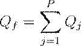
Donde identifica el estilo o modelo del producto. Si se asume que todas las partes componentes son manufacturadas internamente, el número total de partes producidas anualmente en la fábrica ( ) se determina por:
Siendo el número de partes contenidas en el producto de estilo .
Finalmente, el nivel total de actividad de procesamiento en la fábrica se puede expresar mediante el número total de ciclos de operación anuales ( ):
Donde representa el número de operaciones de procesamiento para cada parte del producto .
EVALUACIÓN DE RESTRICCIONES Y RIESGOS TÉCNICOS
El análisis inicial no estaría completo sin una identificación exhaustiva de las restricciones físicas, financieras y tecnológicas que delimitan el diseño del sistema.
Según el enfoque de ingeniería concurrente, deben considerarse simultáneamente los factores de diseño del producto y las capacidades de proceso disponibles, evitando el tradicional "muro" de incomunicación entre departamentos.
La factibilidad técnica debe evaluarse considerando si el tamaño y peso de los componentes exceden los estándares de manejo de materiales de la planta, y si los procesos requeridos (maquinado, ensamble, inspección) son compatibles con la tecnología de control numérico computarizado (CNC) y robótica que se pretende implementar.
Asimismo, se debe cuantificar la utilización proyectada de los recursos para asegurar un retorno de inversión (ROI) favorable, utilizando la métrica de utilización ( ):
Donde es la cantidad real producida y es la capacidad de producción teórica del sistema.
|
Parámetro de Evaluación |
Factor Crítico de Análisis |
Impacto en el Diseño |
|
Producto |
Complejidad geométrica y peso. |
Determina el tipo de máquinas y sistemas de transporte. |
|
Producción |
Carga anual y mensual estimada. |
Establece el número de estaciones y turnos de trabajo. |
|
Financiero |
Capacidad de compromiso de gasto. |
Define si la implementación será total o escalonada. |
|
Social |
Capacitación y nivel de habilidades. |
Dicta los requerimientos de entrenamiento y soporte técnico. |
EL PAPEL DEL MODELADO Y LA SIMULACIÓN INICIAL
Dada la complejidad intrínseca de los sistemas mecatrónicos modernos, el análisis inicial suele apoyarse en modelos matemáticos y herramientas de simulación para predecir el comportamiento dinámico del sistema antes de su materialización física.
Estos modelos, que pueden basarse en redes de colas o redes de Petri, permiten evaluar el impacto de variables estocásticas como los tiempos de falla y reparación, así como los cuellos de botella en el manejo de materiales.
El uso de simulaciones en microcomputadoras durante la fase conceptual proporciona a los ingenieros un "laboratorio virtual" para explorar escenarios competitivos y validar la viabilidad económica de las configuraciones de diseño propuestas.
Este enfoque iterativo asegura que la especificación final del sistema esté optimizada para satisfacer las necesidades reales de producción, minimizando la probabilidad de errores costosos durante la fase de instalación y arranque.
5.2 Búsqueda de información.
FUNDAMENTACIÓN DE LA BASE DE DATOS PARA LA SÍNTESIS DE SISTEMAS
Una vez establecida la viabilidad estratégica en el análisis inicial, la fase de búsqueda de información se constituye como el pilar empírico sobre el cual se erigirá el diseño conceptual del sistema de manufactura.
Esta etapa, que suele demandar un periodo intensivo de entre cuatro y seis semanas, tiene como objetivo primordial la recolección de datos granulares, tanto de naturaleza estática como dinámica, para alimentar los modelos de simulación y las herramientas de toma de decisiones.
En el paradigma de la Manufactura Integrada por Computadora (CIM), la búsqueda de información no se limita a la mera recopilación de folletos técnicos; representa una auditoría profunda de la realidad operativa de la planta ("AS-IS") y un escrutinio proactivo de las capacidades tecnológicas externas ("TO-BE") disponibles en el mercado global.
La integridad de esta base de datos es crítica, ya que cualquier inconsistencia u omisión en esta fase se propagará de forma exponencial a través de los niveles de planificación jerárquica, resultando en configuraciones de hardware subóptimas o en arquitecturas de software incapaces de gestionar las contingencias reales del piso de taller.
DIMENSIONES DE LA RECOLECCIÓN DE DATOS INTERNOS
La captura de información interna requiere una disección exhaustiva de los procesos actuales y de las características intrínsecas de los productos que integrarán la familia de partes del sistema.
Es imperativo comprender el proceso existente en todos sus detalles: entradas, salidas, funciones de valor agregado y la interacción entre operaciones consecutivas.
Esta fase de "comprensión" (dentro de la metodología USA: Understand, Simplify, Automate) permite identificar redundancias y cuellos de botella que podrían ser eliminados antes de proceder a la automatización.
Los datos críticos que deben ser extraídos de los registros de planta y de los sistemas de planificación existentes (MRP/ERP) incluyen,:
· Métricas de Demanda y Volumen: Requerimientos actuales y proyectados, fluctuaciones estacionales y tamaños de lote económicos.
· Parámetros de Proceso: Tiempos de ciclo ( ), tiempos de preparación o setup ( ), y frecuencias de mantenimiento preventivo.
· Logística Interna: Rutas de proceso, métodos de manejo de materiales (transportadores, robots, AGV) y capacidades de almacenamiento en proceso (buffers).
· Indicadores de Calidad: Tasas históricas de desperdicio (scrap), requerimientos de inspección dimensional y tolerancias críticas.
ANÁLISIS DE LA INFORMACIÓN EXTERNA Y CAPACIDADES DE PROVEEDORES
Paralelamente a la auditoría interna, la búsqueda de información externa se orienta a identificar las fronteras tecnológicas y las fuerzas competitivas que afectan a la industria.
Este proceso implica la solicitud de cotizaciones detalladas a proveedores de equipo original (OEM), donde las especificaciones técnicas deben ser confrontadas con las necesidades reales de flexibilidad de la organización,.
La evaluación de proveedores debe trascender el costo inicial de adquisición, integrando criterios de fiabilidad, soporte técnico a largo plazo y compatibilidad con las arquitecturas de comunicación estándar como MAP (Protocolo de Automatización de Manufactura).
|
Tipo de Datos |
Fuente Principal |
Aplicación en el Diseño |
|
Definición de Producto |
Modelos CAD / Listas de Materiales (BOM) |
Síntesis de la geometría y selección de herramientas,,. |
|
Capacidades de Máquina |
Especificaciones de Proveedores / Manuales |
Dimensionamiento de la potencia, velocidad y precisión del sistema,. |
|
Rendimiento Logístico |
Históricos de Planta / Simulación |
Optimización de los tiempos de entrega y niveles de WIP,. |
|
Estándares de Comunicación |
Protocolos ISO/OSI y MAP/TOP |
Integración de interfaces y flujos de datos entre celdas,. |
MODELADO MATEMÁTICO PARA LA VALIDACIÓN DE DATOS
Para que la información recolectada sea útil en una fase de diseño doctoral, debe ser procesada mediante modelos analíticos que permitan verificar la coherencia del sistema propuesto.
Uno de los modelos más fundamentales utilizados durante la búsqueda de información para estimar la capacidad y la logística es la Ley de Little, que relaciona el inventario en proceso (WIP) con la tasa de producción y el tiempo de entrega.
La relación para el trabajo en proceso ( ) se modela como:
Donde:
· es la tasa de producción horaria de la planta (piezas/hora).
· es el tiempo de entrega de manufactura promedio (Manufacturing Lead Time).
Asimismo, para determinar la viabilidad de los tiempos recolectados, se debe calcular el tiempo de producción promedio por unidad ( ), considerando el impacto de los tiempos de preparación distribuidos en el tamaño del lote ( ):
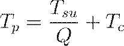
A partir de este valor, se deriva la tasa de producción ( ) que servirá de entrada para el dimensionamiento del equipo:
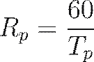
TECNOLOGÍAS DE ADQUISICIÓN Y CENTRALIZACIÓN DE DATOS
En el contexto de la manufactura moderna, la búsqueda de información se apoya crecientemente en sistemas de captura automática de datos (AIDC) para garantizar la exactitud de los parámetros operativos recopilados.
Tecnologías como los códigos de barras, la identificación por radiofrecuencia (RFID) y el protocolo MTConnect permiten extraer datos directamente de las máquinas herramientas CNC y robots, eliminando el error inherente a la recolección manual, que suele rondar el 3%.
La información recolectada debe converger en una base de datos común,. Esta estructura permite que el personal de ingeniería de manufactura, planificación y control acceda a una "fuente única de verdad", facilitando la transición desde el diseño asistido por computadora (CAD) hacia la manufactura asistida por computadora (CAM) y el control de piso de taller (SFC).
La validación de estos datos mediante la participación de personal experto que esté íntimamente familiarizado con las operaciones de campo es el paso final indispensable para asegurar que el modelo del sistema sea una representación fiel de la realidad física.
5.3 Justificación financiera.
JUSTIFICACIÓN FINANCIERA DE SISTEMAS AVANZADOS DE MANUFACTURA
La justificación financiera de tecnologías de manufactura avanzada, como los Sistemas de Manufactura Flexible (FMS) y la Manufactura Integrada por Computadora (CIM), trasciende el simple análisis de reemplazo de activos fijos para convertirse en una evaluación estratégica de la viabilidad a largo plazo de la empresa.
En el entorno competitivo global, estas inversiones no pueden evaluarse únicamente mediante métodos contables tradicionales de corto plazo, ya que gran parte de su valor reside en beneficios intangibles como la mejora en la calidad, la reducción de los tiempos de entrega y la capacidad de respuesta ante las fluctuaciones del mercado. Un error fundamental en muchas organizaciones es aplicar fórmulas de Retorno de Inversión (ROI) diseñadas para beneficios aislados, sin reconocer las mejoras sistémicas o el valor estratégico ganado.
Por lo tanto, la justificación financiera exige un enfoque de ingeniería económica que considere tanto los flujos de efectivo cuantificables como los factores de competitividad que, aunque difíciles de medir en términos monetarios inmediatos, determinan la supervivencia operativa en un horizonte de 5 a 10 años.
MÉTODOS DE ANÁLISIS ECONÓMICO Y FLUJO DE EFECTIVO
La evaluación de proyectos de automatización se fundamenta en tres métodos principales de análisis económico, cada uno proporcionando una perspectiva distinta sobre la rentabilidad y el riesgo de la inversión:
· Periodo de Recuperación (Payback Period): Este método estima el número de años necesarios para recuperar la inversión inicial a través de los ahorros anuales generados. Aunque no considera el valor del dinero en el tiempo, proporciona una indicación rápida de la atractividad del proyecto, considerándose aceptable un periodo menor a 1.5 años en muchas industrias.
· Valor Presente Neto (VPN): Considera el valor del dinero en el tiempo y el costo de oportunidad del capital. Se calcula descontando todos los flujos de efectivo futuros (ingresos y costos) al inicio del proyecto utilizando una Tasa Mínima Atractiva de Retorno (MARR),.
· Tasa Interna de Retorno (TIR): Busca identificar la tasa de interés que iguala el valor presente de los ingresos con el de los egresos, resultando en un VPN de cero,. Si la TIR es superior a la tasa de descuento de la empresa, el proyecto se considera rentable.
Para el cálculo del Valor Presente Neto ( ), se utiliza la siguiente expresión analítica,:
Donde:
· : Ingresos o ahorros en el periodo .
· : Costos operativos en el periodo .
· : Tasa de descuento o retorno mínimo aceptable.
· : Inversión inicial total.
ESTRUCTURA DE COSTOS: FIJOS, VARIABLES E INTUITIVOS
El análisis de costos en un sistema automatizado se divide en categorías recurrentes y no recurrentes que impactan directamente en el punto de equilibrio de la operación. Los costos fijos en sistemas automatizados suelen ser elevados debido a la alta inversión inicial en hardware y software, mientras que los costos variables por unidad producida suelen ser significativamente más bajos que en los métodos manuales.
Un componente crítico a menudo ignorado son los costos intuitivos o intangibles, que incluyen la seguridad de los sistemas de información, los costos de rehabilitación y reentrenamiento del personal desplazado por la tecnología, y los gastos de comunicación derivados de la reestructuración jerárquica.
La ecuación del costo total anual ( ) para un nivel de producción se define como,:
Donde representa los costos fijos anuales (amortización de equipo, seguros, impuestos) y el costo variable por pieza (mano de obra directa, materiales, energía).
|
Categoría de Costo |
Elementos Incluidos |
Impacto Financiero |
|
No Recurrentes |
Hardware, software, planeación de sistemas, ingeniería de detalle, instalación. |
Requieren gran desembolso inicial de capital. |
|
Recurrentes |
Mantenimiento, reparaciones, consumibles, mano de obra especializada. |
Determinan el margen operativo y el flujo de caja diario. |
|
Intuitivos |
Contingencias, seguridad informática, mejora de imagen corporativa, respuesta al mercado. |
Beneficios estratégicos a largo plazo y gestión de riesgos. |
JUSTIFICACIÓN BASADA EN LA PRODUCTIVIDAD Y LA CALIDAD
La implementación de sistemas como CAD/CAM y FMS genera ahorros sustanciales a través de la reducción de la mano de obra indirecta y el desperdicio de materiales.
En sistemas de mecanizado, se ha reportado que un FMS puede realizar el equivalente a 200,000 horas de maquinado convencional en solo 70,000 horas de maquinado flexible, lo que representa una evitación de costos masiva y una depreciación acelerada de activos.
Además, el uso de la función de pérdida de Taguchi permite cuantificar económicamente el costo de la mala calidad incluso si los productos están dentro de las tolerancias, basándose en la desviación del valor nominal.
El costo total por pieza ( ) considerando inspección, retrabajo y la función de pérdida de calidad se modela como,:
Donde:
· : Costo de producción por pieza.
· : Costo de inspección y clasificación.
· : Proporción de partes fuera de tolerancia.
· : Costo de retrabajo por pieza.
· : Valor de la función de pérdida de Taguchi.
ANÁLISIS DE RENTABILIDAD Y RIESGOS TÉCNICOS
El éxito de una justificación financiera depende de un análisis de sensibilidad robusto que considere los "peores escenarios" tecnológicos y económicos.
La incertidumbre en los tiempos de entrega del equipo, el tiempo de arranque (commissioning) y la posibilidad de fallas catastróficas en el sistema FMS deben ser factorizadas en el flujo de caja proyectado.
La simulación por computadora se presenta como una herramienta de bajo costo para predecir el comportamiento dinámico del sistema y validar la inversión antes de comprometer recursos físicos.
Ignorar estos riesgos puede llevar a proyecciones de ahorro infladas que no se materializan debido a tiempos muertos excesivos o subutilización de la capacidad instalada.
Para calcular el costo horario de operación de un centro de trabajo ( ), se deben integrar las cargas generales tanto de mano de obra como de maquinaria:
Donde y son las tasas horarias de labor y máquina, y representa las tasas de gastos generales aplicables (Factory Overhead Rates).
EL IMPERATIVO ESTRATÉGICO DE LA AUTOMATIZACIÓN
Finalmente, la justificación financiera debe contemplar el alto costo de no automatizar.
Las empresas que posponen la modernización se encuentran en una desventaja competitiva creciente respecto a competidores que logran economías de alcance y una mayor flexibilidad operativa.
La integración de la información digital elimina la necesidad de papel y reduce los errores de transcripción, lo que se traduce en un ciclo de vida del producto más corto y una entrada más rápida al mercado.
En este sentido, la justificación económica es una decisión estratégica coordinada que vincula la ingeniería de manufactura con la planificación financiera corporativa para asegurar la viabilidad del negocio en la "fábrica del futuro".
5.4 Diseño conceptual.
ARQUITECTURA DEL SISTEMA Y DEFINICIÓN FUNCIONAL
El diseño conceptual, a menudo denominado dentro de la literatura técnica como la fase de "Definición del Sistema", constituye el estadio embrionario y más crítico en la implementación de una infraestructura de manufactura avanzada.
Esta fase trasciende la mera selección de maquinaria para posicionarse como un proceso de síntesis arquitectónica, donde se traducen los objetivos estratégicos de la organización en requerimientos funcionales y operativos específicos.
Según el paradigma de la ingeniería de sistemas, el diseño conceptual busca establecer un equilibrio óptimo entre la flexibilidad tecnológica y la viabilidad económica, utilizando técnicas de optimización para satisfacer la demanda proyectada con la inversión de capital mínima necesaria.
En este nivel, la incertidumbre es elevada, lo que obliga a los ingenieros a trabajar con modelos abstractos que permitan evaluar el impacto de variables macroscópicas antes de comprometer recursos en especificaciones de detalle.
LA CAPA DE CONCEPTO EN LA ARQUITECTURA DE REFERENCIA DE PURDUE
Siguiendo el marco de la Arquitectura de Referencia de Empresa de Purdue (PERA), el diseño conceptual se sitúa en la denominada "Capa de Concepto".
En este estrato, la alta gerencia y el equipo de ingeniería deben consolidar la misión, visión y valores del proyecto, estableciendo las políticas que gobernarán el resto del ciclo de vida del sistema.
La formalización de estas políticas es esencial para evitar la fragmentación tecnológica y asegurar la integrabilidad de los subcomponentes.
Las políticas fundamentales que deben definirse en esta etapa incluyen:
· Política de Manufactura: Determinación de las tecnologías preferentes (ej. maquinado CNC, ensamble robótico), selección de proveedores estratégicos y ubicación física de la celda o sistema dentro de la planta actual.
· Política de Personal: Definición de los niveles de automatización deseados frente a la intervención humana, requerimientos de habilidades técnicas y mandatos sindicales relevantes.
· Política de Información: Establecimiento de protocolos de comunicación (ej. MAP/TOP), sistemas operativos, bases de datos comunes y estrategias de control jerárquico o distribuido.
METODOLOGÍA DEL FILTRO DE EMBUDO (FILTER-FUNNEL)
Dada la complejidad intrínseca de los Sistemas de Manufactura Flexible (FMS), no existe un algoritmo determinista que genere automáticamente la "mejor" solución.
Por ello, se emplea la técnica del "Filtro de Embudo", que combina la creatividad humana para la generación de alternativas con la validación computacional para la selección de la solución más robusta.
Este proceso se articula a través de cuatro filtros sucesivos que reducen el universo de ideas iniciales,:
1. Idoneidad de la Idea: Se evalúa si las propuestas de diseño se alinean con el problema específico y los objetivos de mercado.
2. Factibilidad Técnica: Se analiza si la solución es realizable en un entorno industrial real, considerando la seguridad operativa y la robustez del hardware.
3. Viabilidad Financiera: Se identifican y rechazan soluciones que exceden los límites presupuestarios o que no presentan una rentabilidad proyectada aceptable.
4. Asistencia por Computadora: Las soluciones supervivientes se someten a modelos de simulación detallados para definir con precisión los recursos necesarios.
ANÁLISIS CUANTITATIVO Y MODELADO "ROUGH-CUT"
En el diseño conceptual, es imperativo fundamentar las decisiones en estimaciones cuantitativas, aunque los datos sean preliminares.
Esto se conoce como modelado "Rough-Cut", que proporciona una base numérica para dimensionar la capacidad del sistema antes de realizar simulaciones de eventos discretos más costosas.
Se utilizan relaciones cinemáticas y de flujo para predecir el comportamiento del sistema.
Para el análisis del nivel de actividad y carga de procesamiento, se emplea el modelo de actividad de fábrica, donde el número total de ciclos de operación anuales ( ) se define por:
Donde:
· : Cantidad del producto estilo .
· : Número de partes en el producto .
· : Número de operaciones para cada parte del producto .
Asimismo, la velocidad de producción real promedio ( ), factor crítico para determinar el número de estaciones de trabajo, se calcula considerando la frecuencia de tiempos muertos ( ) y el tiempo de reparación promedio ( ) sobre el tiempo de ciclo ideal ( ):
DECISIONES ESTRATÉGICAS DE CONFIGURACIÓN
Durante el diseño conceptual, el equipo debe resolver dilemas estructurales que afectarán la resiliencia del sistema frente a contingencias.
La elección entre una flexibilidad total (donde cualquier máquina puede realizar cualquier tarea) o sub-unidades dedicadas es una decisión de diseño fundamental.
|
Parámetro de Diseño |
Opciones de Configuración |
Implicación en el Sistema |
|
Flujo de Materiales |
En línea, en ciclo, en escalera o campo abierto. |
Determina la distancia recorrida y la eficiencia del transporte. |
|
Gestión de WIP |
Almacenamiento centralizado vs. colas locales en cada máquina. |
Afecta el inventario en proceso y el tiempo de entrega total. |
|
Arquitectura de Control |
Jerárquica pura vs. Heterárquica (basada en agentes),. |
Define la tolerancia a fallos y la facilidad de reconfiguración. |
|
Redundancia |
Duplicación de máquinas críticas o herramientas "hermanas". |
Permite la degradación elegante del sistema ante averías. |
Finalmente, se deben establecer los requerimientos de "Cero Pieza" y sistemas de coordenadas (WCS) para asegurar que la integración lógica del software CAM coincida con la realidad física de los dispositivos de sujeción diseñados conceptualmente.
Este nivel de definición asegura que el sistema no sea solo una colección de máquinas, sino un organismo productivo coherente.
5.5 Diseño de detalle.
ESPECIFICACIÓN TÉCNICA Y ARQUITECTURA FUNCIONAL DEL SISTEMA
El diseño de detalle representa la fase de transición crítica entre la concepción teórica de un sistema de manufactura y su materialización física.
En la ingeniería de nivel doctoral, esta etapa se define como el proceso de especificación exhaustiva, donde la incertidumbre del diseño conceptual debe eliminarse por completo antes de proceder a la adquisición masiva de bienes de capital y al desarrollo de software de control.
Un diseño de detalle riguroso no solo se limita a la selección de maquinaria, sino que se constituye como una síntesis técnica donde se definen las interfaces lógicas, los parámetros cinemáticos y los algoritmos de recuperación ante fallos que garantizarán la resiliencia operativa del sistema.
Según el marco de la Arquitectura de Referencia de Empresa de Purdue (PERA), el diseño de detalle abarca la selección y agrupamiento de procesadores, la definición de la arquitectura de información y la planificación detallada de la infraestructura de manufactura, incluyendo la disposición espacial (layout) de cada componente.
La importancia de esta fase radica en que cualquier error de omisión o inconsistencia técnica detectada después de la compra de equipos puede multiplicar los costos de corrección de 30 a 100 veces en comparación con su resolución en papel o simulación.
Por tanto, el diseño de detalle debe ser un documento "vivo" y dinámico que sirva como la "única fuente de verdad" para todos los proveedores y departamentos involucrados, asegurando que la integración sistémica sea fluida y que no se generen "islas de automatización" incompatibles.
DIMENSIONES DE LA ARQUITECTURA DE DETALLE
Para lograr una integración holística, el diseño de detalle debe abordarse desde tres vertientes tecnológicas y organizacionales que interactúan en tiempo real:
· Arquitectura de Sistemas de Información: En este nivel se seleccionan los mecanismos físicos para la ejecución de tareas informacionales. Esto incluye la especificación de computadoras centrales (hosts), Controladores Lógicos Programables (PLC), microcontroladores y dispositivos de interfaz hombre-máquina (HMI). Es fundamental definir aquí los protocolos de comunicación (como RS-232, Ethernet o bus CAN) y el diseño de la base de datos común que compartirá información geométrica y tecnológica entre CAD, CAM y el control de piso de taller.
· Arquitectura de Sistemas de Manufactura: Comprende la selección detallada de las máquinas-herramienta (centros de maquinado CNC, tornos, etc.), el sistema de transporte de materiales (AGVs, transportadores o robots gantry) y los sistemas de almacenamiento y cambio automático de herramientas (ATC). En esta sub-fase se establecen las tolerancias geométricas y los acabados superficiales requeridos, los cuales dictarán la precisión de los servomotores y la resolución de los codificadores ópticos.
· Arquitectura Humana y Organizacional: Se definen los perfiles de habilidades técnicas, las descripciones de puestos para los operadores del sistema FMS y los programas de capacitación necesarios para el mantenimiento predictivo y la depuración de software.
ESPECIFICACIÓN DE SOFTWARE Y LÓGICA DE CONTROL
El desarrollo del software de control es, a menudo, la tarea más compleja y costosa del diseño de detalle, representando una parte sustancial del tiempo total del proyecto. La lógica de control debe prever no solo el funcionamiento nominal, sino también la "degradación elegante" del sistema, permitiendo que este siga operando parcialmente ante la falla de un componente individual.
En esta etapa se diseñan los algoritmos de programación de piezas, la gestión de la vida útil de las herramientas y los protocolos de sincronización entre robots y máquinas.
|
Módulo de Software |
Función en el Diseño de Detalle |
Requerimiento Técnico |
|
Gestión de Herramientas |
Monitoreo de desgaste y ubicación de herramientas en carruseles. |
Algoritmos de compensación de longitud y diámetro. |
|
Control de Tráfico |
Coordinación de movimientos de AGVs y piezas sobre tarimas. |
Prevención de interbloqueos (deadlocks) y optimización de rutas. |
|
Planificación de Procesos (CAPP) |
Generación de hojas de ruta y secuencias de operaciones. |
Integración con el modelo de características (features) de CAD. |
|
Diagnóstico de Errores |
Detección de rotura de herramientas o fallas en actuadores. |
Uso de sensores de emisión acústica y transductores de torque. |
MODELADO MATEMÁTICO Y VALIDACIÓN EN EL DISEÑO DE DETALLE
Durante el diseño de detalle, se aplican ecuaciones cinemáticas y dinámicas para validar que el equipo seleccionado cumpla con los requisitos de tiempo de ciclo y precisión.
Un parámetro crítico es el Tiempo de Producción ( ), que debe considerar el impacto de la frecuencia de fallas ( ) y el tiempo de reparación ( ) sobre el tiempo de ciclo ideal ( ):
Asimismo, la precisión del sistema de posicionamiento se valida mediante el cálculo de la resolución de control ( ), la cual es el máximo valor entre la resolución mecánica ( ) y la del controlador ( ):
Donde:
· : Paso del tornillo guía.
· : Pasos por revolución del motor.
· : Rango del eje.
· : Número de bits del registro del controlador.
Para las operaciones de maquinado, el tiempo de corte real ( ) se detalla con precisión para cada característica geométrica de longitud , avance y velocidad de rotación :
SIMULACIÓN Y REVISIONES DE DISEÑO
El diseño de detalle culmina con simulaciones de eventos discretos que validan el comportamiento dinámico del sistema bajo diferentes escenarios de carga y mezclas de productos (part mix).
Estas simulaciones permiten identificar cuellos de botella y optimizar la capacidad de los buffers de almacenamiento en proceso antes de la instalación física.
Las revisiones de diseño (Design Reviews) actúan como el último filtro de calidad, donde especialistas en mecánica, automatización y ciencias computacionales verifican la compatibilidad de todas las interfaces y la viabilidad financiera del proyecto antes de la fase de implementación definitiva.
5.6 Selección de componentes.
ARQUITECTURA TECNOLÓGICA Y CONFIGURACIÓN DEL SISTEMA
La selección de los componentes en un Sistema de Manufactura Flexible (FMS) representa una de las fases más críticas en el ciclo de diseño de ingeniería, dado que las decisiones tomadas en este estrato definen los límites superiores de la eficiencia operativa y la rentabilidad del capital invertido.
Técnicamente, este proceso consiste en la orquestación de una infraestructura mecatrónica donde el equipamiento primario centros de maquinado CNC, celdas de ensamble o unidades de procesamiento debe ser calibrado con precisión para satisfacer los requerimientos geométricos y tecnológicos de una familia de piezas predefinida.
En la ingeniería contemporánea, la selección no se limita a la adquisición de activos físicos; implica un análisis profundo de la capacidad tecnológica de proceso, considerando factores como el tamaño y peso de las unidades de trabajo, el volumen de producción proyectado y las tolerancias dimensionales críticas que el sistema debe mantener de manera consistente.
TAXONOMÍA Y CRITERIOS DE CLASIFICACIÓN DE PIEZAS
Para que un sistema flexible sea viable, es imperativo aplicar los principios de la Tecnología de Grupos (GT), la cual permite identificar y agrupar componentes con atributos similares para maximizar las economías de alcance.
El proceso de selección se inicia comúnmente con un análisis de Pareto, donde se identifica aquel 20% de las piezas que representan el 80% del valor o volumen de la organización, concentrando los recursos tecnológicos en este núcleo estratégico.
Una vez identificadas las piezas candidatas, se procede a su clasificación mediante esquemas de codificación que consideran atributos de diseño y de manufactura, tales como el sistema Opitz, el cual utiliza una estructura jerárquica para definir la forma básica, superficies planas y orificios auxiliares.
A continuación, se presenta una tabla comparativa de los criterios de selección basados en los atributos de las piezas:
|
Atributo de Selección |
Parámetros Técnicos Considerados |
Impacto en la Selección de Componentes |
|
Atributos de Diseño |
Geometría básica (rotacional vs. prismática), dimensiones extremas, materiales y tolerancias críticas. |
Determina el tamaño de la envolvente de trabajo y la precisión de los servomotores. |
|
Atributos de Manufactura |
Secuencia de operaciones, tiempos de ciclo ( ), requerimientos de herramientas y dispositivos de sujeción. |
Define la capacidad del carrusel de herramientas (ATC) y el tipo de sistema de manejo de materiales. |
|
Logística y Demanda |
Volumen de producción anual, tamaño de lote económico (EOQ) y fluctuaciones del mercado. |
Dicta el número de estaciones de trabajo y el nivel de automatización requerido. |
DIMENSIONAMIENTO DEL EQUIPAMIENTO PRIMARIO Y SECUNDARIO
El equipamiento en un FMS se subdivide en componentes primarios, que añaden valor directo mediante la transformación física o química del material, y componentes secundarios, que asisten en la transferencia, posicionamiento y aseguramiento de la calidad.
Las estaciones de trabajo, típicamente centros de maquinado CNC de 3 a 5 ejes, deben ser seleccionadas para minimizar los tiempos de preparación (setup) y maximizar la utilización mediante el uso de cambiadores automáticos de tarimas (pallets).
Es un error de diseño frecuente subutilizar equipo costoso; por ello, la capacidad de las máquinas debe coincidir rigurosamente con el espectro de dimensiones de las piezas de la familia.
Los elementos de soporte, como las Unidades de Control de Máquina (MCU), actúan como el nexo entre el programa de piezas y la ejecución física, requiriendo interfaces de entrada/salida (I/O) robustas para la comunicación en tiempo real con el host central del sistema.
La integración tecnológica se facilita mediante el uso de:
· Sistemas de Identificación Automática: Empleo de códigos de barras o chips de memoria en las tarimas para la carga automática del programa de pieza correcto.
· Sondas de Contacto (Probing): Sensores integrados para la verificación de dimensiones en línea y compensación automática de desgaste de herramientas.
· Sistemas de Manejo Robustos: Robots industriales o Vehículos Guiados Automáticamente (AGV) que garanticen una transferencia sincrónica o asincrónica eficiente.
MODELADO MATEMÁTICO PARA LA SELECCIÓN Y SIZING
El dimensionamiento técnico del sistema requiere la aplicación de modelos deterministas para estimar el número de servidores o máquinas ( ) necesarios en cada estación para cumplir con la tasa de producción especificada ( ).
Para este cálculo, se debe conocer la carga de trabajo acumulada ( ), que es el tiempo total requerido por la estación para procesar una unidad de mezcla de productos.
La ecuación fundamental para determinar el número de máquinas en la estación se expresa como:
Donde:
· : Tasa de producción requerida (piezas/minuto).
· : Carga de trabajo promedio de la estación (minutos/pieza).
Asimismo, la utilización de cada estación de trabajo ( ) se deriva de la relación entre su carga de trabajo y su capacidad instalada, considerando la tasa de producción del sistema limitada por la estación cuello de botella ( ):
Donde la tasa de producción máxima del sistema ( ) está dictada por la estación con la mayor relación carga/servidor ( ),:
RESILIENCIA Y CONTINGENCIA EN LA CONFIGURACIÓN DE COMPONENTES
Un criterio doctoral en la selección de componentes es la degradación elegante del sistema. Al seleccionar las máquinas, es preferible optar por la redundancia tecnológica, es decir, estaciones con capacidades solapadas que permitan reencaminar la producción en caso de falla de un componente crítico.
Esta flexibilidad de ruta reduce el impacto del tiempo muerto ( ) y mejora la disponibilidad global del sistema ( ), la cual se modela mediante el tiempo medio entre fallas ( ) y el tiempo medio de reparación ( ):
Finalmente, la arquitectura del software de control debe ser modular, permitiendo la reconfigurabilidad del sistema ante la introducción de nuevos diseños de piezas sin requerir una reingeniería total de los componentes lógicos.
La selección correcta de componentes garantiza que el FMS no sea solo un conjunto de máquinas, sino una unidad productiva ágil y capaz de responder a la volatilidad del mercado contemporáneo.
5.7 Requerimientos de equipo, dispositivos y herramental.
REQUERIMIENTOS DE EQUIPO, DISPOSITIVOS Y HERRAMENTAL
La fase de especificación técnica de los activos físicos constituye el núcleo de la ingeniería de sistemas en un entorno de manufactura avanzada.
Los requerimientos de equipo, dispositivos y herramental no se derivan de manera aislada, sino que surgen como una consecuencia directa del análisis de la capacidad de manufactura, la cual se define por las limitaciones técnicas y físicas de la planta en tres dimensiones críticas: la capacidad tecnológica de proceso, el tamaño y peso físico de los productos, y la capacidad de producción total.
Dentro del marco de la Arquitectura de Referencia de Empresa de Purdue (PERA), estos requerimientos se consolidan en la denominada "Capa de Definición", donde se establecen los módulos funcionales necesarios para transformar la materia prima según el diseño conceptual previo.
Esta etapa exige un equilibrio riguroso entre la inversión de capital y la flexibilidad operativa, asegurando que cada componente, desde el husillo de un centro de maquinado hasta la pinza de un robot, sea capaz de cumplir con las tolerancias geométricas y los regímenes térmicos especificados para la familia de piezas.
Clasificación del equipamiento: Primario y Secundario
Para una gestión sistémica del inventario técnico, el equipamiento de un Sistema de Manufactura Flexible (FMS) se subdivide en dos categorías fundamentales basadas en su contribución al valor agregado:
· Equipamiento Primario: Comprende los activos que ejecutan la transformación física, química o geométrica del material. Incluye centros de maquinado CNC (horizontales y verticales), celdas de ensamble automatizado, estaciones de forja y sistemas de procesamiento de láminas. Estos equipos se caracterizan por su autonomía, lograda mediante controladores locales (CNC o PLC) que permiten la ejecución de programas de piezas de manera independiente.
· Equipamiento Secundario: Agrupa los sistemas de soporte necesarios para la operatividad del equipo primario. Incluye dispositivos de carga y descarga, sistemas de transporte (AGV, RGV), almacenes automáticos (AS/RS), estaciones de limpieza y lavado, y áreas de pre-ajuste de herramientas.
A continuación, se presenta una tabla con las capacidades típicas y máximas dimensiones que suelen considerarse en la especificación de estos equipos:
|
Tipo de Máquina |
Dimensión Máxima (m) |
Potencia Máxima (kW) |
RPM Máximas |
|
Torno Mecánico |
3 (diámetro) / 5 (longitud) |
70 |
4,000 |
|
Centro de Maquinado |
2.5 (envolvente) |
150 |
35,000 |
|
Taladradora Radial |
3 (alcance del brazo) |
10 |
12,000 |
|
AS/RS de Mini-carga |
12 (altura) |
Varía según carga |
N/A |
Fuente: Adaptado de las capacidades industriales estándar para sistemas mecatrónicos.
Dimensionamiento cinemático y dinámico del equipo
La selección de las máquinas-herramienta debe basarse en un análisis de las fuerzas y potencias de corte requeridas para el procesamiento de los materiales específicos de la organización.
En el caso del maquinado, la potencia de corte ( ) es una función directa de la fuerza tangencial ( ) y la velocidad de corte ( ):
Donde el consumo de potencia bruta ( ) en el motor de la máquina debe considerar la eficiencia mecánica ( ), típicamente situada en el 90% para equipos modernos:
Para operaciones de fresado y taladrado, la velocidad rotacional del husillo ( ) se determina en función del diámetro de la herramienta ( ) y la velocidad superficial recomendada ( ):
La velocidad de avance lineal ( ) del equipo, parámetro crítico para la productividad, se modela considerando el número de dientes del cortador ( ) y la carga de viruta por diente ( ):
Requerimientos de herramental y dispositivos de sujeción (Fixturing)
El herramental constituye el componente de hardware más dinámico y crítico de un sistema automatizado.
Los requerimientos de diseño exigen que las herramientas de corte, como insertos de carburo o cerámica, posean una alta dureza en caliente para resistir el desgaste abrasivo y la difusión química en la interfaz herramienta-viruta.
La gestión de herramientas en un FMS requiere carruseles o tambores con capacidades que fluctúan entre 16 y 200 unidades, permitiendo el acceso aleatorio y el reemplazo automático sin interrumpir el ciclo productivo.
En cuanto a los dispositivos de sujeción, la ingeniería moderna prioriza el uso de tarimas (pallets) y accesorios modulares. Los requerimientos técnicos para estos dispositivos incluyen:
· Precisión de Registro: La interfaz entre el pallet y la mesa de la máquina debe asegurar una localización repetible, a menudo utilizando pernos de posicionamiento que mantienen tolerancias de micras.
· Rigidez Estructural: El soporte debe resistir las fuerzas radiales ( ) y de empuje ( ) generadas durante el proceso para evitar vibraciones o traqueteo (chatter) que comprometan el acabado superficial.
· Versatilidad: Uso de "fixtures flexibles" o kits de sujeción estándar que emplean ranuras en T para acomodar diversas geometrías de piezas en una sola base.
Sistemas de transporte y manejo automatizado
El sistema de manejo de materiales es el eslabón que integra las estaciones de trabajo en una unidad operativa coherente.
La selección entre cintas transportadoras, vehículos guiados automáticamente (AGV) o robots tipo pórtico (gantry) depende primordialmente de la masa de la unidad de trabajo y la flexibilidad de ruta requerida.
Para piezas pesadas o voluminosas, se especifican sistemas de transporte por rodillos o vehículos con capacidades de carga superiores a los 1,000 kg.
El control de estos sistemas debe estar sincronizado con la Unidad de Control de Máquina (MCU) para gestionar funciones de tráfico y evitar interbloqueos (deadlocks) en las zonas de carga y descarga.
La precisión en el acoplamiento de inercia es vital para motores de posicionamiento; para una transferencia de potencia máxima, el momento de inercia de la carga ( ) debe estar equilibrado con el del motor ( ). En sistemas con engranajes de reducción ( ), el momento de inercia reflejado se modela como:
Equipos de seguridad e infraestructura ambiental
Finalmente, los requerimientos de equipo incluyen dispositivos de seguridad y control del entorno operativo.
En procesos de ultraprecisión o fabricación de microelectrónicos, el equipo debe ubicarse en salas limpias calificadas (Clase 10 a Clase 100), donde la concentración de partículas de 0.5 es estrictamente controlada para evitar defectos puntuales en los componentes.
La seguridad del sistema se garantiza mediante guardas rígidas, cortinas de luz y sistemas de monitoreo interconectados que detectan condiciones inseguras o fallas en los actuadores, activando protocolos de recuperación de errores de manera inmediata.
5.8 Instalación y arranque.
GESTIÓN DE LA TRANSICIÓN HACIA LA OPERATIVIDAD SISTÉMICA
La fase de instalación y arranque, denominada técnicamente en la ingeniería de sistemas como commissioning, constituye el periodo crítico en el que los activos físicos y los algoritmos de control convergen en el entorno real de la planta.
Este proceso no debe interpretarse como un simple ensamblaje mecánico, sino como una orquestación multidisciplinaria que requiere una colaboración estrecha entre el cliente y el proveedor para asegurar que la infraestructura cumpla con las especificaciones de diseño. La complejidad inherente a los sistemas de manufactura avanzada, como los FMS, dicta que la instalación se realice de manera estructurada para mitigar riesgos operativos y financieros, ya que errores detectados en esta etapa pueden comprometer la viabilidad del proyecto completo.
Un arranque exitoso depende de la fidelidad de la transición desde la teoría de los modelos de simulación hasta la práctica en el piso de taller, exigiendo una dirección y comunicación constantes entre todos los miembros del equipo de proyecto.
FASES CRONOLÓGICAS DE LA INSTALACIÓN FÍSICA
La práctica industrial estandarizada sugiere una ejecución en fases progresivas, permitiendo la validación modular de los componentes antes de su integración total. Este enfoque facilita la detección temprana de anomalías en subsistemas críticos como la cimentación, los servicios y la red de comunicaciones.
· Fase 1: Preparación del sitio y obra civil: Se inicia con la excavación, la instalación de sistemas centrales de refrigerante y recuperación de virutas, y el tendido de utilidades subterráneas.
· Fase 2: Infraestructura logística y comunicaciones: Se procede al corte de guías en el piso para sistemas AGV, la instalación de cableado de red y la construcción del centro de control o cuarto de computadoras.
· Fase 3: Posicionamiento de equipos primarios: Las máquinas herramienta se descargan, alinean y conectan a los servicios; en esta etapa se instalan también el host del sistema y el software de aplicación para iniciar el debugging temprano.
· Fase 4: Integración de periféricos y seguridad: Se añaden estaciones de inspección (CMM), carruseles de almacenamiento, sistemas de cambio de herramientas y dispositivos de seguridad perimetral.
COMISIONAMIENTO Y PRUEBAS DE AISLAMIENTO
Un principio rector en la ingeniería de manufactura es que cada unidad de equipo debe ser comisionada y probada rigurosamente en aislamiento antes de intentar cualquier interacción colectiva. Esta metodología de "paso a paso" permite aislar fallas mecánicas de errores lógicos en el software.
|
Etapa de Prueba |
Alcance Técnico |
Objetivo de Validación |
|
Prueba de Pre-instalación |
Calibración individual de sensores y actuadores. |
Garantizar precisión antes del montaje. |
|
Prueba de Aislamiento |
Operación manual y automática de la máquina sin carga. |
Verificar cinemática y lógica local. |
|
Prueba de Comunicaciones |
Envío de programas de pieza (NC) y monitoreo de estados. |
Validar la integridad del bus de datos. |
|
Integración Sistémica |
Pruebas de interacción entre máquinas y transporte. |
Sincronización del flujo de materiales. |
PRUEBAS DE ACEPTACIÓN Y PARÁMETROS DE RENDIMIENTO
Las pruebas de aceptación representan la etapa final en la que el sistema se somete a condiciones reales de producción para verificar el cumplimiento de los indicadores de desempeño.
Es fundamental que el equipo del usuario participe activamente en estas pruebas para consolidar la transferencia de conocimiento desde el proveedor.
Las variables críticas que deben validarse incluyen:
· Capacidad de producción: Verificación de que la tasa de salida ( ) cumple con las proyecciones teóricas.
· Precisión y repetibilidad: Evaluación de la exactitud dimensional y el acabado superficial en piezas de prueba.
· Confiabilidad del manejo de materiales: Funcionamiento sin fallos de robots, AGV o transportadores en ciclos de carga y descarga.
· Recuperación de errores: Validación de los protocolos de diagnóstico y la capacidad del sistema para retomar la operación tras una falla.
ANÁLISIS MATEMÁTICO DEL ARRANQUE Y LA CONFIABILIDAD
Durante el arranque, se monitorea la frecuencia de tiempos muertos para estabilizar la eficiencia del sistema.
El tiempo de ciclo real ( ) se modela matemáticamente considerando el tiempo de ciclo ideal ( ) y el impacto de las fallas mecánicas o lógicas:
Donde:
· : Tiempo de producción real promedio por pieza.
· : Tiempo de ciclo ideal del sistema.
· : Frecuencia de fallas (fallas por ciclo).
· : Tiempo muerto promedio por falla.
A partir de esta relación, se deriva la eficiencia de la línea ( ), que es una medida de la confiabilidad operativa alcanzada durante la fase de arranque:
En sistemas multivariables, la frecuencia de fallas global ( ) puede estimarse sumando las probabilidades de falla individuales ( ) de cada una de las estaciones de trabajo:
Este análisis permite a los ingenieros identificar cuellos de botella y componentes de baja confiabilidad que requieren ajustes antes de declarar la operatividad total del sistema.
5.9 Equipo de seguridad.
ESTRATEGIAS DE MONITOREO Y HARDWARE DE PROTECCIÓN EN SISTEMAS AUTOMATIZADOS
La integración de protocolos de seguridad en los sistemas de manufactura contemporáneos trasciende la mera implementación de barreras físicas, constituyéndose como una disciplina de ingeniería que busca la salvaguarda tanto del capital humano como de la costosa infraestructura tecnológica.
En el ámbito de la automatización avanzada, la seguridad no se considera una adición periférica, sino un requisito de diseño intrínseco y fundamental para garantizar la operatividad continua y la confiabilidad del sistema.
Los sistemas mecatrónicos modernos exigen una orquestación de sensores, actuadores y lógica de control que permita detectar condiciones inseguras en tiempo real y reaccionar de manera inmediata para mitigar riesgos catastróficos.
Esta arquitectura de seguridad se fundamenta en la capacidad de monitoreo constante, el diagnóstico de fallos y la ejecución de protocolos de recuperación de errores que minimicen la probabilidad de lesiones o daños materiales.
SISTEMAS DE MONITOREO DE SEGURIDAD Y SENSORES DE DETECCIÓN
El monitoreo de seguridad en sistemas automatizados emplea una red de sensores dedicados a rastrear las operaciones y detectar eventos que se desvían de los parámetros nominales de funcionamiento.
Estos dispositivos no solo se limitan a la detección de intrusiones humanas en el volumen de trabajo de un robot o máquina, sino que también vigilan variables internas críticas del proceso.
La respuesta del sistema ante una violación de seguridad puede variar desde la detención total e inmediata hasta la reducción de la velocidad operativa o la activación de alarmas sonoras y visuales.
Los sensores de seguridad comúnmente integrados incluyen:
· Interruptores de límite mecánicos: Utilizados para verificar el posicionamiento correcto de las piezas y restringir el recorrido de los actuadores,,.
· Cortinas de luz y sensores fotoeléctricos: Dispositivos que proyectan una barrera invisible de radiación infrarroja y activan un bloqueo instantáneo si el haz es interrumpido por un objeto o un operario,,.
· Sensores piroeléctricos e infrarrojos: Capaces de detectar la presencia de fuentes de calor en movimiento, permitiendo al sistema distinguir entre el ruido térmico ambiental y la entrada de un ser humano en la zona de peligro,.
· Alfombras sensibles a la presión: Ubicadas en el suelo circundante al equipo para detectar el peso de un operario y detener la maquinaria de forma automática,,.
· Sistemas de visión artificial: Utilizados para la vigilancia perimetral y el reconocimiento de patrones, permitiendo una detección de anomalías más sofisticada en entornos dinámicos,,.
HARDWARE DE SEGURIDAD Y DISPOSITIVOS DE INTERBLOQUEO
El diseño de una celda de manufactura segura requiere el uso de componentes de hardware que proporcionen una desconexión física y lógica de la potencia en caso de emergencia,.
Los interruptores de emergencia (E-stop) deben estar cableados de forma redundante y ser de acceso inmediato, permitiendo el paro total del sistema ante cualquier sospecha de riesgo,,. Un componente crítico en estas instalaciones es el Relevador de Control
Maestro (MCR), el cual debe ser un dispositivo electromecánico independiente de la lógica del software, capaz de inhibir todo movimiento de la máquina al ser desenergizado.
|
Dispositivo de Seguridad |
Función Técnica |
Tipo de Protección |
|
Paro de Emergencia (E-Stop) |
Desconexión inmediata de la potencia de E/S. |
Manual / Reactiva. |
|
Interbloqueos (Interlocks) |
Impiden la operación si las protecciones están abiertas. |
Lógica / Preventiva. |
|
Relevador Maestro (MCR) |
Controla el suministro de energía a todos los actuadores. |
Hardware / Fail-safe. |
|
Temporizador Vigilante (Watchdog) |
Detecta bloqueos en el software del procesador. |
Lógica / Recuperación. |
|
Sensores de Hombre Muerto |
Requieren presión continua para mantener la operación. |
Manual / Operativa. |
SEGURIDAD EN VEHÍCULOS AUTÓNOMOS (AGV) Y ROBÓTICA INDUSTRIAL
En el despliegue de Vehículos Guiados Automáticamente (AGV), la seguridad se gestiona mediante sistemas de detección de obstáculos delanteros y parachoques mecánicos de emergencia.
Los AGV modernos están programados para desacelerar ante la detección de un objeto en su trayectoria y frenar bruscamente si el parachoques entra en contacto físico.
En robótica, es imperativo delimitar el sobre de trabajo del manipulador mediante guardas rígidas o zonas marcadas, integrando sistemas de recuperación de errores que devuelvan al robot a su última operación segura sin intervención humana innecesaria.
CONTROLADORES LÓGICOS PROGRAMABLES DE SEGURIDAD (SAFETY PLCS)
A diferencia de los PLC convencionales, los Safety PLCs están diseñados con arquitecturas de microprocesadores redundantes que verifican continuamente la integridad de la ejecución lógica.
Estos controladores incorporan circuitos internos de autodiagnóstico que prueban la funcionalidad de las entradas y salidas mediante pulsos de microsegundos para detectar cortocircuitos o fallas antes de que ocurra un evento crítico.
La redundancia en estos sistemas asegura que una falla en un solo componente no comprometa la capacidad del controlador para llevar al sistema a un estado seguro.
MODELADO MATEMÁTICO DE LA CONFIABILIDAD Y DISPONIBILIDAD
La efectividad de los equipos de seguridad impacta directamente en la disponibilidad ( ) del sistema de producción, la cual se modela mediante el Tiempo Medio Entre Fallas ( ) y el Tiempo Medio de Reparación ( ):
En una línea de producción con estaciones, la frecuencia esperada de paros de línea ( ) se deriva de la probabilidad de falla individual ( ) de cada componente de seguridad o proceso:
Para sistemas subamortiguados con dispositivos de seguridad que involucran movimiento, el tiempo de asentamiento ( ) es una métrica crítica que define cuánto tardan las oscilaciones o movimientos peligrosos en desaparecer tras una parada, modelado como,:
Donde representa el factor de amortiguamiento relativo y la frecuencia angular natural del sistema mecánico. Estos cálculos permiten a los ingenieros dimensionar las distancias de seguridad y los tiempos de reacción necesarios para cumplir con las normativas internacionales de protección industrial.
5.10 Capacitación y mantenimiento.
PILARES DE LA RESILIENCIA OPERATIVA EN SISTEMAS FLEXIBLES
La transición de una planta convencional a una infraestructura gobernada por Sistemas de Manufactura Flexible (FMS) y Manufactura Integrada por Computadora (CIM) altera fundamentalmente la relación entre el capital tecnológico y el recurso humano.
En este ecosistema de alta complejidad, el mantenimiento y la capacitación dejan de ser funciones periféricas para convertirse en determinantes críticos de la viabilidad económica, dado que la alta inversión de capital exige tasas de utilización superiores al 80% para garantizar un Retorno de Inversión (ROI) favorable.
La interdependencia de las estaciones de trabajo en un FMS implica que la falla de un solo componente, ya sea mecánico, electrónico o de software, puede paralizar la célula productiva completa, eliminando los beneficios de la flexibilidad y generando costos sinérgicos masivos relacionados con el incumplimiento de plazos y la insatisfacción del cliente.
Por tanto, la gestión de la confiabilidad y el desarrollo de competencias técnicas avanzadas deben orquestarse mediante una filosofía de ingeniería concurrente, reconociendo que la eficacia del sistema depende de la sinergia entre una infraestructura robusta y un personal capaz de diagnosticar y recuperar el sistema ante estados de error no nominales.
GESTIÓN ESTRATÉGICA DEL MANTENIMIENTO EN ENTORNOS AUTOMATIZADOS
El mantenimiento en sistemas avanzados trasciende la reparación reactiva para adoptar un enfoque de confiabilidad proactiva, estructurado en niveles que van desde la intervención rutinaria del operador hasta el diagnóstico experto basado en inteligencia artificial.
La métrica fundamental para evaluar esta función es la disponibilidad ( ), definida como la proporción de tiempo en que el equipo está en condiciones operativas óptimas respecto al tiempo de producción programado.
En un FMS, donde el equipo es programmable y posee una vida útil extendida en comparación con los sistemas dedicados, el mantenimiento preventivo y predictivo es vital para minimizar la frecuencia de paradas no programadas y asegurar la consistencia en la calidad del producto.
|
Tipo de Mantenimiento |
Definición Técnica |
Aplicación en FMS |
|
Emergencia (Correctivo) |
Reparación inmediata tras una falla catastrófica. |
Crítico en FMS por la baja tolerancia a inventarios de seguridad. |
|
Preventivo (PM) |
Reparaciones rutinarias y reemplazo de componentes clave para evitar fallas. |
Programado durante turnos no operativos o fines de semana. |
|
Predictivo |
Anticipación de fallas mediante monitoreo computarizado y análisis de datos históricos. |
Uso de sensores de torque y vibración para predecir desgaste de husillos o herramientas. |
|
Productivo Total (TPM) |
Integración de PM y mantenimiento predictivo con la participación activa de todos los niveles. |
Los operadores asumen tareas de limpieza, lubricación e inspección menor. |
La implementación de un programa de Mantenimiento Productivo Total (TPM) es esencial para reducir las pérdidas de producción debidas a fallas de equipo, desajustes y baja utilización.
Bajo este paradigma, se busca alcanzar el objetivo de "cero fallas", delegando las tareas rutinarias a los operadores de la célula, lo que permite que el personal técnico especializado se concentre en tareas de mayor complejidad como la depuración de software de control y el mantenimiento de sistemas de comunicación industrial.
MODELADO MATEMÁTICO DE LA CONFIABILIDAD Y OPTIMIZACIÓN DE COSTOS
El análisis de la confiabilidad en ingeniería de manufactura requiere la caracterización estocástica de los tiempos de falla y reparación.
La disponibilidad ( ) se modela analíticamente en función del Tiempo Medio Entre Fallas ( ) y el Tiempo Medio de Reparación ( ):
Para sistemas de alta complejidad, la frecuencia de fallas suele seguir una distribución de Weibull, que permite modelar las tres etapas del ciclo de vida del equipo (curva de bañera): fallas infantiles (ajuste y depuración), fallas aleatorias (vida útil) y fallas por desgaste (envejecimiento). La función de confiabilidad en el tiempo se expresa como:
Donde es el parámetro de forma (indicando si la tasa de fallas es creciente, decreciente o constante) y es el parámetro de escala o vida característica.
La optimización del mantenimiento busca minimizar el Costo Esperado por unidad de tiempo, equilibrando el costo de reemplazos preventivos ( ) frente al costo significativamente mayor de fallas en servicio ( ):
Este modelado permite determinar el intervalo óptimo de intervención para cada componente crítico, identificado previamente mediante un análisis ABC o de Pareto, donde se priorizan aquellos elementos (típicamente el 20% de los componentes) que representan el 80% de los costos por tiempo de inactividad.
CAPACITACIÓN Y RECONFIGURACIÓN DEL CAPITAL HUMANO
La sofisticación tecnológica de un FMS exige una fuerza laboral con habilidades multidisciplinarias, desplazando el trabajo manual de bajo valor hacia funciones de supervisión, programación y gestión técnica.
En este nuevo escenario, los trabajadores dejan de ser meros "ejecutores" para convertirse en "pensadores" responsables de la identificación de problemas, la propuesta de soluciones y la mejora continua del proceso (kaizen).
La capacitación no debe limitarse a la operación del hardware, sino que debe cubrir un espectro integral de conocimientos:
· Mantenimiento de Equipo: Habilidades para reparar sistemas electromecánicos complejos y realizar programas de PM.
· Programación y Operación de Computadoras: Capacidad para cargar programas de piezas (NC), actualizar software y manejar interfaces HMI (Interfaz Hombre-Máquina).
· Ingeniería de Proyectos: Participación en la actualización de máquinas, diseño de herramental y proyectos de mejora continua.
· Gestión de Planta: Personal de supervisión con alta competencia técnica capaz de administrar recursos en tiempo real.
El periodo de aprendizaje para alcanzar la operatividad plena en un FMS suele ser extenso, oscilando entre 6 y 15 meses, dependiendo de la experiencia previa del personal con tecnologías CNC y robótica.
Es imperativo que la capacitación se inicie durante la fase de instalación del sistema, permitiendo que los operadores desarrollen un sentido de "propiedad" y familiaridad con la infraestructura antes del arranque de producción definitiva.
SINERGIA ENTRE MANTENIMIENTO, CALIDAD Y SEGURIDAD
Un sistema flexible requiere que el personal de mantenimiento actúe como parte integral del equipo de producción, ya que son ellos quienes garantizan la salida de piezas en un entorno automatizado donde los operarios directos son mínimos.
Esta integración se manifiesta en la capacidad de realizar recuperación de errores de forma autónoma o con mínima intervención; los sistemas modernos incorporan diagnósticos automáticos que alertan sobre condiciones inseguras o desviaciones en la calidad, permitiendo que el sistema se detenga o se auto-corrija antes de producir desperdicio masivo.
|
Aspecto |
Requisito en FMS |
Impacto en la Operación |
|
Seguridad |
Guardas rígidas, cortinas de luz y sistemas de interbloqueo. |
Protección del personal y prevención de daños catastróficos al equipo. |
|
Calidad |
Responsabilidad directa del departamento de producción, no solo de inspección. |
Reducción de errores mediante el uso de sondas de contacto y visión artificial. |
|
Flexibilidad Laboral |
Operadores multihabilidad capaces de rotar entre estaciones y tareas. |
Resiliencia ante el ausentismo y mayor capacidad de resolución de problemas locales. |
Finalmente, la seguridad operativa en un FMS es un campo complejo debido a la falta de legislación específica, lo que obliga a los ingenieros a diseñar protocolos de seguridad que no impidan el acceso necesario para el mantenimiento pero que protejan rigurosamente a los operadores de carga y descarga.
El éxito de la implementación tecnológica depende, en última instancia, del compromiso de la alta gerencia con un programa continuo de educación y una cultura organizacional que valore el mantenimiento como una inversión en la estabilidad futura de la empresa.
5.11 Aplicaciones futuras.
APLICACIONES FUTURAS: HACIA LA MANUFACTURA INTELIGENTE Y AUTÓNOMA
El horizonte tecnológico de la manufactura contemporánea se desplaza aceleradamente desde la automatización rígida hacia sistemas caracterizados por la cognición, la reconfigurabilidad y la integración biotecnológica.
En la ingeniería de nivel doctoral, se concibe que la "fábrica del futuro" no es un destino estático, sino un ecosistema en constante evolución donde la Manufactura Integrada por Computadora (CIM) alcanza su cenit mediante la eliminación total de la necesidad de soportes físicos de información (papel) y la reducción drástica de la intervención humana directa en tareas operativas.
Este paradigma, a menudo denominado "fábrica sin luces" o peopleless factory, postula que los sistemas robóticos y de computación realizarán la totalidad del trabajo productivo, mientras que el rol del ingeniero se desplazará hacia el diseño de alto nivel, la gestión algorítmica, el mantenimiento predictivo y la supervisión estratégica.
La viabilidad de este futuro depende de la convergencia de estándares de comunicación abiertos, como el protocolo MTConnect y el perfeccionamiento del Manufacturing Automation Protocol (MAP), que permiten una interoperabilidad transparente entre equipos de diversos proveedores, eliminando las "islas de automatización" que históricamente han fragmentado la eficiencia industrial.
INTELIGENCIA ARTIFICIAL Y APRENDIZAJE AUTOMÁTICO EN EL PISO DE TALLER
La integración de la Inteligencia Artificial (IA) en los sistemas productivos representa el avance más significativo hacia la autonomía sistémica.
A diferencia de los sistemas convencionales que siguen instrucciones deterministas paso a paso, las máquinas inteligentes del futuro emplearán capacidades de percepción, razonamiento y aprendizaje para adaptarse a condiciones inciertas y modificar sus acciones de manera autónoma.
El uso de redes neuronales artificiales (ANN) permite simular los procesos del pensamiento humano, facilitando el reconocimiento de patrones complejos en el monitoreo de condiciones y la toma de decisiones óptimas en tiempo real.
En este contexto, el aprendizaje de las máquinas se articula a través de tres mecanismos fundamentales:
· Ajuste de Parámetros: Modificación de los valores internos de una representación predeterminada en respuesta a la retroalimentación del proceso.
· Formación de Conceptos: Agrupamiento de objetos y situaciones relacionadas en categorías para optimizar la respuesta logística.
· Evolución de la Estructura: Aplicación de neurocomputación para permitir la actividad paralela de elementos que comunican resultados de cómputo entre sí para la resolución de problemas multivariables.
SISTEMAS DE MANUFACTURA RECONFIGURABLES (RMS)
El futuro de la flexibilidad reside en los Sistemas de Manufactura Reconfigurables (RMS), los cuales trascienden la capacidad de un FMS convencional al permitir cambios no solo en el software, sino también en la estructura física del hardware para ajustar la capacidad y funcionalidad a demandas específicas.
Un RMS se basa en componentes modulares que pueden ser añadidos, retirados o reorganizados rápidamente, ofreciendo una escalabilidad mínima en esfuerzo para responder a fluctuaciones del mercado.
Las características técnicas que definirán a los RMS incluyen:
|
Característica |
Descripción Técnica |
Objetivo Estratégico |
|
Modularidad |
Diseño de componentes hardware y software como bloques funcionales. |
Facilidad de ensamblaje en configuraciones alternativas. |
|
Integrabilidad |
Interfaces mecánicas, informativas y de control estandarizadas. |
Reducción del tiempo de integración de nuevos módulos. |
|
Convertibilidad |
Capacidad de transformación rápida entre tareas similares. |
Respuesta inmediata a cambios en el diseño del producto. |
|
Diagnosticabilidad |
Atributos de autodiagnóstico incorporados para reconocer problemas de calidad. |
Minimización de tiempos muertos y desperdicios. |
NANOMANUFACTURA Y TECNOLOGÍAS DE HAZ DE ALTA ENERGÍA
La miniaturización extrema es una tendencia dominante, impulsada por la necesidad de dispositivos microelectromecánicos (MEMS) y sistemas nanoelectromecánicos (NEMS) que operan en escalas moleculares.
El futuro de la producción en masa de circuitos integrados se aproxima a los límites de la fotolitografía óptica, lo que requiere la transición hacia la litografía ultravioleta extrema (EUV) y el uso de nanotubos de carbono para sustituir los dispositivos basados en silicio.
A escala nanométrica, el comportamiento de los materiales se rige por efectos cuánticos, lo que introduce nuevas variables en el modelado de la manufactura.
La relación para el rendimiento de chips viables ( ) en obleas de silicio bajo el paradigma de Bose-Einstein sigue siendo una métrica crítica:
Donde:
· : Área procesada del chip.
· : Densidad de defectos puntuales por unidad de área.
Asimismo, las tecnologías de haz de electrones, iones y fotones permitirán el maquinado de ultraprecisión y la "escritura directa" sobre sustratos sin necesidad de mascarillas, permitiendo una personalización masiva a nivel atómico.
ARQUITECTURAS DE CONTROL HETERÁRQUICAS Y COOPERATIVAS
En el ámbito del control, la tendencia futura es el desplazamiento de las estructuras jerárquicas rígidas hacia arquitecturas Heterárquica o distribuidas.
En estos sistemas, las entidades de manufactura (máquinas, robots, e incluso las propias piezas) se comportan como agentes inteligentes que negocian entre sí el uso de recursos, similar a un mercado competitivo.
Esta autonomía permite que, ante una falla, el agente afectado se retire del sistema sin colapsar la producción global, logrando una robustez sistémica sin precedentes.
La eficiencia de estos sistemas se evaluará mediante modelos estocásticos y redes de Petri, donde el tiempo de producción real ( ) considerará la frecuencia de fallas ( ) y el tiempo de recuperación ( ) en un entorno de alta variabilidad:
Finalmente, el diseño para el medio ambiente (DFE) y la manufactura sustentable se integrarán como requisitos obligatorios, donde la optimización no solo buscará el costo mínimo ( ), sino también la minimización del impacto ambiental a través del reciclaje masivo y la selección de materiales biodegradables o de ciclo de vida cerrado.
6. Bibliografía
CALLISTER Materials science and engineering: an introduction